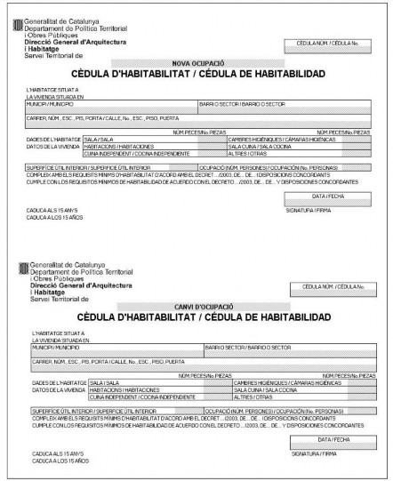

Núm.: 17.6 Volum II | documents | |
a l’abast | ||
Novembre 2024 El certificat i la cèdula d’habitabilitat de l’habitatge usat Decrets d’habitabilitat i Guies de comprovació | ||
Àrea tècnica del CATEB Bon Pastor, 5 08021 Barcelona Tel. 932 402 060 Fax: 932 402 357 | ||
Novembre de 2024. Document a l’abast 17.6. Volum II
El certificat i la cèdula d’habitabilitat de l’habitatge usat
Decrets d’habitabilitat i Guies de comprovació
Document a l’abast 17.6 Volum II
Edita | Col·legi de l’Arquitectura Tècnica de Barcelona Bon Pastor, 5. 08021 Barcelona Tel. 93 240 20 60 |
Alt Penedès-Garraf Carrer de Cal Bolet, 4.08720. Vilafranca del Penedès | |
Tel. 93 819 93 79 Bages-Berguedà-Anoia Plana de l’Om, 6. 08240 Manresa. Tel. 93 872 97 99 | |
Maresme Carrer d’en Xammar, 2. 08301 Mataró. Tel. 93 798 34 42 | |
Osona-Moianès Rambla del Passeig, 71, 08500 Vic. Tel. 93 885 26 11 | |
Vallès Occidental C/ Colom, 114, 1a planta (Vapor Universitari), 08222 Terrassa | |
Tel.: 93 780 11 10 Vallès Oriental Josep Piñol, 8. 08400 Granollers. Tel. 93 879 01 76 | |
Coordinació i Producció | Àrea Tècnica del CATEB |
Versió v4 2024_11_11 |
Quadre resum de vigències dels Decrets i nivells /annexes que cal comprovar per a la
validació dels condicionants d’habitabilitat 5
Disposicions transitòries dels diferents Decrets d’habitabilitat 5
Decret 346/1983 i Decret 571/1983 7
Guia per a la comprovació de l’habitabilitat en habitatges d’acord a les especificacions del
Decret 346/1983 i Decret 571/1983 (Nivell B) 12
Guia per a la comprovació de l’habitabilitat en habitatges d’acord a les especificacions del
Guia per a la comprovació de l’habitabilitat en habitatges d’acord a les especificacions del
Decret 274/1995 Habitatges de Protecció Oficial, Annex 2 27
Guia per a la comprovació de l’habitabilitat en habitatges d’acord a les especificacions del
Decret 314/1996 (mod. Decret 274/1995). Annex 1 30
Guia per a la comprovació de l’habitabilitat en habitatges d’acord a les especificacions del
Decret 314/1996 (mod. Decret 274/1995) Habitatges de Protecció Oficial, Annex 2 34
Guia per a la comprovació de l’habitabilitat en habitatges d’acord a les especificacions del
Decret 28/1999 (Apartat 1 i 2) 41
Guia per a la comprovació de l’habitabilitat en habitatges d’acord a les especificacions del
Decret 28/1999 (Habitatges de Protecció Oficial, Apartat 3) 45
Guia per a la comprovació de l’habitabilitat en habitatges d’acord a les especificacions del
Decret 259/2003 (Annex 1.1 i 1.2) 54
Guia per a la comprovació de l’habitabilitat en habitatges d’acord a les especificacions del
Guia per a la comprovació de l’habitabilitat en habitatges d’acord a les especificacions del
Guia per a la comprovació de les condicions mínimes d’habitabilitat dels habitatges preexistents
o usats, construïts amb anterioritat a l’11 d’agost de 1984. (Annex 2 del Decret 141/2012) 101
Per poder consultar el primer volum, cal veure el Document a l’abast 17.6 Volum I, El certificat i la cèdula d’habitatge usat, el qual recull com s’ha de procedir a la redacció del certificat, aixi com aspectes com la tramitació i aclariments dels principals conceptes d’habitabilitats dels habitatges usats anteriors a l’11 d’agost de 1984.
© C o p y r i g h t C o l · l e g i d e l ’ A r q u i t e c t u r a T è c n i c a d e B a r c e l o n a , 2 0 2 4
Data habitatge a validar | Decret d’inspecció o de validació (per consultar el Decret , feu clic a sobre d’aquest) | Vigència decrets (veure disposicions transitòries dels Decrets) | Guies de comprovació dels condicionants d’habitabilitat |
Habitatge anterior a l’11/08/1984 | 3/11/2012 en endavant | Guia de comprovació d'habitatges usats, annex 2 del Decret 141/2012 | |
Habitatge posterior a l’11/08/1984 | Nivell B del D346/1983 i D571/1983 | Fins 17/04/1996 | Guia comprovació dels Decrets 346/1983 i 517/1983 (Nivell B) |
18/04/1996 fins 23/09/96 | |||
24/09/96 fins 16/02/1999 | |||
17/02/1999 fins 29/12/2003 | |||
30/12/2003 fins 8/10/2009 | |||
9/10/2009 fins 2/11/2012 | |||
3/11/2012 en endavant | |||
Segons l’art 9 apartat 9.3 del D141/2012, els habitatges promoguts sota qualsevol règim de protecció pública, la qualificació definitiva substitueix la cèdula d’habitabilitat de primera ocupació, durant el mateix període de 25 anys.
Un cop transcorregut aquest període des de l’expedició definitiva de la qualificació definitiva, les segones i posteriors transmissions requeriran l’obtenció de la cèdula d’habitabilitat.
En aquest aspecte caldrà tenir en compte:
Decret aplicació HPO (per consultar el Decret , feu clic a sobre d’aquest) | Compliment Habitabilitat | Guies de comprovació dels condicionants d’habitabilitat |
Annex 1 i 2 | ||
Annex 1 i 2 | ||
Apartat 1, 2 i 3 |
No serà preceptiva l’aplicació dels articles 2, 3, 4 i 5.1 del Decret:
en els habitatges en construcció a l’entrada en vigor del present Decret.
en els habitatges en projecte per als quals s’hagi sol·licitat la llicència d’obres abans de l’1 de
febrer de 1984.
en els habitatges en projectes d’obres a càrrec dels Pressupostos Generals de l’Estat o de la Generalitat presentats a supervisar abans de l’1 de febrer de 1984.
Els habitatges que, d’acord amb la disposició anterior, no hagin de complir els articles 2, 3, 4 i 5.1 del Decret es regiran pel que disposen l’article 5.2 i l’Ordre de 29 de febrer de 1944, sobre condicions higièniques mínimes als habitatges.
A les sol·licituds de llicència d’obres corresponents a habitatges que es presentin durant els sis primers mesos posteriors a l’entrada en vigor d’aquest Decret, els serà d’aplicació el nivell d’habitabilitat objectiva que estableixen els decrets 346/83, de 8 de juliol, i 571/1983, de 28 de desembre.
Els requisits mínims d'habitabilitat exigibles als habitatges en construcció a l'entrada en vigor d'aquest Decret o als habitatges en projecte per als quals s'hagi sol·licitat la llicència d'obres abans de l'entrada en vigor d'aquest Decret, són els que estableix el Decret 28/1999, de 9 de febrer. En aquests supòsits, el procediment per a l'atorgament de la cèdula es regeix pel que disposa aquest Decret.
La vigència de les cèdules d'habitabilitat dels habitatges construïts atorgades a l'empara de la normativa anterior es manté fins que s'hagi de procedir a la seva regularització d'acord amb el que estableix l'article 12.
Les sol·licituds de cèdula d’habitabilitat presentades amb anterioritat a l’entrada en vigor d’aquest
Decret es resoldran de conformitat amb el Decret 259/2003.
També s’aplicaran les condicions mínimes d’habitabilitat del Decret 259/2003 a les edificacions de nova construcció realitzades a l’empara d’una llicència d’obres anterior a l’entrada en vigor d’aquest Decret
Les cèdules d’habitabilitat vàlidament obtingudes amb anterioritat a l’entrada en vigor d’aquest Decret mantenen la seva eficàcia durant el termini previst a la normativa vigent en el moment en què van ser concedides. Per a les renovacions successives de la cèdula, s’han d’aplicar les disposicions que preveu aquest Decret.
Les sol·licituds de cèdula d’habitabilitat presentades amb anterioritat a l’entrada en vigor d’aquest Decret es resoldran de conformitat amb el Decret 55/2009, de 7 d’abril, sobre condicions d’habitabilitat dels habitatges i la cèdula d’habitabilitat, llevat que el sol·licitant manifesti expressament la voluntat que s’apliqui el règim jurídic establert en aquest Decret.
En el cas d’habitatges construïts en una data anterior a l’entrada en vigor d’aquest Decret, seran aplicables les condicions d’habitabilitat regulades pel decret d’habitabilitat vigent en la data de finalització de la construcció dels habitatges, llevat que el promotor manifesti expressament la voluntat que s’apliquin les condicions d’habitabilitat que regula aquest Decret. En aquests supòsits, el procediment d’atorgament i el règim jurídic de la cèdula d’habitabilitat, que inclou el termini de vigència, seran els d’aquest Decret.
En el cas de projectes visats abans de l’entrada en vigor d’aquest Decret, i sempre que es demani llicència d’obres per iniciar la construcció abans d’un any des de la data del visat, les condicions mínimes d’habitabilitat exigibles als habitatges són les que estableix el Decret 55/2009, de 7 d’abril, sobre condicions d’habitabilitat dels habitatges i la cèdula d’habitabilitat

Decret 346/1983, de 8 de juliol, sobre el nivell d’habitabilitat objectiva exigit als habitatges.
(Correcció d’errades en el DOGC núm. 369, p. 2522, de 5.10.1983).
NOTA. En aquest text s’ha introduït les correccions d’errada publicades en el DOGC i les esmenes al text que
estableix el Decret 571/1983.
Atès que l’article 47 de la Constitució Espanyola estableix que tots els espanyols tenen dret a gaudir d’un habitatge digne i adient;
Atès que l’article 9.9 de l’Estatut d’Autonomia atorga la competència exclusiva en matèria d’habitatge a la Generalitat de Catalunya;
Atès segons el que disposa el Reial Decret 159/1981, de 9 de gener, va ser traspassada a la Generalitat de Catalunya la titularitat dels serveis en matèria de patrimoni arquitectònic, edificació i habitatge;
Atès el desfasament de la normativa actual, que no assegura unes condicions dignes i adequades d’habitabilitat per als habitatges tant de construcció nova com antiga, i que es considera del tot necessari realitzar una nova normativa d’habitabilitat d’acord amb les exigències presents,
Decreto:
Article 1.
S’entén per habitatge, a efectes d’aquest Decret, tot
local tancat, continu o
discontinu, destinat a l’ús de residència humana.
Article 2.
Tots els habitatges de nova edificació o creats per la reconversió d’antiga edificació hauran de tenir, com a mínim, el nivell B d’habitabilitat objectiva definit a l’annex del present Decret.
Article 3.
En la memòria dels projectes bàsics d’habitatges s’ha de fer constar per a cada habitatge la seva classificació en habitatge complet o reduït, la seva superfície útil i el nombre de peces de 5 o més m² de superfície útil que conté.
En els plànols del projecte bàsic s’han d’expressar les peces que es classifiquin com a sala (S), habitació (H), cambra higiènica (C) i galeria (G).
Article 4.
Per atorgar la llicència d’obres per l’Ajuntament, caldrà realitzar el control que els habitatges projectats tenen el nivell B d’habitabilitat objectiva.
Aquest control, el faran els Serveis Territorials de
la Direcció General d’Arquitectura i
Habitatge en aquells municipis en què les Ordenances municipals d’edificació o el planejament urbanístic no prevegin que els nous habitatges tinguin un nivell B d’habitabilitat, o bé en el cas que l’Ajuntament ho demani per manca de serveis tècnics adients.
Article 5.
No podrà atorgar-se la Cèdula d’Habitabilitat, si no tenen el nivell A d’habitabilitat definit a l’annex del present Decret.
Article 6.
Els habitatges als quals el present Decret exigeix el nivell B d’habitabilitat en l’atorgament de la primera Cèdula d’habitabilitat hauran de reunir sempre les característiques pròpies del mateix nivell per obtenir les successives Cèdules que se sol·licitin.
Article 7.
En els Plans urbanístics es regularan les condicions d’habitabilitat dels habitatges d’acord amb el que preveu el present Decret.
Disposicions transitòries Primera.
No serà preceptiva l’aplicació dels articles 2, 3, 4 i
5.1 del Decret:
en els habitatges en construcció a l’entrada en
vigor del present Decret.
en els habitatges en projecte per als quals s’hagi sol·licitat la llicència d’obres abans de l’1 de febrer de 1984.
en els habitatges en projectes d’obres a càrrec dels Pressupostos Generals de l’Estat o de la Generalitat presentats a supervisar abans de l’1 de febrer de 1984.
Segona.
Els habitatges que, d’acord amb la disposició anterior, no hagin de complir els articles 2, 3, 4 i 5.1 del Decret es regiran pel que disposen l’article 5.2 i l’Ordre de 29 de febrer de 1944, sobre condicions higièniques mínimes als habitatges.
Disposicions finals
Queden derogades totes les disposicions d’igual o d’inferior rang que contradiguin aquest
Decret.

Es faculta el Conseller de Política Territorial i Obres Públiques per dictar les normes complementàries i desplegadores d’aquest Decret.
Barcelona, 8 de juliol de 1983 Jordi Pujol
President de la Generalitat de Catalunya Xavier Bigatà i Ribé
Conseller de Política Territorial i Obres Públiques
Annex
Definicions
A efectes del present Decret:
Un habitatge és complet quan està compost com a mínim per una sala, una o més habitacions i una cambra higiènica.
Un habitatge és reduït quan està compost com a mínim per una sala i una cambra higiènica.
Una peça pot definir-se com a sala quan compleix:
tenir una superfície útil no inferior a 10 m²,
admetre la inscripció d’un quadrat que mesuri en
planta 2,40 x 2,40 metres,
disposar d’una obertura a l’aire lliure, directa o a través d’una galeria, de manera que entre 0,80 i 1,80 metres d’alçària, tingui, com a mínim, una superfície de 0,80 m²,
no contenir cap aparell higiènic,
si té una superfície inferior a 14 m², no contenir
l’equip obligatori de cuina, i
no fer-se a través d’aquesta l’obertura o la
ventilació obligatòria de cap altra peça.
Una peça pot definir-se com a habitació quan compleix els següents requisits:
tenir 5 o més m² de superfície útil,
admetre la inscripció d’un quadrat que mesuri en
planta 1,80 x 1,80 metres,
disposar d’una obertura a l’aire lliure, directa a través d’una galeria, de manera que entre 0,80 i 1,80 metres d’altura tingui, com a mínim, una superfície de 0,20 metres quadrats,
no contenir cap aparell higiènic que sigui un wàter, un safareig o un abocador,
no contenir l’equip obligatori de cuina, i
poder-se independitzar.
Una peça pot definir-se com a cambra higiènica quan compleix els següents requisits:
poder-se independitzar,
tenir ventilació a l’aire lliure directa o a través d’un conducte en el qual s’activi mecànicament la ventilació. Si el conducte és vertical, la ventilació pot ser activada estàticament.
Peces principals són les sales i les habitacions.
Galeria és la peça que té un finestral donant directament a l’aire lliure amb una superfície en alçada no inferior a la superfície en planta de la peça.
Una obertura (a l’aire lliure) és una porta o una
finestra practicable.
La superfície d’una obertura és la del seu pas
obert o de la seva superfície translúcida.
Accés de l’habitatge és tota porta que comunica l’habitatge amb el seu exterior.
Superfície útil d’un habitatge o d’una peça és la superfície del seu espai que té una alçada no inferior a 1,90 metres. La superfície útil no inclou l’ocupada pels seus tancaments interns i perimetrals, fixos o mòbils, pels elements estructurals verticals i per les canalitzacions o conductes amb una secció superior a 100 cm².
Aparells higiènics són els que, amb la corresponent dotació d’aigua corrent i desguàs, estan destinats a la higiene i l’evacuació del cos humà.
Nivell A d’habitabilitat objectiva.
Un habitatge té el nivell A d’habitabilitat objectiva
quan compleix els següents requisits:
Tipus.- 1. S’ha de poder classificar com a habitatge
complet o reduït.
Accés.- 2. Els espais d’accés de l’edifici que el conté han de tenir un sistema elèctric d’il·luminació de manera que, quan es transiti per ells, quedin il·luminats.
Construcció.
La construcció que els conforma o l’afecta ha de:
3.- Ser sòlida,
4.- Evitar que traspuï humitat,
5.- Ser estanca a les aigües pluvials, i 6.- Evitar la inundació de l’habitatge.
El sòl trepitjable, tant de l’habitatge com del seu accés, ha d’estar completament pavimentat, no ser polsegós i no implicar perill a les persones.
Dimensions.
Si és un habitatge reduït, la seva superfície útil ha de ser com a mínim de 15 m² i, si és complet, de 24 m².
L’altura lliure sobre la superfície útil ha de tenir
com a mínim un valor mitjà de 2,25 metres.

Equip.
Tenir una instal·lació d’aigua corrent que:
10.- Estigui en bon estat,
11.- Connecti amb tot l’equip que la requereixi, i
12.- Si el subministrament és per captació pròpia o
per aforament, disposi d’un dipòsit de
reserva de 200 litres. Disposar d’un sistema d’evacuació d’aigües residuals de manera que:
13.- Estigui en bon estat,
14.- Connecti amb tot l’equip que el requereixi,
15.- Tots els desguassos tinguin un dispositiu sifònic, i
16.- Si en el seu entorn hi ha una xarxa pública de clavegueres, connecti amb aquesta; si no n’hi ha, les aigües brutes no s’aboquin a l’exterior si no es depuren prèviament.
Si l’habitatge està situat en un nucli urbà, o té la possibilitat d’estar connectat a una xarxa exterior de subministrament d’energia elèctrica amb condicions econòmiques similars a les d’un habitatge situat al nucli urbà, ha de disposar d’una instal·lació elèctrica interior de manera que:
17.- Tingui un punt de llum amb interruptor independent a cada peça,
18.- Tingui un endoll per a cada aparell d’equip
obligatori,
19.- Tingui dos endolls a la sala i un a les habitacions i a la peça que contingui l’equip de cuina,
i
20.- No impliqui un risc a les persones ni pertorbacions en el normal funcionament d’altres instal·lacions.
Disposar d’un equip higiènic de manera que:
21.- Estigui format com a mínim per un lavabo, un wàter i una dutxa en bon estat,
22.- Tot wàter estigui inclòs en una cambra higiènica,
23.- Almenys una dutxa tingui o admeti directament una instal·lació d’aigua calenta amb la possibilitat d’un consum seguit de 50 litres d’aigua a una temperatura de 40 graus i amb un cabal de 10 litres per minut, i
24.- Tota dutxa tingui impermeabilitzat el seu sòl i
els seus paraments fins a una alçada d’1,50 metres.
Tenir instal·lat o admetre directament la instal·lació
d’un equip de cuina de manera que:
25.- Estigui format com a mínim per una pica i un aparell de cocció elèctrica o a gas,
26.- Estigui en una mateixa peça,
27.- La peça on estigui inclòs no disposi de cap aparell higiènic excepte el safareig, i
28.- La peça on estigui inclòs tingui una ventilació a l’aire lliure directa o a través d’un conducte en el qual s’activi mecànicament la ventilació. Si e sum sigui com a mínim de 10 litres per minut excepte a la dutxa, on ha de ser de 15 litres.
30.- Si l’habitatge està situat en un nucli urbà, o té la possibilitat d’estar connectat a una xarxa exterior de subministrament d’energia elèctrica amb condicions econòmiques similars, ha de disposar d’una instal·lació elèctrica interior de manera que la peça que conté l’equip de cuina tingui dos endolls amb independència dels que pugui tenir per ser una sala. Disposar d’un equip higiènic en bon estat de manera que:
31.- L’equip mínim obligatori estigui a l’accés de
totes les habitacions, i
32.- Les dutxes estiguin incloses en una cambra de servei higiènic. Tenir instal·lades o admetre directament la instal·lació d’un equip de cuina de manera que:
33.- La peça on estigui inclòs tingui com a mínim una superfície de 5 m², i
34.- Sobre l’emplaçament de l’aparell de cocció hi hagi o s’admeti directament la instal·lació d’una campana que evacuï els fums a través d’un conducte en el qual s’activi mecànicament l’extracció. Si el conducte és vertical l’extracció pot ser activada estàticament.
35. Si disposa o té prevista la instal·lació d’un equip de rentat de roba, la peça on estigui prevista aquesta instal·lació ha de tenir ventilació a l’aire lliure directa o a través d’un conducte en el qual s’activi mecànicament la ventilació. Si el conducte és vertical, la ventilació pot ser activada estàticament. Si el conducte és vertical, la ventilació pot ser activada estàticament.
Nivell B d’habitabilitat objectiva.
Un habitatge té el nivell B d’habitabilitat objectiva quan, a més de tenir el nivell A d’habitabilitat, compleix els següents requisits:
Accés.
L’accés s’ha de fer a través d’un espai públic, d’un espai comú o d’un espai annex al mateix habitatge al qual es tingui accés de la mateixa manera.
No ha de servir com a accés obligat a qualsevol local que no sigui d’ús exclusiu del mateix habitatge o comunitari.
En cas que el recorregut d’accés a l’habitatge suposi pujar o baixar un desnivell de 13,75 o més metres per l’interior d’un edifici, s’ha de poder fer també aquest recorregut a través d’un ascensor o aparell similar; si el desnivell és de 22 o més metres, a través de dos aparells.
Ser possible la introducció i sortida de mobiliari a través d’una obertura amb una superfície practicable més gran o igual a 1,5 metres quadrats i una amplada de 0,90 metres.
Els espais d’accés a l’habitatge han de:
5.- Tenir com a mínim una amplada de 0,90 metres, 6.- Permetre el pas d’un rectangle que, en posició
horitzontal, mesuri 1,90 x 0,50 metres, i
7.- Estar ventilats de manera que, si es desenvolupen en mes d’una planta, la planta baixa i l’última tinguin una obertura de ventilació no inferior a 1 m².
8. La superfície dels paraments dels espais d’accés
ha de ser soferta als cops, fins a una alçada de 1,50 metres.
En el cas que l’accés disposi d’escales, aquestes han
de complir les següents condicions:
9.- Que en cada tram d’escala se salvi com a màxim
un desnivell de 3,10 metres,
10.- Que l’altura dels graons sigui com a màxim de
19 cm,
11.- Que l’estesa dels graons sigui com a mínim de
25 cm.
12. Els punts de l’espai d’accés on hi hagi un desnivell superior a 60 cm han de disposar de baranes o elements protectors.
Construcció.
La construcció que el conforma o l’afecta ha de:
13.- Ser capaç de suportar amb seguretat unes
sobrecàrregues d’ús de 150 kg per m², i
14.- Estar protegida de les humitats del sòl.
Dimensions.
Si és un habitatge reduït, la seva superfície útil ha de ser com a mínim de 20 m², i, si és complet, de 32 m².
L’alçada lliure sobre la superfície útil de les peces
principals ha de tenir com a mínim un valor mitjà de 2,50 metres.
El perímetre de façana (P) ha de ser en funció de la seva superfície útil (S) de manera que, mesurats respectivament en metres i metres quadrats
S
P≥ -----------
8
El perímetre de façana d’un habitatge és la suma dels perímetres exteriors de cada una de les seves façanes que donen a un espai obert, un pati d’illa de cases o un espai de parcel·la, amidats de la següent manera:
1r. No es tenen en compte els cossos sortints.
2n. En el cas d’una façana d’un habitatge en un espai obert o en un pati d’illa de cases, el perímetre d’una façana és la línia recta que uneix els punts extrems del tros de façana que
limita l’habitatge.

Per poder considerar un front com a façanes diferents, els perímetres d’aquestes façanes han de formar entre si un angle amb valor situat entre 60 i 120 graus.
3r. En el cas d’una façana a pati de parcel·la, el perímetre és el màxim polígon còncau inscrivible en planta.
Els patis que es considerin pel càlcul del perímetre de façana han de:
18.- Permetre la inscripció d’una circumferència de
diàmetre més gran o igual a una sisena part
de l’altura existent entre el nivell de terra de l’habitatge i el coronament del pati.
19.- En el cas que la relació entre l’alçada del pati i la línia recta horitzontal màxima que es pugui traçar en planta sigui més gran o igual a dos, tenir una presa inferior d’aire des de l’exterior, i
20.- En el cas que el pati estigui cobert amb una claraboia, tenir una sortida d’aire en el seu coronament amb una superfície igual o més gran d’1/6 de la seva superfície en planta.
Peces.
Les seves peces principals han de complir els següents requisits:
21.- Tenir accés amb una amplada mínima de 0,60 metres, i
22.- Tot punt de la seva obertura obligatòria a l’aire lliure ha de tenir la visió, dintre d’un angle de 90 graus la bisectriu de la qual sigui perpendicular a la façana, d’un segment horitzontal de 3 m situat paral·lelament a la façana a una distància de 3 metres.
Les sales han de:
23.- no tenir accés directe a cap cambra higiènica que contingui un wàter o una dutxa, i
24.- tenir la superfície útil contínua de 12 m² més 1 m² per cada habitació que conté l’habitatge, sense cap estrangulament inferior a 1,40 metres.
La peça que conté l’equip obligatori de cuina no ha de tenir accés directe a cap cambra higiènica que contingui un wàter o una dutxa.
El nombre (n) màxim de peces de 5 o més m² útils en les quals es divideix un habitatge ha de ser igual o inferior al nombre que resulti de dividir per deu la superfície útil de l’habitatge (S) mesurada en metres quadrats, és a dir,
S
n≤ -----------
10
Si les peces d’un habitatge estan situades en un local discontinu, la comunicació entre elles s’ha de fer a través d’un espai d’ús exclusiu del mateix habitatge.
Equip.- Tenir una instal·lació d’aigua corrent de
manera que:

28.- Si el subministrament és per captació pròpia o per aforament, tingui un dipòsit de reserva amb una capacitat de 150 litres per habitació, i
29.- El cabal dels punts de com a minim de 10 litres per minut excepte a la dutxa, on ha de ser de 15 litres.
30.- Si l'habitatge està situat en un nucli urbà, o té la possibilitat d'estar connectat a una xarxa exterior de subministrament d'energia elèctrica amb condicions econòmiques similars, ha de disposar d'una instal·lació elèctrica interior de manera que la peça que conté l'equip de cuina tingui dos endolls amb independència dels que pugui tenir per ser una sala.
Disposar d'un equip higiènic en bon estat de manera que:
31.- L'equip mínim obligatori estigui a l'accés de totes les habitacions, i
32.- Les dutxes estiguin incloses en una cambra de servei higiènic.
Tenir instal·lades o admetre directament la instal·lació d'un equip de cuina de manera que:
33.- La peça on estigui inclòs tingui com a mínim una superfície de 5 m2, i
34.- Sobre l'emplaçament de l'aparell de cocció hi hagi o s'admeti directament la instal·lació d'una campana que evacuï els fums a través d'un conducte en el qual s'activi mecànicament l'extracció. Si el conducte és vertical l'extracció pot ser activada estàticament.
35. Si disposa o té prevista la instal·lació d'un equip de rentat de roba, la peça on estigui prevista aquesta instal·lació ha de tenir ventilació a l'aire lliure directa o a través d'un conducte en el qual s'activi mecànicament la ventilació. Si el conducte és vertical, la ventilació pot ser activada estàticament.
(guia pendent de ser consensuada amb el Servei d'Habitabilitat i Parc Desocupat de la Generalitat de Catalunya)
Segons els requisits mínims establerts al decret per habitatges de nova edificació o creats per la reconversió
d’antiga edificació (nivell B).
Recomanem la consulta dels aclariments als principals conceptes relatius a l’habitatge, al final d’aquesta guia.
Construcció | Observacions | ||
És sòlida | SI | NO | |
No traspua humitat | SI | NO | |
És estanca a les aigües pluvials | SI | NO | |
S’evita la inundació de l’habitatge | SI | NO | |
El sòl trepitjable de tot l’habitatge està pavimentat, no és polsegós i no implica perill | SI | NO | |
Pot suportar amb seguretat unes sobrecàrregues d’ús de 150 Kg/m2 | SI | NO | |
Esta protegida contra les humitats del sòl | SI | NO |
Espais d’accés a l’habitatge | Observacions | ||
Disposa de sistema elèctric d’il·luminació | SI | NO | |
El sòl trepitjable està pavimentat, no és polsegós i no implica perill | SI | NO | |
L'accés s'ha de fer a través d'un espai públic, d'un espai comú o d'un annex al mateix habitatge al qual es tingui accés de la mateixa manera. | SI | NO | |
L’accés es exclusiu del mateix habitatge o comunitari | SI | NO | |
Desnivell entre el carrer i qualsevol habitatge es ≥ 13,75m, cal que disposi d’un ascensor o similar | SI | NO | |
Desnivell entre el carrer i qualsevol habitatge es ≥ 22,00m, cal que disposi de dos ascensors o similars | SI | NO | |
Permet la introducció i sortida de mobiliari a través d'una obertura amb una superfície ≥ 1,5 m2 i amplada ≥ 0,90m. | SI | NO | |
Espai d’accés a l'habitatge amplada mínima 0,90m. | SI | NO | |
Permet el pas d'un rectangle que, en posició horitzontal, mesuri 1,90 x 0,50 metres. | SI | NO | |
L’accés esta ventilat de manera que, si es desenvolupen en més d'una planta, la planta baixa i l'última tenen una obertura de ventilació ≥ 1 m2 | SI | NO | |
La superfície dels paraments dels accessos es resistent al cops i te una altura ≥1,5m. | SI | NO | |
Si te escales: Cada tram, el màxim desnivell a salvar serà de 3,10 metres. Altura graons com a màxim 19 cm. Estesa graons com a mínim de 25 cm. | SI | NO | |
Els desnivells superiors a 60 cm estan protegits per elements protectors o baranes resistents als cops | SI | NO | |
Habitatge en general | Observacions | ||
Habitatge reduït (disposa, com a mínim, d’una sala, cambra higiènica i permet la instal·lació directa d’un equip de cuina), superfície útil ≥ 20 m2 | SI | NO | |
Habitatge complet (disposa, com a mínim, d’una sala, cambra higiènica, una o més habitacions i permet la instal·lació directa d’un equip de cuina), superfície útil ≥ 32 m2 | SI | NO | |
Altura lliure ≥ 2,25m (en sala i habitacions, altura lliure valor mitja ≥ 2,50m) | SI | NO | |
Perímetre de façana, P ≥ S/8 S= superfície útil de l’habitatge (m2) P=perímetre de façana (m) | SI | NO | |
Peces (número i disposició), n ≤ S/10 n= nombre màxim de peces de superfície útil≥5 m2 S= superfície útil de l’habitatge (m2) Si les peces d’un habitatge estan situades en un local discontinu, la comunicació entre elles s’ha de fer a través d’un espai d’ús exclusiu del mateix habitatge. | SI | NO | |
Instal·lació d’aigua corrent esta en bon estat, connecta amb tot l’equip que la requereix i permet un consum de 15l/minut en la dutxa i 10l/m en la resta d’aparells | SI | NO | |
Disposa d’un dipòsit de reserva d’aigua de, almenys, 150 litres per habitació (200 litres per habitatge),si té subministrament per captació pròpia o aforament | SI | NO | |
Permet un consum seguit de 50 litres d’aigua a 40ºC i 10 l/ minut | SI | NO | |
Disposa de lavabo i/o dutxa en una o diverses peces i vàter a la cambra higiènica | SI | NO | |
El sistema d’evacuació d’aigües residuals està connectat a la xarxa de clavegueres o es depura prèviament | SI | NO | |
Sala | Observacions | ||
Té una superfície útil interior ≥ 12 m2 + 1m2 per habitació | SI | NO | |
Superfície útil ≥ 14 m2, si disposa d’equip de cuina a la mateixa sala | SI | NO | |
Permet inscriure un quadrat de 2,40 x 2,40 m | SI | NO | |
Sense estrangulaments en planta < 1,40m. | SI | NO | |
Amplada accés sala ≥ 0,60 m | SI | NO | |
Altura lliure valor mitjà≥ 2,50 m | SI | NO | |
Ventilació ≥ 0,80 m2 directa a l’exterior o a traves d’una galeria, entre 0,80 i 1,80 m d’altura | SI | NO | |
No es fa a través seu l’obertura a l’exterior o la ventilació obligatòria de cap altra peça | SI | NO | |
Es garanteix una visió directa | SI | NO | |
La instal·lació elèctrica no implica perill i disposa, com a mínim, d’un punt de llum amb interruptor independent | SI | NO | |
Sense equip de cuina, disposa, com a mínim, de 2 endolls | SI | NO | |
Amb equip de cuina, disposa, com a mínim, de 4 endolls | SI | NO | |
Amb equip de cuina, disposa d’endolls de l’equip obligatori | SI | NO | |
Sense accés directe a cap cambra higiènica que contingui vàter o una dutxa | SI | NO | |
Compleix l’obligació de no contenir cap aparell higiènic | SI | NO |
Habitació 1 | Observacions | ||
Superfície útil ≥ 5 m2 | SI | NO | |
Amplada accés habitació ≥ 0,60 m | SI | NO | |
Altura lliure valor mitjà≥ 2,50 m | SI | NO | |
Admet la inscripció d’un quadrat d’ 1,80x1,80 m en planta | SI | NO | |
Ventilació ≥ 0,20 m2 directa a l’exterior o a traves d’una galeria, a espai públic, pati d’illa o pati de parcel·la entre 0,80 i 1,80 m d’altura | SI | NO | |
Es garanteix una visió directa | SI | NO | |
La instal·lació elèctrica no implica perill i disposa, com a mínim, d’un punt de llum amb interruptor independent i un endoll | SI | NO | |
Sense vàter, safareig o abocador | SI | NO | |
Sense equip obligatori de cuina | SI | NO | |
Pot independitzar-se | SI | NO |
Habitació 2 | Observacions | ||
Superfície útil ≥ 5 m2 | SI | NO | |
Amplada accés habitació ≥ 0,60 m | SI | NO | |
Altura lliure valor mitjà≥ 2,50 m | SI | NO | |
Admet la inscripció d’un quadrat d’ 1,80x1,80 m en planta | SI | NO | |
Ventilació ≥ 0,20 m2 directa a l’exterior o a traves d’una galeria, a espai públic, pati d’illa o pati de parcel·la entre 0,80 i 1,80 m d’altura | SI | NO | |
Es garanteix una visió directa | SI | NO | |
La instal·lació elèctrica no implica perill i disposa, com a mínim, d’un punt de llum amb interruptor independent i un endoll | SI | NO | |
Sense vàter, safareig o abocador | SI | NO | |
Sense equip obligatori de cuina | SI | NO | |
Pot independitzar-se | SI | NO |
Habitació 3 | Observacions | ||
Superfície útil ≥ 5 m2 | SI | NO | |
Amplada accés habitació ≥ 0,60 m | SI | NO | |
Altura lliure valor mitjà≥ 2,50 m | SI | NO | |
Admet la inscripció d’un quadrat d’ 1,80x1,80 m en planta | SI | NO | |
Ventilació ≥ 0,20 m2 directa a l’exterior o a traves d’una galeria, a espai públic, pati d’illa o pati de parcel·la entre 0,80 i 1,80 m d’altura | SI | NO | |
Es garanteix una visió directa | SI | NO | |
La instal·lació elèctrica no implica perill i disposa, com a mínim, d’un punt de llum amb interruptor independent i un endoll | SI | NO | |
Sense vàter, safareig o abocador | SI | NO | |
Sense equip obligatori de cuina | SI | NO | |
Pot independitzar-se | SI | NO |
Habitació 4 | Observacions | ||
Superfície útil ≥ 5 m2 | SI | NO | |
Amplada accés habitació ≥ 0,60 m | SI | NO | |
Altura lliure valor mitjà≥ 2,50 m | SI | NO | |
Admet la inscripció d’un quadrat d’ 1,80x1,80 m en planta | SI | NO | |
Ventilació ≥ 0,20 m2 directa a l’exterior o a traves d’una galeria, a espai públic, pati d’illa o pati de parcel·la entre 0,80 i 1,80 m d’altura | SI | NO | |
Es garanteix una visió directa | SI | NO | |
La instal·lació elèctrica no implica perill i disposa, com a mínim, d’un punt de llum amb interruptor independent i un endoll | SI | NO | |
Sense vàter, safareig o abocador | SI | NO | |
Sense equip obligatori de cuina | SI | NO | |
Pot independitzar-se | SI | NO |
Cuina | Observacions | ||
Superfície útil ≥ 5 m2 (com a peça independent) | SI | NO | |
Té un equip de cuina format, com a mínim, per una pica i un aparell de cocció situats en una mateixa peça i sense aparells higiènics, excepte safareig | SI | NO | |
Té instal·lació d’aigua freda en bon estat, que serveix, com a mínim, a la pica de cuina amb un cabla de 10 l/minut | SI | NO | |
Amb ventilació a l’aire lliure directa o a través d’un conducte horitzontal amb ventilació mecànica. Pot ser estàtica, si és vertical | SI | NO | |
Sobre l’emplaçament de l’aparell de cocció hi hagi o s’admeti directament la instal·lació d’una campana que evacuï els fums a través d’un conducte horitzontal amb ventilació mecànica. Pot ser estàtica, si és vertical | SI | NO | |
Té un sistema d’evacuació d’aigües residuals, en bon estat, amb què es connecta tot l’equip que ho requereix, i amb dispositius de tipus sifònic | SI | NO | |
La instal·lació elèctrica no implica perill i disposa, com a mínim, d’un punt de llum amb interruptor independent | SI | NO | |
Disposa de 2 endolls o 3 si l’equip de cocció és elèctric | SI | NO | |
No te accés directe a cap cambra higiènica que contingui un vàter o una dutxa. | SI | NO |
Cambra higiènica i equip higiènic | Observacions | ||
El vàter està en una cambra higiènica que disposa de ventilació directa a l’aire lliure o a través d’un conducte horitzontal amb ventilació mecànica. Pot ser estàtica, si és vertical | SI | NO | |
A més del WC en una cambra higiènica, disposa de lavabo, dutxa o banyera, en bon estat, encara que no estiguin en una cambra higiènica | SI | NO | |
Té instal·lació d’aigua freda i calenta en bon estat i serveix, com a mínim, un lavabo i una dutxa o banyera, encara que no estiguin en una cambra higiènica | SI | NO | |
La dutxa té impermeabilitzat el sòl i els paraments fins a una alçada de 1,50 m | SI | NO | |
La cambra està situada a l’accés de totes les habitacions | SI | NO | |
Permet un consum seguit de 50 litres d’aigua a 40ºC i 10 l/ minut en dutxa o banyera | SI | NO | |
Té un sistema d’evacuació d’aigües residuals, en bon estat, amb què es connecta tot l’equip que ho requereix, i amb dispositius de tipus sifònic | SI | NO | |
La instal·lació elèctrica no implica perill i disposa, com a mínim, d’un punt de llum amb interruptor independent | SI | NO | |
Pot independitzar-se | SI | NO | |
Galeria | Observacions | ||
Té un finestral que dóna directament a l’aire lliure amb una superfície en alçada no inferior a la superfície en planta de la mateixa galeria | SI | NO | |
Equip de rentat de roba (no obligatori , però si en té, l’espai haurà de complir) | Observacions | ||
L’espai disposa de ventilació directa a l’aire lliure o a través d’un conducte horitzontal amb ventilació mecànica. Pot ser estàtica, si és vertical | SI | NO | |
(No especificat en Decret 346 ni 571) Disposa de presa d’aigua freda | SI | NO | |
(No especificat en Decret 346 ni 571) Disposa de desguàs | SI | NO | |
(No especificat en Decret 346 ni 571) Disposa de presa de corrent | SI | NO | |
Conceptes aclaratoris
Superfície útil (Art.11 del D346/1983, Annex 1)
Superfície útil d’un habitatge o d’una peça es la superfície del seu espai que té una alçada no inferior a 1,90 metres. La superfície útil no inclou l’ocupada pels seus tancaments interns i perimetrals, fixos o mòbils, pels elements estructurals verticals i per les canalitzacions o conductes amb una secció superior a 100 cm².
Perímetre de la façana (Articles 17 i 18 del D346/1983, Annex 3)
El perímetre de façana d’un habitatge és la suma dels perímetres exteriors de cada una de les seves façanes que donen a un espai obert, un pati d’illa de cases o un espai de parcel·la, amidats de la següent manera:
No es tenen en compte els cossos sortints.
En el cas d’una façana d’un habitatge en un espai obert o en un pati d’illa de cases, el perímetre d’una façana és la línia recta que uneix els punts extrems del tros de façana que limita l’habitatge.
Per poder considerar un front com a façanes diferents, els perímetres d’aquestes façanes han de formar
entre si un angle amb valor situat entre 60 i 120 graus.
En el cas d’una façana a pati de parcel·la, el perímetre és el màxim polígon còncau inscrivible en planta.
Condicions dels patis per poder comptabilitzar la seva façana com a perímetre:
Permetre la inscripció d’una circumferència de diàmetre més gran o igual a una sisena part de l’altura existent entre el nivell de terra de l’habitatge i el coronament del pati.
En el cas que la relació entre l’alçada del pati i la línia recta horitzontal màxima que es pugui traçar en planta sigui més gran o igual a dos, tenir una presa inferior d’aire des de l’exterior
En el cas que el pati estigui cobert amb una claraboia, tenir una sortida d’aire en el seu coronament amb una superfície igual o més gran d’1/6 de la seva superfície en planta.
Visió directa (Article 22 del D346/1983, Annex 3)
Tot punt de la seva obertura obligatòria a l’aire lliure ha de tenir la visió, dintre d’un angle de 90 graus la bisectriu de la qual sigui perpendicular a la façana, d’un segment horitzontal de 3 m situat paral·lelament a la façana a una distància de 3 metres.
(DOGC. núm. 2116, de 18.10.1995)
Els decrets 346/1983, de 8 de juliol, i 571/1983, de 28 de desembre, sobre nivell d’habitabilitat objectiva exigit als habitatges, van representar una innovació molt important amb relació a les normes que fins al moment de la seva promulgació regulaven les característiques i condicions que havien de reunir el locals per ser considerats com a habitatges.
Tant aquests decrets com el Decret 129/1984, de 18 d’abril, sobre l’atorgament de la cédula d’habitabilitat, van implicar l’inici d’una nova etapa que havia de regir la construcció d’habitatges i, sobretot, la tasca a iniciar per part de l’Administració, tenint en compte que l’habitabilitat passava a ocupar un lloc important a efectes no només estadístics de nombre d’habitatges, característiques constructives i tipologies, sinó del compliment de requisits d’habitabilitat i d’altres requeriments referents a la construcció.
En virtut d’aquestes disposicions, la cèdula d’habitabilitat deixà de ser un element de comprovació de condicions d’higiene i amb el temps s’ha instrumentalitzat en un document imprescindible en la política d’habitatge.
D’ençà de la promulgació d’aquests decrets, s’han publicat importants disposicions en matèria d’habitatge, entre les quals, pel seu rang normatiu, hem d’esmentar, com a prioritària, la Llei 24/1991, de 29 de novembre, de l’habitatge.
Aquesta Llei ha implicat un trencament en la dualitat, tant d’exigències com de mesures i de protecció als usuaris, que fins ara venia produint-se en les normes d’obligat compliment, segons es tractés d’habitatges lliures o de protecció oficial.
En aquesta mateixa línia, es considera necessari establir una homogeneïtzació dels requisits exigibles com a mínims, per ambdues categories, la qual comporta, al mateix temps, una elevació i una millota dels nivells més acord amb la realitat actual.
En aquest sentit, als habitatges de protecció oficial els seran d’aplicació les prescripcions recollides en aquest Decret, en substitució de les ordenances provisionals d’habitatges de protecció oficial aprovades per l’Ordre Ministerial de 29 de maig de 1969.
El Decret 346/1983 establia l’existència de dos nivells d’habitabilitat, un destinat a habitatges de construcció antiga i un altre destinat a habitatges nous. Tanmateix, el present Decret estableix un nivell d’habitabilitat exigible a tota construcció d’obra nova sense distinció de categoria ni règim lliure o si està acollida a algun règim de protecció. Paral·lelament, a l’igual que en l’esmentat Decret 346/1983, es fixen els nivells d’habitabilitat de què han de gaudir els habitatges usats. En aquest sentit, per tal d’evitar que molts dels habitatges que integren el parc actual no fossin susceptibles de ser utilitzats com a residència de persones físiques, s’ha optat per un únic nivell aplicable a tot el parc d’habitatge usat.
D’altra banda, es considera del tot convenient, per a una millor facilitat en les tasques dels professionals que intervenen en el procés constructiu, recollir en un únic text totes les determinacions que afectin els nivells d’habitabilitat.
Per últim, s’han d’assenyalar com a novetats introduïdes més destacables les següents: una elevació de la superfície de les sales i de les habitacions, de la superfície d’il·luminació i ventilació de les peces, un aclariment quant a les exigències dels ascensors, com també una adaptació de les mesures de les peces d’accessos i escales a les altres normes d’obligat compliment i una millora en el nivell d’equipament mínim exigible als nous habitatges.
Per tot això, de conformitat amb el dictamen de la Comissió Jurídica Assessora, a proposta del conseller de Política Territorial i Obres Públiques i d’acord amb el Govern,
Decreto:
Article 1
De conformitat amb el que disposa la Llei 24/1991, de 29 de novembre, de l’habitatge, i als efectes Del que s’estableix en aquest Decret, s’entén per habitatge tota construcció fixa destinada a ser residência de persones físiques, o utilitzada com a tal, amb independència que s’hi desenvolupin altres usos. Els elements complementaris de la construcció formen part de l’habitatge.
Article 2
Tots els habitatges de nova edificació, els creats per reconversió d’antiga edificació o els obtinguts com a conseqüència d’obres de gran rehabilitació, entenent per tals les que només excloguin l’enderrocament de les façanes o constitueixin una actuació global en tot l’edifici que afecti la seva estructura o configuració interior, hauran de tenir, com a mínim, el nivell d’habitabilitat objectiva definit a l’annex 1 del present Decret.
Els habitatges de protecció oficial estaran subjectes a les prescripcions de l’annex 1 del present Decret amb les especificitats que es recullen a l’annex 2.
La resta d’habitatges hauran de complir els requisits establerts a l’annex 3.
Article 3
En la memòria dels projectes bàsics d’habitatges s’ha de fer constar, per a cada habitatge, la seva
classificació com a habitatge complet o reduït, la seva superfície útil i el nombre de peces que conté.
En els plànols del projecte bàsic s’han d’expressar les peces, que han de complir el mínim d’habitabilitat, que es classifiquin, com a sala (S), habitació (H), cambra higiènica (B) cuina (C) i galeria (G).
Article 4
Per poder atorgar llicència d’obres, caldrà que l’Ajuntament hagi realitzat el control relatiu al fet que els habitatges projectats tinguin el nivell d’habitabilitat objectiva establert al present Decret.
Aquells municipis que per manca de serveis tècnics ho demanin podran ser assistits en la realització d’aquest control pel Consell Comarcal corresponent a la seva demarcació.
Article 5
No podrà atorgar-se la cèdula d’habitabilitat als habitatges de nova edificació que no compleixin amb el nivell d’habitabilitat establert en la present disposició.
Article 6
Els habitatges nous que hagin obtingut cèdula d’habitabilitat, d’acord amb el nivell exigit en el present
Decret, hauran de reunir sempre, com a mínim, les característiques del mateix nivell, per obtenir les successives cèdules que se sol·licitin.
Disposició transitòria
-1 A les sol·licituds de llicència d’obres corresponents a habitatges que es presentin durant els sis primers mesos posteriors a l’entrada en vigor d’aquest Decret, els serà d’aplicació el nivell d’habitabilitat objectiva que estableixen els decrets 346/83, de 8 de juliol, i 571/1983, de 28 de desembre.
-2 Les ordenances municipals d’edificació i els plans urbanístics s’adequaran en un termini de Quatre anys a les prescripcions d’aquest Decret.
Disposició derogatòria
A partir de l’entrada en vigor d’aquest Decret, queden derogats el Decret 346/83, de 8 de juliol, i el Decret 571/83, de 28 de desembre, sens perjudici del que s’estableix a la disposició transitòria primera.
Disposició final
-1 Aquest Decret entrarà en vigor als sis mesos de la seva publicació al Diari Oficial de la Generalitat de Catalunya.
-2 Es faculta el conseller de Política Territorial i Obres Públiques per adoptar les mesures necessàries per al desplegament i l’execució del que disposa aquest Decret.
Barcelona, 11 de juliol de 1995 Jordi Pujol
President de la Generalitat de Catalunya
Artur Mas i Gavarró
Conseller de Política Territorial i Obres Públiques
Annex 1
-1 Definicions
A efectes del present Decret:
Un habitatge és complet quan està compost com a mínim per una sala, una o més habitacions i una cambra higiènica.
Un habitatge és reduït quan està compost com a mínim per una sala i una cambra higiènica, i no conté cap habitació.
Peces principals són les sales i habitacions.
Una peça pot definir-se com a sala quan compleix:
Tenir una superfície útil no inferior a 12 m², sense cap estrangulament inferior a 1,40 m².
Admetre la inscripció d’un quadrat que mesuri en
planta 2,40 x 2,40 metres.
Disposar d’una obertura a un espai exterior obert o pati d’illa, directa o a través d’una galeria, de manera que entre 0,80 i 1,80 metres d’alçària tingui, com a mínim, una superfície de 0,80 m². No pot fer-se a través de la sala l’obertura a l’exterior o la ventilació obligatòria de cap altra peça.
No contenir cap aparell higiènic.
Si té una superfície inferior a 16 m², no contenir
l’equip obligatori de cuina.
Una peça pot definir-se com a habitació quan compleix els requisits següents:
Tenir 6 o més m² de superfície útil.
Admetre la inscripció d’un quadrat que mesuri en
planta 1,90 x 1,90 metres.
Disposar d’una obertura a espai exterior, pati de parcel·la, pati d’illa, directa o a través d’una galeria, de manera que entre 0,80 i 1,80 metres d’alçaria tingui, com a mínim, una superfície de 0,40 m².
No contenir cap aparell higiènic que sigui un wàter, safareig o abocador.
No contenir l’equip obligatori de cuina.
Es pugui independitzar.
Una peça pot definir-se com a cambra higiènica quan compleix els requisits següents:
Poder-se independitzar.
Tenir ventilació a l’aire lliure directa o a través d’un conducte en el qual s’activi mecànicament la ventilació. Si el conducte és vertical, la ventilació pot ser activada estàticament.
Que contingui wàter, dutxa o banyera.
Galeria és la peça que té un finestral que dóna directament a l’aire lliure amb una superfície en alçada no inferior a la superfície en planta de la peça.
Una obertura és una porta o finestra practicable.
La superfície d’una obertura és la del seu pas
obert o de la seva superfície translúcida.
Accés de l’habitatge és tota porta que comunica l’habitatge amb el seu exterior. Aquest accés no pot servir d’accés obligat a qualsevol local que no sigui d’ús exclusiu del mateix habitatge, o comunitari.
Superfície útil interior d’un habitatge o d’una peça és la superfície dels seus espais interiors que tenen una alçada no inferior a 1,50 metres. La superfície útil no inclou l’ocupada pels tancaments interns i perimetrals, fixos o mòbils, ni les superfícies de terrasses i altres elements exteriors. Tampoc no inclou l’ocupada pels elements estructurals verticals ni per les canalitzacions o conductes amb una secció superior a 0,01 m².
Quan l’habitatge es desenvolupi en més d’una planta, es comptabilitzarà com a superfície útil l’ocupada per l’escala interior.
La superfície útil de l’habitatge s’expressarà necessàriament separant la part corresponent a la superfície interior de la part que correspon a la superfície d’espais exteriors d’ús privatiu. En tot cas, les superfícies mínimes que es regulen en la present disposició s’han d’entendre referents a la superfície útil interior.
Aparells higiènics són els que, amb la corresponent dotació d’aigua corrent i desguàs, estan destinats a la higiene i l’evacuació del cos humà.
-2 Nivell d’habitabilitat d’habitatges de nova construcció o resultants d’una gran rehabilitació
Tipus: s’ha de poder classificar com habitatge
complet o reduït.
Accés
Aquest espai ha de tenir un sistema d’il·luminació artificial de manera que quan s’hi transita quedi il·luminat.
L’accés a l’habitatge s’ha de fer a través d’un espai públic, d’un espai comú o d’un espai annex al mateix habitatge al qual es tingui accés de la mateixa manera.
Ascensors
El edificis hauran de disposar d’un ascensor quan es compleixi qualsevol d’aquest supòsits:
Que el recorregut d’accés que uneix la via pública amb qualsevol habitatge impliqui pujar o baixar un desnivell de 3 o més plantes.
Que el recorregut d’accés que uneix la via pública amb qualsevol habitatge impliqui pujar o baixar mês de 12 metres.
Que en l’edifici hi hagi més 12 habitatges.
El edificis hauran de disposar de dos ascensors
quan es compleixi qualsevol d’aquests supòsits:
Que el recorregut d’accés que uneix la via pública amb qualsevol habitatge impliqui pujar o baixar un desnivell de 6 o més plantes.
Que el recorregut d’accés que uneix la via pública amb qualsevol habitatge impliqui pujar o baixar més de 21 metres.
Que en l’edifici hi hagi més de 24 habitatges.
En qualsevol cas, quan en l’edifici hi hagi més de
36 habitatges, disposarà d’un altre ascensor per
cada 12 habitatges o fracció.
Les portes dels espais d’accés a l’habitatge han de
tenir una amplada lliure de 0,80 metres.
Els espais d’accés a l’habitatge han de tenir una amplada mínima d’1 metre, i permetre el pas d’un rectangle que, en posició horitzontal, mesuri 1,90 x 0,50 metres.
Els espais d’accés a l’habitatge han d’estar ventilats de manera que, si es desenvolupen a més d’una planta, la planta baixa i l’última tinguin una obertura de ventilació no inferior a 1,00 m². L’obertura de la planta superior ha de permetre la ventilació permanent.
La superfície dels paràmetres dels espais d’accés ha de ser soferta als cops, fins a una alçada de 1,50 metres.
En el cas que l’accés disposi d’escales, aquestes han
de complir les condicions següents:
Que en cada tram d’escala se salvi, com a màxim
un desnivell de 3,20 metres.
Que l’altura del graons sigui com a màxim de
0,185 m.
Que l’estesa dels graons sigui com a mínim de
0,27 m.
Els graons tindran, com a mínim, una línia de pas de 0,27 m, mesurada a 0,40 m de la línia interior del passamà.
Els punts de l’espai d’accés on hi hagi un desnivell superior a 0,60 m han de disposar de baranes o elements protectors.
Les escales hauran de tenir un element protector o barana que no sigui escalable d’una alçada mínima d’un metre, i si la barana està composta per brèndoles, no podrà haver-ni entre elles una separació major de 0,95 metres.
Construcció
La construcció que el conforma o l’afecta ha de:
Ser capaç de suportar amb seguretat unes
sobrecàrregues d’ús de 200 kg per m².
Estar protegida de les humitats del terreny.
Ser estanca a les aigües pluvials.
Evitar la inundació de l’habitatge.
Estar aïllada tèrmicament i acústicament i estar
protegida en cas d’incendi.
El sòl trepitjable, tant de l’habitatge com del seu accés, ha d’estar completament pavimentat, i ser resistent al desgastament per l’ús normal.
Dimensions
Si és un habitatge reduït, la seva superfície útil ha de ser com a mínim de 20 m², i si és complet, de 32 m².
L’alçada lliure sobre la superfície útil de cadascuna de les peces principals ha de tenir com a mínim un valor mitjà de 2,50 metres. En el cas dels banys, distribuïdors i rebedors, aquesta alçada serà com a mínim de 2,10 metres.
El perímetre de façana (P) ha de ser en funció de la seva superfície útil (S), de manera que, mesurats respectivament en metres lineals i metres quadrats, P > S/8. El perímetre de façana d’un habitatge és la suma dels perímetres exteriors de cada una de les seves façanes que donen a un espai obert, un pati d’illa de cases o un espai de parcel·la, mesurats de la següent manera:
No es tenen en compte els cossos sortints.
En el cas d’una façana d’un habitatge a un espai obert o a un pati d’illa de cases, el perímetre d’una façana és la línia recta que uneix els punts extrems del tros de façana que limita l’habitatge.
Per poder considerar un front com a façanes diferents, els perímetres d’aquestes façanes han de formar entre si un angle amb un valor situat entre 60 i 120 graus.
En el cas d’una façana a pati de parcel·la, el perímetre és el màxim polígon còncau inscribible en planta.
Els patis que es considerin pel càlcul del perímetre de façana o als que ventilen peces principals han de: Permetre la inscripció d’una circumferència de diàmetre més gran o igual a una sisena part de l’altura existent entre el nivell de terra de l’habitatge i el coronament del pati.
En el cas que la relació entre l’alçada del pati i la línia recta horitzontal màxima que es pugui traçar en planta sigui més gran o igual a dos, tenir una presa inferior d’aire des de l’exterior.
En el cas que el pati estigui cobert amb una claraboia, tenir una sortida d’aire en el seu coronament amb una superfície igual o més gran de la seva superfície en planta.
No donaran serveis a aparcaments col·lectius ni industrials.
Peces
Les peces principals de l’habitatge han de complir els
següents requisits:
Tenir accés amb una amplada mínima de 0,80 m en la sala i 0,70 m en la resta de peces.
Tot punt de la seva obertura obligatòria a l’exterior ha de tenir la visió, dintre d’un angle de 90 graus la bisectriu de la qual sigui perpendicular a la façana, d’un segment horitzontal de 3 m situat paral·lelament a la façana a una distància de 3 metres.
El nombre (n) màxim de peces de 6 o més m² útils en les quals es divideix un habitatge ha de ser igual o inferior al nombre que resulti de dividir per
deu la superfície útil de l’habitatge (S) mesurada en
metres quadrats, és a dir, n menor que S/10.
Si les peces d’un habitatge estan situades en un local discontinu, la comunicació entre elles s’ha de fer per mitjà d’un espai d’ús exclusiu del mateix habitatge.
L’amplada mínima dels espais interiors de pas
serà de 0,90 metres.
Les sales
Han de tenir la superfície útil contínua de 12 m², que s’incrementarà en 4 m², si té la cuina incorporada, i en 2 m² per cada dormitori.
No tenir accés directe a cap cambra higiènica que contingui un wàter o una dutxa, o banyera.
Les habitacions
La superfície mínima del dormitori individual serà de 6,00 m².
En tot habitatge complet existirà una habitació que tindrà una superfície mínima de 10 m², amb una obertura de ventilació a l’exterior d’una superfície mínima de 0,40 m².
La cuina
La peça que conté l’equip obligatori de cuina no ha de tenir accés directe a cap cambra higiènica que contingui un wàter o una dutxa.
Equip
Ha de tenir una instal·lació d’aigua freda i calenta
corrent de manera que:
Connecti amb tot l’equip que la requereixi.
Disposi d’una clau de pas general, i d’una clau específica per cada cambra higiènica i cuina o dependència on hi hagi serveis.
Si el subministrament és per captació pròpia o per aforament, disposi d’un dipòsit de reserva de 150 litres per habitació.
El cabal dels punts de consum sigui com a mínim de 10 litres per minut.
Ha de disposar d’un sistema d’evacuació d’aigües
residuals de manera que:
Connecti amb tot l’equip que el requereixi.
Tots els desguassos tinguin un dispositiu sifònic i si en el seu entorn hi ha una xarxa pública de clavegueres, connecti amb aquesta; si no n’hi ha, les aigües brutes no s’aboquin a l’exterior si no es depuren prèviament.
Ha de disposar d’una instal·lació elèctrica que:
Tingui un punt de llum amb interruptor independent a cada peça.
Tingui un endoll per a cada aparell d’equip
obligatori.
Tingui dos endolls a la sala i un a les habitacions. La peça que contingui l’equip de cuina tindrà com
a mínim tres endolls.
No impliqui un risc a les persones ni pertorbacions en el normal funcionament d’altres instal·lacions.
Disposar d’un equip higiènic de manera que:
Estigui format com a mínim per un rentamans, un wàter i una dutxa.
Estiguin inclosos en una cambra de servei higiènic el wàter i la dutxa.
Si més no, una dutxa tingui o admeti directament una instal·lació d’aigua calenta amb la possibilitat d’un consum seguit de 50 litres d’aigua a una temperatura de 40 graus i amb un cabal de 10 litres per minut.
Tota dutxa tingui impermeabilitzat el seu sòl i els seus paraments fins a una alçada mínima d’1,90 metres.
Tenir instal·lades o admetre directament la
instal·lació d’un equip de cuina de manera que:
Estigui format per una pica, un aparell de cocció i la resta d’elements a què ens referim en aquest apartat.
La peça on estigui inclòs tingui com a mínim una superfície de 5 m².
Sobre l’emplaçament de l’aparell de cocció hi haurà o s’admetrà directament la instal·lació d’una campana que evacuï els fums a un espai exterior obert a través d’un conducte individual. Quan la cuina sigui interior, l’extracció serà activada mecànicament.
Tenir instal·lat o admetre directament la instal·lació d’un equip de rentat de roba de manera que:
La peça on estigui prevista aquesta instal·lació ha de tenir ventilació a l’espai exterior, directa o a través d’un conducte en el qual s’activi mecànicament la ventilació. Si el conducte és vertical, la ventilació pot ser activada estàticament.
Quan existeixi la possibilitat d’estendre la roba, serà a un espai exterior protegit de vistes del carrer o espai públic.
Els habitatges hauran de disposar d’una instal·lació de telefonia, amb una presa com a mínim. Una instal·lació d’antena televisió i radio, amb una presa com a mínim.
Annex 2
Habitatges de protecció oficial
-1 Habitatges
Als habitatges de protecció oficial, s’exigiran, a més a més de les prescripcions establertes al nivell d’habitabilitat per habitatges nous, les especificacions d’aquest annex.
Tots els habitatges de protecció oficial seran complets.
-2 Superfícies
La superfície útil segons el nombre de dormitoris serà:
habitació: 40 m² = menor que S = menor que 60 m².
habitacions: 50 m² = menor que S = menor que 70 m².
habitacions: 60 m² = menor que S = menor que 80 m².
habitacions: 70 m² = menor que S = menor que 90 m².
Es podrà disminuir en un dormitori la composició d’un habitatge si una altra peça habitable té una superfície superior en 6,00 m² a l’exigida i sempre que es demostri que és possible subdividir aquesta peça en dues d’independents que compleixin la normativa aplicable i l’habitatge continuï comptant, si més no, amb un dormitori de 10,00 m².
En el cas de famílies nombroses, l’habitatge podrà augmentar el seu nombre d’habitacions, en funció de la categoria, fins a un màxim de 110 m².
-3 Garatges
Superfície
La superfície mínima dels garatges serà de 14 m² per vehicle, inclosa la part corresponent a rampes, espais de maniobra, etc. però no la superfície corresponent a serveis, vestíbuls d’ascensors, etc.
La superfície útil màxima admesa serà de 30 m².
-4 Dimensions mínimes
La dimensió mínima per plaça, sense considerar accessos, serà de 2,20 x 4,50 m.
Disposarà d’un espai lliure amb una amplada mínima de 0,15 m entre els límits laterals de la plaça i les parets.
Disposarà d’un espai lliure amb una amplada mínima de 0,30 m davant del límit frontal de la plaça.
-5 Accessos
Tindran una amplada mínima de 3,00 m.
Tindran un pendent màxim del 20%.
Si l’accés serveix directament un estacionament
en bateria, tindrà una amplada de 4,50 m.
Els trams en corba tindran una radi de gir,
mesurat a l’eix, com a mínim de 6,00 m.
Disposarà d’un espai de connexió amb la via pública que tingui un pendent màxim del 4% i una fondària mínima de 4,50 m.
L’escala comunitària i l’ascensor de l’immoble podran estar comunicats directament amb el garatge a través d’un vestíbul d’independència amb portes estanques al fum i de tancament automàtic.
-6 Ventilació
La ventilació podrà ser natural o forçada i es dimensionarà de manera que no permeti l’acumulació
de fums i gasos.
Les xemeneies de ventilació mecànica es perllongaran fins a 1,00 m per damunt de la coberta de l’edifici.
La ventilació a través de les obertures de façana garantirà la dispersió de l’aire viciat de manera que no causi molèsties als habitatges superiors.
Quan la ventilació es realitzi a través de patis, aquests es destinaran a aquest ús exclusiu.
Estarà dotat d’un desguàs connectat a la xarxa d’evacuació o pou filtrant.
-7 Trasters
Es destinaran a aquest ús exclusiu.
Tindran l’accés des de l’exterior o des d’un espai d’ús comunitari i no seran incorporables a l’habitatge.
La superfície útil no superarà el 15% de la
superfície útil de l’habitatge al qual està adscrit.
La il·luminació exterior, si en té, estarà situada
per damunt d’1,80 m del nivell del local.
Annex 3
Nivell d’habitabilitat objectiva per habitatges
usats
Definicions
Als efectes del present Decret seran d’aplicació als
habitatges usats les prescripcions següents:
Un habitatge és complet quan està compost com a mínim per una sala, una o més habitacions i una cambra higiènica.
Un habitatge és reduït quan està compost com a mínim per una sala i una cambra higiènica, i no conté cap habitació.
Peces principals són les sales i habitacions.
Una peça pot definir-se com a sala quan compleix:
Tenir una superfície útil no inferior a 10 m².
Admetre la inscripció d’un quadrat que mesuri en
planta 2,40 x 2,40 metres.
Disposar d’una obertura a un espai exterior obert a pati d’illa, directa o a través d’una galeria, de manera que entre 0,80 i 1,80 metres d’alçaria tingui, com a mínim, una superfície de 0,80 m².
No contenir cap aparell higiènic.
Si té una superfície inferior a 14 m². no contenir
l’equip obligatori de cuina, i
No fer-se a través d’aquella l’obertura a l’exterior
o la ventilació obligatòria de cap altra peça.
Una peça pot definir-se com a habitació quan compleix els següents requisits:
Tenir 5 o més m² de superfície útil
Admetre la inscripció d’un quadrat que mesuri en
planta 1,80 x 1,80 metres.
Disposar d’una obertura a l’espai exterior, directa o a través d’una galeria, de manera que entre 0,80 i 1,80 metres d’altura tingui, com a mínim, una superfície de 0,20 metres quadrats.
No contenir cap aparell higiènic que sigui un wàter, un safareig o un abocador.
No contenir l’equip obligatori de cuina, i
Poder-se independitzar.
Una peça pot definir-se com a cambra higiènica quan compleix els següents requisits:
Poder-se independitzar.
Tenir ventilació a l’aire lliure directa o a través d’un conducte en el qual s’activi mecànicament la ventilació. Si el conducte és vertical pot ser activada estàticament.
Que contingui wàter, dutxa o banyera.
Galeria és la peça que té un finestral donant directament a l’aire lliure amb una superfície en alçada no inferior a la superfície en planta de la peça.
Una obertura a l’exterior és una porta o una
finestra practicable.
La superfície d’una obertura és la del seu pas
obert o de la seva superfície translúcida.
Accés de l’habitatge és tota porta que comunica l’habitatge amb el seu exterior.
Superfície útil d’un habitatge és la superfície dels seus espais que tenen una alçada no inferior a 1,90 metres.
La superfície útil no inclou l’ocupada pels seus tancaments interns i perimetrals, fixos o mòbils, pels elements estructurals verticals i per les canalitzacions o conductes amb una secció superior a 0,010 m².
Aparells higiènics són els que, amb la corresponent dotació d’aigua corrent i desguàs, estan destinats a la higiene i l’evacuació del cos humà.
Tipus
S’ha de poder classificar com a habitatge complet
o reduït.
Accés
Els espais d’accés de l’edifici que el conté han de tenir un sistema elèctric d’il·luminació de manera que, quan es transiti per ells quedin il·luminats.
Construcció
La construcció que els conforma o l’afecta ha de:
Ser sòlida.
Evitar que traspuï humitat.
Ser estanca a les aigües pluvials.
Evitar la inundació de l’habitatge.
El sòl trepitjable, tant de l’habitatge com del seu accés ha d’estar completament pavimentat, no ser polsegós i no implicar perill a les persones.
Dimensions
Si és un habitatge reduït, la seva superfície útil ha de ser com a mínim de 15 m², i si és complet de 24 m².
L’altura lliure sobre la superfície útil ha de tenir
com a mínim un valor mitjà de 2,25 metres.
Equip
Tenir una instal·lació d’aigua corrent que:
Estigui en bon estat.
Connecti amb tot l’equip que la requereixi.
Si el subministrament és per captació pròpia o per aforament, disposi d’un dipòsit de reserva de 200 litres.
Disposar d’un sistema d’evacuació d’aigües residuals
de manera que:
Estigui en bon estat
Connecti amb tot l’equip que el requereixi.
Tots els desguassos tinguin un dispositiu sifònic.
Si en el seu entorn hi ha una xarxa pública de clavegueres, connecti amb aquesta, i si no n’hi ha, les aigües brutes no s’aboquin a l’exterior si no es depuren prèviament.
Si l’habitatge està situat en un nucli urbà, o té la possibilitat d’estar connectat a una xarxa exterior de subministrament d’energia elèctrica amb condicions econòmiques similars a les d’un habitatge situat al nucli urbà, ha de disposar d’una instal·lació elèctrica interior de manera que:
Tingui un punt de llum amb interruptor independent a cada peça.
Tingui un endoll per a cada aparell d’equip
obligatori.
Tingui dos endolls a la sala i un a les habitacions
i a la peça que contingui l’equip de cuina.
Ni impliqui un risc a les persones ni pertorbacions en el normal funcionament d’altres instal·lacions.
Disposar d’un equip higiènic de manera que:
Estigui format com a mínim per un lavabo, un wàter i una dutxa en bon estat.
El wàter o ha d’estar inclòs en una cambra
higiènica.
Almenys una dutxa tingui o admeti directament una instal·lació d’aigua calenta amb la possibilitat d’un consum seguit de 50 litres d’aigua a una temperatura de 40 graus i amb un cabal de 10 litres per minut, i 24. La dutxa ha de tenir impermeabilitzat el seu sòl i els seus paraments fins a una alçada d’1,50 metres.
Tenir instal·lat o admetre directament la instal·lació
d’un equip de cuina de manera que:
Estigui format com a mínim per un pica i un aparell de cocció elèctric o a gas.
Estigui en una mateixa peça.
La peça on estigui inclòs no disposi de cap aparell higiènic excepte el safareig, i
La peça on estigui inclòs tingui una ventilació a l’aire lliure directa o a través d’un conducte en el qual s’activi mecànicament la ventilació. Si el conducte és vertical, la ventilació pot ser activada estàticament.
(guia pendent de ser consensuada amb el Servei d'Habitabilitat i Parc Desocupat de la Generalitat de Catalunya)
Versió v2 2014_03_06
Segons els requisits mínims establerts al decret per habitatges nous o resultants d’una gran rehabilitació. Recomanem la consulta dels aclariments als principals conceptes relatius a l’habitatge, al final d’aquesta guia.
Construcció | Observacions | ||
(No especificat en annex 1 Decret 274 ) És sòlida | SI | NO | |
(No especificat en annex 1 Decret 274 ) No traspua humitat | SI | NO | |
És estanca a les aigües pluvials | SI | NO | |
S’evita la inundació de l’habitatge | SI | NO | |
El sòl trepitjable de tot l’habitatge està pavimentat, es resistent al desgastament per l’ús normal, (a més no és polsegós i no implica perill, aquestes característiques no especificades en Decret 274 ) | SI | NO | |
Pot suportar amb seguretat unes sobrecàrregues d’ús de 200 Kg/m2 | SI | NO | |
Esta protegida contra les humitats del terreny | SI | NO | |
Esta aïllada tèrmicament, acústicament i esta protegida en cas d’incendi. | SI | NO |
Espais d’accés a l’habitatge | Observacions | ||
Disposa de sistema elèctric d’il·luminació | SI | NO | |
El sòl trepitjable està pavimentat, es resistent al desgastament per l’ús normal, (a més no és polsegós i no implica perill, aquestes característiques no especificades en Decret 274 ) | SI | NO | |
L'accés s'ha de fer a través d'un espai públic, d'un espai comú o d'un annex al mateix habitatge al qual es tingui accés de la mateixa manera. | SI | NO | |
L’accés es exclusiu del mateix habitatge o comunitari | SI | NO | |
Desnivell entre el carrer i qualsevol habitatge es ≥ 12,00m, o 3 plantes o més o quan en l’edifici hi hagi més de 12 habitatges, cal que disposi d’un ascensor. | SI | NO | |
Desnivell entre el carrer i qualsevol habitatge es ≥ 21,00m, o 6 plantes o més o que en l’edifici hi hagi més de 24 habitatges, cal que disposi de dos ascensors. | SI | NO | |
Si en l’edifici hi ha més de 36 habitatges, disposarà d’un altre ascensor per cada 12 habitatges o fracció | SI | NO | |
Portes de’ l’espai d’accés a l'habitatge amplada mínima 0,80m. | SI | NO | |
Permet el pas d'un rectangle que, en posició horitzontal, mesuri 1,90 x 0,50 metres i amplada ≥ 1,00m. | SI | NO | |
L’accés esta ventilat de manera que, si es desenvolupen en més d'una planta, la planta baixa i l'última tinguin tenen una obertura de ventilació ≥ 1 m2 | SI | NO | |
L’obertura de la planta superior permet la ventilació permanent | SI | NO | |
La superfície dels paraments dels accessos es resistent al cops i te una altura ≥1,5m. | SI | NO | |
Si te escales: Cada tram, el màxim desnivell a salvar serà de 3,20 metres. Altura graons com a màxim 18,5 cm. Estesa graons com a mínim de 27 cm, mesurada a 40cm de la línia interior del passamà. | SI | NO | |
Els desnivells superiors a 60 cm estan protegits per elements protectors o baranes resistents als cops, que no siguin escalables d’una alçada mínima de 1,00 m, i si la barana està composta per brèndoles, no podrà haver-hi entre elles una separació major de 0,12 m.(En decret especifica 0,95m aquesta separació) | SI | NO | |
Habitatge en general | Observacions | ||
Habitatge reduït (disposa, com a mínim, d’una sala, cambra higiènica, permet la instal·lació directa d’un equip de cuina i d’un equip de rentat de roba), amb una superfície útil ≥ 20 m2 | SI | NO | |
Habitatge complet (disposa, com a mínim, d’una sala, cambra higiènica, una o més habitacions, una d’elles amb superfície ≥ 10 m2 , i permet la instal·lació directa d’un equip de cuina i d’un equip de rentat de roba), amb una superfície útil ≥ 32 m2 | SI | NO | |
Altura lliure valor mitjà ≥ 2,50m en sala i habitacions | SI | NO | |
Altura lliure valor mitja ≥ 2,10m. en Cuina, Cambra higiènica, distribuïdor i rebedor | SI | NO | |
Ample de pas dels espais interior de l’habitatge ≥ 0,90 m | Si | NO | |
Perímetre de façana, P ≥ S/8 S= superfície útil de l’habitatge (m2) P=perímetre de façana (m) | SI | NO | |
Habitatge en general (continuació) | Observacions | ||
Peces (número i disposició), n ≤ S/10 n= nombre màxim de peces de superfície útil≥6 m2 S= superfície útil de l’habitatge (m2) Si les peces d’un habitatge estan situades en un local discontinu, la comunicació entre elles s’ha de fer a través d’un espai d’ús exclusiu del mateix habitatge. | SI | NO | |
Instal·lació d’aigua freda i calenta corrent esta en bon estat, connecta amb tot l’equip que la requereix (lavabo, pica de la cuina, dutxa o banyera... ) | SI | NO | |
Disposa d’un dipòsit de reserva d’aigua de 150 litres per habitació (200 litres per habitatge no especificat en Decret 274),si té subministrament per captació pròpia o aforament | SI | NO | |
Permet un consum seguit de 50 litres d’aigua a 40ºC i 10 l/ minut | SI | NO | |
Disposa de lavabo en una o diverses peces i wàter amb dutxa o banyera en cambra higiènica | SI | NO | |
Disposa d’una clau de pas general, i d’una clau específica per cada cambra higiènica i cuina o dependència on hi hagi serveis | SI | NO | |
El sistema d’evacuació d’aigües residuals està connectat a la xarxa de clavegueres o es depura prèviament | SI | NO | |
Disposa d’una instal·lació de telefonia amb una presa com a mínim, i una instal·lació d’antena de televisió i ràdio, amb una presa com a mínim | SI | NO | |
Si existeix la possibilitat d’estendre la roba, serà a un espai exterior protegit de vistes del carrer o espai públic | SI | NO | |
Els desnivells superiors a 60 cm estan protegits per elements protectors o baranes resistents als cops, que no siguin escalables d’una alçada mínima de 1,00 m, i si la barana està composta per brèndoles, no podrà haver-hi entre elles una separació major de 0,12 m.(En decret especifica 0,95m aquesta separació) | SI | NO | |
Sala | Observacions | ||
Té una superfície útil interior ≥ 12 m2 + 2 m2 per habitació | SI | NO | |
Superfície útil ≥ 16 m2, si disposa d’equip de cuina a la mateixa sala + 2 m2 per habitació | SI | NO | |
Permet inscriure un quadrat de 2,40 x 2,40 m | SI | NO | |
Sense estrangulaments en planta < 1,40m. | SI | NO | |
Amplada accés sala ≥ 0,80 m | SI | NO | |
Altura lliure valor mitjà≥ 2,50 m | SI | NO | |
Ventilació ≥ 0,80 m2 directa a l’exterior, pati d’illa o a traves d’una galeria, entre 0,80 i 1,80 m d’altura | SI | NO | |
No es fa a través seu l’obertura a l’exterior o la ventilació obligatòria de cap altra peça | SI | NO | |
Es garanteix una visió directa | SI | NO | |
La instal·lació elèctrica no implica perill ni pertorbacions i disposa, com a mínim, d’un punt de llum amb interruptor independent | SI | NO | |
Sense equip de cuina, disposa, com a mínim, de 2 endolls | SI | NO | |
Amb equip de cuina, disposa, com a mínim, de 5 endolls | SI | NO | |
Sense accés directe a cap cambra higiènica que contingui vàter o una dutxa o banyera | SI | NO | |
Compleix l’obligació de no contenir cap aparell higiènic | SI | NO |
Habitació (Doble) | Observacions | ||
Superfície útil ≥ 10 m2 | SI | NO | |
Amplada accés habitació ≥ 0,70 m | SI | NO | |
Altura lliure valor mitjà≥ 2,50 m | SI | NO | |
Admet la inscripció d’un quadrat d’ 1,90x1,90 m en planta | SI | NO | |
Ventilació ≥ 0,40 m2 a espai exterior, pati de parcel·la, pati d’illa, directa o a través d’una galeria, entre 0,80 i 1,80 m d’altura | SI | NO | |
Es garanteix una visió directa | SI | NO | |
La instal·lació elèctrica no implica perill ni pertorbacions i disposa, com a mínim, d’un punt de llum amb interruptor independent i un endoll | SI | NO | |
Sense wàter, safareig o abocador | SI | NO | |
Sense equip obligatori de cuina | SI | NO | |
Pot independitzar-se | SI | NO |
Habitació (Individual) | Observacions | ||
Superfície útil ≥ 6 m2 | SI | NO | |
Amplada accés habitació ≥ 0,70 m | SI | NO | |
Altura lliure valor mitjà≥ 2,50 m | SI | NO | |
Admet la inscripció d’un quadrat d’ 1,90x1,90 m en planta | SI | NO | |
Ventilació ≥ 0,40 m2 directa a l’exterior o a traves d’una galeria, a espai públic, pati d’illa o pati de parcel·la entre 0,80 i 1,80 m d’altura | SI | NO | |
Es garanteix una visió directa | SI | NO | |
La instal·lació elèctrica no implica perill ni pertorbacions i disposa, com a mínim, d’un punt de llum amb interruptor independent i un endoll | SI | NO | |
Sense wàter, safareig o abocador | SI | NO | |
Sense equip obligatori de cuina | SI | NO | |
Pot independitzar-se | SI | NO |
Habitació (Individual) | Observacions | ||
Superfície útil ≥ 6 m2 | SI | NO | |
Amplada accés habitació ≥ 0,70 m | SI | NO | |
Altura lliure valor mitjà≥ 2,50 m | SI | NO | |
Admet la inscripció d’un quadrat d’ 1,90x1,90 m en planta | SI | NO | |
Ventilació ≥ 0,40 m2 directa a l’exterior o a traves d’una galeria, a espai públic, pati d’illa o pati de parcel·la entre 0,80 i 1,80 m d’altura | SI | NO | |
Es garanteix una visió directa | SI | NO | |
La instal·lació elèctrica no implica perill ni pertorbacions i disposa, com a mínim, d’un punt de llum amb interruptor independent i un endoll | SI | NO | |
Sense wàter, safareig o abocador | SI | NO | |
Sense equip obligatori de cuina | SI | NO | |
Pot independitzar-se | SI | NO |
Habitació (Individual) | Observacions | ||
Superfície útil ≥ 6 m2 | SI | NO | |
Amplada accés habitació ≥ 0,70 m | SI | NO | |
Altura lliure valor mitjà≥ 2,50 m | SI | NO | |
Admet la inscripció d’un quadrat d’ 1,90x1,90 m en planta | SI | NO | |
Ventilació ≥ 0,40 m2 directa a l’exterior o a traves d’una galeria, a espai públic, pati d’illa o pati de parcel·la entre 0,80 i 1,80 m d’altura | SI | NO | |
Es garanteix una visió directa | SI | NO | |
La instal·lació elèctrica no implica perill ni pertorbacions i disposa, com a mínim, d’un punt de llum amb interruptor independent i un endoll | SI | NO | |
Sense wàter, safareig o abocador | SI | NO | |
Sense equip obligatori de cuina | SI | NO | |
Pot independitzar-se | SI | NO |
Cuina | Observacions | ||
Superfície útil ≥ 5 m2 (com a peça independent) | SI | NO | |
Té un equip de cuina format, com a mínim, per una pica i un aparell de cocció situats en una mateixa peça i sense aparells higiènics, excepte safareig | SI | NO | |
Amplada accés cuina ≥ 0,70 m | SI | NO | |
Altura lliure valor mitjà≥ 2,10 m | SI | NO | |
Té instal·lació d’aigua freda i calenta en bon estat, que serveix, com a mínim, a la pica de cuina | SI | NO | |
(No especificat en Decret) Amb ventilació a l’aire lliure directa o a través d’un conducte horitzontal amb ventilació mecànica. Pot ser estàtica, si és vertical | SI | NO | |
Sobre l’emplaçament de l’aparell de cocció hi hagi o s’admeti directament la instal·lació d’una campana que evacuï els fums a través d’un conducte horitzontal amb extracció mecànica. Pot ser estàtica, si el conducte és vertical. | SI | NO | |
Té un sistema d’evacuació d’aigües residuals, en bon estat, amb què es connecta tot l’equip que ho requereix, i amb dispositius de tipus sifònic | SI | NO | |
La instal·lació elèctrica no implica perill ni pertorbacions i disposa, com a mínim, d’un punt de llum amb interruptor independent | SI | NO | |
Disposa de 3 endolls o 4 si l’equip de cocció és elèctric | SI | NO | |
No te accés directe a cap cambra higiènica que contingui un vàter o una dutxa. | SI | NO |
Cambra higiènica i equip higiènic | Observacions | ||
El wàter i la dutxa o banyera estan en una cambra higiènica que disposa de ventilació directa a l’aire lliure o a través d’un conducte horitzontal amb ventilació mecànica. Pot ser estàtica, si és vertical | SI | NO | |
A més del WC i dutxa o banyera en una cambra higiènica, disposa de rentamans, en bon estat, encara que no estigui en una cambra higiènica | SI | NO | |
Amplada accés ≥ 0,70 m | SI | NO | |
Altura lliure valor mitjà ≥ 2,10 m | SI | NO | |
Té instal·lació d’aigua freda i calenta en bon estat i serveix, com a mínim, un rentamans i dutxa o banyera, encara que no estiguin en una cambra higiènica | SI | NO | |
La dutxa o banyera té impermeabilitzat el sòl i els paraments fins a una alçada de 1,90 m | SI | NO | |
Permet un consum seguit de 50 litres d’aigua a 40ºC i 10 l/ minut en dutxa o banyera | SI | NO | |
Té un sistema d’evacuació d’aigües residuals, en bon estat, amb què es connecta tot l’equip que ho requereix, i amb dispositius de tipus sifònic | SI | NO | |
La instal·lació elèctrica no implica perill ni pertorbacions i disposa, com a mínim, d’un punt de llum amb interruptor independent i un endoll | SI | NO | |
Pot independitzar-se | SI | NO | |
Galeria | Observacions | ||
Té un finestral que dóna directament a l’aire lliure amb una superfície en alçada no inferior a la superfície en planta de la mateixa galeria | SI | NO | |
Equip de rentat de roba (l’espai on s’ubiqui haurà de complir) | Observacions | ||
L’espai disposa de ventilació directa a l’aire lliure o a través d’un conducte horitzontal amb ventilació mecànica. Pot ser estàtica, si és vertical | SI | NO | |
(No especificat en Decret 274 ) Disposa de presa d’aigua freda | SI | NO | |
(No especificat en Decret 274 ) Disposa de desguàs | SI | NO | |
(No especificat en Decret 274 ) Disposa de presa de corrent | SI | NO | |
Superfície útil (Annex 1 apartat 11 i 12 del D274/1995)
Superfície útil interior d’un habitatge o d’una peça és la superfície dels seus espais interiors que tenen una alçada no inferior a 1,50 metres. La superfície útil no inclou l’ocupada pels tancaments interns i perimetrals, fixos o mòbils, ni les superfícies de terrasses i altres elements exteriors. Tampoc no inclou l’ocupada pels elements estructurals verticals ni per les canalitzacions o conductes amb una secció superior a 0,01 m².
Quan l’habitatge es desenvolupi en més d’una planta, es comptabilitzarà com a superfície útil l’ocupada per l’escala interior.
La superfície útil de l’habitatge s’expressarà necessàriament separant la part corresponent a la superfície interior de la part que correspon a la superfície d’espais exteriors d’ús privatiu. En tot cas, les superfícies mínimes que es regulen en la present disposició s’han d’entendre referents a la superfície útil interior.
Perímetre de la façana (Annex 1 apartat 22 del D274/1995)
El perímetre de façana d’un habitatge és la suma dels perímetres exteriors de cada una de les seves façanes que donen a un es pai
obert, un pati d’illa de cases o un pati de parcel·la, mesurats de la següent manera:
No es tenen en compte els cossos sortints.
En el cas d’una façana d’un habitatge a un espai obert o a un pati d’illa de cases, el perímetre d’una façana és la línia recta que uneix els punts extrems del tros de façana que limita l’habitatge.
Per poder considerar un front com a façanes diferents, els perímetres d’aquestes façanes han de formar entre si un
angle amb un valor situat entre 60 i 120 graus.
En el cas d’una façana a pati de parcel·la, el perímetre és el màxim polígon còncau inscribible en planta
Condicions dels patis per poder comptabilitzar la seva façana com a perímetre o als que ventilen peces principals han de:
Permetre la inscripció d’una circumferència de diàmetre més gran o igual a una sisena part de l’altura existent entre el nivell de terra de l’habitatge i el coronament del pati.
En el cas que la relació entre l’alçada del pati i la línia recta horitzontal màxima que es pugui traçar en planta sigui més gran o igual a dos, tenir una presa inferior d’aire des de l’exterior.
En el cas que el pati estigui cobert amb una claraboia, tenir una sortida d’aire en el seu coronament amb una superfície
igual o més gran de la seva superfície en planta.
No donaran serveis a aparcaments col·lectius ni industrials
Visió directa (Apartat 24 del D274/1995)
Tot punt de la seva obertura obligatòria a l’exterior ha de tenir la visió, dintre d’un angle de 90 graus la bisectriu de la qual sigui
perpendicular a la façana, d’un segment horitzontal de 3 m situat paral·lelament a la façana a una distància de 3 metres.
(guia pendent de ser consensuada amb el Servei d'Habitabilitat i Parc Desocupat de la Generalitat de Catalunya)
Versió v2 2014_03_06
Segons els requisits mínims establerts al decret per habitatges de protecció oficial, els quals, a més a més de les
prescripcions establertes al nivell d’habitabilitat per a habitatges nous (annex 1), hauran de complir les següents:
Habitatge en general | Observacions | ||
Habitatge complet (disposa, com a mínim, d’una sala, cambra higiènica, una o més habitacions, una d’elles amb superfície ≥ 10 m2 , i permet la instal·lació directa d’un equip de cuina i d’un equip de rentat de roba). | SI | NO | |
La superfície útil segons el nombre de dormitoris serà:
Es podrà disminuir en un dormitori la composició d’un habitatge si una altra peça habitable té una superfície superior en 6,00 m² a l’exigida i sempre que es demostri que és possible subdividir aquesta peça en dues d’independents que compleixin la normativa aplicable i l’habitatge continuï comptant, si més no, amb un dormitori de 10,00 m² | SI | NO | |
En el cas de famílies nombroses, l’habitatge podrà augmentar el seu nombre d’habitacions, en funció de la categoria, fins a un màxim de 110 m² | SI | NO | |
Garatges | Observacions | ||
Superfície mínima dels garatges es de 14 m² per vehicle, inclosa la part corresponent a rampes, espais de maniobra, etc. però no la superfície corresponent a serveis, vestíbuls d’ascensors, etc., i la màxima superfície útil admesa es 30 m² | SI | NO | |
Dimensió mínima per plaça, sense considerar accessos, de 2,20 x 4,50 m | SI | NO | |
Disposa d’un espai lliure amb una amplada mínima de 0,15 m entre els límits laterals de la plaça i les parets, i amplada mínima de 0,30m davant del límit frontal de la plaça. | SI | NO | |
Amplada mínima de 3,00 m, un pendent màxim del 20%, i si l’accés serveix directament un estacionament en bateria, tindrà una amplada de 4,50 m. | SI | NO | |
Els trams en corba tenen un radi de gir, mesurat a l’eix, com a mínim de 6,00 m. | SI | NO | |
Disposa d’un espai de connexió amb la via pública amb un pendent màxim del 4% i una fondària mínima de 4,50 m | SI | NO | |
L’escala comunitària i l’ascensor de l’immoble podran estar comunicats directament amb el garatge a través d’un vestíbul d’independència amb portes estanques al fum i de tancament automàtic. | SI | NO | |
Ventilació natural o forçada no presenta acumulació de fums i gasos. | SI | NO | |
Les xemeneies de ventilació mecànica estan perllongades fins a 1,00 m per damunt de la coberta de l’edifici. | SI | NO | |
Ventilació a través de les obertures de façana garanteix la dispersió de l’aire viciat, sense causar molèsties als habitatges superiors. | SI | NO | |
Ventilació a través de patis d’ús exclusiu per ventilació. | SI | NO | |
Disposa d’un desguàs connectat a la xarxa d’evacuació o pou filtrant | SI | NO | |
Trasters | Observacions | ||
El seu ús serà exclusiu de traster | SI | NO | |
L’accés es des de l’exterior o des d’un espai d’ús comunitari i no es poden incorporar a l’habitatge | SI | NO | |
La il·luminació exterior, si en té, està situada per damunt d’1,80 m del nivell del local. | SI | NO | |
La superfície útil no superarà el 15% de la superfície útil de l’habitatge al qual està adscrit | SI | NO | |
Pel Decret 274/1995, d’11 de juliol, es van regular els mínims d’habitabilitat objectiva exigibles tant als habitatges nous com als usats, i sense distingir si es tracta d’habitatges protegits o no.
El Decret va introduir importants novetats i millores respecte a la normativa anterior, per la qual cosa, i per tal de facilitar-ne el coneixement i l’aplicabilitat per part dels professionals que intervenen en el procés constructiu, la seva entrada en vigor es va diferir durant un període de sis mesos, com també l’exigència del seu compliment als habitatges que obtinguessin llicència d’obres durant el període de sis mesos posteriors a la seva entrada en vigor.
Entre les millores introduïdes es pot destacar la referent a ascensors. En aquest aspecte, s’estableix una regulació molt més aclaridora que la de la normativa anterior respecte als casos en què els edificis necessiten més d’un ascensor. No obstant això, la progressió introduïda, quant al nombre d’ascensors quan l’edifici tingui més de 36 habitatges, s’ha manifestat com a excessiva i allunyada de la realitat constructiva, per la qual cosa es considera convenient un ajustament a aquesta realitat, i en aquest sentit, en el nou text se suprimeix el requisit que s’exigia per a aquest tipus d’edifici.
D’altra banda, en el text publicat també han aparegut errades materials, i per raons d’economia procedimental es considera convenient introduir les correccions oportunes en aquest text.
Per tot això, a proposta del conseller de Política
Territorial i Obres Públiques i d’acord amb el Govern,
Decreto:
Article 1
Es modifica l’article 2.2 del Decret 274/1995, d’11 de juliol, sobre nivell d’habitabilitat objectiva exigit als habitatges, que tindrà la següent redacció:
"2.2 Els habitatges de protecció oficial de nova edificació estaran subjectes a les prescripcions de l’annex 1 del present Decret, amb les especificitats que es recullen en l’annex 2 d’aquest".
Article 2
Es modifica l’article 5 del Decret 274/1995, d’11 de juliol, sobre nivell d’habitabilitat objectiva exigit als habitatges, que tindrà la següent redacció:
"5 No podrà atorgar-se la cèdula d’habitabilitat als habitatges que no compleixin el nivell d’habitabilitat establert en la present disposició".
Article 3
Es modifica el número 4.a) de l’annex 1.1, definicions, del Decret 274/1995, d’11 de juliol,
sobre nivell d’habitabilitat objectiva exigit als
habitatges, que tindrà la següent redacció:
"4 Una peça pot definir-se com a sala quan compleix:
"a) Tenir una superfície útil no inferior a 12 m², sense cap estrangulament inferior a 1,40 m."
Article 4
Es modifica el títol del punt 2 de l’annex 1, del Decret 274/1995, d’11 de juliol, sobre nivell d’habitabilitat objectiva exigit als habitatges, que tindrà la següent redacció:
"2. Nivell d’habitabilitat d’habitatges de nova edificació, els creats per reconversió d’antiga edificació o els resultants d’una gran rehabilitació."
Article 5
Es modifiquen els números 3 i 36 de l’annex 1.2 del Decret 274/1995, d’11 de juliol, sobre nivell d’habitabilitat objectiva exigit als habitatges, i es corregeixen els números 7, 13, 21, 22, 23, 25, 30,
31, 41, 49 i 53 que tindran la següent redacció:
"3. Ascensors.
"a) Els edificis hauran de disposar d’un ascensor quan es compleixin qualsevol d’aquests supòsits: "Que el recorregut d’accés que uneix la via pública amb qualsevol habitatge impliqui pujar o baixar un desnivell de 3 o més plantes.
"Que el recorregut d’accés que uneix la via pública amb qualsevol habitatge impliqui pujar o baixar un desnivell de més de 12 metres.
"Quan en una caixa d’escala d’un edifici hi hagi més de 12 habitatges per sobre o sota de la planta d’accés.
"b) Els edificis hauran de disposar de dos ascensors
quan es compleixin qualsevol d’aquests supòsits:
"Que el recorregut d’accés que uneix la via pública amb qualsevol habitatge impliqui pujar o baixar un desnivell de 6 o més plantes.
"Que el recorregut d’accés que uneix la via pública amb qualsevol habitatge impliqui pujar o baixar un desnivell de més de 21 metres.
"Quan en una caixa d’escala d’un edifici hi hagi més de 24 habitatges per sobre o sota de la planta d’accés."
"36. Com a mínim serveixi a un lavabo, la pica de la cuina i una dutxa o banyera."
"7. La superfície dels paraments dels espais d’accés ha d’ésser soferta als cops, fins a una alçada de 1,5 metres."
"13. Les escales hauran de tenir un element protector o barana que no sigui escalable d’una alçada mínima de 0,95 m, i si la barana està composta per brèndoles, no podrà haver-hi entre elles una separació major de 0,12 m."
"21. L’alçada lliure sobre la superfície útil de cadascuna de les peces principals ha de tenir com a mínim un valor mitjà de 2,50 metres. En el cas de cambres higièniques, cuines, distribuïdors i rebedors, aquesta alçada serà com a mínim de 2,10 metres."
"22. El perímetre de façana (P) d’un habitatge en relació a la superfície útil (S) de l’habitatge, mesurat respectivament en metres lineals i metres quadrats, complirà la formula: P >= S/8.
"El perímetre de façana d’un habitatge és la suma dels perímetres exteriors de cada una de les seves façanes que donen a un espai obert, un pati d’illa de cases o un pati de parcel·la, mesurats de la següent manera:"
"23. Tenir accés amb una amplada mínima de 0,80 m a la sala i 0,70 m en la resta de peces, inclosos el bany i la cuina."
"25. El nombre (n) màxim de peces de 6 o més m² útils en les quals es divideix un habitatge ha de ser igual o inferior al nombre que resulti de dividir per 10 la superfície útil de l’habitatge (S) mesurada en m², és a dir n menor o igual a S ‘30. La superfície mínima de l’habitació individual serà de 6m²."
"31. En tot habitatge complert hi haurà una habitació que tindrà una superfície mínima de 10 m²."
"41. Tingui dos endolls a la sala i a les habitacions i un a la cambra higiènica. La peça que contingui l’equip de cuina tindrà com a mínim tres endolls."
"49. Sobre l’emplaçament de l’aparell de cocció hi haurà o s’admetrà directament la instal·lació d’una campana que evacuï els fums a un espai exterior obert a través d’un conducte individual en el qual s’activi mecànicament l’extracció. Si el conducte és vertical l’extracció pot ser activada estàticament.
"Tenir instal·lada o admetre directament les instal·lacions d’un equip de telecomunicacions de manera que:"
"53. Els habitatges puguin disposar d’una instal·lació de telefonia amb una presa com a mínim, i una instal·lació d’antena de televisió i ràdio, amb una presa com a mínim."
Article 6
S’introdueix un nou número a l’annex 1.2 del Decret 274/1995, d’11 de juliol, que tindrà la següent redacció:
"Els desnivells que puguin representar un perill per les persones hauran de:
"54. Estar protegits per elements protectors o baranes resistents als cops, que no siguin escalables, d’una alçada mínima de 0,95 m, i si la barana està composta per brèndoles, no podrà haver-hi entre elles una separació major de 0,12 m."
Article 7
Es modifica l’annex 2.2, superfícies, que tindrà la
següent redacció:
"2.1 La superfície útil màxima serà de 90 m²."
"2.2 En el cas de famílies nombroses, l’habitatge podrà augmentar la seva superfície útil fins a un màxim de 110 m²."
Article 8
Se suprimeixen els números 4.2, 4.3, 5.6 i 6.4 de l’annex 2, habitatges de protecció oficial, del Decret 274/1995, d’11 de juliol, sobre nivell d’habitabilitat objectiva exigit als habitatges.
Article 9
Es modifiquen els números 4.c) i 11 de l’annex 3, nivell d’habitabilitat objectiva per a habitatges usats, del Decret 274/1995, d’11 de juliol, que tindran la següent redacció:
"4.c) Disposar d’una obertura a un espai exterior obert, a pati d’illa o a pati de parcel·la, directe o a través d’un galeria, de manera que entre 0,80 i 1,80 metres d’alçaria tingui, com a mínim, una superfície de 0,80 m²."
"11. Superfície útil d’un habitatge és la superfície dels seus espais que tenen una alçada no inferior a 1,50 m. La superfície útil no inclou l’ocupada pels seus tancaments interns i perimetrals, fixos o mòbils, pels elements estructurals, verticals i per les canalitzacions o conductes amb una secció superior a 0,010 m²."
Disposició final
Aquest Decret entrarà en vigor l’endemà de la seva publicació en el Diari Oficial de la Generalitat de Catalunya.
Barcelona, 17 de setembre de 1996 Jordi Pujol
President de la Generalitat de Catalunya
Artur Mas i Gavarró
Conseller de Política Territorial i Obres Públiques
(guia pendent de ser consensuada amb el Servei d'Habitabilitat i Parc Desocupat de la Generalitat de Catalunya)
Versió v2 2014_03_06
Segons els requisits mínims establerts al decret per habitatges nous o resultants d’una gran rehabilitació. Recomanem la consulta dels aclariments als principals conceptes relatius a l’habitatge, al final d’aquesta guia.
Construcció | Observacions | ||
(No especificat en annex 1 Decret 274 ni 314) És sòlida | SI | NO | |
(No especificat en annex 1 Decret 274 ni 314) No traspua humitat | SI | NO | |
És estanca a les aigües pluvials | SI | NO | |
S’evita la inundació de l’habitatge | SI | NO | |
El sòl trepitjable de tot l’habitatge està pavimentat, es resistent al desgastament per l’ús normal, (a més no és polsegós i no implica perill, aquestes característiques no especificades en Decret 274 ni 314) | SI | NO | |
Pot suportar amb seguretat unes sobrecàrregues d’ús de 200 Kg/m2 | SI | NO | |
Esta protegida contra les humitats del terreny | SI | NO | |
Esta aïllada tèrmicament, acústicament i esta protegida en cas d’incendi. | SI | NO |
Espais d’accés a l’habitatge | Observacions | ||
Disposa de sistema elèctric d’il·luminació | SI | NO | |
El sòl trepitjable està pavimentat, es resistent al desgastament per l’ús normal, (a més no és polsegós i no implica perill, aquestes característiques no especificades en Decret 274 ni 314) | SI | NO | |
L'accés s'ha de fer a través d'un espai públic, d'un espai comú o d'un annex al mateix habitatge al qual es tingui accés de la mateixa manera. | SI | NO | |
L’accés es exclusiu del mateix habitatge o comunitari | SI | NO | |
Desnivell entre el carrer i qualsevol habitatge es ≥ 12,00m, o 3 plantes o més o quan en una caixa d’escala d’un edifici hi hagi més de 12 habitatges per sobre o sota de la planta d’accés, cal que disposi d’un ascensor | SI | NO | |
Desnivell entre el carrer i qualsevol habitatge es ≥ 21,00m, o 6 plantes o més o quan en una caixa d’escala d’un edifici hi hagi més de 24 habitatges per sobre o sota de la planta d’accés, cal que disposi de dos ascensors | SI | NO | |
Si en l’edifici hi ha més de 36 habitatges, disposarà d’un altre ascensor per cada 12 habitatges o fracció (no especificat en Decret 314) | SI | NO | |
Portes de’ l’espai d’accés a l'habitatge amplada mínima 0,80m. | SI | NO | |
Permet el pas d'un rectangle que, en posició horitzontal, mesuri 1,90 x 0,50 metres i amplada ≥ 1,00m. | SI | NO | |
L’accés esta ventilat de manera que, si es desenvolupen en més d'una planta, la planta baixa i l'última tinguin tenen una obertura de ventilació ≥ 1 m2 | SI | NO | |
L’obertura de la planta superior permet la ventilació permanent | SI | NO | |
La superfície dels paraments dels accessos es resistent al cops i te una altura ≥1,5m. | SI | NO | |
Si te escales: Cada tram, el màxim desnivell a salvar serà de 3,20 metres. Altura graons com a màxim 18,5 cm. Estesa graons com a mínim de 27 cm. (escales en girs, es mesurarà a 40cm de la línia interior del passamà) | SI | NO | |
Els desnivells superiors a 60 cm estan protegits per elements protectors o baranes resistents als cops, que no siguin escalables d’una alçada mínima de 0,95 m, i si la barana està composta per brèndoles, no podrà haver-hi entre elles una separació major de 0,12 m. | SI | NO | |
Habitatge en general | Observacions | ||
Habitatge reduït (disposa, com a mínim, d’una sala, cambra higiènica, permet la instal·lació directa d’un equip de cuina i d’un equip de rentat de roba), amb una superfície útil ≥ 20 m2 | SI | NO | |
Habitatge complet (disposa, com a mínim, d’una sala, cambra higiènica, una o més habitacions, una d’elles amb superfície ≥ 10 m2 , i permet la instal·lació directa d’un equip de cuina i d’un equip de rentat de roba), amb una superfície útil ≥ 32 m2 | SI | NO | |
Altura lliure valor mitjà ≥ 2,50m en sala i habitacions | SI | NO | |
Altura lliure valor mitja ≥ 2,10m. en Cuina, Cambra higiènica, distribuïdor i rebedor | SI | NO | |
Ample de pas dels espais interior de l’habitatge ≥ 0,90 m | Si | NO | |
Perímetre de façana, P ≥ S/8 S= superfície útil de l’habitatge (m2) P=perímetre de façana (m) | SI | NO | |
Habitatge en general (continuació) | Observacions | ||
Peces (número i disposició), n ≤ S/10 n= nombre màxim de peces de superfície útil≥6 m2 S= superfície útil de l’habitatge (m2) Si les peces d’un habitatge estan situades en un local discontinu, la comunicació entre elles s’ha de fer a través d’un espai d’ús exclusiu del mateix habitatge. | SI | NO | |
Instal·lació d’aigua freda i calenta corrent esta en bon estat, connecta amb tot l’equip que la requereix (lavabo, pica de la cuina, dutxa o banyera... ) | SI | NO | |
Disposa d’un dipòsit de reserva d’aigua de, almenys, 150 litres per habitació (200 litres per habitatge no especificat en Decret 274 ni 314),si té subministrament per captació pròpia o aforament | SI | NO | |
Permet un consum seguit de 50 litres d’aigua a 40ºC i 10 l/ minut | SI | NO | |
Disposa de lavabo en una o diverses peces i wàter amb dutxa o banyera en cambra higiènica | SI | NO | |
Disposa d’una clau de pas general, i d’una clau específica per cada cambra higiènica i cuina o dependència on hi hagi serveis | SI | NO | |
El sistema d’evacuació d’aigües residuals està connectat a la xarxa de clavegueres o es depura prèviament | SI | NO | |
Disposa d’una instal·lació de telefonia amb una presa com a mínim, i una instal·lació d’antena de televisió i ràdio, amb una presa com a mínim | SI | NO | |
Si existeix la possibilitat d’estendre la roba, serà a un espai exterior protegit de vistes del carrer o espai públic | SI | NO | |
Els desnivells superiors a 60 cm estan protegits per elements protectors o baranes resistents als cops, que no siguin escalables d’una alçada mínima de 0,95 m, i si la barana està composta per brèndoles, no podrà haver-hi entre elles una separació major de 0,12 m. | SI | NO | |
Sala | Observacions | ||
Té una superfície útil interior ≥ 12 m2 + 2 m2 per habitació | SI | NO | |
Superfície útil ≥ 16 m2, si disposa d’equip de cuina a la mateixa sala + 2 m2 per habitació | SI | NO | |
Permet inscriure un quadrat de 2,40 x 2,40 m | SI | NO | |
Sense estrangulaments en planta < 1,40m. | SI | NO | |
Amplada accés sala ≥ 0,80 m | SI | NO | |
Altura lliure valor mitjà≥ 2,50 m | SI | NO | |
Ventilació ≥ 0,80 m2 directa a l’exterior, pati d’illa o a traves d’una galeria, entre 0,80 i 1,80 m d’altura | SI | NO | |
No es fa a través seu l’obertura a l’exterior o la ventilació obligatòria de cap altra peça | SI | NO | |
Es garanteix una visió directa | SI | NO | |
La instal·lació elèctrica no implica perill ni pertorbacions i disposa, com a mínim, d’un punt de llum amb interruptor independent | SI | NO | |
Sense equip de cuina, disposa, com a mínim, de 2 endolls | SI | NO | |
Amb equip de cuina, disposa, com a mínim, de 5 endolls | SI | NO | |
Sense accés directe a cap cambra higiènica que contingui vàter o una dutxa | SI | NO | |
Compleix l’obligació de no contenir cap aparell higiènic | SI | NO |
Habitació (Doble) | Observacions | ||
Superfície útil ≥ 10 m2 | SI | NO | |
Amplada accés habitació ≥ 0,70 m | SI | NO | |
Altura lliure valor mitjà≥ 2,50 m | SI | NO | |
Admet la inscripció d’un quadrat d’ 1,90x1,90 m en planta | SI | NO | |
Ventilació ≥ 0,40 m2 a espai exterior, pati de parcel·la, pati d’illa, directa o a través d’una galeria, entre 0,80 i 1,80 m d’altura | SI | NO | |
Es garanteix una visió directa | SI | NO | |
La instal·lació elèctrica no implica perill ni pertorbacions i disposa, com a mínim, d’un punt de llum amb interruptor independent i dos endolls | SI | NO | |
Sense wàter, safareig o abocador | SI | NO | |
Sense equip obligatori de cuina | SI | NO | |
Pot independitzar-se | SI | NO |
Habitació (Individual) | Observacions | ||
Superfície útil ≥ 6 m2 | SI | NO | |
Amplada accés habitació ≥ 0,70 m | SI | NO | |
Altura lliure valor mitjà≥ 2,50 m | SI | NO | |
Admet la inscripció d’un quadrat d’ 1,90x1,90 m en planta | SI | NO | |
Ventilació ≥ 0,40 m2 directa a l’exterior o a traves d’una galeria, a espai públic, pati d’illa o pati de parcel·la entre 0,80 i 1,80 m d’altura | SI | NO | |
Es garanteix una visió directa | SI | NO | |
La instal·lació elèctrica no implica perill ni pertorbacions i disposa, com a mínim, d’un punt de llum amb interruptor independent i dos endolls | SI | NO | |
Sense wàter, safareig o abocador | SI | NO | |
Sense equip obligatori de cuina | SI | NO | |
Pot independitzar-se | SI | NO |
Habitació (Individual) | Observacions | ||
Superfície útil ≥ 6 m2 | SI | NO | |
Amplada accés habitació ≥ 0,70 m | SI | NO | |
Altura lliure valor mitjà≥ 2,50 m | SI | NO | |
Admet la inscripció d’un quadrat d’ 1,90x1,90 m en planta | SI | NO | |
Ventilació ≥ 0,40 m2 directa a l’exterior o a traves d’una galeria, a espai públic, pati d’illa o pati de parcel·la entre 0,80 i 1,80 m d’altura | SI | NO | |
Es garanteix una visió directa | SI | NO | |
La instal·lació elèctrica no implica perill ni pertorbacions i disposa, com a mínim, d’un punt de llum amb interruptor independent i dos endolls | SI | NO | |
Sense wàter, safareig o abocador | SI | NO | |
Sense equip obligatori de cuina | SI | NO | |
Pot independitzar-se | SI | NO |
Habitació (Individual) | Observacions | ||
Superfície útil ≥ 6 m2 | SI | NO | |
Amplada accés habitació ≥ 0,70 m | SI | NO | |
Altura lliure valor mitjà≥ 2,50 m | SI | NO | |
Admet la inscripció d’un quadrat d’ 1,90x1,90 m en planta | SI | NO | |
Ventilació ≥ 0,40 m2 directa a l’exterior o a traves d’una galeria, a espai públic, pati d’illa o pati de parcel·la entre 0,80 i 1,80 m d’altura | SI | NO | |
Es garanteix una visió directa | SI | NO | |
La instal·lació elèctrica no implica perill ni pertorbacions i disposa, com a mínim, d’un punt de llum amb interruptor independent i dos endolls | SI | NO | |
Sense wàter, safareig o abocador | SI | NO | |
Sense equip obligatori de cuina | SI | NO | |
Pot independitzar-se | SI | NO |
Cuina | Observacions | ||
Superfície útil ≥ 5 m2 (com a peça independent) | SI | NO | |
Té un equip de cuina format, com a mínim, per una pica i un aparell de cocció situats en una mateixa peça i sense aparells higiènics, excepte safareig | SI | NO | |
Amplada accés cuina ≥ 0,70 m | SI | NO | |
Altura lliure valor mitjà≥ 2,10 m | SI | NO | |
Té instal·lació d’aigua freda i calenta en bon estat, que serveix, com a mínim, a la pica de cuina | SI | NO | |
(No especificat en Decret) Amb ventilació a l’aire lliure directa o a través d’un conducte horitzontal amb ventilació mecànica. Pot ser estàtica, si és vertical | SI | NO | |
Sobre l’emplaçament de l’aparell de cocció hi hagi o s’admeti directament la instal·lació d’una campana que evacuï els fums a través d’un conducte horitzontal amb extracció mecànica. Pot ser estàtica, si el conducte és vertical. | SI | NO | |
Té un sistema d’evacuació d’aigües residuals, en bon estat, amb què es connecta tot l’equip que ho requereix, i amb dispositius de tipus sifònic | SI | NO | |
La instal·lació elèctrica no implica perill ni pertorbacions i disposa, com a mínim, d’un punt de llum amb interruptor independent | SI | NO | |
Disposa de 3 endolls o 4 si l’equip de cocció és elèctric | SI | NO | |
No te accés directe a cap cambra higiènica que contingui un vàter o una dutxa. | SI | NO |
Cambra higiènica i equip higiènic | Observacions | ||
El wàter i la dutxa o banyera estan en una cambra higiènica que disposa de ventilació directa a l’aire lliure o a través d’un conducte horitzontal amb ventilació mecànica. Pot ser estàtica, si és vertical | SI | NO | |
A més del WC i dutxa o banyera en una cambra higiènica, disposa de rentamans, en bon estat, encara que no estigui en una cambra higiènica | SI | NO | |
Amplada accés ≥ 0,70 m | SI | NO | |
Altura lliure valor mitjà ≥ 2,10 m | SI | NO | |
Té instal·lació d’aigua freda i calenta en bon estat i serveix, com a mínim, un rentamans i dutxa o banyera, encara que no estiguin en una cambra higiènica | SI | NO | |
La dutxa o banyera té impermeabilitzat el sòl i els paraments fins a una alçada de 1,90 m | SI | NO | |
Permet un consum seguit de 50 litres d’aigua a 40ºC i 10 l/ minut en dutxa o banyera | SI | NO | |
Té un sistema d’evacuació d’aigües residuals, en bon estat, amb què es connecta tot l’equip que ho requereix, i amb dispositius de tipus sifònic | SI | NO | |
La instal·lació elèctrica no implica perill ni pertorbacions i disposa, com a mínim, d’un punt de llum amb interruptor independent i un endoll | SI | NO | |
Pot independitzar-se | SI | NO | |
Galeria | Observacions | ||
Té un finestral que dóna directament a l’aire lliure amb una superfície en alçada no inferior a la superfície en planta de la mateixa galeria | SI | NO | |
Equip de rentat de roba (l’espai on s’ubiqui haurà de complir) | Observacions | ||
L’espai disposa de ventilació directa a l’aire lliure o a través d’un conducte horitzontal amb ventilació mecànica. Pot ser estàtica, si és vertical | SI | NO | |
(No especificat en Decret 274 ni 314) Disposa de presa d’aigua freda | SI | NO | |
(No especificat en Decret 274 ni 314) Disposa de desguàs | SI | NO | |
(No especificat en Decret 274 ni 314) Disposa de presa de corrent | SI | NO | |
Superfície útil (Annex 1 apartat 11 i 12 del D 274/1995)
Superfície útil interior d’un habitatge o d’una peça és la superfície dels seus espais interiors que tenen una alçada no inferior a 1,50 metres. La superfície útil no inclou l’ocupada pels tancaments interns i perimetrals, fixos o mòbils, ni les superfícies de terrasses i altres elements exteriors. Tampoc no inclou l’ocupada pels elements estructurals verticals ni per les canalitzacions o conductes amb una secció superior a 0,01 m².
Quan l’habitatge es desenvolupi en més d’una planta, es comptabilitzarà com a superfície útil l’ocupada per l’escala interior.
La superfície útil de l’habitatge s’expressarà necessàriament separant la part corresponent a la superfície interior de la part que correspon a la superfície d’espais exteriors d’ús privatiu. En tot cas, les superfícies mínimes que es regulen en la present disposició s’han d’entendre referents a la superfície útil interior.
Perímetre de la façana (Annex 1 apartat 22 del D 274 amb correcció del D314/1996)
El perímetre de façana d’un habitatge és la suma dels perímetres exteriors de cada una de les seves façanes que donen a un es pai
obert, un pati d’illa de cases o un pati de parcel·la, mesurats de la següent manera:
No es tenen en compte els cossos sortints.
En el cas d’una façana d’un habitatge en un espai obert o a un pati d’illa de cases, el perímetre d’una façana és la línia recta que uneix els punts extrems del tros de façana que limita l’habitatge.
Per poder considerar un front com a façanes diferents, els perímetres d’aquestes façanes han de formar entre si un
angle amb un valor situat entre 60 i 120 graus.
En el cas d’una façana a pati de parcel·la, el perímetre és el màxim polígon còncau inscrivible en planta.
Condicions dels patis per poder comptabilitzar la seva façana com a perímetre:
Permetre la inscripció d’una circumferència de diàmetre més gran o igual a una sisena part de l’altura existent entre el nivell de terra de l’habitatge i el coronament del pati.
En el cas que la relació entre l’alçada del pati i la línia recta horitzontal màxima que es pugui traçar en planta sigui més gran o igual a dos, tenir una presa inferior d’aire des de l’exterior
En el cas que el pati estigui cobert amb una claraboia, tenir una sortida d’aire en el seu coronament amb una superfície
igual o més gran de la seva superfície en planta.
No donaran serveis a aparcaments col·lectius ni industrials
Visió directa (Apartat 24 del D274/1995)
Tot punt de la seva obertura obligatòria a l’aire lliure ha de tenir la visió, dintre d’un angle de 90 graus la bisectriu de la qual sigui
perpendicular a la façana, d’un segment horitzontal de 3 m situat paral·lelament a la façana a una distància de 3 metres.
(guia pendent de ser consensuada amb el Servei d'Habitabilitat i Parc Desocupat de la Generalitat de Catalunya)
Versió v2 2014_03_06
Segons els requisits mínims establerts al decret per habitatges de protecció oficial, els quals, a més a més de les
prescripcions establertes al nivell d’habitabilitat per a habitatges nous (annex 1), hauran de complir les següents:
Habitatge en general | Observacions | ||
Habitatge complet (disposa, com a mínim, d’una sala, cambra higiènica, una o més habitacions, una d’elles amb superfície ≥ 10 m2 , i permet la instal·lació directa d’un equip de cuina i d’un equip de rentat de roba), amb una superfície útil ≤ 90 m2. En el cas de famílies nombroses superfície útil ≤ 110 m2 | SI | NO | |
Garatges | Observacions | ||
Superfície mínima dels garatges es de 14 m² per vehicle, inclosa la part corresponent a rampes, espais de maniobra, etc. però no la superfície corresponent a serveis, vestíbuls d’ascensors, etc., i la màxima superfície útil admesa es 30 m² | SI | NO | |
Dimensió mínima per plaça, sense considerar accessos, de 2,20 x 4,50 m | SI | NO | |
Amplada mínima de 3,00 m, un pendent màxim del 20%, i si l’accés serveix directament un estacionament en bateria, tindrà una amplada de 4,50 m. | SI | NO | |
Els trams en corba tenen un radi de gir, mesurat a l’eix, com a mínim de 6,00 m. | SI | NO | |
Disposa d’un espai de connexió amb la via pública amb un pendent màxim del 4% i una fondària mínima de 4,50 m | SI | NO | |
Ventilació natural o forçada no presenta acumulació de fums i gasos. | SI | NO | |
Les xemeneies de ventilació mecànica estan perllongades fins a 1,00 m per damunt de la coberta de l’edifici. | SI | NO | |
Ventilació a través de les obertures de façana garanteix la dispersió de l’aire viciat, sense causar molèsties als habitatges superiors. | SI | NO | |
Disposa d’un desguàs connectat a la xarxa d’evacuació o pou filtrant | SI | NO | |
Trasters | Observacions | ||
El seu ús exclusiu de traster | SI | NO | |
L’accés es des de l’exterior o des d’un espai d’ús comunitari i no es poden incorporar a l’habitatge | SI | NO | |
La il·luminació exterior, si en té, està situada per damunt d’1,80 m del nivell del local. | SI | NO | |
La superfície útil no superarà el 15% de la superfície útil de l’habitatge al qual està adscrit | SI | NO | |
Les prescripcions normatives aplicables a l’habitabilitat dels habitatges estan principalment contingudes als decrets 274/1995, d’11 de juliol, i 314/1996, de 17 de setembre. Aquests dos textos van suposar importants novetats en la introducció d’algunes determinacions i en l’elevació del nivells d’habitabilitat, de manera que es van adequar a les exigències actuals.
Però hi ha principalment dues raons que aconsellen la seva modificació. D’una banda, la necessitat d’agrupar en un sol text normatiu totes dues disposicions de manera que els professionals les puguin fer servir amb més facilitat. D’altra banda, que durant el període al llarg del qual han estat d’aplicació els decrets esmentats s’ha posat de manifest que determinades exigències, com és la referent als ascensors, són excessives per a unes disposicions que estan qualificades de mínims.
Per tot això, d’acord amb el dictamen de la Comissió Jurídica Assessora, a proposta del conseller de Política Territorial o Obres Públiques i d’acord amb el Govern,
Decreto:
Article 1
De conformitat amb el que disposa la Llei 24/1991, de 29 de novembre, de l’habitatge, i als efectes del que s’estableix en aquest Decret, s’entén per habitatge la construcció fixa destinada a ser residència de persones físiques, o utilitzada com a tal, amb independència que s’hi desenvolupin altres usos. Els elements complementaris de la construcció formen part de l’habitatge.
Article 2
Tots els habitatges de nova edificació, els creats per reconversió d’antiga edificació o els obtinguts com a conseqüència d’obres de gran rehabilitació, entenent per tals les que només excloguin l’enderrocament de les façanes o constitueixin una actuació global en tot l’edifici que afecti la seva estructura o configuració interior, han de tenir, com a mínim, el nivell d’habitabilitat objectiva d’habitatges de nova edificació, que és el que es defineix a l’apartat 2 de l’annex d’aquest Decret.
Els habitatges de protecció oficial de nova edificació estaran subjectes a les prescripcions del nivell d’habitabilitat per als habitatges de nova edificació, definit a l’apartat 2 de l’annex d’aquest Decret, amb les especificitats que es recullen al seu apartat 3, habitatges de protecció oficial.
La resta d’habitatges hauran de complir el nivell d’habitabilitat establert per als habitatges usats, definit a l’apartat 4 de l’annex d’aquest Decret.
Article 3
A la memòria dels projectes bàsics d’habitatges s’ha de fer constar, per a cada habitatge, la seva classificació com a habitatge complet o reduït, la seva superfície útil i el nombre de peces que conté.
Als plànols del projecte bàsic se n’han d’indicar les peces, que han de complir el mínim d’habitabilitat, les quals es classifiquen com a sala (S), habitació (H), cambra higiènica (B), cuina (C) i galeria (G).
Article 4
Perquè es pugui atorgar llicència d’obres, cal que l’Ajuntament hagi realitzat el control relatiu al fet que els habitatges projectats tinguin el nivell d’habitabilitat objectiva que estableix el present Decret.
Els municipis que per manca de serveis tècnics ho demanin podran ser assistits en la realització d’aquest control pel Consell Comarcal corresponent a la seva demarcació.
Article 5
No podrà atorgar-se la cèdula d’habitabilitat als habitatges que no compleixin amb el nivell d’habitabilitat que estableix la present disposició.
Article 6
Els habitatges nous que hagin obtingut cèdula d’habitabilitat, d’acord amb el nivell exigit en el present Decret, han de reunir sempre, com a mínim, les característiques del mateix nivell, per obtenir les successives cèdules que se sol·licitin.
Disposició derogatòria
Queden derogats els decrets 274/1995, d’11 de juliol, i 314/1996, de 17 de setembre, sobre nivells d’habitabilitat objectiva exigits als habitatges.
Disposició final
Aquest Decret entrarà en vigor l'endemà de la seva publicació al Diari Oficial de la Generalitat de Catalunya.
Barcelona, 9 de febrer de 1999
Jordi Pujol
President de la Generalitat de Catalunya
Pere Macias i Arau
Conseller de Política Territorial i Obres Públiques
ANNEX
-1 Definicions
A efectes del present Decret:
Un habitatge és complet quan està compost com a mínim per una sala, una o més habitacions i una cambra higiènica.
Un habitatge és reduït quan està compost com a mínim per una sala i una cambra higiènica, i no conté cap habitació.
Peces principals són les sales i habitacions.
Una peça pot definir-se com a sala quan compleix:
Tenir una superfície útil no inferior a 12 m², sense cap estrangulament inferior a 1,40 m, en cas d’un habitatge de nova construcció. En el cas d’un habitatge usat, tenir una superfície útil no inferior a 10 m2.
Admetre la inscripció d’un quadrat que mesuri en
planta 2,40 x 2,40 metres.
Disposar d’una obertura a un espai exterior obert o pati d’illa, o pati de parcel·la, directa o a través d’una galeria, de manera que entre 0,80 i 1,80 metres d’alçària tingui, com a mínim, una superfície de 0,80 m². No es pot fer a través de la sala l’obertura a l’exterior o la ventilació obligatòria de cap altra peça.
No contenir cap aparell higiènic.
Si té una superfície inferior a 16 m², o 14 m2 en cas d’un habitatge usat, no contenir l’equip obligatori de cuina.
Una peça pot definir-se com a habitació quan compleix els requisits següents:
Tenir 6 o més m² de superfície útil. En el cas d’un
habitatge usat, tenir 5 o més m2 de superfície útil.
Admetre la inscripció d’un quadrat que mesuri en planta 1,90 x 1,90 metres. En el cas d’un habitatge usat admetre la inscripció d’un quadrat que mesuri en planta 1,80 x 1,80 metres.
Disposar d’una obertura a espai exterior, pati de parcel·la, pati d’illa, directa o a través d’una galeria, de manera que entre 0,80 i 1,80 metres d’alçària tingui, com a mínim, una superfície de 0,40 m² o 0,20 m2, en el cas d’un habitatge usat.
No contenir cap aparell higiènic que sigui un wàter, safareig o abocador.
No contenir l’equip obligatori de cuina.
Es pugui independitzar.
Una peça pot definir-se com a cambra higiènica quan compleix els requisits següents:
Es pot independitzar.
Tenir ventilació a l’aire lliure directa o a través d’un conducte en el qual s’activi mecànicament la
ventilació. Si el conducte és vertical, la ventilació pot ser activada estàticament.
Que contingui wàter, dutxa o banyera.
Galeria és la peça que té un finestral que dóna directament a l’aire lliure amb una superfície en alçada no inferior a la superfície en planta de la peça.
Una obertura és una porta o finestra practicable.
La superfície d’una obertura és la del seu pas
obert o de la seva superfície translúcida.
Accés de l’habitatge és la porta que comunica l’habitatge amb el seu exterior. Aquest accés no pot servir d’accés obligat a qualsevol local que no sigui d’ús exclusiu del mateix habitatge, o comunitari.
Superfície útil interior d’un habitatge o d’una peça és la superfície dels seus espais interiors que tenen una alçada no inferior a 1,50 metres. La superfície útil no inclou l’ocupada pels tancaments interns i perimetrals, fixos o mòbils, ni les superfícies de terrasses i altres elements exteriors. Tampoc no inclou l’ocupada pels elements estructurals verticals ni per les canalitzacions o conductes amb una secció superior a 0,01 m². Quan l’habitatge es desenvolupi en més d’una planta, es comptabilitzarà com a superfície útil l’ocupada per l’escala interior.
La superfície útil de l’habitatge s’expressarà necessàriament separant la part corresponent a la superfície interior de la part que correspon a la superfície d’espais exteriors d’ús privatiu. En tot cas, les superfícies mínimes que es regulen en la present disposició s’han d’entendre referents a la superfície útil interior.
Aparells higiènics són els que, amb la corresponent dotació d’aigua corrent i desguàs, estan destinats a la higiene i l’evacuació del cos humà.
-2 Nivell d’habitabilitat d’habitatges de nova edificació, els creats per reconversió d’antiga edificació o els resultants d’una gran rehabilitació
Tipus: s’ha de poder classificar com habitatge
complet o reduït.
Accés.
Aquest espai ha de tenir un sistema d’il·luminació artificial de manera que quan s’hi transita quedi il·luminat.
L’accés a l’habitatge s’ha de fer a través d’un espai públic, d’un espai comú o d’un espai annex al mateix habitatge al qual es tingui accés de la mateixa manera.
Ascensors
El edificis hauran de disposar d’un ascensor quan es compleixi qualsevol d’aquest supòsits:
Que el recorregut d’accés que uneix la via pública amb qualsevol habitatge impliqui pujar o baixar un desnivell de 3 o més plantes.
Que el recorregut d’accés que uneix la via pública amb qualsevol habitatge impliqui pujar o baixar un desnivell de més de 12 metres.
Quan en una caixa d’escala d’un edifici hi hagi més dotze habitatges per sobre o sota de la planta d’accés.
El edificis han de disposar de dos ascensors quan es compleixi aquests supòsits:
Que el recorregut d’accés que uneix la via pública amb qualsevol habitatge impliqui pujar o baixar un desnivell de sis o més plantes i que en la mateixa caixa d’escala hi hagi vint-i-quatre o més habitatges, per sobre o sota de la planta d’accés.
Les portes dels espais d’accés a l’habitatge
han de tenir una amplada lliure de 0,80 metres.
Els espais d’accés a l’habitatge han de tenir una amplada mínima d’1 metre, i permetre el pas d’un rectangle que, en posició horitzontal, mesuri 1,90 x 0,50 metres.
Els espais d’accés a l’habitatge han d’estar ventilats de manera que, si es desenvolupen a més d’una planta, la planta baixa i l’última tinguin una obertura de ventilació no inferior a 1,00 m². L’obertura de la planta superior ha de permetre la ventilació permanent.
La superfície dels paraments dels espais d’accés ha d'ésser soferta als cops, fins a una alçada d'1,5 metres.
En el cas que l’accés disposi d’escales,
aquestes han de complir les condicions següents:
Que en cada tram d’escala se salvi, com a màxim
un desnivell de 3,20 metres.
Que l’altura del graons sigui com a màxim de
0,185 m.
Que l’estesa dels graons sigui com a mínim de
0,28 m.
Els graons tindran, com a mínim, una línia de pas de 0,28 m, mesurada a 0,50 m de la línia interior del passamà.
Els punts de l’espai d’accés on hi hagi un desnivell superior a 0,60 m han de disposar de baranes o elements protectors.
Les escales hauran de tenir un element protector o barana que no sigui escalable d’una alçada mínima de 0,95 metres, i si la barana està composta per brèndoles, no podrà haver-hi entre elles una separació major de 0,12 metres.
Construcció: La construcció que el conforma o
l’afecta ha de:
Ser capaç de suportar amb seguretat unes
sobrecàrregues d’ús de 200 kg per m².
Estar protegida de les humitats del terreny.
Ser estanca a les aigües pluvials.
Evitar la inundació de l’habitatge.
Estar aïllada tèrmicament i acústicament i
estar protegida en cas d’incendi.
Ser accessible als serveis de bombers i estar protegida contra incendis.
El sòl trepitjable, tant de l’habitatge com del seu accés, ha d’estar completament pavimentat, i ser resistent al desgastament per l’ús normal.
Dimensions
Si és un habitatge reduït, la seva superfície útil ha de ser com a mínim de 20 m², i si és complet, de 32 m².
L’alçada lliure sobre la superfície útil de cadascuna de les peces principals ha de tenir com a mínim un valor mitjà de 2,50 metres. En el cas de cambres higièniques, cuines, distribuïdors i rebedors, aquesta alçada serà com a mínim de 2,10 metres.
El perímetre de façana (P) d’un habitatge en relació a la superfície útil (S) de l’habitatge, mesurat respectivament en metres lineals i metres quadrats, complirà la formula: P és major o igual que S/8.
El perímetre de façana d’un habitatge és la suma dels perímetres exteriors de cada una de les seves façanes que donen a un espai obert, un pati d’illa de cases o un pati de parcel·la, mesurats de la següent manera:
No es tenen en compte els cossos sortints.
En el cas d’una façana d’un habitatge a un espai obert o a un pati d’illa de cases, el perímetre d’una façana és la línia recta que uneix els punts extrems del tros de façana que limita l’habitatge.
Per considerar un front com a façanes diferents, els perímetres d’aquestes façanes han de formar entre si un angle amb un valor situat entre 60 i 120 graus.
En el cas d’una façana a pati de parcel·la, el perímetre és el màxim polígon còncau inscribible en planta.
Els patis que es considerin pel càlcul del perímetre de façana o els que ventilen peces principals han de:
Permetre la inscripció d’una circumferència de diàmetre més gran o igual a una sisena part de l’altura existent entre el nivell de terra de l’habitatge i el coronament del pati.
En el cas que la relació entre l’alçada del pati i la línia recta horitzontal màxima que es pugui traçar en planta sigui més gran o igual a dos, tenir una presa inferior d’aire des de l’exterior.
En el cas que el pati estigui cobert amb una claraboia, tenir una sortida d’aire en el seu coronament amb una superfície igual o més gran de la seva superfície en planta.
No donaran serveis a aparcaments col·lectius ni industrials.
Peces
Les peces principals de l’habitatge han de
complir els següents requisits:
Tenir accés amb una amplada mínima de 0,80 m a la sala i 0,70 m en la resta de peces, inclosos el bany i la cuina.
Qualsevol punt de la seva obertura obligatòria a l’exterior ha de tenir la visió, dintre d’un angle de 90 graus la bisectriu del qual sigui perpendicular a la façana, d’un segment horitzontal de 3 m situat paral·lelament a la façana a una distància de 3 metres.
El nombre (n) màxim de peces de 6 o més m² útils en les quals es divideix un habitatge ha de ser igual o inferior al nombre que resulti de dividir per 10 la superfície útil de l’habitatge (S) mesurada en m2, és a dir, n és menor o igual que S/10.
Si les peces d’un habitatge estan situades en un local discontinu, la comunicació entre elles s’ha de fer per mitjà d’un espai d’ús exclusiu del mateix habitatge.
L’amplada mínima dels espais interiors de pas
serà de 0,90 metres.
Les sales:
Han de tenir la superfície útil contínua de 12 m², que s’incrementarà en 4 m², si té la cuina incorporada, i en 2 m² per cada dormitori.
No tenir accés directe a cap cambra higiènica que contingui un wàter o una dutxa, o banyera.
Les habitacions:
La superfície mínima de l'habitació individual serà de 6 m².
En tots els habitatges complets hi haurà una habitació que tindrà una superfície mínima de 10 m².
La cuina: La peça que conté l’equip obligatori de cuina no ha de tenir accés directe a cap cambra higiènica que contingui un wàter, una dutxa o banyera.
Equip
Ha de tenir una instal·lació d’aigua freda i
calenta corrent de manera que:
Connecti amb tot l’equip que la requereixi.
Disposi d’una clau de pas general, i d’una clau específica per cada cambra higiènica i cuina o dependència on hi hagi serveis.
Si el subministrament és per captació pròpia o per aforament, disposi d’un dipòsit de reserva de 150 litres per habitació.
Com a mínim serveixi a un lavabo, la pica de la cuina i una dutxa o banyera.
Ha de disposar d’un sistema d’evacuació d’aigües residuals de manera que:
2.6.2.1 Connecti amb tot l’equip que el requereixi.
2.6.2.2. Tots els desguassos tinguin un dispositiu sifònic i si en el seu entorn hi ha una xarxa pública de clavegueres, connecti amb aquesta; si no n’hi ha, les aigües brutes no s’aboquin a l’exterior si no es depuren prèviament.
Ha de disposar d’una instal·lació elèctrica que:
Tingui un punt de llum amb interruptor independent a cada peça.
Tingui un endoll per a cada aparell d’equip
obligatori.
Tingui dos endolls a la sala i a les habitacions i un a a la cambra higiènica. La peça que contingui l’equip de cuina tindrà com a mínim tres endolls.
No impliqui un risc a les persones ni pertorbacions en el normal funcionament d’altres instal·lacions.
Disposar d’un equip higiènic de manera que:
Estigui format com a mínim per un rentamans, un wàter i una dutxa.
Estiguin inclosos en una cambra de servei higiènic el wàter, la dutxa o banyera.
Si més no, una dutxa tingui o admeti directament una instal·lació d’aigua calenta amb la possibilitat d’un consum seguit de 50 litres d’aigua a una temperatura de 40 graus i amb un cabal de 10 litres per minut.
Totes les dutxes tinguin impermeabilitzat el seu sòl i els seus paraments fins a una alçada mínima d’1,90 metres.
Tenir instal·lades o admetre directament la
instal·lació d’un equip de cuina de manera que:
Estigui format per una pica, un aparell de cocció i la resta d’elements a què fa referència aquest apartat.
La peça on estigui inclòs tingui com a mínim una superfície de 5 m².
Sobre l’emplaçament de l’aparell de cocció hi haurà o s’admetrà directament la instal·lació d’una campana que evacuï els fums a un espai exterior obert a través d’un conducte individual en el qual s’activi mecànicament l’extracció. Si el conducte és vertical l’extracció port ser activada estàticament.
Tenir instal·lat o admetre directament la instal·lació d’un equip de rentat de roba de manera que:
La peça on estigui prevista aquesta instal·lació ha de tenir ventilació a l’espai exterior, directa o a través d’un conducte en el qual s’activi mecànicament la ventilació. Si el conducte és vertical, la ventilació pot ser activada estàticament.
Quan existeixi la possibilitat d’estendre la roba, serà a un espai exterior protegit de vistes del carrer o espai públic.
Tenir instal·lada o admetre directament les instal·lacions d’un equip de telecomunicacions de manera que els habitatges puguin disposar d’una instal·lació de telefonia amb una presa com a mínim, i una instal·lació d’antena de televisió i ràdio, amb una presa com a mínim.
Els desnivells que puguin representar un perill per les persones hauran de estar protegits per elements protectors o baranes resistents als cops, que no siguin escalables, d’una alçada mínima de 0,95 m., i si la barana està composta per brèndoles, no podrà haver-hi entre elles una separació major de 0,12 m.
-3. Habitatges de protecció oficial
Habitatges
Als habitatges de protecció oficial, s’exigiran, a més a més de les prescripcions establertes al apartat 2 d’aquest annex, relatives al nivell d’habitabilitat per habitatges nous, les especificacions d’aquest apartat 3.
Tots els habitatges de protecció oficial seran complets.
Superfícies
La superfície útil màxima serà de 90 m2.
En el cas de famílies nombroses, l’habitatge podrà augmentar la seva superfície útil fins a un màxim de 110 m².
Garatges
Superfície
La superfície mínima dels garatges serà de
14 m² per vehicle, inclosa la part corresponent a rampes, espais de maniobra, etc. però no la superfície corresponent a serveis, vestíbuls d’ascensors.
La superfície útil màxima admesa serà de 30 m².
Dimensions mínimes
La dimensió mínima per plaça, sense considerar accessos, serà de 2,20 x 4,50 m.
Accessos:
Tindran una amplada mínima de 3,00 m.
Tindran un pendent màxim del 20%.
Si l’accés serveix directament un estacionament en bateria, tindrà una amplada de 4,50 m.
Els trams en corba tindran una radi de gir,
mesurat a l’eix, com a mínim de 6,00 m.
Disposarà d’un espai de connexió amb la via pública que tingui un pendent màxim del 4% i una fondària mínima de 4,50 m.
Ventilació.
La ventilació podrà ser natural o forçada i es dimensionarà de manera que no permeti l’acumulació de fums i gasos.
Les xemeneies de ventilació mecànica es perllongaran fins a 1 m per damunt de la coberta de l’edifici.
La ventilació a través de les obertures de façana garantirà la dispersió de l’aire viciat de manera que no causi molèsties als habitatges superiors.
Estarà dotat d’un desguàs connectat a la xarxa d’evacuació o pou filtrant.
Trasters
Es destinaran a aquest ús exclusiu.
Tindran l’accés des de l’exterior o des d’un espai d’ús comunitari i no seran incorporables a l’habitatge.
La superfície útil no superarà el 15% de la
superfície útil de l’habitatge al qual està adscrit.
La il·luminació exterior, si en té, estarà
situada per damunt d’1,80 m del nivell del local.
-4. Nivell d’habitabilitat objectiva per a
habitatge usat
Tipus: s’ha de poder classificar com a habitatge
complet o reduït.
Accés: els espais d’accés de l’edifici que el conté han de tenir un sistema elèctric d’il·luminació de manera que quan es transiti per ells quedin il·luminats.
Construcció : La construcció que els conforma o
l’afecta ha de:
Ser sòlida.
Evitar que traspuï humitat.
Ser estanca a les aigües pluvials.
Evitar la inundació de l’habitatge.
El sòl trepitjable tant de l’habitatge com del seu accés ha d’estar completament pavimentat, no ser polsegós i no implicar perill a les persones.
Dimensions.
Si és un habitatge reduït, la seva superfície útil ha de ser com a mínim de 15 m², i si és complet de 24 m².
L’altura lliure sobre la superfície útil ha de
tenir com a mínim un valor mitjà de 2,25 metres.
Equip.
Tenir una instal·lació d’aigua corrent que:
Estigui en bon estat.
Connecti amb tot l’equip que la requereixi.
Si el subministrament és per captació pròpia o per aforament, disposi d’un dipòsit de reserva de 200 litres.
Disposar d’un sistema d’evacuació d’aigües
residuals de manera que:
Estigui en bon estat.
Connecti amb tot l’equip que el requereixi.
Tots els desguassos tinguin un dispositiu sifònic.
Si en el seu entorn hi ha una xarxa pública de clavegueres, connecti amb aquesta, i si no n’hi ha, les aigües brutes no s’aboquin a l’exterior si no es depuren prèviament.
Si l’habitatge està situat en un nucli urbà, o té la possibilitat d’estar connectat a una xarxa exterior de subministrament d’energia elèctrica amb condicions econòmiques similars a les d’un habitatge situat al nucli urbà, ha de disposar d’una instal·lació elèctrica interior de manera que:
Tingui un punt de llum amb interruptor independent a cada peça.
Tingui un endoll per a cada aparell d’equip
obligatori.
Tingui dos endolls a la sala i un a les habitacions i
a la peça que contingui l’equip de cuina.
Ni impliqui un risc a les persones ni pertorbacions
en el normal funcionament d’altres instal·lacions.
Disposar d’un equip higiènic de manera que:
Estigui format com a mínim per un lavabo, un wàter i una dutxa en bon estat.
El wàter ha d’estar inclòs en una cambra
higiènica.
Almenys una dutxa tingui o admeti directament una instal·lació d’aigua calenta amb la possibilitat d’un consum seguit de 50 litres d’aigua a una temperatura de 40 graus i amb un cabal de 10 litres per minut.
La dutxa ha de tenir impermeabilitzat el seu sòl i els seus paraments fins a una alçada d’1,50 metres.
Tenir instal·lat o admetre directament la
instal·lació d’un equip de cuina de manera que:
Estigui format com a mínim per un pica i un aparell de cocció elèctric o a gas.
Estigui en una mateixa peça.
La peça on estigui inclòs no disposi de cap aparell higiènic excepte el safareig.
La peça on estigui inclòs tingui una ventilació a l’aire lliure directa o a través d’un conducte en el qual s’activi mecànicament la ventilació. Si el conducte és vertical, la ventilació pot ser activada estàticament.
(guia pendent de ser consensuada amb el Servei d'Habitabilitat i Parc Desocupat de la Generalitat de Catalunya) Versió v1 2014_03_06
Segons els requisits mínims establerts al decret per habitatges nous o resultants d’una gran rehabilitació. Recomanem la consulta dels aclariments als principals conceptes relatius a l’habitatge, al final d’aquesta guia.
Construcció | Observacions | ||
(No especificat en apartat 1 i 2 Decret 28/1999) És sòlida | SI | NO | |
(No especificat en apartat 1 i 2 Decret 28/1999) No traspua humitat | SI | NO | |
És estanca a les aigües pluvials | SI | NO | |
S’evita la inundació de l’habitatge | SI | NO | |
El sòl trepitjable de tot l’habitatge està pavimentat, es resistent al desgastament per l’ús normal, (a més no és polsegós i no implica perill, aquestes característiques no especificades en Decret 28/1999) | SI | NO | |
Pot suportar amb seguretat unes sobrecàrregues d’ús de 200 Kg/m2 | SI | NO | |
Esta protegida contra les humitats del terreny | SI | NO | |
Esta aïllada tèrmicament, acústicament, esta protegida en cas d’incendi i es accessible als serveis de bombers. | SI | NO |
Espais d’accés a l’habitatge | Observacions | ||
Disposa de sistema elèctric d’il·luminació | SI | NO | |
El sòl trepitjable està pavimentat, es resistent al desgastament per l’ús normal, (a més no és polsegós i no implica perill, aquestes característiques no especificades en Decret 28/1999) | SI | NO | |
L'accés s'ha de fer a través d'un espai públic, d'un espai comú o d'un annex al mateix habitatge al qual es tingui accés de la mateixa manera. | SI | NO | |
L’accès es exclusiu del mateix habitatge o comunitari | SI | NO | |
Desnivell entre el carrer i qualsevol habitatge es ≥ 12,00m, o 3 o més plantes o quan en una caixa d’escala d’un edifici hi hagi més de 12 habitatges per sobre o sota de la planta d’accés, cal que disposi d’un ascensor | SI | NO | |
Desnivell entre el carrer i qualsevol habitatge es ≥ 6 plantes o més i que en la mateixa caixa d’escala hi hagi 24 habitatges o més per sobre o sota de la planta d’accés, cal que disposi de dos ascensors | SI | NO | |
Portes de l’espai d’accés a l'habitatge amplada mínima 0,80m. | SI | NO | |
Permet el pas d'un rectangle que, en posició horitzontal, mesuri 1,90 x 0,50 metres i amplada ≥ 1,00m. | SI | NO | |
L’accés esta ventilat de manera que, si es desenvolupen en més d'una planta, la planta baixa i l'última tinguin tenen una obertura de ventilació ≥ 1 m2 | SI | NO | |
L’obertura de la planta superior permet la ventilació permanent | SI | NO | |
La superfície dels paraments dels accessos es resistent al cops i te una altura ≥1,5m. | SI | NO | |
Si te escales: Cada tram, el màxim desnivell a salvar serà de 3,20 metres. Altura graons com a màxim 18,5 cm. Estesa graons com a mínim de 28 cm. (la línia de pas, es mesurarà a 50cm de la línia interior del passamà) | SI | NO | |
Els desnivells superiors a 60 cm estan protegits per elements protectors o baranes resistents als cops, que no siguin escalables d’una alçada mínima de 0,95 m, i si la barana està composta per brèndoles, no podrà haver-hi entre elles una separació major de 0,12 m. | SI | NO | |
Habitatge en general | Observacions | ||
Habitatge reduït (disposa, com a mínim, d’una sala, cambra higiènica, permet la instal·lació directa d’un equip de cuina i d’un equip de rentat de roba), amb una superfície útil ≥ 20 m2 | SI | NO | |
Habitatge complet (disposa, com a mínim, d’una sala, cambra higiènica, una o més habitacions, una d’elles amb superfície ≥ 10 m2 , i permet la instal·lació directa d’un equip de cuina i d’un equip de rentat de roba), amb una superfície útil ≥ 32 m2 | SI | NO | |
Altura lliure valor mitjà ≥ 2,50m en sala i habitacions | SI | NO | |
Altura lliure valor mitja ≥ 2,10m. en Cuina, Cambra higiènica, distribuïdor i rebedor | SI | NO | |
Ample de pas dels espais interior de l’habitatge ≥ 0,90 m | Si | NO | |
Perímetre de façana, P ≥ S/8 S= superfície útil de l’habitatge (m2) P=perímetre de façana (m) | SI | NO | |
Habitatge en general (continuació) | Observacions | ||
Peces (número i disposició), n ≤ S/10 n= nombre màxim de peces de superfície útil≥6 m2 S= superfície útil de l’habitatge (m2) Si les peces d’un habitatge estan situades en un local discontinu, la comunicació entre elles s’ha de fer a través d’un espai d’ús exclusiu del mateix habitatge. | SI | NO | |
Instal·lació d’aigua freda i calenta corrent esta en bon estat, connecta amb tot l’equip que la requereix (lavabo, pica de la cuina i dutxa o banyera) | SI | NO | |
Disposa d’un dipòsit de reserva d’aigua de, almenys, 150 litres per habitació (200 litres per habitatge,no especificat en Decret 28/1999),si té subministrament per captació pròpia o aforament | SI | NO | |
Permet un consum seguit de 50 litres d’aigua a 40ºC i 10 l/ minut | SI | NO | |
Disposa de lavabo en una o diverses peces i wàter amb dutxa o banyera en cambra higiènica | SI | NO | |
Disposa d’una clau de pas general, i d’una clau específica per cada cambra higiènica i cuina o dependència on hi hagi serveis | SI | NO | |
El sistema d’evacuació d’aigües residuals està connectat a la xarxa de clavegueres o es depura prèviament | SI | NO | |
Disposa d’una instal·lació de telefonia amb una presa com a mínim, i una instal·lació d’antena de televisió i ràdio, amb una presa com a mínim | SI | NO | |
Si existeix la possibilitat d’estendre la roba, serà a un espai exterior protegit de vistes del carrer o espai públic | SI | NO | |
Els desnivells superiors a 60 cm estan protegits per elements protectors o baranes resistents als cops, que no siguin escalables d’una alçada mínima de 0,95 m, i si la barana està composta per brèndoles, no podrà haver-hi entre elles una separació major de 0,12 m. | SI | NO | |
Sala | Observacions | ||
Té una superfície útil interior ≥ 12 m2 + 2 m2 per habitació | SI | NO | |
Superfície útil ≥ 16 m2, si disposa d’equip de cuina a la mateixa sala + 2 m2 per habitació | SI | NO | |
Permet inscriure un quadrat de 2,40 x 2,40 m | SI | NO | |
Sense estrangulaments en planta < 1,40m. | SI | NO | |
Amplada accés sala ≥ 0,80 m | SI | NO | |
Altura lliure valor mitjà≥ 2,50 m | SI | NO | |
Ventilació ≥ 0,80 m2 directa a l’exterior, pati d’illa pati de parcel·la o a traves d’una galeria, entre 0,80 i 1,80 m d’altura | SI | NO | |
No es fa a través seu l’obertura a l’exterior o la ventilació obligatòria de cap altra peça | SI | NO | |
Es garanteix una visió directa | SI | NO | |
La instal·lació elèctrica no implica perill ni pertorbacions i disposa, com a mínim, d’un punt de llum amb interruptor independent | SI | NO | |
Sense equip de cuina, disposa, com a mínim, de 2 endolls | SI | NO | |
Amb equip de cuina, disposa, com a mínim, de 5 endolls | SI | NO | |
Sense accés directe a cap cambra higiènica que contingui vàter o una dutxa | SI | NO | |
Compleix l’obligació de no contenir cap aparell higiènic | SI | NO |
Habitació (Doble) | Observacions | ||
Superfície útil ≥ 10 m2 | SI | NO | |
Amplada accés habitació ≥ 0,70 m | SI | NO | |
Altura lliure valor mitjà≥ 2,50 m | SI | NO | |
Admet la inscripció d’un quadrat d’ 1,90 x 1,90 m en planta | SI | NO | |
Ventilació ≥ 0,40 m2 a espai exterior, pati de parcel·la, pati d’illa, directa o a través d’una galeria, entre 0,80 i 1,80 m d’altura | SI | NO | |
Es garanteix una visió directa | SI | NO | |
La instal·lació elèctrica no implica perill ni pertorbacions i disposa, com a mínim, d’un punt de llum amb interruptor independent i dos endolls | SI | NO | |
Sense wàter, safareig o abocador | SI | NO | |
Sense equip obligatori de cuina | SI | NO | |
Pot independitzar-se | SI | NO |
Habitació (Individual) | Observacions | ||
Superfície útil ≥ 6 m2 | SI | NO | |
Amplada accés habitació ≥ 0,70 m | SI | NO | |
Altura lliure valor mitjà≥ 2,50 m | SI | NO | |
Admet la inscripció d’un quadrat d’ 1,90 x 1,90 m en planta | SI | NO | |
Ventilació ≥ 0,40 m2 a espai exterior, pati de parcel·la, pati d’illa, directa o a través d’una galeria, entre 0,80 i 1,80 m d’altura | SI | NO | |
Es garanteix una visió directa | SI | NO | |
La instal·lació elèctrica no implica perill ni pertorbacions i disposa, com a mínim, d’un punt de llum amb interruptor independent i dos endolls | SI | NO | |
Sense wàter, safareig o abocador | SI | NO | |
Sense equip obligatori de cuina | SI | NO | |
Pot independitzar-se | SI | NO |
Habitació (Individual) | Observacions | ||
Superfície útil ≥ 6 m2 | SI | NO | |
Amplada accés habitació ≥ 0,70 m | SI | NO | |
Altura lliure valor mitjà≥ 2,50 m | SI | NO | |
Admet la inscripció d’un quadrat d’ 1,90 x 1,90 m en planta | SI | NO | |
Ventilació ≥ 0,40 m2 a espai exterior, pati de parcel·la, pati d’illa, directa o a través d’una galeria, entre 0,80 i 1,80 m d’altura | SI | NO | |
Es garanteix una visió directa | SI | NO | |
La instal·lació elèctrica no implica perill ni pertorbacions i disposa, com a mínim, d’un punt de llum amb interruptor independent i dos endolls | SI | NO | |
Sense wàter, safareig o abocador | SI | NO | |
Sense equip obligatori de cuina | SI | NO | |
Pot independitzar-se | SI | NO |
Habitació (Individual) | Observacions | ||
Superfície útil ≥ 6 m2 | SI | NO | |
Amplada accés habitació ≥ 0,70 m | SI | NO | |
Altura lliure valor mitjà≥ 2,50 m | SI | NO | |
Admet la inscripció d’un quadrat d’ 1,90 x 1,90 m en planta | SI | NO | |
Ventilació ≥ 0,40 m2 a espai exterior, pati de parcel·la, pati d’illa, directa o a través d’una galeria, entre 0,80 i 1,80 m d’altura | SI | NO | |
Es garanteix una visió directa | SI | NO | |
La instal·lació elèctrica no implica perill ni pertorbacions i disposa, com a mínim, d’un punt de llum amb interruptor independent i dos endolls | SI | NO | |
Sense wàter, safareig o abocador | SI | NO | |
Sense equip obligatori de cuina | SI | NO | |
Pot independitzar-se | SI | NO |
Cuina | Observacions | ||
Superfície útil ≥ 5 m2 (com a peça independent) | SI | NO | |
Té un equip de cuina format, com a mínim, per una pica i un aparell de cocció situats en una mateixa peça i sense aparells higiènics, excepte safareig | SI | NO | |
Amplada accés cuina ≥ 0,70 m | SI | NO | |
Altura lliure valor mitjà≥ 2,10 m | SI | NO | |
Té instal·lació d’aigua freda i calenta en bon estat, que serveix, com a mínim, a la pica de cuina | SI | NO | |
(No especificat en Decret) Amb ventilació a l’aire lliure directa o a través d’un conducte horitzontal amb ventilació mecànica. Pot ser estàtica, si és vertical | SI | NO | |
Sobre l’emplaçament de l’aparell de cocció hi hagi o s’admeti directament la instal·lació d’una campana que evacuï els fums a través d’un conducte horitzontal amb extracció mecànica. Pot ser estàtica, si el conducte és vertical. | SI | NO | |
Té un sistema d’evacuació d’aigües residuals, en bon estat, amb què es connecta tot l’equip que ho requereix, i amb dispositius de tipus sifònic | SI | NO | |
La instal·lació elèctrica no implica perill ni pertorbacions i disposa, com a mínim, d’un punt de llum amb interruptor independent | SI | NO | |
Disposa de 3 endolls o 4 si l’equip de cocció és elèctric | SI | NO | |
No te accés directe a cap cambra higiènica que contingui un vàter o una dutxa. | SI | NO |
Cambra higiènica i equip higiènic | Observacions | ||
El wàter i la dutxa o banyera estan en una cambra higiènica que disposa de ventilació directa a l’aire lliure o a través d’un conducte horitzontal amb ventilació mecànica. Pot ser estàtica, si és vertical | SI | NO | |
A més del WC i dutxa o banyera en una cambra higiènica, disposa de rentamans, en bon estat, encara que no estigui en una cambra higiènica | SI | NO | |
Amplada accés ≥ 0,70 m | SI | NO | |
Altura lliure valor mitjà ≥ 2,10 m | SI | NO | |
Té instal·lació d’aigua freda i calenta en bon estat i serveix, com a mínim, un rentamans i dutxa o banyera, encara que no estiguin en una cambra higiènica | SI | NO | |
La dutxa o banyera té impermeabilitzat el sòl i els paraments fins a una alçada de 1,90 m | SI | NO | |
Permet un consum seguit de 50 litres d’aigua a 40ºC i 10 l/ minut en dutxa o banyera | SI | NO | |
Té un sistema d’evacuació d’aigües residuals, en bon estat, amb què es connecta tot l’equip que ho requereix, i amb dispositius de tipus sifònic | SI | NO | |
La instal·lació elèctrica no implica perill ni pertorbacions i disposa, com a mínim, d’un punt de llum amb interruptor independent i un endoll | SI | NO | |
Pot independitzar-se | SI | NO | |
Galeria | Observacions | ||
Té un finestral que dóna directament a l’aire lliure amb una superfície en alçada no inferior a la superfície en planta de la mateixa galeria | SI | NO | |
Equip de rentat de roba (l’espai on s’ubiqui haurà de complir) | Observacions | ||
L’espai disposa de ventilació directa a l’aire lliure o a través d’un conducte horitzontal amb ventilació mecànica. Pot ser estàtica, si és vertical | SI | NO | |
(No especificat en Decret 28/1999) Disposa de presa d’aigua freda | SI | NO | |
(No especificat en Decret 28/1999) Disposa de desguàs | SI | NO | |
(No especificat en Decret 28/1999) Disposa de presa de corrent | SI | NO | |
Superfície útil (Annex 1 apartat 11 i 12 del D 28/1999)
Superfície útil interior d’un habitatge o d’una peça és la superfície dels seus espais interiors que tenen una alçada no inferior a 1,50 metres. La superfície útil no inclou l’ocupada pels tancaments interns i perimetrals, fixos o mòbils, ni les superfícies de terrasses i altres elements exteriors. Tampoc no inclou l’ocupada pels elements estructurals verticals ni per les canalitzacions o conductes amb una secció superior a 0,01 m².
Quan l’habitatge es desenvolupi en més d’una planta, es comptabilitzarà com a superfície útil l’ocupada per l’escala interior.
La superfície útil de l’habitatge s’expressarà necessàriament separant la part corresponent a la superfície interior de la part que correspon a la superfície d’espais exteriors d’ús privatiu. En tot cas, les superfícies mínimes que es regulen en la present disposició s’han d’entendre referents a la superfície útil interior.
Perímetre de la façana (Annex 1 apartat 2.4.3 del D28/1999)
El perímetre de façana d’un habitatge és la suma dels perímetres exteriors de cada una de les seves façanes que donen a un es pai
obert, un pati d’illa de cases o un pati de parcel·la, mesurats de la següent manera:
No es tenen en compte els cossos sortints.
En el cas d’una façana d’un habitatge a un espai obert o a un pati d’illa de cases, el perímetre d’una façana és la línia recta que uneix els punts extrems del tros de façana que limita l’habitatge
Per considerar un front com a façanes diferents, els perímetres d’aquestes façanes han de formar entre si un angle amb
un valor situat entre 60 i 120 graus.
En el cas d’una façana a pati de parcel·la, el perímetre és el màxim polígon còncau inscribible en planta.
Condicions dels patis per poder comptabilitzar la seva façana com a perímetre o els que ventilen les peces principals:
Permetre la inscripció d’una circumferència de diàmetre més gran o igual a una sisena part de l’altura existent entre el nivell de terra de l’habitatge i el coronament del pati
En el cas que la relació entre l’alçada del pati i la línia recta horitzontal màxima que es pugui traçar en planta sigui més gran o igual a dos, tenir una presa inferior d’aire des de l’exterior
En el cas que el pati estigui cobert amb una claraboia, tenir una sortida d’aire en el seu coronament amb una superfície
igual o més gran de la seva superfície en planta.
No donaran serveis a aparcaments col·lectius ni industrials
Visió directa (Annex 1 apartat 2.5.1 b del D28/1999)
Tot punt de la seva obertura obligatòria a l’aire lliure ha de tenir la visió, dintre d’un angle de 90 graus la bisectriu de la qual sigui
perpendicular a la façana, d’un segment horitzontal de 3 m situat paral·lelament a la façana a una distància de 3 metres.
(guia pendent de ser consensuada amb el Servei d'Habitabilitat i Parc Desocupat de la Generalitat de Catalunya) Versió v1 2014_03_06
Segons els requisits mínims establerts al decret per habitatges de protecció oficial, els quals, a més a més de les prescripcions establertes al nivell d’habitabilitat per a habitatges nous (apartat 1 i 2), hauran de complir les següents:
Habitatge en general | Observacions | ||
Habitatge complet (disposa, com a mínim, d’una sala, cambra higiènica, una o més habitacions, una d’elles amb superfície ≥ 10 m2 , i permet la instal·lació directa d’un equip de cuina i d’un equip de rentat de roba), amb una superfície útil ≤ 90 m2. En el cas de famílies nombroses superfície útil ≤ 110 m2 | SI | NO | |
Garatges | Observacions | ||
Superfície mínima dels garatges es de 14 m² per vehicle, inclosa la part corresponent a rampes, espais de maniobra, etc. però no la superfície corresponent a serveis, vestíbuls d’ascensors, etc., i la màxima superfície útil admesa es 30 m² | SI | NO | |
Dimensió mínima per plaça, sense considerar accessos, de 2,20 x 4,50 m | SI | NO | |
Amplada mínima de 3,00 m, un pendent màxim del 20%, i si l’accés serveix directament un estacionament en bateria, tindrà una amplada de 4,50 m. | SI | NO | |
Els trams en corba tenen un radi de gir, mesurat a l’eix, com a mínim de 6,00 m. | SI | NO | |
Disposa d’un espai de connexió amb la via pública amb un pendent màxim del 4% i una fondària mínima de 4,50 m | SI | NO | |
Ventilació natural o forçada no presenta acumulació de fums i gasos. | SI | NO | |
Les xemeneies de ventilació mecànica estan perllongades fins a 1,00 m per damunt de la coberta de l’edifici. | SI | NO | |
Ventilació a través de les obertures de façana garanteix la dispersió de l’aire viciat, sense causar molèsties als habitatges superiors. | SI | NO | |
Disposa d’un desguàs connectat a la xarxa d’evacuació o pou filtrant | SI | NO | |
Trasters | Observacions | ||
El seu ús exclusiu de traster | SI | NO | |
L’accés es des de l’exterior o des d’un espai d’ús comunitari i no es poden incorporar a l’habitatge | SI | NO | |
La il·luminació exterior, si en té, està situada per damunt d’1,80 m del nivell del local. | SI | NO | |
La superfície útil no superarà el 15% de la superfície útil de l’habitatge al qual està adscrit | SI | NO | |
L'any 1983 la Generalitat de Catalunya va regular els requisits mínims d'habitabilitat que han de reunir els edificis d'habitatges mitjançant dues normes: el Decret 346/1983, de 8 de juliol, i el Decret 571/1983, de 28 de desembre. La novetat que introduïen aquestes normes respecte a les que amb anterioritat regulaven la matèria era que posaven l'accent en què les condicions d'habitabilitat d'un habitatge havien de regir-se per paràmetres constructius i edificatoris i no purament higienicistes.
De resultes de l'entrada en vigor de la Llei 24/1991, de 29 de novembre, de l'habitatge, es van introduir modificacions en les exigències dels decrets de mínims d'habitabilitat abans esmentats, i es va requerir el compliment de l’obligatorietat dels mínims establerts tant en els habitatges denominats lliures com en els que es trobaven acollits a protecció oficial. També es van introduir modificacions importants pel que fa a la superfície de les sales, la zona de ventilació i d'il·luminació. L'última modificació d'aquesta normativa que va tenir lloc pel Decret 28/1999, de 9 de febrer, tenia com a objectiu una agrupació de les normes en un sol text i un ajust de les exigències sobre el nombre d'ascensors.
La modificació de la regulació de mínims que ara es pretén té com a principal objectiu adaptar la tipologia dels habitatges, mitjançant fórmules més flexibles que les tradicionals, a la necessitat que presenten col·lectius com els de joves que no poden satisfer les seves necessitats d'allotjament de manera adequada. A més a més, com a millores constructives es tornen a augmentar les superfícies de ventilació i les dels patis, als quals donen les peces principals.
L'instrument mitjançant el qual s'efectua la comprovació del compliment d'aquests requisits és la cèdula d'habitabilitat.
La cèdula d'habitabilitat va ser regulada per primera vegada per la Generalitat de Catalunya l'any 1984, com la culminació d'un procés iniciat amb l'establiment de les noves prescripcions normatives sobre mínims d'habitabilitat l'any 1983. La seva importància com a un instrument més de la política d'habitatge ha quedat consagrada a la Llei 24/1991, de 29 de novembre, de l'habitatge, que li atorga el paper d'acreditar a més a més de l'habitabilitat, la solidesa de l'edifici.
Ara que s'inicia una nova etapa d'exigències sobre mínims d'habitabilitat i que l'Administració ha de continuar vetllant perquè els habitatges compleixin i sobretot mantinguin unes condicions d'habitabilitat dignes, es fa necessari també establir una nova regulació de la cèdula, amb la introducció com a novetat de la seva vigència temporal, per tal de potenciar el manteniment dels edificis en bones condicions i l'obtenció gradual i progressiva d'aquest
document per tot el parc d'habitatges. Finalment, per tal de no fer disminuir les condicions d'habitabilitat dels habitatges, es preveu que en la cèdula consti el nombre de persones que es recomana que poden ocupar els habitatges.
El fet de que ambdues normes tinguin una connexió essencial entre si fa aconsellable que la seva regulació consti en un sol text normatiu.
Per tot això, d'acord amb el dictamen de la Comissió Jurídica Assessora, a proposta del conseller de Política Territorial i Obres Públiques i d'acord amb el Govern,
Decreto:
Capítol I
Dels requisits mínims d'habitabilitat
Article 1
Nivell d'habitabilitat exigible
Tots els habitatges de nova edificació, els creats per reconversió d'antiga edificació o els obtinguts com a conseqüència d'obres de gran rehabilitació han de tenir, com a mínim, el nivell d'habitabilitat objectiva d'habitatges de nova edificació, que és el que es defineix a l'apartat 2 de l'annex 1 d'aquest Decret.
La resta d'habitatges han de complir el nivell d'habitabilitat establert per als habitatges usats, definit a l'apartat 3 de l'annex 1 d'aquest Decret.
Article 2
Dades a incloure en els projectes
Als projectes d'habitatges s'ha de fer constar, per a cada habitatge, la superfície útil i el nombre de peces que conté.
Als plànols del projecte se n'han d'indicar les peces, que han de complir el mínim d'habitabilitat, les quals es classifiquen com a sala (S), habitació (H), cambra higiènica (B), cuina (C) i galeria (G).
Article 3
Llicència d'obres
Amb caràcter previ a l'atorgament de llicència d'obres per a la construcció d'habitatges, l'ajuntament ha de comprovar que els habitatges projectats tinguin el nivell d'habitabilitat objectiva que estableix aquest Decret.
Els municipis que per manca de serveis tècnics ho demanin poden, eventualment, ser assistits en la realització d'aquest control pel consell comarcal
corresponent a la seva demarcació, sense perjudici que puguin sol·licitar d'altres col·laboracions.
Article 4
Incompliment del nivell mínim d'habitabilitat
No pot atorgar-se la cèdula d'habitabilitat als habitatges que no compleixin el nivell d'habitabilitat que estableix aquest Decret.
La Direcció General d'Arquitectura i Habitatge i els ajuntaments poden inspeccionar els habitatges per comprovar les seves condicions d'habitabilitat.
Article 5
Manteniment del nivell exigible
Els habitatges nous que hagin obtingut la cèdula d'habitabilitat d'acord amb el nivell que exigeix aquest Decret han de reunir sempre, com a mínim, els requisits establerts per a aquest nivell per obtenir les successives cèdules que se sol·licitin.
Capítol II
De la cèdula d'habitabilitat
Article 6
Contingut i durada
La cèdula d'habitabilitat és el document que acredita que un habitatge compleix els requisits d'habitabilitat i solidesa fixats en aquest Decret i que té aptitud per ser destinat a residència humana.
La cèdula d'habitabilitat caduca als 15 anys de la seva expedició i s'ha de tramitar novament transcorregut aquest termini.
Tots els habitatges han de disposar de cèdula de habitabilitat. Els habitatges nous, procedents de gran rehabilitació o que hagin sofert modificacions en la superfície que alterin les condicions objectives d'habitabilitat han de disposar de cèdula prèviament a la seva ocupació. En la resta de supòsits, han de disposar de cèdula dins dels terminis que s'estableixen en l'article 12 d'aquest Decret.
La qualificació definitiva dels habitatges promoguts sota el règim de protecció pública substitueix la cèdula d'habitabilitat en el cas de primera ocupació.
Article 7
Ocupació
A la cèdula d'habitabilitat s'ha de fer constar el nombre de persones que, segons els paràmetres que s'expressen en l'apartat segon d'aquest article, es recomana que poden ocupar l'habitatge en unes condicions d'ús adequades.
Els certificats d'habitabilitat han d'indicar la superfície útil interior de l'habitatge, la descripció de les peces que el componen i l'ocupació màxima recomanada, tenint en compte els paràmetres següents:
S= Superfície útil mínima en m2.
NPP= nombre de persones del programa.
S | NPP |
20 | 2 |
30 | 3 |
40 | 4 |
48 | 5 |
56 | 6 |
64 | 7 |
72 | 8 |
80 | 9 |
8+8n | n |
Article 8
Obligatorietat
Per llogar i vendre un habitatge amb finalitat d'ocupació és obligatori disposar prèviament de la cèdula d'habitabilitat.
Els promotors d'habitatges nous o procedents de gran rehabilitació, o que hagin sofert modificacions en la superfície que alterin les condicions objectives d'habitabilitat han d'obtenir la corresponent cèdula d'habitabilitat.
Les companyies subministradores dels serveis d'aigua, gas i electricitat no poden fer el subministrament definitiu als habitatges si aquests no disposen de cèdula d'habitabilitat.
Article 9
Atorgament de la cèdula
L'òrgan competent per atorgar la cèdula d'habitabilitat és el/la cap del Servei Territorial d'Arquitectura i Habitatge de la demarcació territorial en què es trobi situat l'habitatge.
Article 10
Procediment d'atorgament de la cèdula
La cèdula d'habitabilitat s'ha de sol·licitar mitjançant l'imprès o el suport telemàtic aprovat.
En el cas que la sol·licitud es refereixi a habitatges nous o resultants d'una gran rehabilitació s'ha d'acreditar que es disposa de la documentació següent:
Llicència d'obres o document equivalent.
Certificat final d'obra i d'habitabilitat signat pel personal tècnic competent i visat pel col·legi professional respectiu, en el qual s'expressi que l'habitatge té el nivell d'habitabilitat objectiva exigit per poder atorgar la cèdula d'habitabilitat. En el cas que aquest certificat no s'aporti, la Direcció General
d'Arquitectura i Habitatge pot certificar l'habitabilitat.
Certificat de compliment del Programa de control de qualitat.
Llicència municipal de primera ocupació o la sol·licitud d'aquesta.
En el cas que la sol·licitud es refereixi a habitatges usats, cal presentar un certificat d'habitabilitat subscrit per personal tècnic competent i visat pel col·legi respectiu, en el qual s'expressi que l'habitatge té el nivell d'habitabilitat objectiva exigit per poder atorgar-se la cèdula d'habitabilitat.
Article 11
Revisió de la cèdula d'habitabilitat
La cèdula d'habitabilitat d'un habitatge pot ser revisada, mitjançant el corresponent procediment de revisió d'ofici, en el cas que l'habitatge deixi de tenir el nivell d'habitabilitat objectiva que li sigui exigible. Correspon al cap o la cap del Servei Territorial d'Arquitectura i Habitatge de la demarcació territorial en què es trobi situat l'habitatge la competència per a resoldre l'expedient de revisió.
Els ajuntaments, en controlar el compliment pels ciutadans dels seus deures legals d'ús, conservació i rehabilitació de tota classe de construccions, han de vetllar pel compliment de les condicions d'habitabilitat en els habitatges i han d'incoar, tramitar i resoldre els expedients que corresponguin. Quan la resolució constati l'incompliment de les condicions d'habitabilitat, l'ajuntament ho posarà en coneixement del Servei Territorial d'Arquitectura i Habitatge competent.
Article 12
Regularització
Tots els habitatges construïts han de disposar de cèdula d'habitabilitat vigent en els terminis següents:
Habitatges construïts amb anterioritat a l'1 de gener de 1960, abans de l'1 de gener de 2007.
Habitatges construïts entre l'1 de gener de 1960 i el 31 de desembre de 1970, abans de l'1 de gener de 2009.
Habitatges construïts entre l'1 de gener de 1971 i el 31 de desembre de 1980, abans de l'1 de gener de 2011.
Habitatges construïts entre l’1 de gener de 1981 i l'entrada en vigor d'aquest Decret, abans de l'1 de gener de 2014.
Article 13
Termini de resolució
El termini per atorgar la cèdula d'habitabilitat és de trenta dies hàbils des de la data de recepció de la sol·licitud en el registre.
En el supòsit que no s'hagi dictat resolució expressa en el termini fixat en l'apartat anterior, els interessats poden entendre la cèdula d'habitabilitat atorgada per silenci administratiu.
Article 14
Suspensió de la tramitació i denegació de la cèdula
La tramitació de la cèdula d'habitabilitat se suspèn per les causes previstes en la legislació urbanística.
La denegació de la cèdula d'habitabilitat als habitatges que no compleixin el nivell d'habitabilitat que estableix aquest Decret ha de ser motivada. La denegació de la cèdula també pot fonamentar-se en els acords de suspensió d'actes d'edificació i ús del sòl i altres mesures de protecció a la legalitat que adoptin els òrgans competents d'acord amb la legislació urbanística.
Article 15
Model de cèdula
El document de la cèdula d'habitabilitat ha d'ajustar- se al model que s'estableix a l'annex 2.
Disposicions transitòries Primera
Els requisits mínims d'habitabilitat exigibles als habitatges en construcció a l'entrada en vigor d'aquest Decret o als habitatges en projecte per als quals s'hagi sol·licitat la llicència d'obres abans de l'entrada en vigor d'aquest Decret, són els que estableix el Decret 28/1999, de 9 de febrer. En aquests supòsits, el procediment per a l'atorgament de la cèdula es regeix pel que disposa aquest Decret.
Segona
La vigència de les cèdules d'habitabilitat dels habitatges construïts atorgades a l'empara de la normativa anterior es manté fins que s'hagi de procedir a la seva regularització d'acord amb el que estableix l'article 12.
Disposició derogatòria
A partir de l'entrada en vigor d'aquest Decret, queden derogats el Decret 129/1984, sobre l'atorgament de la cèdula d'habitabilitat, i el Decret 28/1999, 9 de febrer, sobre requisits mínims d'habitabilitat en els edificis d'habitatges, llevat, en aquest darrer, del que estableix la disposició transitòria primera.
Disposició final
Aquest Decret entrarà en vigor al cap de dos mesos de la seva publicació al DOGC.
Barcelona, 21 d'octubre de 2003 Jordi Pujol,
President de la Generalitat de Catalunya.
Felip Puig i Godes,
Conseller de Política Territorial i Obres Publiques.
Annex 1
Requisits mínims d'habitabilitat
Definicions
A efectes d'aquest Decret:
Tot habitatge ha d'estar compost com a mínim per una sala, una cambra higiènica, un equip de cuina i ha de permetre la instal·lació directa d'un equip de rentat de roba.
Peces principals són les sales i habitacions.
Una peça pot definir-se com a sala quan compleix:
Tenir una superfície útil no inferior a 14 m2, en cas d'un habitatge de nova construcció i de 10 m2 en cas d'habitatge usat, sense cap estrangulament en planta inferior a 1,40 m.
Admetre la inscripció d'un quadrat que mesuri en planta 2,70 m x 2,70 m en cas d'habitatge de nova construcció, i de 2,40 m x 2,40 m, en cas d'habitatge usat.
Disposar d'una obertura en façana a espai públic o pati d'illa, directa o a través d'una galeria, de manera que entre 0,80 m i 2,00 m d'alçària tingui, com a mínim, una superfície d'1,40 m2 en cas d'un habitatge de nova construcció.
En cas d'habitatge usat, la superfície mínima de l'obertura ha de ser de 0,80 m2, i s'admet també la ventilació a pati de parcel·la.
No es pot fer en cap cas a través de la sala, l'obertura a l'exterior o la ventilació obligatòria de cap altra peça.
No contenir cap aparell higiènic.
Si té una superfície inferior a 16 m2, o 14 m2 en cas d'un habitatge usat, no contenir l'equip obligatori de cuina.
Una peça pot definir-se com a habitació quan compleix els requisits següents:
Tenir 6 m2 o més de superfície útil. En el cas d'un habitatge usat, tenir 5 m2 o més de superfície útil.
Admetre la inscripció d'un quadrat que mesuri en planta 1,90 m x 1,90 m. En el cas d'un habitatge usat admetre la inscripció d'un quadrat que mesuri en planta 1,80 m x 1,80 m.
Disposar d'una obertura en façana a espai públic, pati d'illa o pati de parcel·la, directa o a través d'una galeria, de manera que entre 0,80 m i 2,00 m d'alçària tingui, com a mínim, una superfície de 0,60 m2 o 0,20 m2, en el cas d'un habitatge usat.
No contenir cap aparell higiènic que sigui un wàter, safareig o abocador.
No contenir l'equip obligatori de cuina ni de rentat de roba.
Es pugui independitzar.
Una peça pot definir-se com a cambra higiènica quan compleix els requisits següents:
Es pot independitzar.
Tenir ventilació directa en façana a espai públic, pati d'illa, pati de parcel·la o pati de ventilació o bé a través d'un conducte en el qual s'activi mecànicament la ventilació. Si el conducte és vertical, la ventilació pot ser activada estàticament.
Que contingui wàter, dutxa o banyera.
La galeria és la peça que té un finestral que dóna directament a l'aire lliure amb una superfície en alçada no inferior a la superfície en planta de la mateixa galeria.
Una obertura és una porta o finestra practicable.
La superfície d'una obertura és la del seu pas obert o de la seva superfície translúcida.
Accés de l'habitatge és la porta que comunica l'habitatge amb el seu exterior. Aquest accés no pot servir d'accés obligat a qualsevol local que no sigui d'ús exclusiu del mateix habitatge o comunitari.
Superfície útil interior d'un habitatge o d'una peça és la superfície dels seus espais interiors que tenen una alçada no inferior a 1,50 m. La superfície útil no inclou l'ocupada pels tancaments interns i perimetrals, fixos o mòbils, ni les superfícies de terrasses i altres elements exteriors. Tampoc no inclou l'ocupada pels elements estructurals verticals ni per les canalitzacions o conductes amb una secció superior a 0,01 m2. Quan l'habitatge es desenvolupi en més d'una planta, es comptabilitza com a superfície útil l'ocupada per l'escala interior.
La superfície útil de l'habitatge s'ha d'expressar necessàriament separant la part corresponent a la superfície interior de la part que correspon a la superfície d'espais exteriors d'ús privatiu. En tot cas, les superfícies mínimes que es regulen en la present disposició s'han d'entendre referents a la superfície útil interior.
Els aparells higiènics són els que, amb la corresponent dotació d'aigua corrent i desguàs, estan destinats a la higiene i l'evacuació del cos humà.
Nivell d'habitabilitat d'habitatges de nova edificació, els creats per reconversió d'antiga edificació o els resultants d'una gran rehabilitació.
Tipologia
Quan el programa funcional de l'habitatge sigui com a màxim per a dues persones, s'admet un únic espai destinat a sala-habitació, sempre que la superfície resultant permeti la compartimentació d'una peça de, com a mínim, 8 m2 que compleixi tots el requisits d'una habitació, sense que la sala perdi la seva condició.
Accés
Ha de disposar d'un porter electrònic o sistema similar que faciliti, si s'escau, l'entrada i permeti la
comunicació interactiva des de l'accés a l'edifici amb qualsevol habitatge.
Aquest requisit no és obligatori en el cas d'habitatges unifamiliars.
L'accés a l'habitatge s'ha de fer a través d'un espai públic, d'un espai comú o d'un espai annex al mateix habitatge al qual es tingui accés de la mateixa manera.
Tot el recorregut d'accés a l'habitatge des del carrer i altres zones de l'edifici ha de tenir un sistema d'il·luminació artificial instal·lat, de manera que quan s'hi transiti pugui quedar il·luminat.
Ascensors
Els edificis d'habitatges plurifamiliars han de disposar d'un ascensor quan es compleixi qualsevol d'aquests supòsits:
Que el recorregut d'accés que uneix la via pública amb qualsevol habitatge impliqui pujar o baixar un desnivell de tres plantes o més.
Que el recorregut d'accés que uneix la via pública amb qualsevol habitatge impliqui pujar o baixar un desnivell de més de 12 m.
Quan en una caixa d'escala d'un edifici hi hagi més de dotze habitatges per sobre o sota de la planta d'accés.
Els habitatges han de disposar de dos ascensors quan es compleixin aquests supòsits:
Que el recorregut d'accés que uneix la via pública amb qualsevol habitatge impliqui pujar o baixar un desnivell de sis plantes o més i que en la mateixa caixa d'escala hi hagi vint-i-quatre habitatges o més, per sobre o per sota de la planta d'accés.
L'alçada lliure de pas en el recorregut d'accés a l'habitatge és com a mínim de 2,10 m, i es pot admetre en les escales una alçada mínima de 2,00 m, mesurada en el punt més desfavorable de cada graó.
Les portes dels espais d'accés a l'habitatge han de tenir una amplada lliure mínima de pas de 0,80 m i una alçada lliure de 2,00 m.
Els espais d'accés a l'habitatge han de tenir una amplada mínima d'1 m, i permetre el pas d'un rectangle que, en posició horitzontal, mesuri 1,90 m x 0,50 m.
Les escales han d'estar ventilades de manera que, si es desenvolupen a més d'una planta, la planta baixa i l'última tinguin una obertura de ventilació no inferior a 1,00 m2.
En el cas que l'accés disposi d'escales, aquestes han de complir les condicions següents:
Que en cada tram d'escala se salvi, com a màxim un desnivell de 3,20 m.
Que l'altura dels graons sigui com a màxim de 0,185 m.
Que l'estesa dels graons sigui com a mínim de 0,28 m.
Els graons han de tenir, com a mínim, una línia de pas de 0,28 m mesurada a 0,50 m de la línia interior del passamà.
Els punts de l'espai d'accés on hi hagi un desnivell superior a 0,60 m han de disposar de baranes o elements protectors.
Les escales han de tenir un element protector o barana que no sigui escalable d'una alçada mínima de 0,95 m, i si la barana està composta per brèndoles, no pot haver-hi entre elles una separació major de 0,12 m.
Construcció
La construcció que el conforma o l'afecta ha de:
Ser capaç de suportar amb seguretat unes sobrecàrregues d'ús de 200 kg/m2.
Estar protegida de les humitats, sempre que aquestes no siguin degudes a un mal ús.
Ser estanca a les aigües pluvials.
Evitar la inundació de l'habitatge.
Estar aïllada tèrmicament i acústicament segons la normativa vigent aplicable.
Ser accessible als serveis de bombers i complir la normativa vigent aplicable de protecció contra incendis.
El sòl trepitjable, tant de l'habitatge com del seu accés, ha d'estar completament pavimentat, i ser resistent al desgast per l'ús normal.
Dimensions
La seva superfície útil ha de ser com a mínim de 30 m2.
L'alçada lliure sobre la superfície útil de cadascuna de les peces principals ha de tenir com a mínim un valor mitjà de 2,50 m. En el cas de cambres higièniques, cuines, distribuïdors i rebedors, aquesta alçada ha de ser com a mínim de 2,10 m.
El perímetre de la façana (P) d'un habitatge en relació amb la superfície útil (S) de l'habitatge, mesurat respectivament en m lineals i m quadrats, ha de complir la fórmula: P és major o igual que S/8, amb una longitud mínima de 4,00 m.
El perímetre de façana d'un habitatge és la suma dels perímetres exteriors de cada una de les seves façanes que donen a un espai obert, un pati d'illa de cases o un pati de parcel·la, mesurats de la manera següent:
No es tenen en compte els cossos sortints.
En el cas d'una façana d'un habitatge a un espai obert o a un pati d'illa de cases, el perímetre d'una façana és la línia recta que uneix els punts extrems del tros de façana que limita l'habitatge.
Per considerar un front com a façanes diferents, els perímetres d'aquestes façanes han de formar entre si un angle amb un valor situat entre 60 i 120 graus.
En el cas d'una façana a pati de parcel·la, el perímetre és el màxim polígon còncau inscrivible en planta.
Els patis que es considerin per al càlcul del perímetre de façana o als quals ventilin habitacions han de:
Permetre la inscripció d'una circumferència de diàmetre més gran o igual a una sisena part de l'altura del pati, amb un mínim de 3 m.
Les superfícies mínimes d'aquests patis han de ser:
Fins a 3 plantes: 9 m2
Fins a 4 plantes: 11 m2
Fins a 5 plantes: 12 m2
Fins a 6 plantes: 14 m2
Fins a 7 plantes: 16 m2
Més de 7 plantes: 18 m2
Els patis de ventilació de cambres higièniques i cuines han de permetre la inscripció d'una circumferència de diàmetre més gran o igual a una setena part de la seva alçada amb un mínim de 2 m.
Les superfícies mínimes d'aquests patis han de ser:
Fins a 3 plantes: 4 m2
Fins a 4 plantes: 5 m2
Fins a 5 plantes: 6 m2
Fins a 6 plantes: 8 m2
Fins a 7 plantes: 10 m2
Més de 7 plantes: 12 m2
En el cas que la relació entre l'alçada del pati i la línia recta horitzontal màxima que es pugui traçar en planta sigui més gran o igual a dos, ha de tenir una presa inferior d'aire des de l'exterior.
En el cas que el pati estigui cobert amb una claraboia, ha de tenir una sortida d'aire en el seu coronament amb una superfície igual o més gran que la seva superfície en planta.
Als patis de parcel·la o ventilació als quals ventilin peces principals, banys o cuines, no han de ventilar aparcaments col·lectius ni locals amb activitats industrials.
Peces
Han de tenir accés amb una amplada lliure mínima de pas de 0,80 m a la sala i 0,70 m a la resta de peces amb una alçada lliure de 2,00 m.
En les peces principals, qualsevol punt de la seva obertura obligatòria a l'exterior ha de tenir la visió, dintre d'un angle de 90 graus la bisectriu del qual sigui perpendicular a la façana, d'un segment horitzontal de 3 m situat paral·lelament a la façana a una distància de 3 m.
El nombre (n) màxim de peces de 6 m2 útils o més en les quals es divideix un habitatge ha de ser igual o inferior al nombre que resulti de dividir per 10 la superfície útil de l'habitatge (S) mesurada en m2, és a dir, n és menor o igual que S/10.
Si les peces d'un habitatge estan situades en un local discontinu, la comunicació entre elles s'ha de fer per mitjà d'un espai d'ús exclusiu del mateix habitatge.
L'amplada mínima dels espais interiors de pas ha de ser de 0,90 m i la seva alçada mínima de 2,10
m. En el cas d'escales es pot admetre una alçada de 2,00 m mesurada en el punt més desfavorable de cada graó.
Les sales
Han de tenir una superfície útil contínua de
14 m2, que s'incrementa a partir de la segona habitació en 2 m2 per cada habitació.
No tenir accés directe a cap cambra higiènica que contingui un vàter. En cas d'habitatges en què el programa funcional tingui un únic espai destinat a sala cuina dormitori, s'admet l'accés directe sempre que aquest sigui des de l'espai que es pot compartimentar com a habitació.
Les habitacions
La superfície mínima de l'habitació individual és de 6 m2, i la de la doble és de 8 m2.
La cuina
La peça independent que contingui l'equip de cuina no ha de tenir accés directe a cap cambra higiènica que contingui un vàter.
Equip
Ha de disposar de la connexió de servei general de les diferents connexions de servei previstes per xarxa.
Ha de tenir una instal·lació d'aigua corrent, freda i calenta de manera que:
Connecti amb tot l'equip que la requereixi.
Disposi d'una clau de pas general i de claus específiques per a cada cambra higiènica i cuina o dependència on hi hagi serveis.
Si el subministrament és per captació pròpia o per aforament, que tingui un dipòsit de reserva de 200 litres per habitatge, que s'incrementarà a partir de la segona habitació en 150 litres per habitació.
Com a mínim serveixi als lavabos, a les aigüeres, a les dutxes, a les banyeres i a l'equip de rentat de roba.
Permeti un consum seguit de 50 litres d'aigua a una temperatura de 40 graus i amb un cabal de 12 litres per minut.
Ha de disposar d'un sistema d'evacuació d'aigües residuals de manera que:
Connecti amb tot l'equip que el requereixi.
Tots els desguassos tinguin un dispositiu sifònic i si en el seu entorn hi ha una xarxa pública de clavegueres, connecti amb aquesta; si no n'hi ha, les aigües brutes no s'aboquin a l'exterior si no es depuren prèviament.
Ha de disposar d'una instal·lació elèctrica que: Compleixi el Reglament electrotècnic de baixa tensió vigent i no impliqui un risc per a les persones ni pertorbacions en el normal funcionament d'altres instal·lacions.
Disposar d'un equip higiènic de manera que:
Estigui format com a mínim per un rentamans, un vàter i una dutxa o banyera.
Estiguin inclosos en una cambra de servei higiènic el vàter i la dutxa o banyera.
Totes les dutxes i banyeres tinguin impermeabilitzat el seu sòl i els seus paraments fins a una alçada mínima de 2,10 m.
Tenir instal·lat un equip de cuina de manera que:
Estigui format, com a mínim, per una aigüera i un aparell de cocció.
La peça on estigui inclòs tingui com a mínim una superfície de 5 m2 i disposi d'una ventilació mínima de 0,40 m2 a façana, a pati d'illa, a pati de parcel·la o a pati de ventilació.
Sobre l'emplaçament de l'aparell de cocció hi ha o s'admet directament la instal·lació d'una campana que evacuï els fums fins a la coberta de l'edifici a través d'un conducte individual en el qual s'activi mecànicament l'extracció.
Tenir instal·lat o admetre directament la instal·lació d'un equip de rentat de roba de manera que:
En l'espai previst hi hagi una presa d'aigua freda i calenta, un desguàs i una presa de corrent.
La peça on estigui prevista aquesta instal·lació ha de tenir ventilació a l'espai exterior, directa o a través d'un conducte en el qual s'activi mecànicament la ventilació. Si el conducte és vertical, la ventilació pot ser activada estàticament.
Quan hi hagi un espai destinat específicament a estendre la roba, ha de ser a un espai exterior protegit de vistes del carrer o espai públic.
Tenir instal·lada una xarxa de telecomunicacions de manera que l'habitatge pugui disposar com a mínim d'una instal·lació de telefonia bàsica i d'una de radiodifusió i televisió segons la normativa vigent aplicable.
Elements de protecció
Els desnivells que puguin representar un perill per a les persones han d'estar protegits per elements protectors o baranes resistents als cops, que no siguin escalables, d'una alçada mínima de 0,95 m, i si la barana està composta per brèndoles, no pot haver-hi entre si una separació major de 0,12 m.
Nivell d'habitabilitat objectiva per a habitatge usat
Accés: els espais d'accés de l'edifici que el conté han de tenir un sistema elèctric d'il·luminació de manera que quan s'hi transiti quedin il·luminats.
Construcció: la construcció que els conforma o l'afecta ha de:
Ser sòlida.
Evitar que traspuï humitat.
Ser estanca a les aigües pluvials.
Evitar la inundació de l'habitatge.
El sòl trepitjable tant de l'habitatge com del seu accés ha d'estar completament pavimentat, no ser polsegós i no implicar perill a les persones.
Dimensions
La superfície útil interior mínima és de 20 m2. Excepcionalment s'admeten habitatges de 15 m2 construïts amb anterioritat a l'any 1983 que hagin obtingut cèdula d'habitabilitat.
L'altura lliure sobre la superfície útil de cadascuna de les peces principals, ha de tenir com a mínim un valor mitjà de 2,20 m. En el cas de cambres higièniques, cuines, distribuïdors i rebedors aquesta alçada ha de ser com a mínim de 2,10 m.
Equip
Tenir una instal·lació d'aigua freda i calenta que:
Estigui en bon estat.
Com a mínim serveixi a la pica de la cuina, a un lavabo i a una dutxa o banyera.
Si el subministrament és per captació pròpia o per aforament, disposi d'un dipòsit de reserva de 200 litres.
Permeti un consum seguit de 50 litres d'aigua a una temperatura de 40 graus i amb un cabal de 10 litres per minut.
Disposar d'un sistema d'evacuació d'aigües residuals de manera que:
Estigui en bon estat.
Connecti amb tot l'equip que el requereixi.
Tots els desguassos tinguin un dispositiu sifònic.
Si en el seu entorn hi ha una xarxa pública de clavegueres, connecti amb aquest, i si no n'hi ha, les aigües brutes no s'aboquin a l'exterior si no es depuren prèviament.
Si l'habitatge està situat en un nucli urbà, o té la possibilitat d'estar connectat a una xarxa exterior de subministrament d'energia elèctrica amb condicions econòmiques similars a les d'un habitatge situat al nucli urbà, ha de disposar d'una instal·lació interior de manera que:
Tingui un punt de llum amb interruptor independent a cada peça.
Tingui un endoll per a cada aparell d'equip obligatori.
Tingui dos endolls a la sala i a la cuina, i un a les habitacions. En cas que la sala contingui l'equip de cuina, ha de disposar com a mínim de 4 endolls.
No impliqui un risc per a les persones ni pertorbacions en el normal funcionament d'altres instal·lacions.
Disposar d'un equip higiènic de manera que:
Estigui format com a mínim per un lavabo, un vàter i una dutxa en bon estat.
El vàter ha d'estar inclòs en una cambra higiènica.
La dutxa ha de tenir impermeabilitzat el seu sòl i els seus paraments fins a una alçada de 2,10 m.
Tenir instal·lat un equip de cuina de manera que:
Estigui format com a mínim per una pica i un aparell de cocció elèctric o a gas.
Estigui en una mateixa peça.
Annex 2
La peça on estigui inclòs no disposi de cap aparell higiènic excepte el safareig.
La peça on estigui inclòs tingui una ventilació a l'aire lliure directa o a través d'un conducte en el qual s'activi mecànicament la ventilació. Si el conducte és vertical, la ventilació pot ser activada estàticament.
Tenir instal·lat o admetre directament la instal·lació d'un equip de rentat de roba de manera que:
En l'espai previst hi hagi, com a mínim, una presa d'aigua freda, un desguàs i una presa de corrent.
Elements de protecció.
Els desnivells que puguin representar un perill per a les persones han d'estar protegits per elements protectors o baranes, resistents als cops.

(guia consensuada amb el Servei d'Habitabilitat i Parc Desocupat de la Generalitat de Catalunya) Versió v1 2014_03_06
Segons els requisits mínims establerts al decret per habitatges nous o resultants d’una gran rehabilitació. Recomanem la consulta dels aclariments als principals conceptes relatius a l’habitatge, al final d’aquesta guia.
Construcció | Observacions | ||
(No especificat en Decret 259/2003 Annex I) És sòlida | SI | NO | |
(No especificat en Decret 259/2003 Annex I) No traspua humitat | SI | NO | |
És estanca a les aigües pluvials | SI | NO | |
S’evita la inundació de l’habitatge | SI | NO | |
El sòl trepitjable de tot l’habitatge està pavimentat, es resistent al desgastament per l’ús normal, (a més no és polsegós i no implica perill, aquestes característiques no especificades en Decret 259/2003 Annex I) | SI | NO | |
Pot suportar amb seguretat unes sobrecàrregues d’ús de 200 Kg/m2 | SI | NO | |
Esta protegida contra les humitats | SI | NO | |
Esta aïllada tèrmicament, acústicament, esta protegida en cas d’incendi i es accessible als serveis de bombers, segons normativa aplicable en el seu moment. | SI | NO |
Espais d’accés a l’habitatge | Observacions | ||
Disposa d'un porter electrònic o sistema similar que faciliti, si s'escau, l'entrada i permeti la comunicació interactiva des de l'accés a l'edifici amb qualsevol habitatge (no obligatori per habitatges unifamiliars) | SI | NO | |
Disposa de sistema elèctric d’il·luminació | SI | NO | |
El sòl trepitjable està pavimentat, es resistent al desgastament per l’ús normal, (a més no és polsegós i no implica perill, aquestes característiques no especificades en Decret 259/2003 Annex I) | SI | NO | |
L’accés de l’habitatge es la porta que comunica l’habitatge amb el seu exterior i el seu accés es exclusiu del mateix habitatge o comunitari | SI | NO | |
L'accés s'ha de fer a través d'un espai públic, d'un espai comú o d'un annex al mateix habitatge al qual es tingui accés de la mateixa manera. | SI | NO | |
Desnivell entre el carrer i qualsevol habitatge plurifamiliar es ≥ 12,00m, o 3 plantes o més o quan en una caixa d’escala d’un edifici hi hagi més de 12 habitatges per sobre o sota de la planta d’accés, cal que disposi d’un ascensor. | SI | NO | |
Desnivell entre el carrer i qualsevol habitatge plurifamiliars es ≥ 6 plantes o més i que en la mateixa caixa d’escala hi hagi 24 habitatges o més per sobre o sota de la planta d’accés, cal que disposi de dos ascensors | SI | NO | |
Alçada lliure de pas en recorregut d’accés a l’habitatge ≥ 2,10m i en escales ≥ 2,00 m sempre mesurada en el punt més desfavorable del graó | SI | NO | |
Portes de l’espai d’accés a l'habitatge amplada mínima 0,80m i alçada 2,00 m.. | SI | NO | |
Permet el pas d'un rectangle que, en posició horitzontal, mesuri 1,90 x 0,50 metres i amplada ≥ 1,00m. | SI | NO | |
L’accés esta ventilat de manera que, si es desenvolupen en més d'una planta, la planta baixa i l'última tinguin tenen una obertura de ventilació ≥ 1 m2 | SI | NO | |
Si te escales: Cada tram, el màxim desnivell a salvar serà de 3,20 metres. Altura graons com a màxim 18,5 cm. Estesa graons com a mínim de 28 cm. (la línia de pas de 0,28m, es mesurarà a 50 cm de la línia interior del passamà) | SI | NO | |
Els desnivells superiors a 60 cm estan protegits per elements protectors o baranes resistents als cops, que no siguin escalables d’una alçada mínima de 0,95 m, i si la barana està composta per brèndoles, no podrà haver-hi entre elles una separació major de 0,12 m. | SI | NO | |
Habitatge en general | Observacions | ||
Disposa com a mínim una sala, una cambra higiènica, un equip de cuina i permet la instal·lació directa d'un equip de rentat de roba, amb una superfície útil mínima ≥ 30 m2 | SI | NO | |
Quan el programa funcional de l'habitatge sigui com a màxim per a dues persones, s'admet un únic espai destinat a sala-habitació, sempre que la superfície resultant permeti la compartimentació d'una peça de, com a mínim, 8 m2 que compleixi tots el requisits d'una habitació, sense que la sala perdi la seva condició | SI | NO | |
Altura lliure valor mitjà ≥ 2,50 m en sala i habitacions | SI | NO | |
Altura lliure valor mitja ≥ 2,10m. en Cuina, Cambra higiènica, distribuïdor i rebedor | SI | NO | |
Ample de pas dels espais interior de l’habitatge ≥ 0,90 m i alçada lliure de pas en recorregut ≥ 2,10m i en escales ≥ 2,00 m sempre mesurada en el punt més desfavorable del graó | Si | NO | |
Perímetre de façana, P ≥ S/8, amb longitud mínima de 4,00m. S= superfície útil de l’habitatge (m2) P=perímetre de façana (m) | SI | NO | |
Peces (número i disposició), n ≤ S/10 n= nombre màxim de peces de superfície útil≥6 m2 S= superfície útil de l’habitatge (m2) Si les peces d’un habitatge estan situades en un local discontinu, la comunicació entre elles s’ha de fer a través d’un espai d’ús exclusiu del mateix habitatge. | SI | NO | |
Instal·lació d’aigua freda i calenta corrent esta en bon estat, connecta amb tot l’equip que la requereix (lavabos, pica de la cuina i dutxa o banyera i equip de rentat de roba) | SI | NO | |
Disposa d’un dipòsit de reserva d’aigua de, almenys, 200 litres per habitatge, que s’incrementarà a partir de la segona habitació en 150 litres per habitació,si té subministrament per captació pròpia o aforament | SI | NO | |
Permet un consum seguit de 50 litres d’aigua a 40ºC i 12 l/ minut | SI | NO | |
Disposa de lavabo en una o diverses peces i vàter amb dutxa o banyera en cambra higiènica | SI | NO | |
Disposa d’una clau de pas general, i d’una clau específica per cada cambra higiènica i cuina o dependència on hi hagi serveis | SI | NO | |
El sistema d’evacuació d’aigües residuals està connectat a la xarxa de clavegueres o es depura prèviament | SI | NO | |
Disposa d’una instal·lació de telefonia bàsica, i una instal·lació d’antena de televisió i ràdio, segons normativa aplicable | SI | NO | |
Si disposa d’un espai destinat específicament a estendre la roba, ha d’estar protegit de vistes del carrer o espai públic. | SI | NO | |
Els desnivells superiors a 60 cm estan protegits per elements protectors o baranes resistents als cops, que no siguin escalables d’una alçada mínima de 0,95 m, i si la barana està composta per brèndoles, no podrà haver-hi entre elles una separació major de 0,12 m. | SI | NO | |
Sala | Observacions | ||
Superfície útil interior ≥ 14 m2 + 2 m2 a partir de la segona habitació | SI | NO | |
Superfície útil interior ≥ 16 m2, si disposa d’equip de cuina a la mateixa sala + 2 m2 a partir de la segona habitació | SI | NO | |
Permet inscriure un quadrat de 2,70 x 2,70 m | SI | NO | |
Sense estrangulaments en planta < 1,40m. | SI | NO | |
Accés sala amplada ≥ 0,80 m i alçada 2,00 m | SI | NO | |
Altura lliure valor mitjà≥ 2,50 m | SI | NO | |
Ventilació ≥ 1,40 m2 directa en façana a espai públic o pati d'illa, directa o a través d'una galeria, entre 0,80 i 2,00 m d’altura | SI | NO | |
No es fa a través seu l’obertura a l’exterior o la ventilació obligatòria de cap altra peça | SI | NO | |
Es garanteix una visió directa d’un segment de 3 metres a tres metres de distància | SI | NO | |
La instal·lació elèctrica compleix el Reglament Electrotècnic de Baixa Tensió vigent, no implica perill ni pertorbacions (veure ITC-BT-25) | SI | NO | |
Sense accés directe a cap cambra higiènica que contingui vàter | SI | NO | |
En cas d'habitatges en què el programa funcional tingui un únic espai destinat a sala cuina dormitori, s'admet l'accés directe sempre que aquest sigui des de l'espai que es pot compartimentar com a habitació. | SI | NO | |
Compleix l’obligació de no contenir cap aparell higiènic | SI | NO |
Habitació doble | Observacions | ||
Superfície útil ≥ 8 m2 | SI | NO | |
Accés habitació amplada ≥ 0,70 m i alçada 2,00 m | SI | NO | |
Altura lliure valor mitjà≥ 2,50 m | SI | NO | |
Admet la inscripció d’un quadrat d’ 1,90 x 1,90 m en planta | SI | NO | |
Ventilació ≥ 0,60 m2 en façana a espai públic, directa o a través d'una galeria, entre 0,80 m i 2,00 m d'altura | SI | NO | |
Ventilació ≥ 0,60 m2 en pati d’illa o pati de parcel·la, directa o a través d'una galeria (permet l’ inscripció d’un cercle de Ø ≥ 1/6 de l’alçada del pati, amb un mínim de 3,00m), situada entre 0,80 m i 2,00 m d’altura La ventilació d’aquest patis no pot servir per ventilar aparcaments ni locals amb activitats industrials. | SI | NO | |
Superfície mínima del pati: Fins a 3 plantes, 9m2 . Fins a 4 plantes, 11m2.Fins a 5 plantes, 12m2 Fins a 6 plantes, 14m2. Fins a 7 plantes, 16m2 . Més de 7 plantes,18m2 | SI | NO | |
Es garanteix una visió directa d’un segment de 3 metres a 3 metres de distància | SI | NO | |
La instal·lació elèctrica compleix el Reglament Electrotècnic de Baixa Tensió vigent, no implica perill ni pertorbacions (veure ITC-BT-25) | SI | NO | |
Sense wàter, safareig o abocador | SI | NO | |
Sense equip obligatori de cuina | SI | NO | |
Sense equip obligatori de rentat de roba | |||
Pot independitzar-se | SI | NO |
Habitació individual | Observacions | ||
Superfície útil ≥ 6 m2 | SI | NO | |
Accés habitació amplada ≥ 0,70 m i alçada 2,00 m | SI | NO | |
Altura lliure valor mitjà≥ 2,50 m | SI | NO | |
Admet la inscripció d’un quadrat d’ 1,90 x 1,90 m en planta | SI | NO | |
Ventilació ≥ 0,60 m2 en façana a espai públic, directa o a través d'una galeria, entre 0,80 m i 2,00 m d'altura | SI | NO | |
Ventilació ≥ 0,60 m2 en pati d’illa o pati de parcel·la, directa o a través d'una galeria (permet l’ inscripció d’un cercle de Ø ≥ 1/6 de l’alçada del pati, amb un mínim de 3,00m), situada entre 0,80 m i 2,00 m d’altura La ventilació d’aquest patis no pot servir per ventilar aparcaments ni locals amb activitats industrials. | SI | NO | |
Superfície mínima del pati: Fins a 3 plantes, 9m2 . Fins a 4 plantes, 11m2.Fins a 5 plantes, 12m2 Fins a 6 plantes, 14m2. Fins a 7 plantes, 16m2 . Més de 7 plantes,18m2 | SI | NO | |
Es garanteix una visió directa d’un segment de 3 metres a 3 metres de distància | SI | NO | |
La instal·lació elèctrica compleix el Reglament Electrotècnic de Baixa Tensió vigent, no implica perill ni pertorbacions (veure ITC-BT-25) | SI | NO | |
Sense wàter, safareig o abocador | SI | NO | |
Sense equip obligatori de cuina | SI | NO | |
Sense equip obligatori de rentat de roba | |||
Pot independitzar-se | SI | NO |
Habitació individual | Observacions | ||
Superfície útil ≥ 6 m2 | SI | NO | |
Accés habitació amplada ≥ 0,70 m i alçada 2,00 m | SI | NO | |
Altura lliure valor mitjà≥ 2,50 m | SI | NO | |
Admet la inscripció d’un quadrat d’ 1,90 x 1,90 m en planta | SI | NO | |
Ventilació ≥ 0,60 m2 en façana a espai públic, directa o a través d'una galeria, entre 0,80 m i 2,00 m d'altura | SI | NO | |
Ventilació ≥ 0,60 m2 en pati d’illa o pati de parcel·la, directa o a través d'una galeria (permet l’ inscripció d’un cercle de Ø ≥ 1/6 de l’alçada del pati, amb un mínim de 3,00m), situada entre 0,80 m i 2,00 m d’altura La ventilació d’aquest patis no pot servir per ventilar aparcaments ni locals amb activitats industrials. | SI | NO | |
Superfície mínima del pati: Fins a 3 plantes, 9m2 . Fins a 4 plantes, 11m2.Fins a 5 plantes, 12m2 Fins a 6 plantes, 14m2. Fins a 7 plantes, 16m2 . Més de 7 plantes,18m2 | SI | NO | |
Es garanteix una visió directa d’un segment de 3 metres a 3 metres de distància | SI | NO | |
La instal·lació elèctrica compleix el Reglament Electrotècnic de Baixa Tensió vigent, no implica perill ni pertorbacions (veure ITC-BT-25) | SI | NO | |
Sense wàter, safareig o abocador | SI | NO | |
Sense equip obligatori de cuina | SI | NO | |
Sense equip obligatori de rentat de roba | |||
Pot independitzar-se | SI | NO |
Cuina (si es peça independent) | Observacions | ||
Superfície útil ≥ 5 m2 (com a peça independent) | SI | NO | |
Té un equip de cuina format, com a mínim, per una pica i un aparell de cocció situats en una mateixa peça i sense aparells higiènics, excepte safareig | SI | NO | |
Accés cuina, amplada ≥ 0,70 m i alçada 2,00 m | SI | NO | |
Altura lliure valor mitjà≥ 2,10 m | SI | NO | |
Té instal·lació d’aigua freda i calenta en bon estat, que serveix, com a mínim, a la pica de cuina | SI | NO | |
Ventilació ≥ 0,40 m2 a façana, a pati d'illa, a pati de parcel·la. | SI | NO | |
Ventilació ≥ 0,40 m2 a patis de ventilació, permet d’inscripció d’un cercle de Ø ≥ 1/7 de l’alçada del pati, amb un mínim de 2,00m. Sense cap ventilació d’aparcaments ni locals amb activitats industrials | SI | NO | |
Superfície mínima del pati de ventilació: Fins a 3 plantes, 4m2.Fins a 4 plantes, 5m2.Fins a 5 plantes, 6m2 Fins a 6 plantes, 8m2.Fins a 7 plantes, 10m2. Més de 7 plantes,12m2 | SI | NO | |
Sobre l’emplaçament de l’aparell de cocció hi hagi o s’admeti directament la instal·lació d’una campana que evacuï els fums fins a la coberta de l'edifici a través d'un conducte individual en el qual s'activi mecànicament l'extracció. | SI | NO | |
Té un sistema d’evacuació d’aigües residuals, en bon estat, amb què es connecta tot l’equip que ho requereix, i amb dispositius de tipus sifònic | SI | NO | |
La instal·lació elèctrica compleix el Reglament Electrotècnic de Baixa Tensió vigent, no implica perill ni pertorbacions (veure ITC-BT-25) | SI | NO | |
No te accés directe a cap cambra higiènica que contingui un vàter | SI | NO |
Cambra higiènica i equip higiènic | Observacions | ||
El wàter i la dutxa o banyera estan en una cambra higiènica que disposa de ventilació directa en façana a espai públic, pati d'illa, pati de parcel·la o pati de ventilació o bé a través d’un conducte horitzontal amb ventilació mecànica. Pot ser estàtica, si és vertical | SI | NO | |
Ventilació a patis de ventilació, permet d’inscripció d’un cercle de Ø ≥ 1/7 de l’alçada del pati, amb un mínim de 2,00m. Sense cap ventilació d’aparcaments ni locals amb activitats industrials | SI | NO | |
Superfície mínima del pati de ventilació: Fins a 3 plantes, 4m2.Fins a 4 plantes, 5m2.Fins a 5 plantes, 6m2 Fins a 6 plantes, 8m2.Fins a 7 plantes, 10m2. Més de 7 plantes,12m2 | SI | NO | |
Accés cambra higiènica, amplada ≥ 0,70 m i alçada 2,00 m | SI | NO | |
Altura lliure valor mitjà ≥ 2,10 m | SI | NO | |
A més del WC i dutxa o banyera en una cambra higiènica, disposa de rentamans, en bon estat, encara que no estigui en una cambra higiènica | SI | NO | |
Té instal·lació d’aigua freda i calenta en bon estat i serveix, com a mínim, un rentamans i dutxa o banyera, encara que no estiguin en una cambra higiènica | SI | NO | |
La dutxa o banyera té impermeabilitzat el sòl i els paraments fins a una alçada de 2,10 m | SI | NO | |
Permet un consum seguit de 50 litres d’aigua a 40ºC i 12 l/ minut en dutxa o banyera | SI | NO | |
Té un sistema d’evacuació d’aigües residuals, en bon estat, amb què es connecta tot l’equip que ho requereix, i amb dispositius de tipus sifònic | SI | NO | |
La instal·lació elèctrica compleix el Reglament Electrotècnic de Baixa Tensió vigent, no implica perill ni pertorbacions (veure ITC-BT-25) | SI | NO | |
Pot independitzar-se | SI | NO | |
Galeria | Observacions | ||
Té un finestral que dóna directament a l’aire lliure amb una superfície en alçada no inferior a la superfície en planta de la mateixa galeria | SI | NO | |
Equip de rentat de roba (l’espai on s’ubiqui haurà de complir) | Observacions | ||
L’espai disposa de ventilació directa a l’espai exterior directa o a través d’un conducte horitzontal amb ventilació mecànica. Pot ser estàtica, si és vertical | SI | NO | |
Disposa de presa d’aigua freda i calenta | SI | NO | |
Disposa de desguàs | SI | NO | |
Disposa de presa de corrent | SI | NO | |
Superfície útil (Annex 1 apartat 1.10 i 1.11 del D 259/2003)
Superfície útil interior d'un habitatge o d'una peça és la superfície dels seus espais interiors que tenen una alçada no inferior a 1,50 m. La superfície útil no inclou l'ocupada pels tancaments interns i perimetrals, fixos o mòbils, ni les superfícies de terrasses i altres elements exteriors. Tampoc no inclou l'ocupada pels elements estructurals verticals ni per les canalitzacions o conductes amb una secció superior a 0,01 m2.
Quan l'habitatge es desenvolupi en més d'una planta, es comptabilitza com a superfície útil l'ocupada per l'escala interior.
La superfície útil de l'habitatge s'ha d'expressar necessàriament separant la part corresponent a la superfície interior de la part que correspon a la superfície d'espais exteriors d'ús privatiu. En tot cas, les superfícies mínimes que es regulen en la present disposició s'han d'entendre referents a la superfície útil interior.
Perímetre de la façana (Annex 1 apartat 2.4.3 del D259/2003)
El perímetre de façana d’un habitatge és la suma dels perímetres exteriors de cada una de les seves façanes que donen a un espai obert, un pati d’illa de cases o un pati de parcel·la, mesurats de la següent manera:
No es tenen en compte els cossos sortints.
En el cas d’una façana d’un habitatge a un espai obert o a un pati d’illa de cases, el perímetre d’una façana és la línia recta que uneix els punts extrems del tros de façana que limita l’habitatge
Per considerar un front com a façanes diferents, els perímetres d’aquestes façanes han de formar entre si
un angle amb un valor situat entre 60 i 120 graus.
En el cas d’una façana a pati de parcel·la, el perímetre és el màxim polígon còncau inscrivible en planta.
Condicions dels patis per poder comptabilitzar la seva façana com a perímetre o als quals ventilin les habitacions (Annex 1 apartat 2.4.4 del D259/2003)
Condicions dels patis per poder comptabilitzar la seva façana com a perímetre o als quals ventilin les habitacions, hauran de :
Permetre la inscripció d'una circumferència de diàmetre més gran o igual a una sisena part de l'altura del
pati, amb un mínim de 3 m. Les superficies minimes d’aquests patis han de ser:
Fins a 3 plantes, 9m2 Fins a 4 plantes, 11m2 Fins a 5 plantes, 12m2 Fins a 6 plantes, 14m2 Fins a 7 plantes, 16m2 Més de 7 plantes,18m2
Condicions del patis de ventilació (Annex 1 apartat 2.4.5 del D259/2003)
Els patis de ventilació de cambres higièniques i cuines han de permetre la inscripció d'una circumferència de diàmetre més gran o igual a una setena part de la seva alçada amb un mínim de 2 m. Les superficies minimes d’aquests patis han de ser:
Fins a 3 plantes, 4m2 Fins a 4 plantes, 5m2 Fins a 5 plantes, 6m2 Fins a 6 plantes, 8m2 Fins a 7 plantes, 10m2 Més de 7 plantes,12m2
Condicions generals dels patis ( Annex 1 apartats 2.4.6, 2.4.7 i 2.4.8 del D259/2003)
En el cas que la relació entre l'alçada del pati i la línia recta horitzontal màxima que es pugui traçar en planta sigui més gran o igual a dos, ha de tenir una presa inferior d'aire des de l'exterior
En el cas que el pati estigui cobert amb una claraboia, ha de tenir una sortida d'aire en el seu coronament amb una superfície igual o més gran que la seva superfície en planta.
Als patis de parcel·la o ventilació als quals ventilin peces principals, banys o cuines, no han de ventilar aparcaments col·lectius ni locals amb activitats industrials.
Visió directa (Annex 1 apartat 2.5.2 del D259/2003)
Tot punt de la seva obertura obligatòria a l’exterior ha de tenir la visió, dintre d’un angle de 90 graus la bisectriu de la qual sigui perpendicular a la façana, d’un segment horitzontal de 3 m situat paral·lelament a la façana a una distància de 3 metres.
Reglament electrotècnic de baixa tensió . Compliment de la ITC-BT-25
Taula 2. Punts d’utilització mínims
Estança | Circuit | Mecanisme | Núm | Superfície/Longitud |
Accés | C1 | Polsador timbre | 1 | -- |
Vestíbul | C1 | Punt de llum Interruptor 10A | 1 1 | -- |
C2 | Base 16 A 2p+T | 1 | -- | |
Menjador/ Sala | C1 | Punt de llum Interruptor 10A | 1 1 | (2 punt de llum si sup. > 10 m2) 1 Int. per cada punt de llum |
C2 | Base 16 A 2p+T | 3 | 1 Base per cada 6 m2 | |
C8 | Presa de calefacció | 1 | (2 preses si sup. > 10 m2) | |
C9 | Presa aire condicionat | 1 | (2 preses si sup. > 10 m2) | |
Dormitoris | C1 | Punt de llum Interruptor 10A | 1 1 | (2 punt de llum si sup. > 10 m2) 1 Int. per cada punt de llum |
C2 | Base 16 A 2p+T | 3 | 1 Base per cada 6 m2 | |
C8 | Presa de calefacció | 1 | -- | |
C9 | Presa aire condicionat | 1 | -- | |
Banys | C1 | Punt de llum Interruptor 10A | 1 1 | -- |
C5 | Base 16 A 2p+T | 1 | -- | |
C8 | Presa de calefacció | 1 | -- | |
Passadís Distribuïdors | C1 | Punt de llum Interruptor / Commutador 10A | 1 1 | 1 cada 5m de longitud Un en cada accés |
C2 | Base 16 A 2p+T | 1 | (dos si L > 5 m) | |
C8 | Presa de calefacció | 1 | -- | |
Cuina | C1 | Punt de llum Interruptor 10A | 1 1 | (2 punt de llum si sup. > 10 m2) 1 Int. per cada punt de llum |
C2 | Base 16 A 2p+T | 2 | Extractor i nevera | |
C3 | Base 25 A 2p+T | 1 | Cuina/forn | |
C4 | Base 16 A 2p+T | 3 | Rentadora, rentavaixelles i escalfador | |
C5 | Base 16 A 2p+T | 3 | Sobre el pla de treball, a una distancia de 0,5 m de la pica i de l’element de cocció | |
C8 | Presa de calefacció | 1 | -- | |
C10 | Base 16 A 2p+T | 1 | assecadora | |
Terrasses i vestidors | C1 | Punt de llum Interruptor 10A | 1 1 | (2 punt de llum si sup. > 10 m2) 1 Int. per cada punt de llum |
Garatges | C1 | Punt de llum Interruptor 10A | 1 1 | (2 punt de llum si sup. > 10 m2) 1 Int. per cada punt de llum |
C2 | Base 16 A 2p+T | 1 | (2 bases si sup. > 10 m2) |
Apartat 2.3.1 Electrificació bàsica (ITC-BT-25)
Circuits independents:
C1 circuit de distribució interna. alimenta els punts de llum.
C2 circuit de distribució interna, alimenta els endolls d’ús general i nevera.
C3 circuit de distribució interna, alimenta la cuina i el forn.
C4 circuit de distribució interna, alimenta la rentadora , rentavaixelles i escalfador elèctric.
C5 circuit de distribució interna, alimenta els endolls de les cambres del bany així com endolls auxiliars de la cuina.
Apartat 2.3.2 Electrificació elevada (ITC-BT-25)
Per habitatges amb previsió important d’aparells electrodomèstics, així com sistemes de calefacció elèctrica, aparells d’aire condicionat, automatismes, etc o amb superfícies útils superiors a 160 m2.
Circuits independents:
C6 circuit addicional del tipus C1 , per cada 30 punts de llum.
C7 circuit addicional del tipus C2, per cada 20 preses de corrent o si superfície habitatge > 160m2 C8 circuit destinat a calefacció elèctrica
C9 circuit destinat a l’aire condicionat
C10 circuit destinat a l’assecadora
C11 circuit destinat a sistemes d’automatització
C12 circuit addicional dels tipus C3 o C4 o quan es puguin preveure o circuit C5 quan les seves preses de corrent siguin > 6
Preàmbul
L’article 137 de l’Estatut d’autonomia de Catalunya disposa que la Generalitat té competència exclusiva en matèria d’habitatge. De conformitat amb l’article esmentat, la Generalitat gaudeix, entre d’altres, de competències per regular la inspecció i el control sobre la qualitat de la construcció, la innovació tecnològica i la sostenibilitat aplicable als habitatges, la seva conservació i manteniment, així com la regulació relativa a la seva habitabilitat.
En el marc del desplegament de l’Estatut d’autonomia, el 28 de desembre de 2007 va ser aprovada la Llei 18/2007, de 28 de desembre, del dret a l’habitatge. La disposició addicional desena de la Llei esmentada determina que el Govern ha d’actualitzar i adaptar el Decret de condicions d’habitabilitat a les exigències d’aquesta Llei pel que fa als criteris de qualitat i als continguts de la cèdula d’habitabilitat. En aquest sentit, de l’aprovació de la Llei 18/2007, de 28 de desembre, del dret a l’habitatge, se’n deriva un nou marc d’exigències respecte dels criteris de qualitat i habitabilitat que han de complir els habitatges a Catalunya, cosa que fa necessària una revisió del fins ara vigent Decret 259/2003, de 21 d’octubre, sobre requisits mínims d’habitabilitat en els edificis d’habitatges i de la cèdula d’habitabilitat.
Amb la finalitat de desplegar la Llei esmentada, aquest Decret s’estructura seguint una sistemàtica semblant a la del Decret que es deroga, a i de facilitar-ne la ràpida assimilació pels operadors que l’han d’aplicar. Tot i així, caldrà tenir en consideració que la Llei 18/2007, de 28 de desembre, del dret a l’habitatge, regula alguns aspectes de manera suficientment detallada, per la qual cosa aquests seran aplicables sense necessitat de desplegament normatiu.
El primer capítol del Decret se centra en el desplegament de les disposicions generals, amb la determinació del seu objecte, que és, d’una banda, definir les condicions d’habitabilitat dels habitatges, distingint-ne els nivells d’exigència segons siguin de nova construcció o usats –també anomenats “preexistents”, segons la terminologia de la Llei 18/2007, de 28 de desembre, del dret a l’habitatge– i, d’altra banda, regular la cèdula d’habitabilitat com a instrument mitjançant el qual s’efectua la comprovació del compliment d’aquests requisits. Aquest primer capítol fa especial referència a la coordinació necessària amb el planejament urbanístic, a i que en la seva tramitació es pugui comprovar de manera efectiva la idoneïtat dels paràmetres que en el procés d'edificació afectaran la tipologia dels habitatges, per obtenir-ne la millor racionalitat distributiva i des del punt de vista mediambiental.
A banda d’això, en aquest capítol es concreta l’estàndard de superfície per persona en els habitatges i el seu llindar màxim d’ocupació, amb la finalitat de contribuir a la lluita contra una utilització
anòmala dels habitatges, com ara la seva sobreocupació, de conformitat amb el que preveu la Llei del dret a l’habitatge.
El segon capítol està dedicat a la regulació de la cèdula d’habitabilitat, i n’estableix l’obligatorietat per a tots els habitatges de Catalunya. Això es pot sintetitzar en la necessitat que disposin de cèdula, abans de la seva ocupació, tant els habitatges nous com els resultants de la reconversió d’una edificació existent o d’unes obres de gran rehabilitació, mentre que per a la resta de casos, és a dir, els habitatges usats o preexistents, només caldrà que en disposin quan es procedeixi a la transmissió o la cessió del seu ús. Sens perjudici d’això, es tingui o no la cèdula d’habitabilitat vigent, tots els habitatges sempre han de mantenir com a mínim les condicions d’habitabilitat per a les quals se’ls va concedir la cèdula, en compliment del deure de conservació i rehabilitació que correspon als propietaris i propietàries de qualsevol habitatge.
Així mateix, aquest segon capítol efectua una precisió en el sentit d’establir que en els supòsits d’exoneració de l’obligació de presentar la cèdula que estableix l’article 132.a) de la Llei 18/2007, de 28 de desembre, del dret a l’habitatge, els informes que han d’emetre els tècnics competents s’han de referir a les condicions d’habitabilitat dels habitatges i no a aspectes relatius a la legalitat urbanística que, perquè també sigui de compliment obligat per a la concessió de la cèdula, s’hauran d’acreditar mitjançant un certificat de l’ajuntament on s’ubiqui la finca que es pretén transmetre.
També s’afegeix la possibilitat d’exoneració als transmitents de l’obligació de lliurar la cèdula quan l’habitatge s’adquireix per al seu enderroc.
Finalment, aquest capítol es dedica també al procediment d’atorgament de la cèdula, amb incidència en la possibilitat que els ens locals puguin atorgar-la quan s’hagi produït la delegació a favor seu, de conformitat amb el que preveuen la Llei del dret a l’habitatge i la normativa de règim local de Catalunya. Per a l’efectivitat de la delegació de competències, serà necessària l’acceptació de cada ens local interessat.
Les condicions d’habitabilitat dels habitatges, atès que es tracta de qüestions eminentment tècniques, es regulen en els dos annexos específics del Decret. El primer es dedica als habitatges de nova construcció i els que resultin de la reconversió d’un edifici existent o d’obres de gran rehabilitació, i el segon tracta de les condicions d’habitabilitat en els habitatges preexistents a aquest Decret.
Pel que fa al primer annex, cal destacar el seu objectiu d’adaptar el model d’habitatge que sorgeix de les normatives vigents a la realitat de les llars actuals. Si bé el fins ara vigent Decret 259/2003, de
21 d’octubre, ja declarava l’objectiu d’adaptar la tipologia dels habitatges mitjançant fórmules més flexibles que les tradicionals, en aquest Decret es dóna un pas endavant en aquest sentit i s’introdueixen, entre d’altres novetats, el foment de
tipologies flexibles i adaptables a diferents maneres d’habitar, l’ús universal de l’habitatge dels col·lectius amb dificultats de mobilitat temporal o permanent o el foment de l’eficiència energètica dels habitatges. En aquest sentit, l’apartat primer d’aquest annex 1 es destina a les definicions dels conceptes que es consideren necessaris per a la correcta comprensió d’allò que es regula. L’apartat segon es refereix a les condicions d’habitabilitat dels edificis de nova construcció que contenen habitatges i recull el conjunt de prestacions que han d’oferir aquests edificis, essencialment en aspectes relatius a accessibilitat o dotacions al servei de la comunitat. L’apartat tercer de l’annex 1 es refereix a les condicions d’habitabilitat dels nous habitatges, entre les quals cal destacar la seva voluntat de relacionar el dret de disposar d’un habitatge digne amb el paràmetre de la superfície desitjable, perquè aquesta condició es pugui complir. Així mateix, es concreten les condicions relatives a accessibilitat, flexibilitat, sostenibilitat i estalvi energètic, que en la nova Llei 18/2007, de 28 de desembre, del dret a l’habitatge, es configuren com a requisits de qualitat del parc immobiliari, i s’estableixen les prestacions que ha d’oferir l’habitatge a i de garantir condicions de confort i qualitat de vida. Com a elements diferencials més significatius respecte de les normatives existents, es pot destacar la potenciació de la flexibilitat i la indiferenciació d’espai de les estances de l’habitatge, específicament de les habitacions d’ús individual, la llibertat en la compartimentació, la garantia d’accessibilitat, el reconeixement de dotacions necessàries, com ara l’emmagatzematge o el rentat de roba, i el foment dels espais intermedis amb l’exterior.
L’annex segon regula les condicions d’habitabilitat que han de tenir els habitatges preexistents a l’entrada en vigor d’aquest Decret, amb escasses modificacions respecte de la normativa anterior, atès que en aquest cas la novetat principal ha de sorgir de la generalització de les inspeccions tècniques dels edificis, aspecte ja previst en la mateixa Llei 18/2007, de 28 de desembre, del dret a l’habitatge. Les modificacions que s’inclouen en aquest Decret tenen el doble objectiu d’adequar-se en alguns aspectes a la realitat dels habitatges ja construïts i de permetre una adaptació gradual a les exigències de qualitat de la societat actual.
Per acabar, l’annex tercer conté els models de cèdula d’habitabilitat per a habitatges de nova construcció i per a habitatges preexistents.
Per tot això, d’acord amb els dictàmens del Consell de Treball, Econòmic i Social de Catalunya i el dictamen de la Comissió Jurídica Assessora, a proposta del conseller de Medi Ambient i Habitatge i d’acord amb el Govern,
DECRETO:
CAPÍTOL I
Disposicions generals
Article 1
Objecte
Aquest Decret regula les condicions d’habitabilitat
que han de tenir els habitatges en el territori de
Catalunya, amb independència que tinguin o no protecció oficial, diferenciant:
Habitatges de nova construcció, concepte en el qual s’inclouen els d’obra nova i els resultants de la reconversió d’una edificació existent o d’obres de gran rehabilitació. Aquests habitatges han de complir com a mínim les condicions d’habitabilitat previstes a l’annex 1.
Habitatges usats o preexistents, que han de complir com a mínim les condicions d’habitabilitat que es determinen a l’annex 2.
Sens perjudici del que preveu aquest Decret, tots els habitatges han de complir també les condicions que s’estableixen a la resta de les normes sectorials aplicables.
Article 2
Coordinació amb el planejament urbanístic i amb les ordenances edificatòries municipals
El planejament urbanístic ha de ser coherent amb les determinacions que en matèria d’habitabilitat dels habitatges regulen la Llei 18/2007, de 28 de desembre, del dret a l’habitatge, i aquest Decret. Amb aquesta finalitat, els instruments d’ordenació urbanística que afectin l’ús residencial han d’establir les determinacions oportunes per tal que la nova edificació que es faci en execució del Decret pugui complir les determinacions sobre habitabilitat de la Llei del dret a l’habitatge i d’aquest Decret.
Les ordenances edificatòries municipals han de respectar les determinacions d’aquest Decret, sens perjudici que puguin contenir normes de qualitat més exigents que les normes d’habitabilitat que s’hi contenen.
Amb caràcter previ a l’atorgament de les llicències urbanístiques de construcció i d’edificació de nova planta i les d’ampliació, reforma, modificació o rehabilitació d’habitatges o edificis amb habitatges, previstes a l’article 179 del Text refós de la Llei d’urbanisme, aprovat pel Decret legislatiu 1/2005, de 26 de juliol, els ens locals han de controlar que els projectes presentats compleixen amb les determinacions d’aquest Decret.
Els ens locals que per manca de serveis tècnics ho demanin poden ser assistits en la realització d’aquest control per un altre ens local o per altres administracions d’àmbit territorial superior, de conformitat amb el que preveuen els apartats 3 i 4 de l’article 8 de la Llei 18/2007, de 28 de desembre, del dret a l’habitatge.
Article 3
Dades per incloure en els projectes tècnics a presentar per a l’obtenció de la llicència d’obres d’edificació
En els plànols dels projectes d’habitatges de nova construcció o els que hagin sofert modificacions en la superfície o alterin les condicions d’habitabilitat, s’hi ha de fer constar, per a cada habitatge, la superfície útil i el nombre d’estances i espais que conté, que han de complir les condicions d’habitabilitat previstes i que es classifiquen com a sala d’estar (E), menjador (M), cuina (C), habitació
(H), cambra higiènica (CH), espai destinat a l’emmagatzematge personal (EP), espai destinat a l’emmagatzematge general (EG), espais intermedis amb l’exterior (EI) i altres estances i espais interiors que no siguin passadissos o distribuïdors (AP).
Els plànols del projecte han de definir els elements que, segons el criteri de flexibilitat que preveu l’apartat 3.3 de l’annex 1 d’aquest Decret, siguin susceptibles de ser o no efectivament executats. En el mateix sentit, la memòria del projecte ha de justificar la viabilitat dels criteris de flexibilitat emprats.
L’Administració de la Generalitat de Catalunya, els ens locals i els col·legis d’arquitectes i d’aparelladors i arquitectes tècnics poden establir un procediment, mitjançant la subscripció del conveni corresponent, per tal que els visats dels collegis esmentats acreditin les condicions d’habitabilitat dels projectes d’habitatges referits a l’apartat anterior.
Article 4
Estàndard de superfície per persona i llindar màxim
d’ocupació dels habitatges
De conformitat amb el que preveu la Llei 18/2007, de 28 de desembre, del dret a l’habitatge, la sobreocupació constitueix una utilització anòmala dels habitatges i un incompliment de la funció social de la propietat. A fi de determinar l’existència dels supòsits de sobreocupació que preveuen els articles
5.2.c) i 41.1.b) en relació amb l’article 3.e) de la Llei esmentada, es fixa un estàndard mínim de superfície en els habitatges que resulta de l’aplicació dels paràmetres següents:
SU = Superfície útil mínima en m².
N = Nombre de persones del programa.
N | 2 | 3 | 4 | 5 | 6 | 7 | 8 | 9 | N |
SU | 20 | 30 | 40 | 48 | 56 | 64 | 72 | 80 | 8+8N |
Aquest estàndard mínim, en funció del nombre de persones, determina el seu llindar màxim d’ocupació, i el seu incompliment té els efectes que es deriven de la Llei 18/2007, de 28 de desembre, del dret a l’habitatge. Se n’exceptuen les unitats de convivència vinculades per llaços de parentiu, si l’excés d’ocupació no comporta incompliments manifestos de les condicions exigibles de salubritat i higiene ni genera problemes greus de convivència amb l’entorn. Als efectes d’aquest Decret, s’entén que existeix parentiu entre els cònjuges, les persones lligades per relació de consanguinitat i afinitat fins al quart grau o per adopció, i les que compleixin les condicions previstes en la regulació de la convivència estable en parella.
Article 5
Manteniment de condicions d’habitabilitat de l’habitatge
Els habitatges de nova construcció que obtinguin la cèdula d’habitabilitat, d’acord amb el nivell que exigeix aquest Decret, hauran de complir, com a mínim, els requisits establerts per a aquest nivell per obtenir les successives cèdules que se sol·licitin.
Article 6
Activitat d’inspecció
El departament de la Generalitat competent en matèria d’habitatge, els ens locals i les altres administracions competents poden procedir a la inspecció dels habitatges per comprovar-ne les condicions d’habitabilitat.
CAPÍTOL II
La cèdula d’habitabilitat
Article 7
Definició
La cèdula d’habitabilitat és l’acte administratiu, contingut en un document específic anomenat així, en virtut del qual s’acredita que un habitatge compleix les condicions de qualitat que preveuen la Llei 18/2007, de 28 de desembre, del dret a l’habitatge, i aquest Decret i que, per tant, és apte per ser destinat a residència humana.
La cèdula s’anomena de primera ocupació quan es refereix a habitatges de nova construcció, i de segona i successives ocupacions si es refereix a habitatges usats o preexistents.
Article 8
Obligatorietat de la cèdula
Tots els habitatges han de disposar de cèdula d’habitabilitat, de conformitat amb aquest Decret. Aquesta cèdula té una vigència de 15 anys.
Els habitatges de nova construcció i els que hagin sofert modificacions en la superfície o s’hi alterin les condicions d’habitabilitat han de disposar de cèdula prèviament a la seva ocupació.
En la resta de supòsits, i per tal que les persones transmitents puguin lliurar la cèdula als adquirents, de conformitat amb el que preveu l’article 26.2 de la Llei 18/2007, de 28 de desembre, del dret a l’habitatge, cal que els habitatges disposin de cèdula en el moment en què es produeixi la seva transmissió entre vius, lloguer o cessió d’ús, incloses les derivades de segones i successives transmissions.
En cas d’habitatges promoguts sota qualsevol règim de protecció pública, la qualificació definitiva substitueix la cèdula d’habitabilitat de primera ocupació durant un període de 15 anys. Un cop transcorregut aquest període des de l’expedició de la qualificació definitiva, les segones i successives transmissions requeriran l’obtenció de la cèdula d’habitabilitat.
Article 9
Supòsit d’exoneració de l’obligació de lliurar la
cèdula
Les persones adquirents d’un habitatge poden exonerar de manera expressa les transmitents de l’obligació de lliurar-los la cèdula d’habitabilitat només en cas d’habitatges usats o preexistents que
hagin de ser objecte d’obres de rehabilitació que permetin el compliment de les condicions d’habitabilitat, o bé si l’habitatge s’adquireix per al seu enderroc.
En cas d’exoneració per realització d’obres de rehabilitació, s’ha de lliurar un informe, emès per un tècnic o tècnica competent, que acrediti que l’habitatge pot obtenir la cèdula d’habitabilitat, quant al compliment de les condicions d’habitabilitat que preveu aquest Decret, després de l’execució de les obres de rehabilitació.
L’informe s’ha d’acompanyar d’un certificat vigent, emès per l’ajuntament del terme municipal on s’ubiqui la finca, en el qual s’acrediti que l’ús d’habitatge està autoritzat, d’acord amb la normativa urbanística, i que la finca no està sotmesa a cap expedient de protecció de la legalitat urbanística.
Les persones adquirents dels habitatges han de finalitzar les obres que l’informe tècnic determini i sol·licitar la cèdula d’habitabilitat en el termini màxim de tres anys des de la data d’adquisició de l’habitatge i, en tot cas, abans de tornar a transmetre’l per qualsevol dels títols previstos a l’apartat 2 de l’article 8. Aquesta obligació s’ha de fer constar per nota marginal en el Registre de la Propietat, que podrà ser cancel·lada mitjançant la presentació de la cèdula d’habitabilitat un cop obtinguda.
En cas de previsió d’enderroc de l’habitatge adquirit, per tal que es pugui produir l’exoneració de l’obligació de lliurar la cèdula d’habitabilitat, caldrà que l’adquirent l’enderroqui en un termini màxim d’un any des de la seva data d’adquisició. Aquesta obligació s’ha de fer constar per nota marginal en el Registre de la Propietat, que podrà ser cancel·lada mitjançant certificació municipal acreditativa que l’enderroc s’ha efectuat.
Els notaris i notàries han de trametre amb periodicitat mensual al departament de la Generalitat competent en matèria d’habitatge una relació amb les dades bàsiques dels actes de transmissió d’habitatges en què s’hagin produït els supòsits d’exoneració de l’obligació de presentar la cèdula previstos en aquest article.
Article 10
Exigència de cèdula de les empreses subministradores
Les empreses subministradores d’energia elèctrica, aigua, gas, telecomunicacions i altres serveis han d’exigir la cèdula d’habitabilitat vigent als usuaris finals perquè aquests puguin contractar els serveis, i n’han d’incorporar una còpia al seu expedient de contractació, tot això sens perjudici del compliment d’altres normes sectorials aplicables.
En el cas d’habitatges amb protecció oficial destinats a primera ocupació, s’ha d’incorporar una còpia de la qualificació definitiva.
Article 11
Contingut de la cèdula
La cèdula ha d’especificar la superfície útil de l’habitatge i les estances i els espais que el componen en el moment de la seva emissió.
Article 12
Competència per a l’atorgament de la cèdula
El departament de la Generalitat competent en matèria d’habitatge atorga la cèdula d’habitabilitat a través dels seus serveis corresponents.
També és atorgada pels ens locals quan s’hagi produït la delegació a favor seu, de conformitat amb el que preveu l’article 26.5 de la Llei 18/2007, de 28 de desembre, del dret a l’habitatge, i d’acord amb les normes sobre delegació de competències de la Generalitat als ens locals que conté el Decret legislatiu 2/2003, de 28 d’abril, pel qual s’aprova el Text refós de la Llei municipal i de règim local de Catalunya.
L’efectivitat de la delegació requerirà que aquesta
sigui acceptada per cada ens local interessat.
Els ens locals que s’acullin a la delegació han de mantenir la comunicació per via telemàtica amb el departament de la Generalitat competent en matèria d’habitatge per tal que aquest pugui disposar d’informació actualitzada sobre l’estat de tramitació de les cèdules, a i de mantenir el seguiment de la qualitat del parc d’habitatges de Catalunya. Aquesta informació ha de tenir el contingut que es prevegi en el model establert.
A més, els ens locals que s’acullin a la delegació han de mantenir l’arxiu corresponent amb el contingut íntegre dels expedients d’atorgament, denegació i revocació de cèdules d’habitabilitat. Sens perjudici d’això, mensualment han de remetre al departament de la Generalitat competent en matèria d’habitatge, preferentment en suport informàtic, una còpia dels expedients finalitzats.
Article 13
Tramitació de la cèdula de primera ocupació
La cèdula d’habitabilitat de primera ocupació s’ha de sol·licitar mitjançant l’imprès o el suport telemàtic establert.
Quan la cèdula es tramiti davant els serveis del departament de la Generalitat competent en matèria d’habitatge, i es disposi de llicència urbanística de primera ocupació concedida per l’ens local corresponent, cal acreditar-la i presentar un duplicat del certificat final d’obres i habitabilitat, degudament visat pel col·legi professional corresponent.
En el cas que no es disposi de llicència de primera ocupació, cal acreditar la documentació següent:
Llicència d’obres o document equivalent.
Original del certificat final d’obra i d’habitabilitat, signat pel personal tècnic competent i visat pel col·legi professional respectiu, en el qual s’expressi que l’habitatge té el nivell d’habitabilitat que exigeix aquest Decret. En el cas que aquest certificat no s’aporti, els serveis del departament de la Generalitat competent en matèria d’habitatge poden, excepcionalment, certificar l’habitabilitat, sempre que concorrin circumstàncies justificades que així ho aconsellin.
Original del certificat de compliment del programa de control de qualitat.
Sol·licitud de la llicència municipal de primera ocupació.
En els casos en què s’hagi produït la delegació que preveu l’article 26.5 de la Llei 18/2007, de 28 de desembre, del dret a l’habitatge, la cèdula d’habitabilitat de primera ocupació es tramita i atorga pels ens locals respectius. De conformitat amb el que preveu l’article 27 de la Llei 18/2007, de 28 de desembre, del dret a l’habitatge, l’atorgament de la llicència urbanística de primera ocupació pot portar implícit l’atorgament, per mitjà d’un altre document, de la cèdula d’habitabilitat.
Si hi ha conflicte entre la llicència urbanística de primera ocupació i la cèdula d’habitabilitat per raons relatives a les condicions d’habitabilitat, la resolució correspon als serveis de la demarcació territorial del departament de la Generalitat competent en matèria d’habitatge.
Article 14
Tramitació de la cèdula per a segona i successives ocupacions
La cèdula d’habitabilitat per a segona i successives ocupacions se sol·licita mitjançant l’imprès o el suport telemàtic establert.
Els serveis del departament de la Generalitat competent en matèria d’habitatge atorguen la cèdula per a segona i successives ocupacions, excepte quan s’hagi produït la delegació que preveu l’article 26.5 de la Llei 18/2007, de 28 de desembre, del dret a l’habitatge, supòsit en què l’ens local corresponent tramita i atorga la cèdula.
En els dos supòsits previstos a l’apartat anterior, per sol·licitar la cèdula s’ha de presentar un certificat d’habitabilitat, subscrit per un tècnic o tècnica competent i visat pel col·legi respectiu, en el qual s’expressi que l’habitatge té les condicions d’habitabilitat exigides per aquest Decret. El visat ha de ser preferentment telemàtic.
Article 15
Termini de resolució
El termini per notificar l’atorgament o la denegació de la cèdula d’habitabilitat és de 30 dies hàbils des de la data de recepció en el Registre de la sol·licitud amb la documentació completa.
Si en el termini fixat a l’apartat anterior no s’ha noticiat resolució expressa, les persones interessades poden entendre estimada la sol·licitud d’obtenció de la cèdula d’habitabilitat per silenci administratiu positiu, circumstància que es pot acreditar de conformitat amb el que preveu l’article
43.5 de la Llei 30/1992, de 26 de novembre, de règim jurídic de les administracions públiques i del procediment administratiu comú.
Article 16
Suspensió de la tramitació de la cèdula
La tramitació de la cèdula d’habitabilitat se suspèn
per les causes que preveu la legislació urbanística.
Article 17
Denegació de la cèdula
L’incompliment de les condicions d’habitabilitat
dóna lloc a la denegació de la cèdula.
La cèdula també s’ha de denegar en el cas d’edificis l’ocupació com a habitatge dels quals no compleixi els requeriments urbanístics o d’habitatge exigits legalment.
La denegació ha de contenir la motivació de les raons que fonamenten la decisió.
Article 18
Revocació de la cèdula
D’acord amb el que estableix l’article 26.6 de la Llei 18/2007, de 28 de desembre, del dret a l’habitatge, la pèrdua de les condicions mínimes d’habitabilitat que preveuen la Llei esmentada i aquest Decret comporta la revocació de la cèdula d’habitabilitat, mitjançant el procediment corresponent amb audiència de la persona interessada, de conformitat amb el que estableix la normativa de procediment administratiu comú. La cèdula pot ser revocada per l’òrgan de la Generalitat competent per a la seva concessió o, en els casos en què s’hagi produït la delegació, per l’ens local que la va concedir. En aquest darrer cas, l’ens local ha de posar en coneixement del departament de la Generalitat competent en matèria d’habitatge l’expedient de revocació, de conformitat amb el que disposa l’article 12 d’aquest Decret.
La revocació de la cèdula es pot dur a terme sens perjudici de les mesures dirigides a la conservació i a la rehabilitació de l’immoble i del règim sancionador que siguin aplicables.
Article 19
Registre de cèdules
El departament de la Generalitat competent en matèria d’habitatge ha de disposar d’un registre en què han de constar les cèdules atorgades a Catalunya. El Registre de cèdules ha d’emetre certificats en què consti si els habitatges disposen de cèdula d’habitabilitat i, en cas afirmatiu, el seu contingut. L’accés a les dades del Registre i l’emissió de les certificacions s’han de realitzar de conformitat amb el procediment que estableix la Llei de règim jurídic de les administracions públiques i del procediment administratiu comú.
Els ens locals que s’acullin a la delegació prevista a l’article 26.5 de la Llei 18/2007, de 28 de desembre, del dret a l’habitatge, també poden emetre certificacions sobre les cèdules corresponents als habitatges del seu terme municipal, de conformitat amb el que preveu el paràgraf anterior.
Article 20
Consell de Qualitat, Sostenibilitat i Innovació de
l’Habitatge
De conformitat amb les funcions d’assessorament que la Llei 18/2007, de 28 de desembre, del dret a l’habitatge, preveu per al Consell de Qualitat, Sostenibilitat i Innovació, aquest òrgan consultiu ha d’emetre un informe a petició dels òrgans competents per a l’atorgament de la cèdula d’habitabilitat en relació amb les discrepàncies que puguin aparèixer, quant a la interpretació i el compliment de les previsions tècniques d’habitabilitat.
Article 21
Model de cèdula
El document de la cèdula d’habitabilitat, tant en els casos en què sigui lliurada per l’Administració de la Generalitat de Catalunya com pels ens locals amb competència delegada, ha d’ajustar-se al contingut del model que s’estableix a l’annex 3 d’aquest Decret.
DISPOSICIONS ADDICIONALS
Primera
Règim de les condicions d’habitabilitat en el cas d’obres de gran rehabilitació
A l’efecte del que preveu l’apartat 1.a) de l’article 1 d’aquest Decret, les obres de gran rehabilitació per a les quals s’aplicarà l’annex 1 són només les que comportin l’enderrocament d’un edifici salvant-ne únicament les façanes, tot i que en aquests supòsits no s’exigirà el compliment de l’apartat 2.7 de l’annex 1 esmentat, referit a l’alçada lliure entre forjats.
A la resta d’obres de gran rehabilitació, segons resulten definides a l’article 3.h) de la Llei 18/2007, de 28 de desembre, del dret a l’habitatge, se’ls aplicarà l’annex 2.
Segona
Règim de les condicions d’habitabilitat en el cas d’obres de reconversió a ús d’habitatge
Els edificis que reconverteixin el seu ús original al d’habitatges en més del cinquanta per cent de la seva superfície sobre rasant han de complir l’annex 1, excepte el seu apartat 2.7.
Els edificis que reconverteixin el seu ús original al d’habitatges en superfície sobre rasant igual o menor al cinquanta per cent han de complir els apartats 1 i 3 de l’annex 1.
Tercera
Divisió d’habitatges preexistents
En cas de divisió d’un habitatge usat o preexistent, un dels habitatges resultants pot complir l’annex 2, però ha de tenir, en qualsevol cas, una superfície útil
mínima de 40 m². La resta ha de complir els
apartats 1 i 3 de l’annex 1.
Quarta
Mesures per potenciar els espais intermedis dels
habitatges amb l’exterior
El departament de la Generalitat competent en matèria d’habitatge i el departament de la Generalitat competent en matèria d’urbanisme impulsaran de manera coordinada les actuacions necessàries per potenciar i incentivar la implantació dels espais intermedis dels habitatges amb l’exterior que preveu aquest Decret.
DISPOSICIONS TRANSITÒRIES
Primera
Règim d’habitabilitat dels habitatges anteriors a la vigència d’aquest Decret
Les cèdules d’habitabilitat vàlidament obtingudes amb anterioritat a l’entrada en vigor d’aquest Decret mantenen la seva eficàcia durant el termini previst a la normativa vigent en el moment en què van ser concedides. Per a les successives renovacions de la cèdula, s’han d’aplicar les disposicions que preveu aquest Decret.
No obstant això, les cèdules d’habitabilitat obtingudes amb anterioritat a l’11 d’agost de 1984 només poden ser renovades si s’acredita que les entitats per a les quals es demana tenien la condició d’habitatge, de conformitat amb la legislació que els era d’aplicació en el moment de concessió de la cèdula i sempre que compleixin les condicions d’habitabilitat de l’annex 2 d’aquest Decret. En el cas que no puguin demostrar la seva condició d’habitatge, cal que acreditin l’obtenció del canvi d’ús urbanístic corresponent, si escau, per a l’entitat de què es tracti, i el compliment per a aquesta de les condicions d’habitabilitat de l’annex 1, apartat 3, d’aquest Decret.
Segona
Cèdules sol·licitades amb anterioritat a la vigència
d’aquest Decret
Les sol·licituds de cèdula d’habitabilitat presentades amb anterioritat a l’entrada en vigor d’aquest Decret es resoldran de conformitat amb el Decret 259/2003, de 21 d’octubre, sobre els requisits mínims d’habitabilitat en els edificis d’habitatges i de la cèdula d’habitabilitat.
En el cas de projectes visats abans de l’entrada en vigor d’aquest Decret, i per als que es demani llicència d’obres abans d’un any des de la data de visat, les condicions mínimes d’habitabilitat exigibles als habitatges són les que estableix el Decret 259/2003, de 21 d’octubre, sobre requisits mínims d’habitabilitat en els edificis d’habitatges i de la cèdula d’habitabilitat. També s’aplicaran les condicions mínimes d’habitabilitat del Decret 259/2003 a les edificacions de nova construcció realitzades a l’empara d’una llicència d’obres anterior a l’entrada en vigor d’aquest Decret. En
aquests supòsits, el procediment per a l’atorgament de la cèdula es regeix segons el que disposa aquest Decret.
Tercera
Adequació del planejament urbanístic i les ordenances d’edificació a les determinacions d’aquest Decret
Tots els instruments de planejament urbanístic aprovats inicialment una vegada vigent aquest Decret s’han d’ajustar expressament a les determinacions que aquest estableix.
El règim transitori regulat en aquest precepte s’entén sens perjudici de la regulació específica sobre sostenibilitat i estalvi energètic que estableix l’apartat 3.2.b) i 3.2.c) de l’annex 1 d’aquest Decret.
Quarta
Termini per a l’aplicabilitat del requisit de l’alçada en supòsits de contradicció amb el planejament urbanístic i les ordenances municipals
Sens perjudici del que preveu la disposició anterior, en els casos en què l’alçada reguladora definida pel planejament urbanístic o les ordenances edificatòries municipals vigents a l’entrada en vigor d’aquest Decret no permeti el compliment de l’alçada mínima que preveu l’apartat 2.7 de l’annex 1, durant el període de tres anys prevaldrà l’alçada reguladora prevista al planejament i les ordenances. Un cop transcorregut el termini de tres anys sense que s’hagi produït la revisió o modificació del planejament urbanístic, s’aplicarà l’alçada reguladora que permeti el compliment de l’apartat 2.7 de l’annex 1 d’aquest Decret.
DISPOSICIÓ DEROGATÒRIA
A partir de l’entrada en vigor d’aquest Decret, queda derogat el Decret 259/2003, de 21 d’octubre, sobre requisits mínims d’habitabilitat en els edificis d’habitatges i de la cèdula d’habitabilitat, sens perjudici de la seva aplicació en els supòsits que preveuen les disposicions transitòries d’aquest Decret.
DISPOSICIONS FINALS
Primera
Es manté la vigència de l’Ordre PTO/377/2003, de 9 de setembre, sobre l’adaptació a l’ús de sistemes telemàtics del procediment d’atorgament de la cèdula d’habitabilitat, en tot allò que no s’oposi al contingut d’aquest Decret.
Segona
Aquest Decret entrarà en vigor al cap de sis mesos de la seva publicació al Diari Oficial de la Generalitat de Catalunya.
Barcelona, 7 d’abril de 2009
JOSÉ MONTILLA I AGUILERA
President de la Generalitat de Catalunya
FRANCESC BALTASAR I ALBESA
Conseller de Medi Ambient i Habitatge
ANNEX 1
Condicions d’habitabilitat dels habitatges de nova
construcció
Apartat 1
Definicions
A l’efecte del que preveu aquest annex, s’entén com
a:
Habitatge practicable: l’habitatge que, sense ajustar-se a tots els requeriments de l’habitatge adaptat, permet, a les persones amb mobilitat reduïda, l’accés i la utilització de manera autònoma dels espais d’ús comú, les habitacions, la dotació higiènica mínima i l’equip de cuina en les condicions definides a l’apartat 3.4.
Habitatge flexible: l’habitatge concebut de manera que faciliti la seva adaptabilitat a les necessitats canviants dels seus ocupants i que resti obert a la intervenció dels usuaris en la seva compartimentació.
Espais intermedis amb l’exterior: els que, situats fora de l’envolupant tèrmic de la superfície habitable interior i que no disposin de calefacció ni refrigeració, puguin oferir una resposta versàtil i eficaç davant dels condicionaments tèrmics, acústics o de millora de les possibilitats d’estalvi energètic de l’habitatge en les diferents estacions climàtiques i orientacions. Es consideren com a espais intermedis amb l’exterior les galeries, les tribunes, els porxos i les terrasses cobertes.
Dotació higiènica obligatòria: és el conjunt d’aparells higiènics que correspon a un habitatge, segons el seu nombre d’habitacions.
Longitud de façana: la que resulta de mesurar la línia recta que uneix els punts extrems de la porció de façana que limita l’habitatge.
Perímetre de façana de l’habitatge: el que resulta de la suma de les longituds de cada una de les façanes que donin a un espai obert, pati d’illa o de parcel·la, que definides pel planejament vigent en cada cas siguin aptes per complir les condicions exigides de ventilació i il·luminació. Per considerar porcions de façanes diferents, les longituds d’aquestes façanes han de formar entre si un angle amb un valor situat entre 60 i 120 graus, sense tenir en compte els cossos sortints, i en cas d’una façana a pati de parcel·la, la longitud de façana és el màxim polígon còncau que es pot inscriure en planta.
Superfície útil interior: és la superfície compresa dins el perímetre definit per la cara interna dels tancaments de cada espai habitable. Del còmput de superfície útil, en quedarà exclosa la superfície ocupada pels tancaments interiors de l’habitatge, siguin ixes o mòbils, pels elements estructurals i per les canalitzacions o conductes amb secció horitzontal superior a 0,01 m², així com les superfícies de les zones amb una alçada lliure inferior a 1,90 m. Quan l’habitatge es desenvolupi en més d’una planta, la superfície ocupada per l’escala interior es comptabilitzarà com a superfície útil. Llums directes: en els espais d’ús comú i les habitacions, qualsevol punt de la seva apertura obligatòria a l’exterior ha
de tenir la visió, dins d’un angle de 90 graus la bisectriu del qual sigui perpendicular a la façana, d’un segment horitzontal de 3 m situat paral·lelament a la façana a una distància de 3 m.
Apartat 2
Condicions d’habitabilitat exigibles als edificis d’habitatges
Accessibilitat.
Tots els edificis plurifamiliars d’obra nova i els que resultin de la reconversió d’un edifici existent i d’obres de gran rehabilitació que afectin el conjunt de l’edifici han de disposar d’un itinerari practicable per accedir a cadascun dels habitatges.
Accés i espais comuns de circulació.
L’accés a l’habitatge s’ha de fer a través d’un espai d’ús públic, d’un espai comú o d’un espai annex al mateix habitatge al qual es tingui accés de la mateixa manera.
Els espais comuns situats davant de la porta de l’ascensor han de permetre la inscripció d’un cercle d’1,50 m de diàmetre.
Escales.
El nombre, les dimensions, la ventilació i les característiques de les escales han de correspondre amb la regulació específica de seguretat en cas d’incendis i seguretat d’utilització que determina la normativa vigent.
Ascensors.
Els edificis d’habitatges han de disposar d’ascensor sempre que aquest sigui imprescindible per convertir en practicables els itineraris des de l’exterior de l’edifici a l’accés a cadascun dels habitatges. Excepcionalment, en els edificis de planta baixa més una planta, situats en solars entre mitgeres i que tinguin un màxim de quatre habitatges a la planta superior, s’hi admetran les plataformes elevadores per a ús dels usuaris dels habitatges.
Els edificis d’habitatges de nova construcció han de disposar de dos ascensors quan es compleixi qualsevol dels supòsits següents: que el recorregut d’accés que uneix la via pública amb qualsevol habitatge impliqui pujar o baixar un desnivell de sis o més plantes amb més de 12 habitatges o que se superi el servei a 32 habitatges o més, per sobre o per sota de la planta d’accés.
Patis de ventilació.
Els patis, si són coberts per una claraboia, han de tenir una sortida d’aire en el seu coronament amb una superfície no inferior a la de la seva superfície en planta.
Els patis de ventilació o relacionats amb l’ús de l’habitatge no podran utilitzar-se per a la ventilació
directa d’aparcaments col·lectius ni de locals amb
activitats industrials o sorolloses.
Dotacions comunitàries.
A partir de vuit habitatges, els edificis han de comptar amb un espai per a ús de la comunitat, accessible des de l’exterior o zones comunes, d’una superfície mínima de 3 m² i una alçada no inferior a 2,20 m. Aquesta superfície s’ha d’incrementar en 0,20 m² per cada nou habitatge que excedeixi aquest nombre. Aquest espai ha de disposar de desguàs, punt de llum i presa d’aigua.
Alçada mínima construïda.
Als edificis d’obra nova, l’alçada lliure entre forjats de plantes amb ús d’habitatge ha de ser com a mínim de 2,70 m.
Infraestructura comuna de telecomunicacions.
Els edificis d’habitatges han de disposar d’una infraestructura comuna de telecomunicacions, de conformitat amb la normativa vigent en matèria de telecomunicacions.
Apartat 3
Condicions d’habitabilitat exigibles als habitatges
Habitabilitat i ocupació.
Tots els habitatges han de ser aptes per a l’ocupació de dues persones, i han de constar, com a mínim, d’una estança, una cambra higiènica i un equip de cuina; admetre directament la instal·lació d’un equip de rentat de roba; preveure una solució per a l’assecat natural de la roba, i tenir una superfície útil interior no inferior a 40 m².
Sostenibilitat i estalvi energètic.
Els habitatges han de ser concebuts atenent l’aprofitament de les condicions naturals del clima. En particular, disposaran d’elements arquitectònics que, tenint en compte la relació interior-exterior, proporcionin una resposta sostenible als requeriments climàtics, i la seva concepció i compartimentació han de garantir la ventilació transversal natural provocada per la disposició de façanes i/o patis de ventilació.
Resten exclosos del compliment de la condició de ventilació transversal natural els habitatges que es trobin en qualsevol dels supòsits següents:
Els que es trobin en edificis subjectes a planejament general o derivat aprovat inicialment abans de l’entrada en vigor d’aquest Decret, llevat que una modificació d’aquest planejament amb nous paràmetres i ordenació de volums que comportin alteracions en la tipologia dels habitatges permeti el seu compliment.
Els que es trobin en sòls urbans consolidats.
En tot cas, els de superfície útil inferior a 50 m².
Els habitatges que es trobin dins dels supòsits de l’apartat anterior han de dotar-se de sistemes de ventilació forçada natural o mecànica destinats específicament a la renovació interior de l’aire, o disposar d’un pati en el qual, com a mínim, es pugui inscriure un cercle de 1,80 m de diàmetre.
Compartimentació.
La compartimentació de l’habitatge serà lliure, amb l’única limitació que els espais destinats a les habitacions puguin independitzar-se i que els destinats a cambres higièniques siguin recintes independents.
La compartimentació de l’habitatge podrà ser concebuda amb criteris de flexibilitat, sempre que es mantinguin inalterables, de conformitat amb el projecte tècnic original: la dotació obligatòria de caràcter fix consistent en l’equip de cuina i les cambres higièniques, els elements que tinguin una funció estructural o siguin elements comuns a l’edifici i els que conformin el tancament amb l’exterior.
Cap espai de l’habitatge no pot servir d’accés obligat a qualsevol local que no sigui d’ús exclusiu del mateix habitatge.
Les cambres higièniques no poden servir de pas obligat a la resta de peces que integrin l’habitatge.
Accessibilitat.
Els habitatges han de ser, com a mínim, practicables, i han de complir les condicions següents:
Que a la cuina (C) es pugui inscriure un cercle d’un metre i vint centímetres de diàmetre (1,20 m), lliure de l’afectació del gir de les portes, entre els paraments i/o l’equipament ix d’aquesta.
Que es garanteixi l’accés als aparells que integrin la dotació mínima higiènica (dutxa/banyera, vàter i rentamans) de manera que permetin la inscripció, entre 0 i 0,70 m d’alçada, d’un cercle d’un metre i vint centímetres (1,20 m) de diàmetre, lliure de l’afectació del gir de les portes.
Que la porta d’accés a l’habitatge i les dels
Les portes d’accés als espais interns de l’habitatge que no siguin practicables han de tenir una amplada lliure mínima de pas de 0,70 m i una alçada lliure mínima de 2 m.
L’amplada lliure mínima de les escales interiors d’un mateix habitatge serà de 0,90 m. Disposaran de baranes no escalables de 0,90 m d’alçada.
Alçada mínima habitable.
L’alçada lliure entre el paviment acabat i el sostre ha de ser com a mínim de 2,50 m. En el cas de cambres higièniques, cuines i espais de circulació, aquesta alçada no serà inferior a 2,20 m. En el cas de cobertes inclinades, el valor mitjà de l’alçada mínima no ha de ser inferior a 2,50 m.
Façana mínima.
Tots els habitatges han de disposar com a mínim d’una façana oberta a l’espai lliure exterior a l’edifici, definit així en el planejament corresponent, sigui aquest públic o privat. Aquesta façana ha d’oferir ventilació i il·luminació com a mínim a un dels espais de la zona d’ús comú de l’habitatge (EM), que no podrà ser exclusivament la cuina quan aquesta sigui segregada.
El perímetre mínim de façana exigible als habitatges (L) es determina en funció de la seva superfície útil (S), i no podrà ser inferior a la relació S/9 mesurada en metres lineals.
En l’habitatge desenvolupat en diferents plantes es comptabilitzaran les longituds de façana de cada nivell en què el forjat limiti amb la façana.
En el supòsit d’una planta amb altell sense obertures directes a l’exterior i separat de la façana a través d’un doble espai, per al còmput del perímetre de façana de l’habitatge no es comptabilitzarà la superfície útil de la planta altell si el requisit de disposar de les peces obligatòries es compleix en la planta inferior.
Espais d’ús comú.
La superfície mínima del conjunt d’espais que integren la zona d’ús comú –sala d’estar (E), menjador (M), cuina (C)– es determina en funció del nombre d’habitacions, de conformitat amb el quadre següent:
Nre. d’habitacions | 1 | 2 | 3 | 4 o més |
Superfície EMC | 20 m2 | 24 m2 | 26 m2 | 30 m2 |
espais practicables tinguin una amplada mínima de pas de 0,80 m i una alçada lliure mínima de 2 m.
Que els espais destinats a la circulació tinguin una amplada mínima d’un metre (1 m) i permetin la inscripció d’un cercle d’un metre i vint centímetres
(1,20 m) davant les portes d’accés als espais
practicables.
En els habitatges d’una habitació, aquesta ha de ser practicable. En la resta d’habitatges, com a mínim dues habitacions han de tenir la condició de practicables.
En el cas que l’habitatge es desenvolupi en diferents
El conjunt de l’EMC es pot reduir fins a un 10% en la seva superfície útil, sempre que aquesta reducció es compensi amb un increment de superfície igual en la resta d’habitacions del mateix habitatge.
Quan la cuina sigui segregada, la seva superfície mínima ve determinada en funció del nombre d’habitacions, d’acord al quadre següent:
nivells, han de ser practicables, com a mínim,
Nre. d’habitacions | 1 | 2 o més |
Superfície cuina | 5 m² | 6 m² |
l’accés, una cambra higiènica, la cuina, un espai d’ús
comú o una habitació.
El conjunt EMC pot constituir un espai únic.
L’espai que contingui la sala d’estar (E) i/o el menjador (M) ha de permetre la inscripció entre paraments d’un cercle de diàmetre de tres metres (3 m). En aquest espai, el contacte amb la façana serà d’una amplada mínima de dos metres (2 m), sense que s’admetin estrangulacions en planta inferiors a un metre i cinquanta centímetres (1,50 m).
A la cuina, l’espai lliure entre el taulell de treball i la resta d’equipament o paraments ha de tenir una amplada mínima d’un metre i vint centímetres (1,20 m).
En el cas que l’espai de la cuina s’integri a la zona del menjador (M) o de la sala d’estar-menjador (EM), la superfície vertical oberta que relacioni aquests espais no ha de ser inferior a tres metres i mig quadrats (3,50 m²).
Habitacions.
Les superfícies útils de les habitacions es
determinen d’acord amb el quadre següent:
Nre. d’habitacions | 1 | 2 | 3 | 4 o més |
Superfície H1 | ≥10 m² | ≥10 m² | ≥10 m² | ≥10 m² |
Superfície H2 | - | ≥8 m² | ≥8 m² | ≥8 m² |
Superfície H1 | - | - | ≥8 m² | ≥8 m² |
Superfície H1 | - | - | - | ≥8 m² |
Les habitacions poden reduir fins a un 10% la seva superfície útil, sempre que aquesta reducció es compensi amb un increment de superfície igual en la resta d’habitacions del mateix habitatge.
Com a mínim, en una de les habitacions amb superfície igual o superior a 9 m², s’hi ha de permetre la inscripció d’un cercle de 2,60 m de diàmetre, i a la resta es podrà inscriure un cercle de 2 m de diàmetre.
Ventilació i il·luminació natural.
Els espais d’ús comú i les habitacions han de tenir ventilació i il·luminació natural directa des de l’exterior mitjançant obertures d’una superfície no inferior a 1/8 de la seva superfície útil comptabilitzada entre 0 i 2 m d’alçada respecte del paviment.
A l’efecte del càlcul de la superfície de ventilació i il·luminació, els espais intermedis tenen la consideració d’espais exteriors.
Espais per a l’emmagatzematge.
Nre. d’habitacions | 1 | 2 | 3 o més |
Emmagatzematge personal | 1,00 m² | 2,00m² | 3,00 m² |
Emmagatzematge general | 0,70 m² | 0,70 m² | 0,70 m² |
Total emmagatzematge | 1,70 m² | 2,70 m² | 3,70 m² |
Tots els habitatges han de disposar, com a mínim, d’una superfície destinada a l’emmagatzematge personal i general, d’acord amb el quadre següent:
Per tal que una superfície tingui la condició d’espai destinat a l’emmagatzematge personal, ha de disposar d’unes dimensions no inferiors a 0,55 m de fons, una amplada de 0,50 m, i una alçada d’1,50 m.
Perquè una superfície tingui la condició d’espai destinat a l’emmagatzematge general ha de disposar d’unes dimensions no inferiors a 0,30 m de fons, una amplada de 0,40 m i una alçada d’1,50 m.
Els espais destinats a l’emmagatzematge es poden situar fora de les habitacions, i les seves superfícies es comptabilitzaran amb independència de les superfícies dels espais on s’ubiquin.
Cambres higièniques.
Tots els habitatges han de disposar, com a mínim, d’una dotació d’aparells destinats a la higiene, d’acord amb el quadre següent:
Nre. d’habitacions | 1,2 o 3 | 4 o més |
Vàter | 1 | 2 |
Rentamans | 1 | 2 |
Plat de dutxa/banyera | 1 | 1 |
Els aparells destinats a la higiene se situaran en les cambres higièniques, i la seva agrupació és lliure.
Espai per rentar la roba.
Tots els habitatges de dues o més habitacions han de disposar d’un espai reservat a la rentadora de roba, d’una superfície mínima d’1,40 m². Aquest espai ha de comptar amb ventilació a l’exterior mitjançant una apertura o ventilació forçada estàticament o mecànicament. Si la rentadora de roba s’integrés a la zona de la cuina, la superfície mínima d’aquesta s’incrementarà en un metre quadrat.
Si la rentadora de roba s’integrés en una cambra higiènica, tindrà la consideració de dotació fixa a efectes del compliment de les condicions d’accessibilitat per a persones amb mobilitat reduïda.
Estenedor.
A tots els habitatges s’ha de preveure una solució per a l’assecament natural de la roba.
Quan es disposi d’un espai destinat a l’assecat natural de la roba, aquest comptarà amb un sistema permanent de ventilació, estarà protegit de vistes des de l’espai públic i no haurà d’interferir en les llums directes de cap apertura necessària per a la il·luminació o ventilació exigides als espais d’ús comú o habitacions.
A més dels patis de ventilació, es pot disposar de patis destinats a estendre la roba sempre que les seves dimensions permetin inscriure un cercle d’1,80 m de diàmetre.
Els estenedors podran ser col·lectius, coberts o descoberts, i protegits de vistes des de l’espai públic.
Espais intermedis amb l’exterior.
Si els espais intermedis amb l’exterior són tancats, han de disposar d’una superfície vidrada no inferior al 60% de la seva superfície de façana. La superfície d’il·luminació i ventilació no ha de ser inferior a la suma de les superfícies d’il·luminació i ventilació de les estances que s’obrin a l’exterior.
Dotació/equip.
Tots els habitatges han de disposar de:
Els serveis d’aigua freda i calenta, evacuació d’aigües i electricitat, d’acord amb la normativa vigent.
Un equip higiènic que estigui format, com a mínim, per un rentamans, un vàter i una dutxa.
Un equip de cuina que estigui format, com a mínim, per una aigüera i un aparell de cocció, i que disposi d’un sistema específic d’extracció mecànica sobre l’aparell de cocció connectat que permeti l’extracció de bafs i fums fins a la coberta.
La instal·lació completa per a un equip de rentat de roba.
Un porter electrònic o sistema similar que faciliti l’entrada i permeti la comunicació interactiva des de l’accés a l’edifici amb qualsevol habitatge.
Un sistema d’accés als serveis de telecomunicacions de manera que l’habitatge pugui disposar, com a mínim, dels serveis especificats a la normativa que regula les infraestructures comunes de telecomunicacions.
Elements de protecció de l’habitatge.
Els desnivells superiors a 0,60 m han d’estar protegits per elements protectors o baranes resistents als cops.
ANNEX 2
Condicions d’habitabilitat en els habitatges usats o
preexistents
—1 Composició
Tots els habitatges usats o preexistents han d’estar compostos, com a mínim, per una sala, una cambra higiènica i un equip de cuina, i han de permetre la instal·lació directa d’un equip de rentat de roba.
—2 Accés
L’accés a l’habitatge s’ha de fer a través d’un espai públic, d’un espai comú o d’un espai annex al mateix habitatge al qual es tingui accés de la mateixa manera.
L’accés a l’habitatge és la porta que comunica l’habitatge amb l’exterior. Aquest accés no pot servir d’accés obligat a qualsevol local que no sigui d’ús exclusiu del mateix habitatge o comunitari.
Els espais d’accés de l’edifici que el conté han de tenir un sistema elèctric d’il·luminació de manera que quan s’hi transiti puguin quedar il·luminats.
—3 Construcció
La construcció que conforma o afecta l’habitatge ha
de:
Ser sòlida.
Evitar que traspuï humitat.
Ser estanca a les aigües pluvials.
Evitar la inundació de l’habitatge.
Tenir el sòl trepitjable, tant de l’habitatge com del seu accés. El sòl ha d’estar completament pavimentat, no ser polsegós i no implicar perill per a les persones.
On hi hagi un desnivell superior a 0,60 m s’haurà de disposar d’elements protectors o baranes resistents als cops.
—4 Superfície útil
La superfície útil mínima dels habitatges usats o preexistents a l’entrada en vigor d’aquest Decret és de 20 m², excepte en el supòsit que preveu la disposició addicional tercera.
La superfície útil interior és la compresa dins el perímetre definit per la cara interna dels tancaments de cada espai habitable. Del còmput de superfície útil, en quedarà exclosa la superfície ocupada pels tancaments interiors de l’habitatge, siguin fixes o mòbils, pels elements estructurals i per les canalitzacions o conductes amb secció horitzontal superior a 0,01 m², així com les superfícies de les zones amb una alçada lliure inferior a 1,90 m i les superfícies de terrasses i altres elements exteriors.
Excepcionalment, s’admeten habitatges amb una superfície útil mínima d’entre 15 m² i 20 m² que hagin estat construïts amb llicència d’obres sol·licitada abans de l’1 de febrer de 1984 i que disposin de cèdula d’habitabilitat vigent obtinguda abans de l’entrada en vigor d’aquest Decret. Aquesta cèdula caducarà en el moment en què es produeixi, per qualsevol títol, la transmissió de la propietat o de la possessió d’aquests habitatges, i no podran tornar a obtenir cèdula d’habitabilitat.
—5 Peces
La sala és un espai d’ús comú que haurà de disposar d’una superfície útil no inferior a 10 m², sense cap estrangulament en planta inferior a 1,40 m, admetre la inscripció d’un quadrat que mesuri 2,40 x 2,40 m i no contenir cap aparell higiènic.
Si conté l’equip de cuina, la superfície útil mínima
serà de 14 m².
La sala haurà de disposar d’una apertura en façana a l’espai públic, pati d’illa o pati de parcel·la, directa o a través d’una galeria, de manera que entre 0,80 m i
2,00 m d’alçària tingui, com a mínim, una superfície de 0,80 m², i no podrà fer-se, en cap cas, a través de la sala la ventilació obligatòria de cap altra peça. Si l’apertura és al pati de parcel·la, aquest no tindrà una superfície en planta inferior a 4 m².
Les habitacions hauran de tenir una superfície útil no inferior a 5 m² i admetre la inscripció d’un quadrat que mesuri en planta 1,80 x 1,80 m. S’hauran de poder independitzar i no podran contenir cap vàter, safareig o abocador, ni l’equip obligatori de cuina o de rentat de roba.
Les habitacions hauran de disposar d’una apertura en façana a l’espai públic, pati d’illa o pati de parcel·la, directa o a través d’una galeria, de manera que entre 0,80 m i 2,00 m d’alçària tinguin, com a mínim, una superfície de 0,40 m².
La galeria és la peça que té un finestral que dóna directament a l’aire lliure amb una superfície en alçada no inferior a la superfície en planta de la mateixa galeria.
Una apertura és una porta o finestra practicable. La superfície d’una apertura és la del seu pas obert o de la seva superfície translúcida.
—6 Equip
L’equip mínim del qual ha d’estar dotat un habitatge perquè sigui habitable ha de complir els requisits següents:
Tenir una instal·lació d’aigua freda i calenta que:
Estigui en bon estat.
Com a mínim, serveixi a la pica de la cuina, a un lavabo i a una dutxa o banyera.
Si el subministrament és per captació pròpia o per aforament, que disposi d’un dipòsit de reserva de 200 litres.
Permeti un consum seguit de 50 litres d’aigua a una temperatura de 40 graus i amb un cabal de 10 litres per minut.
Disposar d’un sistema d’evacuació d’aigües
residuals de manera que:
Estigui en bon estat.
Connecti amb tot l’equip que el requereixi.
Tots els desguassos tinguin un dispositiu sifònic.
Si en el seu entorn hi ha una xarxa pública de clavegueres, que connecti amb aquesta, i si no n’hi ha, que les aigües brutes no s’aboquin a l’exterior si no es depuren prèviament.
Si l’habitatge està situat en un nucli urbà, o té la possibilitat d’estar connectat a una xarxa exterior de subministrament d’energia elèctrica amb condicions
econòmiques similars a les d’un habitatge situat al nucli urbà, ha de disposar d’una instal·lació interior de manera que:
Tingui un punt de llum amb interruptor independent a cada peça.
Tingui un endoll per a cada aparell d’equip
obligatori.
Tingui dos endolls a la sala i a la cuina, i un a les habitacions. En cas que la sala contingui l’equip de cuina, ha de disposar com a mínim de quatre endolls.
No impliqui un risc per a les persones ni pertorbacions en el funcionament normal d’altres instal·lacions.
Disposar d’un equip higiènic, entès com els aparells higiènics que, amb la dotació d’aigua corrent corresponent i el desguàs, estan destinats a la higiene i l’evacuació del cos humà, de manera que:
Estigui format com a mínim per un lavabo, un vàter i una dutxa en bon estat.
El vàter ha d’estar inclòs en una cambra higiènica
independitzable.
La dutxa ha de tenir impermeabilitzat el seu sòl i els seus paraments fins a una alçada de 2,10 m.
La cambra higiènica tingui una ventilació a l’aire lliure directa o a través d’un conducte en el qual s’activi mecànicament la ventilació. Si el conducte és vertical, la ventilació pot ser activada estàticament.
Tenir instal·lat un equip de cuina de manera que:
Estigui format com a mínim per una pica i un aparell de cocció elèctric o de gas.
Estigui en una mateixa peça.
La peça on estigui inclòs no contingui cap aparell
de l’equip higiènic.
La peça on estigui inclòs tingui una ventilació a l’aire lliure directa o a través d’un conducte en el qual s’activi mecànicament la ventilació. Si el conducte és vertical, la ventilació pot ser activada estàticament.
Tenir instal·lat o admetre directament la instal·lació d’un equip de rentat de roba de manera que en l’espai previst hi hagi, com a mínim, una presa d’aigua freda, un desguàs i una presa de corrent.
(guia pendent de ser consensuada amb el Servei d'Habitabilitat i Parc Desocupat de la Generalitat de Catalunya) Versió v1 2014_03_06
Segons els requisits mínims establerts al decret per habitatges nous o resultants d’una gran rehabilitació. Recomanem la consulta dels aclariments als principals conceptes relatius a l’habitatge, al final d’aquesta guia.
Espais d’accés a l’habitatge, zones comunitàries | Observacions | ||
Disposa d'un porter electrònic o sistema similar que faciliti, l'entrada i permeti la comunicació interactiva des de l'accés a l'edifici amb qualsevol habitatge (no obligatori per habitatges unifamiliars) | SI | NO | |
Disposa de sistema elèctric d’il·luminació (aquestes característica no especificada en Decret 55/2009), però cal complir el CTE DB SUA-4 | SI | NO | |
El sòl trepitjable està pavimentat, es resistent al desgasament per l’ús normal, a més no és polsegós i no implica perill, (aquestes característiques no especificada en Decret 55/2009), però cal complir el CTE DB SUA-1 | SI | NO | |
Disposa d’un itinerari practicable per accedir a cadascun dels habitatges | SI | NO | |
L'accés s'ha de fer a través d'un espai públic, d'un espai comú o d'un annex al mateix habitatge al qual es tingui accés de la mateixa manera. | SI | NO | |
Cap espai de l’habitatge no pot servir d’accés obligat a qualsevol local que no sigui d’ús exclusiu del mateix habitatge. | SI | NO | |
Els espais comuns situats davant de la porta de l’ascensor han de permetre la inscripció d’un cercle de Ø 1,50 m. | SI | NO | |
L’edifici disposa d’ascensor (aquest serà necessari si no hi ha itinerari practicable des de l’exterior de l’edifici a l’accés a cadascun dels habitatges) | SI | NO | |
Si l’edifici es PB+PP, situat en solars entre mitgeres i amb un màxim de 4 habitatges a la planta superior, s’admet plataforma elevadora | SI | NO | |
Desnivell entre el carrer i qualsevol habitatge plurifamiliars es ≥ 6 plantes o més o que es superi més de 32 habitatges per sobre o sota de la planta d’accés, cal que disposi de dos ascensors | SI | NO | |
Alçada lliure de pas en recorregut d’accés a l’habitatge ≥ 2,20m (CTE DB SUA-2) | SI | NO | |
Portes de l’espai d’accés a l'habitatge amplada ≥ 0,80m i alçada ≥ 2,00 m.. | SI | NO | |
Si te escales: (CTE DB SUA-1, CTE DB SI-3) Cada tram, el màxim desnivell a salvar serà de 3,20 metres. Altura graons com a màxim 18,5 cm. Estesa graons com a mínim de 28 cm. (la línia de pas de 0,28m, es mesurarà a 50 cm del costat interior. La part més ampla no pot fer mes de 44 cm). Amplada útil de l’escala ≥ 1,00m, sense computar l’estesa que sigui inferior a 17cm. | SI | NO | |
Els desnivells superiors a 60 cm estan protegits per elements protectors o baranes resistents als cops. Les baranes no son escalables i compleixen amb les especificacions del CTE DB SUA-1 | SI | NO | |
Dotació comunitària (si l’edifici te més de 8 habitatges) | Observacions | ||
Disposa d’un espai per a ús de la comunitat accessible des de l’exterior o zones comunes, amb sup. mínima de 3 m² + 0,20 m² per cada nou habitatge que excedeixi de 8. | SI | NO | |
Alçada mínima ≥ 2,20m | SI | NO | |
Disposa de desguàs | SI | NO | |
Disposa de punt de llum | SI | NO | |
Disposa de presa d’aigua | SI | NO | |
Habitatge en general | Observacions | ||
Disposa com a mínim d’una estança, una cambra higiènica, un equip de cuina, permet la instal·lació directa d'un equip de rentat de roba i preveu una solució per a l’assecat natural de la roba, amb una superfície útil interior ≥ 40 m2. | SI | NO | |
L’habitatge es apte per a l’ocupació de dues persones | SI | NO | |
Porta d’accés a l’habitatge, amplada de pas ≥ 0,80 m i alçada lliure ≥ 2,00 m | SI | NO | |
Es garanteix una ventilació natural transversal (façanes i patis de ventilació), per habitatges amb superfície útil interior ≥ 50 m2 | SI | NO | |
No cal complir amb la ventilació natural transversal si: -Habitatges subjectes a planejament aprovat abans de l’entrada en vigor del Decret (9/10/2009), llevat que hi hagin modificacions posteriors. -Habitatges situats en sòls urbans consolidats. -Habitatges amb superfície útil interior < 50 m2 . Però, hauran de disposar de sistemes de ventilació forçada natural o mecànica destinats específicament a la renovació interior de l’aire, o disposar d’un pati en el qual es pot inscriure un cercle de Ø 1,80 m. | SI | NO | |
Compartimentació lliure de l’habitatge però manté la dotació obligatòria de caràcter fix segons el projecte tècnic original: equip de cuina i les cambres higièniques, elements amb funció estructural o siguin elements comuns a l’edifici, elements que conformen el tancament amb l’exterior. | SI | NO | |
L’habitatge compleix els paràmetres de practicable | SI | NO | |
Habitatge amb una habitació, aquesta es practicable | SI | NO | |
Habitatge amb més d’una habitació, com a mínim dues practicables | SI | NO | |
Si l’habitatge es desenvolupa en diferents nivells, han de ser practicables, com a mínim, l’accés, una cambra higiènica, la cuina, un espai d’ús comú o una habitació | SI | NO | |
Altura entre paviment i sostre ≥ 2,50 m en estances i habitacions | SI | NO | |
Altura entre paviment i sostre ≥ 2,20m. en Cuina, Cambra higiènica i espais de circulació | SI | NO | |
Altura valor mitjà en cobertes inclinades ≥ 2,50m. | SI | NO | |
Ample de pas dels espais de circulació de l’habitatge ≥ 1,00 m i alçada lliure de pas ≥ 2,20m | Si | NO | |
Davant de les portes d’accés als espais practicables (cuina, cambra higiènica, espai d’ús comú o una habitació), permet la inscripció d’un cercle de Ø 1,20 m. | Si | NO | |
Portes d’accés als espais interns de l’habitatge que siguin practicables, amplada de pas ≥ 0,80 m i alçada lliure ≥ 2,00 m | Si | NO | |
Portes d’accés als espais interns de l’habitatge que no siguin practicables, amplada de pas ≥ 0,70 m i alçada lliure ≥ 2,00 m | Si | NO | |
Escales interiors, ample de pas ≥ 0,90 m i alçada lliure ≥ 2,20 m (sempre mesurada en el punt més desfavorable del graó), d’acord amb CTE DB SUA-1 | Si | NO | |
Els desnivells superiors a 60 cm estan protegits per elements protectors o baranes resistents als cops. Les baranes no son escalables, amb alçada ≥ 0,90 m i compleixen amb les especificacions del CTE DB SUA-1. | Si | NO | |
Perímetre de façana, L ≥ S/9, S= superfície útil de l’habitatge (m2) L=perímetre de façana (m) | SI | NO | |
Disposa d’una instal·lació d’aigua freda i calenta corrent d’acord amb la normativa existent (CTE DB HS-4 i HE-4) | SI | NO | |
Té un sistema d’evacuació d’aigües residuals, d’acord amb la normativa vigent (CTE DB HS-5) | SI | NO | |
El sistema d’evacuació d’aigües residuals està connectat a la xarxa de clavegueres o es depura prèviament (no especificat en Decret 55/2009) | SI | NO | |
La instal·lació elèctrica compleix el Reglament Electrotècnic de Baixa Tensió vigent (veure ITC-BT-25) | SI | NO | |
Disposa d’una infraestructura comuna de telecomunicacions, de conformitat amb la normativa vigent en matèria de telecomunicacions. | SI | NO | |
Disposa d’un espai destinat específicament per l’assecament natural la roba, protegit de vistes del carrer o espai públic. | SI | NO | |
Espais d’ús comú (Sala d’estar – Menjador Cuina) (EMC) | Observacions | ||
Superfície útil interior segons nombre d’habitacions: 1 hab.=20 m2 , 2 hab.=24 m2 , 3 hab.=26 m2 , 4 o més hab.=30 m2 | SI | NO | |
Superfície útil interior segons nombre d’hab. (amb equip de rentat de roba) 1 hab.=21 m2 , 2 hab.=25 m2 , 3 hab.=27 m2 , 4 o més hab.=31 m2 | SI | NO | |
S’admet una reducció del 10% de la sup. útil, si es compensa en un increment de sup. igual en la resta de les habitacions. | SI | NO | |
Cuina integrada en la zona del menjador (M) o de la sala d’estar-menjador (EM), la superfície vertical oberta que relacioni aquests espais serà ≥ 3,50 m². | SI | NO |
Sala d’estar - Menjador (EM) | Observacions | ||
Superfície útil interior depèn del nombre d’habitacions (amb cuina segregada) 1 hab.=15 m2 , 2 hab.=18 m2 , 3 hab.=20 m2 , 4 o més hab.=24 m2 | SI | NO | |
S’admet una reducció del 10% de la sup. útil, si es compensa en un increment de sup. igual en la resta de les habitacions. | SI | NO | |
Davant de la porta d’accés, permet la inscripció d’un cercle de Ø 1,20 m. | SI | NO | |
Accés sala d’estar –menjador amplada ≥ 0,80 m i alçada 2,00 m | SI | NO | |
Permet la inscripció d’un cercle de Ø 3,00 m. | SI | NO | |
Sense estrangulaments en planta < 1,50m. | SI | NO | |
Altura lliure entre paviment i sostre ≥ 2,50 m | SI | NO | |
Contacte amb façana, amplada ≥ 2,00 m | |||
Ventilació i il·luminació natural directa des de l’exterior, amb una sup. d’obertura ≥ 1/8 de la seva sup. útil, entre 0,00 i 2,00 m d’altura respecte el paviment. (espais intermedis tenen consideració d’espai exterior) | SI | NO | |
Es garanteixen llums directes | SI | NO | |
La instal·lació elèctrica compleix el Reglament Electrotècnic de Baixa Tensió vigent (veure ITC-BT-25) | SI | NO | |
Compleix l’obligació de no contenir cap aparell higiènic | SI | NO |
Habitació (H) | Observacions | ||
Habitatge d’una habitació, superfície útil ≥ 10 m2 | SI | NO | |
Habitatge de dues habitacions o més, superfície útil ≥ 10 m2 en la primera habitació i ≥ 8 m2 les següents | SI | NO | |
S’admet una reducció del 10% de la sup. útil, si es compensa en un increment de sup. igual en la resta de les habitacions | SI | NO | |
Habitacions practicables: Habitatges ≤ 2 habitacions, les dues ho són Habitatges > 2 habitacions, com a mínim 2 ho són. | SI | NO | |
Davant de la porta d’accés, permet la inscripció d’un cercle de Ø 1,20 m. si es practicable | SI | NO | |
Accés habitació practicable amplada ≥ 0,80 m i alçada 2,00 m | SI | NO | |
Accés habitació no practicable amplada ≥ 0,70 m i alçada 2,00 m | SI | NO | |
Altura lliure entre paviment i sostre ≥ 2,50 m | SI | NO | |
Permet la inscripció d’un cercle de ≥ Ø 2,60 m. si sup. habitació es ≥ 9 m2 | SI | NO | |
Permet la inscripció d’un cercle de ≥ Ø 2,00 m. en la resta d’habitacions | SI | NO | |
Ventilació i il·luminació natural directa des de l’exterior, amb una sup. d’obertura ≥ 1/8 de la seva sup. útil, entre 0,00 i 2,00 m d’altura respecte el paviment. (espais intermedis tenen consideració d’espai exterior) | SI | NO | |
Disposa de ventilació d’acord amb el CTE DB HS-3. Els patis de ventilació o relacionats amb l’ús de l’habitatge no podran utilitzar-se per a la ventilació directa d’aparcaments col·lectius ni de locals amb activitats industrials o sorolloses. | SI | NO | |
Es garanteixen llums directes | SI | NO | |
La instal·lació elèctrica compleix el Reglament Electrotècnic de Baixa Tensió vigent (veure ITC-BT-25) | SI | NO | |
Compleix l’obligació de no contenir cap aparell higiènic | SI | NO | |
Pot independitzar-se | SI | NO |
Cuina (C) | Observacions | ||
Superfície útil ≥ 5 m2 si només té 1 habitació i ≥ 6 m2 si en te més | SI | NO | |
Si conte la rentadora, la superfície útil s’incrementa en 1m2 | SI | NO | |
Té un equip de cuina format, com a mínim, per una aigüera i un aparell de cocció (no conte aparells higiènics, excepte safareig, no especificat en Decret 55/2009) | SI | NO | |
Accés cuina, amplada ≥ 0,80 m i alçada ≥ 2,00 m | SI | NO | |
Davant de la porta d’accés, permet la inscripció d’un cercle de Ø 1,20 m. | SI | NO | |
Permet la inscripció d’un cercle de Ø 1,20 m lliure de l’afectació del gir de les portes, entre els paraments i/o l’equipament fix de la cuina | SI | NO | |
Espai lliure entre el taulell de treball i la resta d’equipament o paraments, amplada mínima ≥ 1,20 m . | SI | NO | |
Altura lliure entre paviment i sostre ≥ 2,20 m | SI | NO | |
Ventilació i il·luminació natural directa des de l’exterior, amb una sup. d’obertura ≥ 1/8 de la seva sup. útil, entre 0,00 i 2,00 m d’altura respecte el paviment. (espais intermedis tenen consideració d’espai exterior) | SI | NO | |
Disposa de ventilació d’acord amb el CTE DB HS-3. Els patis de ventilació o relacionats amb l’ús de l’habitatge no podran utilitzar-se per a la ventilació directa d’aparcaments col·lectius ni de locals amb activitats industrials o sorolloses | SI | NO | |
Es garanteixen llums directes | SI | NO | |
Disposa d’un sistema específic d’extracció mecànica sobre l’aparell de cocció connectat que permeti l’extracció de bafs i fums fins a la coberta. | SI | NO | |
Disposa d’una instal·lació d’aigua freda i calenta corrent d’acord amb la normativa existent (CTE DB HS-4 i HE-4) i serveix com a mínim a l’aigüera | SI | NO | |
Té un sistema d’evacuació d’aigües residuals, d’acord amb la normativa vigent (CTE DB HS-5) | SI | NO | |
La instal·lació elèctrica compleix el Reglament Electrotècnic de Baixa Tensió vigent (veure ITC-BT-25) | SI | NO |
Cambra higiènica i equip higiènic (CH) | Observacions | ||
No pot servir de pas obligat a una altra peça | SI | NO | |
Accés cambra higiènica, amplada ≥ 0,80 m i alçada ≥ 2,00 m | SI | NO | |
Altura lliure de paviment i sostre ≥ 2,20 m | SI | NO | |
Davant de la porta d’accés, permet la inscripció d’un cercle de Ø 1,20 m. | SI | NO | |
Disposa de la dotació mínima higiènica (dutxa/banyera, vàter i rentamans), es situaran en les cambres higièniques i la seva agrupació és lliure | SI | NO | |
Si habitatge te 4 habitacions o més: 2 rentamans 2 vàters 1 dutxa/banyera | SI | NO | |
Compleix l’accés als aparells que integrin la dotació mínima higiènica, de manera que es permet la inscripció, entre 0 i 0,70 m d’alçada, d’un cercle de Ø 1,20 m., lliure de l’afectació del gir de les portes | SI | NO | |
Si la rentadora de roba està integrada en la cambra higiènica, te la consideració de dotació fixa a efectes del compliment de les condicions d’accessibilitat per a persones amb mobilitat reduïda.(condició anterior) | SI | NO | |
Disposa de ventilació d’acord amb el CTE DB HS-3. Els patis de ventilació o relacionats amb l’ús de l’habitatge no podran utilitzar-se per a la ventilació directa d’aparcaments col·lectius ni de locals amb activitats industrials o sorolloses. | SI | NO | |
Disposa d’una instal·lació d’aigua freda i calenta corrent d’acord amb la normativa existent (CTE DB HS-4 i HE-4) | SI | NO | |
Té un sistema d’evacuació d’aigües residuals, d’acord amb la normativa vigent (CTE DB HS-5) | SI | NO | |
La instal·lació elèctrica compleix el Reglament Electrotècnic de Baixa Tensió vigent, (veure ITC-BT-25) | SI | NO | |
Pot independitzar-se | SI | NO |
Espai d’emmagatzematge | Observacions | ||
Disposa d’una superfície destinada a l’emmagatzematge personal i general | SI | NO | |
Emmagatzematge personal .Superfície en funció del nombre d’habitacions: Núm. habitacions 1, emmagatzematge personal, 1m2 Núm. habitacions 2, emmagatzematge personal, 2 m2 Núm. habitacions ≥ 3, emmagatzematge personal, 3 m2 Per tal que una superfície tingui la condició d’espai destinat a l’emmagatzematge personal, disposa d’unes dimensions no inferiors a 0,55 m de fons, una amplada de 0,50 m, i una alçada d’1,50 m. | SI | NO | |
Emmagatzematge general .Superfície en funció del nombre d’habitacions: Núm. habitacions 1, emmagatzematge general, 0,70 m2 Núm. habitacions 2, emmagatzematge general, 0,70 m2 Núm. habitacions ≥ 3, emmagatzematge general, 0,70 m2 Perquè una superfície tingui la condició d’espai destinat a l’emmagatzematge general disposa d’unes dimensions no inferiors a 0,30 m de fons, una amplada de 0,40 m i una alçada d’1,50 m. | SI | NO | |
Es poden situar fora de les habitacions. Les seves superfícies es comptabilitzaran amb independència de les superfícies dels espais on s’ubiquin.(no computen com superfície obligatòria de l’estança , però si com superfície general de l’habitatge) | SI | NO | |
Espais intermedis amb l’exterior (galeries, porxos, tribunes i terrasses cobertes) | Observacions | ||
Si els espais intermedis amb l’exterior són tancats, han de disposar d’una superfície vidrada no inferior al 60% de la seva superfície de façana | SI | NO | |
La superfície d’il·luminació i ventilació no ha de ser inferior a la suma de les superfícies d’il·luminació i ventilació de les estances que s’obrin a l’exterior | SI | NO | |
Espai per rentar la roba | Observacions | ||
Obligatori en habitatges de ≥ 2habitacions | SI | NO | |
Superfície ≥ 1,40 m2 | SI | NO | |
La superfície útil de la cuina s’incrementa en 1m2 si conte la rentadora | SI | NO | |
L’espai disposa de ventilació directa a l’espai exterior directa o a través d’un conducte horitzontal amb ventilació mecànica. Pot ser estàtica, si és vertical | SI | NO | |
(No especificat en decret 55/2009) Disposa de presa d’aigua freda i calenta | SI | NO | |
(No especificat en decret 55/2009) Disposa de desguàs | SI | NO | |
(No especificat en decret 55/2009) Disposa de presa de corrent | SI | NO | |
Estenedor | Observacions | ||
Disposa d’un espai destinat específicament per l’assecament natural la roba | SI | NO | |
L’ espai disposa d’un sistema permanent de ventilació i està protegit de vistes del carrer o espai públic. Pot ser indivudual o col·lectiu Pot ser cobert o descobert | SI | NO | |
No pot tapar cap obertura necessària per a la il·luminació o ventilació exigides als espais d’ús comú o habitacions | SI | NO | |
Es pot ubicar en patis que permeten inscriure un cercle ≥ de Ø 1,80 m En aquests, no ventilaran aparcaments ni locals amb activitats industrials o sorolloses | SI | NO | |
Superfície útil (Annex 1 apartat Definicions del D55/2009)
Superfície útil interior: és la superfície compresa dins el perímetre definit per la cara interna dels tancaments de cada espai habitable. Del còmput de superfície útil, en quedarà exclosa la superfície ocupada pels tancaments interiors de l’habitatge, siguin fixes o mòbils, pels elements estructurals i per les canalitzacions o conductes amb secció horitzontal superior a 0,01 m², així com les superfícies de les zones amb una alçada lliure inferior a 1,90 m.
Quan l’habitatge es desenvolupi en més d’una planta, la superfície ocupada per l’escala interior es comptabilitzarà
com a superfície útil.
Longitud i Perímetre de la façana (Annex 1 apartat Definicions del D55/2009)
Longitud de façana es la que resulta de mesurar la línia recta que uneix els punts extrems de la porció de façana
que limita l’habitatge.
Perímetre de façana de l’habitatge, es el que resulta de la suma de les longituds de cada una de les façanes que donin a un espai obert, pati d’illa o de parcel·la, que definides pel planejament vigent en cada cas siguin aptes per complir les condicions exigides de ventilació i il·luminació.
Per considerar porcions de façanes diferents, les longituds d’aquestes façanes han de formar entre si un angle amb un valor situat entre 60 i 120 graus, sense tenir en compte els cossos sortints, i en cas d’una façana a pati de parcel·la, la longitud de façana és el màxim polígon còncau que es pot inscriure en planta.
Façana mínima. (Annex 1 apartat 3.6 del D55/2009)
Tots els habitatges han de disposar com a mínim d’una façana oberta a l’espai lliure exterior a l’edifici, definit així en el planejament corresponent, sigui aquest públic o privat. Aquesta façana ha d’oferir ventilació i il·luminació com a mínim a un dels espais de la zona d’ús comú de l’habitatge (EM), que no podrà ser exclusivament la cuina quan aquesta sigui segregada.
El perímetre mínim de façana exigible als habitatges (L) es determina en funció de la seva superfície útil (S), i no podrà ser inferior a la relació S/9 mesurada en metres lineals.
En l’habitatge desenvolupat en diferents plantes es comptabilitzaran les longituds de façana de cada nivell en què
el forjat limiti amb la façana.
En el supòsit d’una planta amb altell sense obertures directes a l’exterior i separat de la façana a través d’un doble espai, per al còmput del perímetre de façana de l’habitatge no es comptabilitzarà la superfície útil de la planta altell si el requisit de disposar de les peces obligatòries es compleix en la planta inferior.
Condicions generals dels patis (Annex 1 apartat 2.5 del D55/2009)
Els patis, si són coberts per una claraboia, han de tenir una sortida d’aire en el seu coronament amb una
superfície no inferior a la de la seva superfície en planta.
Els patis de ventilació o relacionats amb l’ús de l’habitatge no podran utilitzar-se per a la ventilació
directa d’aparcaments col·lectius ni de locals amb activitats industrials o sorolloses
Condicions dels patis segons el DB HS-3 (Apartat 3.2.1)
En absència de norma urbanística que reguli les seves dimensions, els espais exteriors i els patis amb els quals comuniquin directament els locals mitjançant obertures d'admissió, obertures mixtes o boques de presa han de permetre que en la seva planta es pugui inscriure un cercle el diàmetre del qual sigui igual a un terç de l'altura del tancament més baix dels quals ho delimiten i no menor que 3 m.
Llums directes (Annex 1 apartat Definicions del D55/2009)
En els espais d’ús comú i les habitacions, qualsevol punt de la seva apertura obligatòria a l’exterior ha de tenir la visió, dins d’un angle de 90 graus la bisectriu del qual sigui perpendicular a la façana, d’un segment horitzontal de 3 m situat paral·lelament a la façana a una distància de 3 m.
Reglament electrotècnic de baixa tensió . Compliment de la ITC-BT-25
Taula 2. Punts d’utilització mínims
Estança | Circuit | Mecanisme | Núm | Superfície/Longitud |
Accés | C1 | Polsador timbre | 1 | -- |
Vestíbul | C1 | Punt de llum Interruptor 10A | 1 1 | -- |
C2 | Base 16 A 2p+T | 1 | -- | |
Menjador/ Sala | C1 | Punt de llum Interruptor 10A | 1 1 | (2 punt de llum si sup. > 10 m2) 1 Int. per cada punt de llum |
C2 | Base 16 A 2p+T | 3 | 1 Base per cada 6 m2 | |
C8 | Presa de calefacció | 1 | (2 preses si sup. > 10 m2) | |
C9 | Presa aire condicionat | 1 | (2 preses si sup. > 10 m2) | |
Dormitoris | C1 | Punt de llum Interruptor 10A | 1 1 | (2 punt de llum si sup. > 10 m2) 1 Int. per cada punt de llum |
C2 | Base 16 A 2p+T | 3 | 1 Base per cada 6 m2 | |
C8 | Presa de calefacció | 1 | -- | |
C9 | Presa aire condicionat | 1 | -- | |
Banys | C1 | Punt de llum Interruptor 10A | 1 1 | -- |
C5 | Base 16 A 2p+T | 1 | -- | |
C8 | Presa de calefacció | 1 | -- | |
Passadís Distribuïdors | C1 | Punt de llum Interruptor / Commutador 10A | 1 1 | 1 cada 5m de longitud Un en cada accés |
C2 | Base 16 A 2p+T | 1 | (dos si L > 5 m) | |
C8 | Presa de calefacció | 1 | -- | |
Cuina | C1 | Punt de llum Interruptor 10A | 1 1 | (2 punt de llum si sup. > 10 m2) 1 Int. per cada punt de llum |
C2 | Base 16 A 2p+T | 2 | Extractor i nevera | |
C3 | Base 25 A 2p+T | 1 | Cuina/forn | |
C4 | Base 16 A 2p+T | 3 | Rentadora, rentavaixelles i escalfador | |
C5 | Base 16 A 2p+T | 3 | Sobre el pla de treball, a una distancia de 0,5 m de la pica i de l’element de cocció | |
C8 | Presa de calefacció | 1 | -- | |
C10 | Base 16 A 2p+T | 1 | assecadora | |
Terrasses i vestidors | C1 | Punt de llum Interruptor 10A | 1 1 | (2 punt de llum si sup. > 10 m2) 1 Int. per cada punt de llum |
Garatges | C1 | Punt de llum Interruptor 10A | 1 1 | (2 punt de llum si sup. > 10 m2) 1 Int. per cada punt de llum |
C2 | Base 16 A 2p+T | 1 | (2 bases si sup. > 10 m2) |
Apartat 2.3.1 Electrificació bàsica (ITC-BT-25)
Circuits independents:
C1 circuit de distribució interna. alimenta els punts de llum.
C2 circuit de distribució interna, alimenta els endolls d’ús general i nevera.
C3 circuit de distribució interna, alimenta la cuina i el forn.
C4 circuit de distribució interna, alimenta la rentadora , rentavaixelles i escalfador elèctric.
C5 circuit de distribució interna, alimenta els endolls de les cambres del bany així com endolls auxiliars de la cuina.
Apartat 2.3.2 Electrificació elevada (ITC-BT-25)
Per habitatges amb previsió important d’aparells electrodomèstics, així com sistemes de calefacció elèctrica, aparells d’aire condicionat, automatismes, etc o amb superfícies útils superiors a 160 m2.
Circuits independents:
C6 circuit addicional del tipus C1 , per cada 30 punts de llum.
C7 circuit addicional del tipus C2, per cada 20 preses de corrent o si superfície habitatge > 160m2 C8 circuit destinat a calefacció elèctrica
C9 circuit destinat a l’aire condicionat
C10 circuit destinat a l’assecadora
C11 circuit destinat a sistemes d’automatització
C12 circuit addicional dels tipus C3 o C4 o quan es puguin preveure o circuit C5 quan les seves preses de corrent siguin > 6
L’article 137 de l’Estatut d’autonomia de Catalunya disposa que la Generalitat té competència exclusiva en matèria d’habitatge. En exercici d’aquesta competència, es va aprovar la Llei 18/2007, del 28 de desembre, del dret a l’habitatge, modificada per la Llei 9/2011, del 29 de desembre, de promoció de l’activitat econòmica.
L’article 26 de la Llei 18/2007, del 28 de desembre, del dret a l’habitatge, estableix la nova regulació de la cèdula d’habitabilitat, i és per això que correspon modificar el reglament que desplega aquesta matèria, amb la finalitat d’adaptar els preceptes que regulen la cèdula d’habitabilitat i determinar condicions tècniques d’habitabilitat més assequibles i ajustades als processos de construcció i rehabilitació actuals, sense oblidar els requeriments mínims de què han de disposar els habitatges del parc existent. Així mateix, aquesta modificació ha de tenir en compte que la Llei 13/2009, del 22 de juliol, atribueix a l’Agència de l’Habitatge de Catalunya, com a òrgan d’execució i gestió de les polítiques d’habitatge competència de la Generalitat, sota les directrius del departament competent en matèria d’habitatge, les funcions relatives a la tramitació, la inspecció, el control i la concessió de les cèdules d’habitabilitat que atorga directament la Generalitat. Amb el Decret 55/2009, de 7 d’abril, sobre les condicions d’habitabilitat dels habitatges i la cèdula d’habitabilitat, es van regular les condicions d’habitabilitat dels habitatges en el marc de la Llei 18/2007, del 28 de desembre, del dret a l’habitatge, i es van establir nivells elevats de qualitat per als habitatges, amb exigències importants en aplicació de criteris de sostenibilitat i d’ecoeficiència desitjables, que cal respectar considerant alhora altres paràmetres que permetin flexibilitzar les exigències reglamentàries, i adequar les disposicions al context actual.
L’objecte d’aquest Decret és establir les condicions mínimes que han de reunir els habitatges, tant de nova construcció com preexistents, i deixar la promoció d’accions de foment de l’excel·lència, la distinció amb la creació de distintius de qualitat i l’aplicació d’altres mesures similars que preveu l’article 22.7 de la Llei 18/2007, del 28 de desembre, del dret a l’habitatge, per a una regulació específica en la qual es podran recollir mesures per a l’assoliment de qualsevol altre nivell superior de qualitat relatiu a la funcionalitat, la seguretat, la salubritat, la confortabilitat i la sostenibilitat, que no són l’objecte d’aquesta disposició, amb la qual s’ha pretès regular les exigències per als habitatges, amb caràcter de mínims d’habitabilitat.
La problemàtica existent entorn a l’habitatge i les dificultats en què es troba el sector fan aconsellable regular noves condicions d’habitabilitat que permetin flexibilitzar i adequar els nivells exigibles al context actual, sense que això suposi deixar de fomentar la qualitat que ha establert la Llei 18/2007, del 28 de
desembre, del dret a l’habitatge, com a objectiu per
a la millora de les condicions dels habitatges.
Així mateix, una de les modificacions introduïdes per la Llei 9/2011, del 29 de desembre, de promoció de l’activitat econòmica, determina que la cèdula d’habitabilitat té la funció d’acreditar que un habitatge reuneix les condicions d’habitabilitat que el fan apte per a l’ús i residència de les persones, i que l’atorgament de la cèdula implica exclusivament que l’habitatge compleix els requisits tècnics d’habitabilitat de la normativa vigent i no suposa la legalització de les construccions pel que fa a l’adequació de l’ús d’habitatge a la legalitat urbanística.
D’altra banda, es considera convenient diferenciar les condicions d’habitabilitat per als habitatges de nova construcció o procedents d’actuacions de rehabilitació, altres condicions d’habitabilitat per als habitatges usats o preexistents, i les que convé fixar per als habitatges anomenats dotacionals públics.
També, s’ha considerat convenient establir condicions d’habitabilitat específiques per als habitatges que han seguit un procés de rehabilitació, amb la finalitat de potenciar i estimular les actuacions de rehabilitació del parc d’habitatges i, especialment, que el seu marc normatiu sigui un element molt més flexible i permeti fer viable tècnicament i econòmicament la rehabilitació, atesa la casuística tan variada que comporta generalment un procés constructiu i de rehabilitació, per contribuir a fer minvar el procés de degradació que pateix el parc d’habitatges, principalment en els nuclis antics de les poblacions i ciutats de Catalunya. En aquest sentit s’ha considerat convenient que els habitatges resultants d’un procés d’intervenció en edificis existents consistent en una rehabilitació o gran rehabilitació obtinguin una cèdula d’habitabilitat de primera ocupació de rehabilitació, ja que les condicions mínimes d’habitabilitat són noves o diferents de les preexistents.
Aquest Decret s’estructura en 2 capítols amb 20 articles. El primer capítol conté disposicions generals que determinen l’objecte, la coordinació amb les ordenances de l’edificació i les llicències, les dades per incloure en els projectes tècnics a presentar per a l’obtenció de llicència d’obres d’edificació, l’estàndard de superfície per persona i el llindar màxim d’ocupació dels habitatges, el manteniment de les condicions d’habitabilitat de l’habitatge, els principis generals de les intervencions de rehabilitació o gran rehabilitació i l’activitat d’inspecció. El segon capítol regula i defineix la cèdula d’habitabilitat, l’obligatorietat de la cèdula, els terminis de vigència, els supòsits d’exoneració, el contingut del document de la cèdula, la competència per a l’atorgament, la tramitació de la cèdula de primera ocupació i per a habitatges procedents d’actuacions de rehabilitació, la tramitació de la cèdula per a segones i posteriors ocupacions, el

termini per a la resolució de les sol·licituds, els supòsits de denegació i de revocació de la cèdula d’habitabilitat, el Registre de cèdules i els informes d’assessorament del Consell de Qualitat, Sostenibilitat i Innovació de l’Habitatge.
El Decret inclou cinc disposicions transitòries, que regulen el règim d’habitabilitat dels habitatges anteriors a la vigència d’aquest Decret; les disposicions aplicables a les cèdules sol·licitades amb anterioritat, les condicions d’habitabilitat aplicables a construccions iniciades amb anterioritat a la vigència d’aquest Decret, l’adequació del planejament urbanístic i les ordenances d’edificació a les determinacions d’aquest Decret i l’adequació del model de cèdula d’habitabilitat. També incorpora una disposició derogatòria de la normativa vigent sobre condicions d’habitabilitat i cèdula d’habitabilitat i altra normativa afectada, amb la finalitat de disposar d’un únic cos normatiu regulador d’aquests aspectes, i dues disposicions finals, la primera de facultats per a la persona titular del departament competent en matèria d’habitatge, i la segona, que determina l’entrada en vigor del Decret l’endemà de la publicació al Diari Oficial de la Generalitat de Catalunya.
Completen la norma quatre annexos que regulen les qüestions tècniques relatives a l’habitabilitat, en funció de les diverses tipologies dels habitatges. El primer annex es dedica als habitatges de nova construcció. El segon annex es dedica als habitatges usats del parc existent. El tercer annex es refereix als habitatges dotacionals públics, i el quart annex, als habitatges nous procedents de la intervenció en edificis d’habitatges existents.
Vist el dictamen emès pel Consell de Treball, Econòmic i Social de Catalunya;
Per tot això, a proposta del conseller de Territori i Sostenibilitat, d’acord amb el dictamen de la Comissió Jurídica Assessora i d’acord amb el Govern,
DECRETO:
Objecte
Aquest Decret regula les condicions mínimes d’habitabilitat que han de tenir tots els habitatges en el territori de Catalunya, diferenciant:
Habitatges de nova construcció, per als quals
s’aplica l’annex 1.
Habitatges preexistents, construïts amb anterioritat a l’11 d’agost de 1984, per als quals s’aplica l’annex 2.
Habitatges preexistents, construïts amb posterioritat a l’11 d’agost de 1984, per als quals s’aplica la disposició transitòria primera.
Habitatges dotacionals públics, per als quals
s’aplica l’annex 3.
En el cas d’habitatges que han estat sotmesos a algun dels processos d’intervenció de rehabilitació o gran rehabilitació descrits a l’annex 4, s’aplicarà l’annex 1 o el 2, amb les excepcions que es determinen a l’annex 4 esmentat.
Article 2
Coordinació amb les ordenances de l’edificació
municipals i les llicències urbanístiques
Les ordenances de l’edificació municipals han de respectar les determinacions d’aquest Decret, sens perjudici que puguin contenir normes de qualitat més exigents que les normes d’habitabilitat que s’hi contenen.
Amb caràcter previ a l’atorgament de les llicències urbanístiques de construcció i d’edificació de nova planta i les d’ampliació, reforma, modificació o rehabilitació d’habitatges o edificis amb habitatges, o qualsevol altra prevista a la legislació urbanística aplicable, els ens locals han de vetllar perquè els projectes presentats compleixin les determinacions d’aquest Decret.
Article 3
Dades per incloure en els projectes tècnics a presentar per a l’obtenció de la llicència d’obres d’edificació
En els plànols dels projectes d’habitatges de nova construcció o dels que hagin tingut modificacions a la superfície o alterin les condicions d’habitabilitat, s’hi ha de fer constar, per a cada habitatge, la superfície útil i el nombre d’estances i espais que conté, que han de complir les condicions d’habitabilitat previstes, que es classifiquen com a espais d’ús comú: sala d’estar (E), menjador (M) i cuina (C); com a habitacions (H); cambra higiènica (CH), espai destinat a l’emmagatzematge personal (EP), espai destinat a l’emmagatzematge general (EG), espais intermedis amb l’exterior (EI) i altres estances i espais interiors inclosos passadissos o distribuïdors (AP), així com la demostració gràfica de tots els paràmetres d’accessibilitat dels espais practicables.
Els plànols del projecte han de definir els elements que, segons el criteri de flexibilitat que preveu l’apartat 3.3 de l’annex 1 d’aquest Decret, siguin susceptibles de ser efectivament executats o no. En el mateix sentit, la memòria del projecte ha de justificar la viabilitat dels criteris de flexibilitat emprats.
L’Agència de l’Habitatge de Catalunya i els ens locals poden delegar en els col·legis professionals competents per raó de la matèria les funcions públiques relatives a la comprovació documental i tècnica dels treballs realitzats pels professionals que certifiquen les condicions d’habitabilitat dels projectes d’habitatges esmentats a l’apartat anterior, de conformitat amb el que s’estableix a l’article 10.8 de la Llei de règim jurídic i de procediment de les administracions públiques de Catalunya.

Article 4
Estàndard de superfície per persona i llindar màxim
d’ocupació dels habitatges
Amb la finalitat de determinar l’existència dels supòsits de sobreocupació que preveu la Llei del dret a l’habitatge, es fixa el nombre màxim d’ocupants per habitatge en funció del nombre d’habitacions i de la superfície d’aquestes, amb aplicació dels paràmetres següents:
1 persona per habitació ≥ 5 m²
2 persones per habitació ≥ 8 m²
3 persones per habitació ≥ 12 m²
2 persones en habitatges sense habitacions i únicament amb espai d’ús comú (E, M, E-M o E-M- C).
Aquest estàndard determina el llindar màxim d’ocupació d’un habitatge i el seu incompliment té els efectes que es deriven de la Llei del dret a l’habitatge. Se n’exceptuen les unitats de convivència vinculades per llaços de parentiu, si l’excés d’ocupació no comporta incompliments manifestos de les condicions exigibles de salubritat i higiene ni genera problemes greus de convivència amb l’entorn.
Als efectes d’aquest Decret, s’entén que hi ha parentiu entre els cònjuges, les persones lligades per relació de consanguinitat i afinitat fins al quart grau o per adopció, i les que compleixin les condicions previstes en la regulació de la convivència estable en parella.
Quan en les noves altes d’empadronament es detecti que es pot produir un excés d’ocupació sobre el llindar màxim establert en aquest Decret, les corporacions locals podran demanar a l’Agència de l’Habitatge de Catalunya les dades relatives a la cèdula d’habitabilitat dels habitatges que presumptament estan sobreocupats. L’Agència facilitarà la consulta per mitjans telemàtics, amb la finalitat que l’Administració local pugui iniciar, si escau, expedient sancionador d’acord amb el que estableix la Llei per al dret a l’habitatge.
Article 5
Manteniment de les condicions d’habitabilitat
Els habitatges que obtinguin la cèdula d’habitabilitat, d’acord amb algun dels nivells que exigeix aquest Decret, hauran de mantenir al llarg del temps les condicions mínimes establertes per a aquest nivell, per obtenir les successives cèdules que se sol·licitin.
Article 6
Principis generals de les intervencions de rehabilitació o gran rehabilitació d’edificis existents que es destinen a l’ús d’habitatge
Els requisits que s’estableixen als quadres de condicions exposats a l’annex 4, per als diferents tipus d’intervenció en edificis existents, poden ser exceptuats motivadament per l’ens que ha d’atorgar la llicència d’obres, atenent els principis següents:
Principi de no-empitjorament, pel qual la reforma que es proposa no pot empitjorar les condicions i
requisits d’habitabilitat preexistents, inclòs quan la reforma que es proposa comporta la divisió de l’habitatge existent.
Principi de proporcionalitat, atenent la relació entre l’abast de la intervenció exigida i la millora que aquesta comporta sobre les condicions mínimes d’habitabilitat, sense que el requisit establert pugui suposar un cost no proporcionat a la millora en l’habitabilitat o bé que la faci inviable econòmicament.
Principi de no-intervenció, pel qual la intervenció parcial sobre l’edifici o l’habitatge no ha de comportar la intervenció sobre la totalitat.
Principi d’incompatibilitat, quan el requisit establert és d’impossible compliment perquè una part o la totalitat de l’edifici està protegit.
Principi de millora, pel qual qualsevol criteri de flexibilitat només es pot aplicar parcialment i en la mesura que sigui totalment justificat que no cal aplicar íntegrament el requisit d’habitabilitat exigit.
Quan s’apliquin els criteris de flexibilitat que eximeixin totalment o parcialment d’algun requisit d’habitabilitat, s’haurà de justificar en un apartat específic del projecte cada un dels requisits d’habitabilitat afectat. L’aplicació dels criteris de flexibilitat no pot suposar una disminució per sota del nivell mínim exigit a l’annex 2, o del nivell superior que sigui exigible, de conformitat amb les previsions de l’annex 4.
L’ens local competent per atorgar la llicència d’obres ha de ponderar la justificació dels criteris de flexibilitat emprats en el projecte a l’hora d’atorgar- la o denegar-la, i ha de fer menció expressa en la resolució de l’acceptació dels requisits d’habitabilitat afectats de l’exempció total o parcial, i en el cas que no sigui acceptat algun dels criteris de flexibilitat emprat en el projecte, o en el cas de denegació de la llicència per aquest motiu, caldrà que es justifiquin raonadament els motius pels quals no s’accepta la proposta de cada un dels requisits d’habitabilitat afectats. L’aplicació d’aquestes exempcions s’ha de posar en coneixement de l’Agència de l’Habitatge de Catalunya.
Article 7
Activitat d’inspecció
L’Agència de l’Habitatge de Catalunya, els ens locals i les altres administracions competents poden procedir a la inspecció dels habitatges per comprovar-ne les condicions d’habitabilitat que exigeix aquest Decret.

La cèdula d’habitabilitat
Article 8
Definició
La cèdula d’habitabilitat és l’acte administratiu en virtut del qual s’acredita que un habitatge compleix les condicions mínimes d’habitabilitat que preveuen la Llei 18/2007, del 28 de desembre, del dret a l’habitatge, i aquest Decret i que, per tant, és apte per ser destinat a residència humana, sense perjudici que s’hi desenvolupin altres activitats degudament autoritzades.
La cèdula s’anomena de primera ocupació quan es refereix a habitatges de nova construcció; de segona ocupació si es refereix a habitatges preexistents i de primera ocupació de rehabilitació quan s’atorga per a aquells habitatges que són el resultat d’una intervenció o procés de rehabilitació o gran rehabilitació.
Article 9
Vigència i obligatorietat de la cèdula d’habitabilitat
Tots els habitatges han de disposar de cèdula d’habitabilitat, de conformitat amb aquest Decret. Aquesta cèdula té una vigència de 25 anys per als habitatges de nova construcció i de 15 anys per a les cèdules de segones ocupacions i de primera ocupació de rehabilitació.
Els habitatges de nova construcció, els que hagin tingut modificacions en la superfície o s’hi alterin les condicions d’habitabilitat i els que hagin estat sotmesos a algun dels processos d’intervenció de rehabilitació o gran rehabilitació com a conseqüència d’haver sofert danys derivats de riscos col·lectius amb afectació catastròfica han de disposar de cèdula prèviament a la seva ocupació.
En la resta de supòsits, i per tal que les persones transmitents puguin lliurar la cèdula als adquirents, de conformitat amb el que preveu l’article 26.2 de la Llei 18/2007, del 28 de desembre, del dret a l’habitatge, cal que els habitatges disposin de cèdula d’habitabilitat en el moment en què es produeixi la seva transmissió entre vius, lloguer o cessió d’ús, incloses les derivades de segones i posteriors transmissions.
En cas d’habitatges promoguts sota qualsevol règim de protecció pública, la qualificació definitiva substitueix la cèdula d’habitabilitat de primera ocupació durant el mateix període de 25 anys. Un cop transcorregut aquest període des de l’expedició de la qualificació definitiva, les segones i posteriors transmissions requeriran l’obtenció de la cèdula d’habitabilitat.
Article 10
Supòsits d’exoneració de l’obligació de lliurar la
cèdula
En el supòsit de transmissió d’habitatges que no siguin de nova construcció, d’acord amb el que
disposa la Llei 18/2007, del 28 de desembre, del dret a l’habitatge, les persones adquirents d’un habitatge poden exonerar de manera expressa les persones transmitents de l’obligació de lliurar-los la cèdula d’habitabilitat en els supòsits següents:
Primer. Quan l’habitatge usat o preexistent hagi de ser objecte de rehabilitació o d’enderrocament. En el supòsit de rehabilitació, l’exoneració comporta l’obligació de presentar al fedatari públic autoritzant un informe emès per una persona tècnica competent, en què s’acrediti que l’habitatge pot obtenir la cèdula d’habitabilitat un cop executades les obres de rehabilitació necessàries per complir la normativa tècnica d’habitabilitat. En aquests supòsits els registradors han de fer constar, en una nota marginal a la inscripció, que l’habitatge transmès resta subjecte a l’execució de les obres de rehabilitació o d’enderrocament. Aquesta nota marginal es cancel·la amb la presentació de la cèdula d’habitabilitat un cop finalitzades les obres de rehabilitació o, en el cas d’enderrocament, amb la certificació municipal acreditativa de l’enderrocament realitzat amb un informe emès per una persona tècnica competent que confirmi l’enderrocament.
Segon. Quan el destí de l’immoble o entitat objecte de transmissió no sigui el de l’ús com a habitatge, si el transmitent i l’adquirent ho reconeixen de manera expressa.
Tercer. Quan per causes excepcionals i degudament motivades les persones transmitents i adquirents acordin davant d’un fedatari públic el lliurament de la cèdula d’habitabilitat en un moment posterior a la data en què es produeixi l’acte de transmissió de l’habitatge, sempre que presentin al fedatari la sol·licitud de cèdula d’habitabilitat registrada, amb el certificat d’habitabilitat emès per una persona tècnica competent, que acrediti que l’habitatge reuneix les condicions necessàries per obtenir la cèdula d’habitabilitat de segona ocupació.
Article 11
Exigència de la cèdula d’habitabilitat per part de les
empreses subministradores
De conformitat amb la Llei 18/2007, del 28 de desembre, del dret a l’habitatge, les empreses subministradores d’energia elèctrica, aigua, gas, telecomunicacions i altres serveis han d’exigir la cèdula d’habitabilitat vigent als usuaris finals perquè aquests puguin contractar els serveis, i n’han d’incorporar una còpia al seu expedient de contractació, tot això sense perjudici del compliment d’altres normes sectorials aplicables.
En el cas d’habitatges amb protecció oficial destinats a primera ocupació, s’ha d’incorporar una còpia de la qualificació definitiva.
Article 12
Contingut de la cèdula
La cèdula i en el cas d’habitatges amb protecció oficial, la qualificació definitiva, han d’especificar com a mínim les dades següents:
les dades identificadores de l’adreça i ubicació de l’habitatge
la superfície útil de l’habitatge i de les habitacions les estances i els espais que componen l’habitatge
el llindar màxim d’ocupació
la identificació i titulació de la persona tècnica que
certifica l’habitabilitat.
Article 13
Competència per a l’atorgament de la cèdula
L’Agència de l’Habitatge de Catalunya atorga la cèdula d’habitabilitat per mitjà dels serveis que tenen atribuïda la competència en cada demarcació territorial.
També és atorgada pels ens locals interessats quan s’hagi produït una delegació de la competència d’atorgament de la cèdula d’habitabilitat a favor seu. L’efectivitat de la delegació requerirà que aquesta sigui acceptada expressament per cada ens local interessat.
L’acord de delegació determinarà l’abast, la durada de la delegació i les facultats de direcció i control de competències que es reserva l’Agència.
Els ens locals que s’acullin a la delegació han de mantenir la comunicació per via telemàtica amb l’Agència de l’Habitatge de Catalunya, per tal que aquesta disposi de la informació actualitzada sobre l’estat de tramitació de les cèdules d’habitabilitat i poder fer el seguiment de les condicions d’habitabilitat del parc d’habitatges de Catalunya. Per facilitar aquesta informació l’Agència de l’Habitatge ha d’elaborar un model de comunicació amb el contingut de les dades que l’ens local haurà de completar.
Els ens locals que s’acullin a la delegació han de mantenir l’arxiu corresponent amb el contingut íntegre dels expedients d’atorgament, denegació i revocació de les cèdules d’habitabilitat. Sens perjudici d’això, mensualment han de remetre a l’Agència de l’Habitatge de Catalunya, preferentment en suport informàtic, una còpia dels expedients finalitzats.
Article 14
Tramitació de la cèdula de primera ocupació per als habitatges de nova construcció i per als habitatges nous procedents d’una intervenció de rehabilitació o gran rehabilitació d’edificis existents
La cèdula d’habitabilitat de primera ocupació que s’atorga amb els paràmetres de l’annex 1 i la que correspon als habitatges procedents d’una intervenció de l’annex 4 s’ha de sol·licitar amb posterioritat a la comunicació prèvia a l’ajuntament de la primera utilització i ocupació de l’edifici, llevat d’aquells supòsits exempts, perquè es tracta de processos de rehabilitació o d’intervenció de l’annex 4 que no comporten modificacions de les condicions d’habitabilitat de què disposa l’habitatge.
La sol·licitud s’ha de formular per via telemàtica o, si no pot ser, mitjançant l’imprès normalitzat i s’hi ha d’adjuntar el certificat final d’obra i d’habitabilitat amb els seus annexos, signat

pel personal tècnic competent i amb el visat, només quan sigui preceptiu, del col·legi professional respectiu. També s’ha d’aportar còpia de la comunicació prèvia de primera ocupació als efectes d’acreditar la data de presentació davant l’ajuntament.
En els casos en què s’hagi produït la delegació que preveu l’article 26.5 de la Llei 18/2007, del 28 de desembre, del dret a l’habitatge, la cèdula de primera ocupació la tramiten i atorguen els ajuntaments que hagin acceptat la delegació, d’acord amb el procediment que estableix aquest article.
En el cas que no s’aporti el certificat final d’obra i d’habitabilitat, els serveis de l’Agència de l’Habitatge o de l’ens local corresponent poden certificar, excepcionalment, l’habitabilitat, sempre que concorrin circumstàncies justificades que ho aconsellin, i ho hauran de posar en coneixement dels agents intervinents.
Article 15
Tramitació de la cèdula per a segona i posteriors ocupacions
La cèdula d’habitabilitat per a segona i posteriors ocupacions se sol·licita per via telemàtica o, si no pot ser, mitjançant l’imprès normalitzat.
En el cas en què s’hagi produït la delegació que preveu l’article 26.5 de la Llei 18/2007, del 28 de desembre, del dret a l’habitatge, la cèdula per a segona i posteriors ocupacions la tramiten i atorguen els ajuntaments que hagin acceptat la delegació, d’acord amb el procediment que estableix aquest article.
Per sol·licitar la cèdula s’ha de presentar un certificat d’habitabilitat, subscrit per un tècnic o tècnica competent, en el qual cal expressar que l’habitatge té les condicions d’habitabilitat exigides per aquest Decret.
En el cas d’habitatges construïts posteriorment al 1984 que no hagin obtingut anteriorment la cèdula d’habitabilitat de primera ocupació, han de sol·licitar la cèdula i aportar un certificat d’idoneïtat acreditatiu de les condicions d’habitabilitat vigents en la data de finalització de la construcció i de les condicions de solidesa i seguretat actuals.
Article 16
Termini de resolució
El termini per notificar l’atorgament o la denegació de la cèdula d’habitabilitat és de 30 dies hàbils des de la data de recepció en el Registre de la sol·licitud amb la documentació completa.
Si en el termini fixat a l’apartat anterior no s’ha notificat resolució expressa, les persones interessades poden entendre estimada la sol·licitud d’obtenció de la cèdula d’habitabilitat per silenci administratiu positiu, circumstància que es pot acreditar de conformitat amb el que preveu l’article
43.4 de la Llei 30/1992, de 26 de novembre, de règim jurídic de les administracions públiques i del procediment administratiu comú.
Article 17
Denegació de la cèdula d’habitabilitat
L’incompliment de les condicions mínimes d’habitabilitat dóna lloc a la denegació de la cèdula d’habitabilitat. També és motiu de denegació l’incompliment de les normes tècniques o les exigències bàsiques de compliment obligatori per als habitatges de nova construcció o per als sotmesos a una intervenció de rehabilitació o de gran rehabilitació.
La no-adequació als requeriments urbanístics no és causa de denegació de la cèdula d’habitabilitat. Només en el cas que l’Administració atorgant tingui coneixement d’aquesta circumstància, es farà constar la no-adequació en el document d’atorgament de la cèdula sens perjudici d’iniciar el procediment que habiliti la legislació urbanística a l’efecte de restaurar, si s’escau, la legalitat infringida.
La denegació ha de ser motivada, amb les raons de fet i la fonamentació jurídica.
Article 18
Revocació de la cèdula d’habitabilitat
La pèrdua de les condicions mínimes d’habitabilitat comporta la revocació de la cèdula d’habitabilitat, mitjançant el procediment corresponent amb audiència de la persona interessada, de conformitat amb el que estableix la normativa de procediment administratiu comú.
La cèdula pot ser revocada per l’òrgan que la va concedir o, en els casos en què s’hagi produït la delegació, per l’ens local que hagi assumit la competència.
En aquest darrer cas, l’ens local ha de posar en coneixement de l’Agència de l’Habitatge de Catalunya l’expedient de revocació, de conformitat amb el que disposa l’article 13 d’aquest Decret.
La revocació de la cèdula es pot dur a terme sens perjudici de les mesures dirigides a la conservació i a la rehabilitació de l’immoble i del règim sancionador que siguin aplicables.
Article 19
Registre de cèdules d’habitabilitat
L’Agència de l’Habitatge de Catalunya ha de disposar d’un registre amb la base de dades relativa a les cèdules d’habitabilitat atorgades a Catalunya. De conformitat amb les dades d’aquest registre, es poden emetre certificats en què consti si els habitatges disposen de cèdula d’habitabilitat i, en cas afirmatiu, el seu contingut. L’accés a les dades del registre i l’emissió de les certificacions s’han de dur a terme d’acord amb el procediment que estableix la Llei de règim jurídic de les administracions públiques i del procediment administratiu comú.
Els ens locals que s’acullin a la delegació
prevista a la Llei 18/2007, del 28 de desembre, del

dret a l’habitatge, també poden emetre certificacions sobre les cèdules d’habitabilitat corresponents als habitatges del seu terme municipal, de conformitat amb el que preveu l’apartat anterior.
Article 20
Informes del Consell de Qualitat, Sostenibilitat i
Innovació de l’Habitatge
De conformitat amb les funcions d’assessorament que la Llei 18/2007, del 28 de desembre, del dret a l’habitatge, preveu per al Consell de Qualitat, Sostenibilitat i Innovació, aquest òrgan consultiu ha d’emetre un informe a petició dels òrgans competents per a l’atorgament de la cèdula d’habitabilitat en relació amb les discrepàncies que puguin aparèixer, quant a la interpretació i el compliment de les previsions tècniques d’habitabilitat. Els informes, amb els acords adoptats, s’han de fer públics per mitjans electrònics a través de la pàgina web de l’Agència de l’Habitatge de Catalunya.
Primera
Règim d’habitabilitat dels habitatges anteriors a la vigència d’aquest Decret
Les cèdules d’habitabilitat vàlidament obtingudes amb anterioritat a l’entrada en vigor d’aquest Decret mantenen la seva eficàcia durant el termini previst a la normativa vigent en el moment en què van ser concedides. Per a les renovacions successives de la cèdula, s’han d’aplicar les disposicions que preveu aquest Decret.
Les cèdules d’habitabilitat vigents a l’entrada en vigor d’aquest Decret no produeixen efectes respecte al nombre màxim d’ocupants que s’indica a la cèdula atorgada.
El llindar màxim d’ocupació dels habitatges es determina, en tot cas, amb els paràmetres que es regulen a l’article 4.
Els habitatges construïts o que hagin obtingut cèdula abans de l’11 d’agost de 1984, poden obtenir-la o renovar-la si s’acredita que les entitats per a les quals es demana compleixen les condicions d’habitabilitat de l’annex 2 d’aquest Decret.
Els habitatges construïts o que hagin obtingut la cèdula a partir de l’11 d’agost de 1984, fins a la data d’entrada en vigor d’aquest Decret, poden obtenir-la o renovar-la de conformitat amb el procediment establert a l’article 15, si es compleixen els requisits següents:
Que es reuneixin i s’acreditin els requisits tècnics d’habitabilitat aplicables en la data d’obtenció de la llicència d’obres o, si s’escau, en la data de finalització de les obres de construcció, amb qualsevol mitjà probatori admès en dret per a la primera concessió de la cèdula.
Que es reuneixin i s’acreditin els requisits tècnics d’habitabilitat aplicables en la data d’expedició de la

primera cèdula d’habitabilitat, en el cas que es tracti
de renovació.
En aquest cas, també es pot atorgar o renovar la cèdula d’habitabilitat si es compleixen els nivells exigits per als habitatges de nova construcció, a l’annex 1 d’aquest Decret.
Segona
Cèdules sol·licitades amb anterioritat a la vigència
d’aquest Decret
Les sol·licituds de cèdula d’habitabilitat presentades amb anterioritat a l’entrada en vigor d’aquest Decret es resoldran de conformitat amb el Decret 55/2009, de 7 d’abril, sobre condicions d’habitabilitat dels habitatges i la cèdula d’habitabilitat, llevat que el sol·licitant manifesti expressament la voluntat que s’apliqui el règim jurídic establert en aquest Decret.
Tercera
Condicions d’habitabilitat aplicables a construccions de noves edificacions iniciades amb anterioritat a la vigència del present Decret
En el cas d’habitatges construïts en una data anterior a l’entrada en vigor d’aquest Decret, seran aplicables les condicions d’habitabilitat regulades pel decret d’habitabilitat vigent en la data de finalització de la construcció dels habitatges, llevat que el promotor manifesti expressament la voluntat que s’apliquin les condicions d’habitabilitat que regula aquest Decret. En aquests supòsits, el procediment d’atorgament i el règim jurídic de la cèdula d’habitabilitat, que inclou el termini de vigència, seran els d’aquest Decret.
En el cas de projectes visats abans de l’entrada en vigor d’aquest Decret, i sempre que es demani llicència d’obres per iniciar la construcció abans d’un any des de la data del visat, les condicions mínimes d’habitabilitat exigibles als habitatges són les que estableix el Decret 55/2009, de 7 d’abril, sobre condicions d’habitabilitat dels habitatges i la cèdula d’habitabilitat.
Quarta
Adequació del planejament urbanístic i les ordenances d’edificació a les determinacions d’aquest Decret
Tots els instruments de planejament urbanístic i ordenances que s’aprovin inicialment a partir de l’entrada en vigor d’aquest Decret s’han d’adequar als requeriments mínims d’habitabilitat que s’hi estableixen.
Cinquena
Adequació del model de la cèdula d’habitabilitat
Fins a l’entrada en vigor del nou model de cèdula d’habitabilitat que ha d’aprovar el departament competent en matèria d’habitatge, la cèdula s’atorgarà segons el model que regula l’annex 3 del Decret 55/2009, de 7 d’abril, sobre les condicions
d’habitabilitat dels habitatges i la cèdula d’habitabilitat.
Es deroga el Decret 55/2009, de 7 d’abril, sobre les condicions d’habitabilitat dels habitatges i la cèdula d’habitabilitat, sens perjudici de la seva aplicació en els supòsits que preveuen les disposicions transitòries d’aquest Decret.
Es deroga l’article 6 del Decret 375/1988, d’1 de desembre, sobre control de qualitat de l’edificació, relatiu al certificat de compliment del programa de control de qualitat.
Es deroguen les ordres de 25 de gener de 1989, de desplegament del Decret 375/1988, d’1 de desembre, sobre control de qualitat de l’edificació; l’Ordre de 13 de setembre de 1989, per la qual es desplega el Decret 375/1988, d’1 de desembre, sobre control de qualitat de l’edificació, i l’Ordre de 16 d’abril de 1992, per la qual es desplega el Decret 375/1988, d’1 de desembre, sobre el control de qualitat de l’edificació.
Primera
Es faculta el departament competent en matèria
d’habitatge per:
Adaptar el procediment d’atorgament de la cèdula d’habitabilitat a les disposicions que permetin simplificar i agilitar la tramitació de les sol·licituds, amb mitjans electrònics o similars.
Aprovar l’adaptació i actualització dels requisits tècnics no substancials continguts en els annexos 1, 2, 3 i 4 a la normativa tècnica vigent en cada moment. A aquests efectes, es consideren substancials la superfície útil de l’habitatge i de les habitacions i el nombre d’habitacions, estances i espais.
Aprovar el model de la cèdula d’habitabilitat.
Segona
Aquest Decret entrarà en vigor l’endemà de la seva publicació al Diari Oficial de la Generalitat de Catalunya.
Barcelona, 30 d’octubre de 2012
Artur Mas i Gavarró
President de la Generalitat de Catalunya
Lluís Recoder i Miralles
Conseller de Territori i Sostenibilitat
Condicions mínimes d’habitabilitat dels habitatges de
nova construcció

Apartat 1
Definicions
A l’efecte del que preveu aquest annex, s’entén com
a:
Habitatge practicable: l’habitatge que, sense ajustar-se a tots els requeriments de l’habitatge accessible, permet, a les persones amb mobilitat reduïda, l’accés i la utilització de manera autònoma dels espais d’ús comú, les habitacions, la dotació higiènica mínima i l’equip de cuina en les condicions definides a l’apartat 3.4.
Habitatge flexible: l’habitatge concebut de manera que faciliti la seva adaptabilitat a les necessitats canviants dels ocupants i que resti obert a la intervenció dels usuaris en la seva compartimentació.
Espais intermedis amb l’exterior: els que, situats fora de l’envolupant tèrmic de la superfície habitable interior i que no disposin de calefacció ni refrigeració, puguin oferir una resposta versàtil i eficaç davant dels condicionaments tèrmics, acústics o de millora de les possibilitats d’estalvi energètic de l’habitatge en les diferents estacions climàtiques i orientacions. Es consideren espais intermedis amb l’exterior les galeries, les tribunes, els porxos i les terrasses cobertes.
Dotació higiènica obligatòria: és el conjunt d’aparells higiènics que correspon a un habitatge, segons el nombre d’habitacions.
Longitud de façana: la que resulta de mesurar la línia recta que uneix els punts extrems de la porció de façana que limita l’habitatge.
Perímetre de façana de l’habitatge: el que resulta de la suma de les longituds de cada una de les façanes que donin a un espai obert, pati d’illa o de parcel·la que definides pel planejament vigent en cada cas siguin aptes per complir les condicions exigides de ventilació i il·luminació. Per considerar porcions de façanes diferents, les longituds d’aquestes façanes han de formar entre si un angle amb un valor situat entre 60º i 120º, sense tenir en compte els cossos sortints, i en cas d’una façana a pati de parcel·la, la longitud de façana és el màxim polígon còncau que es pot inscriure en planta.
Superfície útil interior: és la superfície compresa dins el perímetre definit per la cara interna dels tancaments de cada espai habitable. Del còmput de superfície útil, en quedarà exclosa la superfície ocupada pels tancaments interiors de l’habitatge, siguin fixes o mòbils, pels elements estructurals i per les canalitzacions o conductes amb secció horitzontal superior a 0,01 m², així com les superfícies de les zones amb una alçada lliure inferior a 1,90 m sota sostre horitzontal o a 1,50 m en els espais sota coberta amb pendent igual o superior als 45º. Quan l’habitatge es desenvolupi en més d’una planta, encara que hi hagi mitjans de circulació mecànica, aquests s’hauran de comunicar sempre per una escala interior i la superfície ocupada per l’escala interior es comptabilitzarà com a superfície útil.
Llums directes: en els espais d’ús comú (excepte cuines) i les habitacions, qualsevol punt de la seva obertura obligatòria a l’exterior ha de tenir la visió,
dins d’un angle de 90º la bisectriu del qual sigui perpendicular a la façana, d’un segment horitzontal de 3 m situat paral·lelament a la façana a una distància de 3 m. S’exclouen d’aquesta exigència els edificis que s’implanten en nuclis urbans antics amb carrers d’amplada inferior als 3 m. En aquest cas s’ha de justificar la llum directa resultant.
Apartat 2
Requisits d’habitabilitat exigibles als edificis d’habitatges
Accessibilitat.
Tots els edificis plurifamiliars d’obra nova i els que resultin de la reconversió d’un edifici existent i d’obres de gran rehabilitació que afectin el conjunt de l’edifici han de disposar d’un itinerari accessible per accedir a cada un dels habitatges. Excepcionalment, en els casos d’impossibilitat tècnica i que l’entorn existent no ho permeti, s’haurà de garantir l’itinerari practicable o preveure espais suficients per poder instal·lar en el futur els productes de suport necessaris per disposar d’aquests itineraris.
Accés i espais comuns de circulació.
L’accés a l’habitatge s’ha de fer a través d’un espai d’ús públic, un espai comú o un espai annex al mateix habitatge al qual es tingui accés de la mateixa forma.
Els espais comuns situats davant de la porta de l’ascensor han de permetre la inscripció d’un cercle d’1,50 m de diàmetre. Excepcionalment, i tan sols en el cas que no hi hagi cap habitatge accessible, en edificis fins a PB+2 s’admetrà que aquest espai permeti la inscripció d’un cercle de 1,20 m.
Escales.
El nombre, les dimensions, la ventilació i les característiques de les escales han de respectar les exigències bàsiques de la regulació específica de seguretat en cas d’incendi i de seguretat d’utilització i accessibilitat dels edificis d’habitatges que determina la normativa vigent.
Ascensor.
Els edificis plurifamiliars de nova construcció han de tenir ascensor si no són directament accessibles per a les persones amb mobilitat reduïda, excepte en els casos d’impossibilitat tècnica o econòmica regulats als apartats següents. A aquests efectes, per determinar la condició d’edifici plurifamiliar no es computen els habitatges de la planta d’accés.
Excepcionalment, en els edificis que tinguin un nombre de fins a 4 habitatges sense comptar els ubicats en planta baixa i que tinguin un desnivell entre la cota d’entrada a l’edifici i l’accés a qualsevol habitatge igual o inferior a 8 m (PB+2), s’admetrà substituir l’ascensor per una provisió d’espai, que en permeti la instal·lació posterior, deixant un buit de dimensions mínimes 1,60 m × 1,60 m

(embarcament simple o doble a 180º) o 1,90 m × 1,60 m (embarcament doble a 90º) i el projecte ha de preveure la connexió amb les zones comunes i els habitatges d’acord amb el codi d’accessibilitat vigent.
Així mateix s’admet que en els edificis que tinguin un màxim de dos habitatges en plantes diferents de la d’accés a l’immoble, la previsió d’espai pugui ser instal·lar una plataforma elevadora en lloc d’un ascensor. En aquest cas cal preveure un buit de dimensions mínimes 1,50 m × 1,50 m, per ubicar-hi una plataforma elevadora vertical o una escala d’amplada mínima 1,20 m en tot el recorregut per admetre una plataforma elevadora inclinada. El disseny dels espais i elements de la zona comuna i la distribució de portes han de preveure la continuïtat de la guia de la plataforma.
En els casos de reserva d’espai per a l’ascensor o
per a la plataforma elevadora previstos als apartats
b) i c), el promotor haurà de fer-ho constar en el títol constitutiu del règim de comunitat de manera que en el cas que es decideixi posteriorment la instal·lació de l’element no sigui necessari modificar- lo.
En solars en sòl urbà consolidat amb longitud de façana inferior a 6,5 m i fins a un màxim de PB+2, es podran aplicar les solucions descrites al punt C encara que tingui més de dos habitatges.
Segon ascensor.
Els edificis d’habitatges de nova construcció han de disposar com a mínim de dos ascensors quan es compleixi qualsevol dels supòsits següents:
Fins a PB+3 amb més de 32 habitatges per sobre PB.
PB+4 amb més de 28 habitatges per sobre PB. PB+5 amb més de 26 habitatges per sobre PB. PB+6 amb més de 24 habitatges per sobre PB. PB+7 amb més de 21 habitatges per sobre PB. PB+8 amb més de 16 habitatges per sobre PB.
PB+9 o superior amb independència nombre habitatges.
Patis de ventilació.
Els patis en planta permetran la inscripció d’un cercle de 3 m de diàmetre quan ventilin habitacions, i de 2,5 m de diàmetre quan ventilin cuines, banys o escales, i les superfícies mínimes seran, respectivament, de 9 m² i 6 m², les quals hauran d’augmentar-se, respectivament, en 1,80 m² i 0,90 m² per cada planta que s’afegeixi a les 3 plantes d’altura de pati. S’admetrà la inscripció d’un cercle d’1,80 m de diàmetre per ventilar i il·luminar caixes d’escales i cambres higièniques fins un màxim de 3 plantes d’altura, diàmetre que s’augmentarà en 0,10 m per cada planta que s’afegeixi.
Els patis superiors a dues plantes d’altura hauran de disposar d’una presa d’aire des de l’exterior, situada entre la seva part inferior i el primer forjat immediatament superior, d’una superfície mínima d’1/100 part de la superfície del pati.
Les condicions anteriors tindran el caràcter de mínims, sens perjudici que ordenances, normes urbanístiques o normes de seguretat en cas
d’incendi n’estableixin de més exigents amb caràcter
obligatori.
Els patis, si són coberts per una claraboia, han de tenir una sortida d’aire en el coronament amb una superfície no inferior a 2/3 de la seva superfície en planta.
Els patis de ventilació o relacionats amb l’ús de l’habitatge no es podran utilitzar per a la ventilació directa d’aparcaments col·lectius ni de locals amb activitats industrials o sorolloses, llevat que aquesta es faci a través de conductes fins a la coberta o el final de la coberta estigui pel damunt de la part més alta de l’edifici, les superfícies dels quals no computaran als efectes de superfície mínima de pati encara que no s’instal·lin els conductes. Els conductes s’hauran de protegir per evitar que es produeixi cap mena de fuita o de mala olor que pugui afectar el pati de ventilació.
Dotacions comunitàries.
Els edificis plurifamiliars, a partir de 8 habitatges, han de disposar d’un espai, per edifici o escala, per a ús de la comunitat, accessible des de l’exterior o zones comunes, d’1,20 m × 0,80 m com a mínim i una alçada no inferior a 2,20 m. A partir de 12 habitatges per edifici o escala s’incrementarà a raó de 0,05 m² per cada nou habitatge, i també es podrà disposar de l’espai com a cambra si té una amplada superior a 1,20 m. Aquests espais han tenir desguàs, punt de llum i presa d’aigua.
Aquest espai de dotació comunitària mínima es podrà augmentar d’acord amb el que estableixen les ordenances municipals per donar servei a altres usos.
En defecte de regulació municipal específica, l’espai previst per altres normatives aplicables per a magatzem de contenidors s’entendrà substituït per les superfícies previstes en aquest apartat per a usos comunitaris.
Infraestructura comuna de telecomunicacions. Els edificis d’habitatges han de disposar d’una infraestructura comuna de telecomunicacions, de conformitat amb la normativa vigent en aquesta matèria.
Apartat 3
Requisits d’habitabilitat exigibles als habitatges
Habitabilitat i ocupació.
Tots els habitatges han de constar, com a mínim, d’una estança o sala d’estar menjador, una cambra higiènica i un equip de cuina; i tenir una superfície útil interior no inferior a 36 m². Quan l’estança sigui un únic espai haurà de permetre la compartimentació d’una habitació de 8 m², sense que la sala d’estar ni l’habitació perdin els seus requisits obligatoris.
Sostenibilitat i estalvi energètic.

Els habitatges han de ser concebuts atenent l’aprofitament de les condicions naturals del clima. En particular, disposaran d’elements arquitectònics que, tenint en compte la relació interior-exterior, proporcionin una resposta sostenible als requeriments climàtics; en aquest sentit hauran de complir la normativa vigent en matèria d’eficiència energètica.
Compartimentació.
La compartimentació de l’habitatge serà lliure, amb l’única limitació que els espais destinats a les habitacions es puguin independitzar i que els destinats a cambres higièniques siguin recintes independents.
La compartimentació de l’habitatge podrà ser concebuda amb criteris de flexibilitat, sempre que es mantinguin inalterables, de conformitat amb el projecte tècnic original: la dotació obligatòria de caràcter fix consistent en l’equip de cuina i les cambres higièniques, els elements que tinguin una funció estructural o siguin elements comuns a l’edifici i els que conformin el tancament amb l’exterior.
Cap espai de l’habitatge no pot servir d’accés obligatori a qualsevol local que no sigui d’ús exclusiu del mateix habitatge.
Les cambres higièniques no poden servir de pas obligatori a la resta de peces que integrin l’habitatge. S’admet que el rentamans estigui instal·lat en un espai de circulació sense considerar aquest com a cambra higiènica.
Accessibilitat.
Els habitatges han de ser, com a mínim, practicables i han de complir les condicions següents:
Si l’habitatge es desenvolupa en un nivell ha de tenir practicables els espais següents: l’accés, una cambra higiènica, la cuina, un espai d’ús comú i una habitació.
Si l’habitatge es desenvolupa en diferents nivells ha de tenir practicables els espais següents: l’accés, una cambra higiènica, la cuina i un espai d’ús comú o una habitació.
La porta d’accés a l’habitatge i les dels espais practicables han de tenir una amplada mínima de pas de 0,80 m i una alçada lliure mínima de 2 m.
Els espais interiors destinats a la circulació que connectin l’accés a l’habitatge i els espais practicables han de tenir una amplada mínima d’un metre (1 m) i permetre la inscripció d’un cercle d’un metre i vint centímetres (1,20 m) davant les portes d’accés als espais practicables, s’admet que el cercle d’1,20 m s’inscrigui amb les portes obertes, i 0,90 m per a la resta d’espais destinats a la circulació que donin accés als espais no practicables de l’habitatge.
En els espais practicables s’ha de poder inscriure un cercle d’un metre i vint centímetres de diàmetre (1,20 m), lliure de l’afectació del gir de les portes i dels equipaments fixos de fins a 0,70 m
d’alçada (sanitaris i mobiliari). Els recorreguts interiors d’aquests espais han de tenir una amplada mínima de pas de 0,80 m.
Quan la cambra higiènica practicable disposi d’una dutxa enrasada amb el terra, la seva superfície computarà a l’efecte de permetre el cercle de maniobra d’1,20 m.
Les portes d’accés als espais interns de l’habitatge que no siguin practicables han de tenir una amplada lliure mínima de pas de 0,70 m i una alçada lliure mínima de 2 m.
L’amplada lliure mínima de les escales interiors d’un mateix habitatge serà de 0,90 m. Disposaran de baranes no escalables de 0,90 m d’alçada mínima.
Alçada mínima habitable.
L’alçada lliure entre el paviment acabat i el sostre ha
de ser com a mínim de 2,50 m.
En el cas de cambres higièniques, cuines i espais de circulació, aquesta alçada no serà inferior a 2,20 m. Al menjador, sala d’estar i habitacions s’admetrà, excepcionalment, 2,30 m d’alçada per al pas tècnic d’instal·lacions i per a elements estructurals que no afectin més del 20% de la superfície de la peça. En el cas de cobertes inclinades, el valor mitjà de l’alçada mínima no ha de ser inferior a 2,50 m, calculat sobre la seva superfície habitable.
Façana mínima.
Tots els habitatges han de disposar com a mínim d’una façana oberta a l’espai lliure exterior de l’edifici, definit així en el planejament corresponent, sigui aquest públic o privat. Aquesta façana ha d’oferir ventilació i il·luminació com a mínim a un dels espais de la zona d’ús comú de l’habitatge (EM), que no podrà ser exclusivament la cuina quan aquesta sigui segregada.
El perímetre mínim de façana exigible als habitatges (L) es determina en funció de la seva superfície útil (S), i no podrà ser inferior a la relació S/9 mesurada en metres lineals.
En l’habitatge desenvolupat en diferents plantes es comptabilitzaran les longituds de façana de cada nivell en què el forjat limiti amb la façana. En el supòsit d’una planta amb altell sense obertures directes a l’exterior i separat de la façana a través d’un doble espai, per al còmput del perímetre de façana de l’habitatge no es comptabilitzarà la superfície útil de la planta altell si el requisit de disposar de les peces obligatòries es compleix a la planta inferior.
Espais d’ús comú (EMC) estar + menjador +
cuina.
Modificació per la DD a) del DECRET LLEI 50/2020, de 9 de desembre, de mesures urgents per estimular la promoció d'habitatge amb protecció oficial i de noves modalitats d'allotjament en règim de lloguer.
La superfície mínima del conjunt d'espais que integren la zona d'ús comú, sala d'estar (E),

menjador (M), cuina (C), a què fa referència l'apartat 3.7.1. de l'Annex 1 del Decret 141/2012, no pot ser inferior a 4 m2 per persona, segons el llindar màxim d'ocupació que estableix l'article 4 de l'esmentat Decret, amb un mínim de 20 m² per habitatge.
Dimensions dels espais d’ús comú.
L’espai que contingui la sala d’estar (E) i/o el menjador (M) ha de permetre la inscripció entre paraments d’un cercle de diàmetre de dos metres i vuitanta centímetres (2,80 m). En aquest espai, el contacte amb la façana serà d’una amplada mínima de dos metres i vint centímetres (2,20 m), sense que s’admetin estrangulacions en planta inferiors a un metre i seixanta centímetres (1,60 m), llevat de pilars, sense comptabilitzar com a superfície útil d’espais d’ús comú aquelles zones d’amplada inferior com poden ser rebedors, passadissos o similars que es trobin annexes malgrat no tinguin porta.
Dimensions de la cuina.
A la cuina, l’espai lliure entre el taulell de treball i la resta d’equipament o paraments ha de tenir una amplada mínima d’un metre (1,00 m), sense perjudici del que estableix l’apartat 3.4.1.e). Aquestes condicions s’han de garantir tant si és peça independent com integrada amb EM.
En el cas que l’espai de la cuina s’integri a la zona del menjador (M) o de la sala d’estar menjador (EM), la superfície vertical oberta que relacioni aquests espais no ha de ser inferior a tres metres i mig quadrats (3,50 m²).
Habitacions.
L’habitació mínima serà de 6 m² i no s’admetran
superfícies inferiors.
Llevat que la normativa municipal disposi altres exigències superiors, en habitatges de tres habitacions o més, almenys en una de les habitacions s’hi haurà de poder inscriure un quadrat de 2,60 m de costat. En la resta d’habitacions, i en els habitatges de fins a 2 habitacions, s’hi ha de poder inscriure un quadrat de 2,00 m de costat.
En aquestes habitacions, els quadrats de 2,60 m i de 2,00 m no podran ser envaïts pel batent de les portes ni per l’espai destinat a emmagatzematge, i només s’admetran reduccions puntuals de 0,30 m per pilars sempre que no alterin la disposició normal dels llits; totes aquestes circumstàncies s’han d’acreditar gràficament en el projecte.
Ventilació i il·luminació natural.
Els espais d’ús comú i les habitacions han de tenir ventilació i il·luminació natural directa des de l’exterior mitjançant obertures d’una superfície no inferior a 1/8 de la seva superfície útil comptabilitzada entre 0 i 2,5 m d’alçada respecte del paviment.
A l’efecte del càlcul de la superfície de ventilació i il·luminació, els espais intermedis tenen la consideració d’espais exteriors.
Espais per a l’emmagatzematge.
Cada habitació ha de preveure un espai individual d’emmagatzematge que estarà dibuixat en el plànol per fer-ne la comprovació. L’espai que ocupi computarà als efectes de superfície mínima en el cas de situar-se a l’interior de l’habitació. L’espai tindrà una fondària mínima de 0,60 m i 2,20 m d’alçada i una llargària d’1 m en el cas d’una habitació de més de 6 m² i 1,5 m si l’habitació és de més de 8 m².
En cas d’armaris encastats computarà com a superfície útil l’espai de portes i marcs dins dels 0,6 m de fons. S’admetran els espais fraccionats sempre que tinguin una amplada mínima de 0,30 m. S’admetran alçades inferiors a les establertes, amb un mínim d’1,50 m, sempre que s’augmenti l’amplada fins a obtenir el volum equivalent establert.
Cambres higièniques.
Tots els habitatges han de disposar, com a mínim, d’una dotació d’aparells destinats a la higiene, d’acord amb el quadre següent:
Nre. d’habitacions | 0, 1, 2 o 3 | 4 o més |
Vàter | 1 | 2 |
Rentamans | 1 | 2 |
Plat de dutxa/banyera | 1 | 1 |
Els aparells destinats a la higiene se situaran a les cambres higièniques i la seva agrupació és lliure, llevat del rentamans, que es podrà situar a fora.
Espai per rentar la roba.
Si la rentadora de roba s’integra en una cambra higiènica, tindrà la consideració de dotació fixa als efectes del compliment de les condicions d’accessibilitat per a persones amb mobilitat reduïda.
Estenedor.
En tots els habitatges s’ha de preveure una solució per a l’eixugada natural de la roba, llevat d’impossibilitat derivada de normativa o d’ordenances municipals que caldrà acreditar. En aquests casos caldrà preveure l’eixugada mecànica.
Aquest espai destinat a l’eixugada natural de la roba disposarà d’un sistema permanent de ventilació, estarà protegit de vistes des de l’espai públic i no haurà d’interferir en les llums directes de cap obertura necessària per a la il·luminació o ventilació exigides als espais d’ús comú o habitacions.
A més dels patis de ventilació regulats a l’apartat 2.5.1, es pot disposar de patis destinats a estendre la roba sempre que les seves dimensions permetin inscriure un cercle d’1,80 m de diàmetre. Podran ventilar i il·luminar caixes d’escales i cambres higièniques.

Els estenedors també podran ser col·lectius, coberts o descoberts, protegits en tot cas de vistes des de l’espai públic.
Quan l’espai comú d’eixugada de la roba doni servei a algun habitatge accessible caldrà garantir-hi l’accessibilitat. Si l’espai comú d’eixugada està a la coberta de l’edifici, no serà necessari fer pujar l’ascensor o plataforma elevadora fins a aquesta, si es preveu un altre sistema a l’interior de l’habitatge o a les zones comunes de l’edifici (eixugada mecànica, sala d’eixugada, etc.).
Espais intermedis amb l’exterior.
Si els espais intermedis amb l’exterior són tancats, han de disposar d’una superfície vidrada no inferior al 60% de la seva superfície de façana. La superfície d’il·luminació i ventilació no ha de ser inferior a la suma de les superfícies d’il·luminació i ventilació de les estances que s’obrin a l’exterior.
Dotació/equip.
Tots els habitatges han de disposar de:
Serveis d’aigua freda i calenta, evacuació d’aigües i electricitat, d’acord amb la normativa vigent, i que l’edifici les tingui connectades a les xarxes de servei públiques, llevat dels comptadors individuals necessaris per a l’usuari final.
Un equip higiènic que estigui format, com a mínim, per un rentamans, un vàter i una dutxa.
Un equip de cuina que estigui format, com a mínim, per una aigüera i un aparell de cocció, i que disposi d’un sistema específic d’extracció mecànica sobre l’aparell de cocció connectat que permeti l’extracció de bafs i fums fins a la coberta.
La instal·lació completa per a un equip de rentada de roba.
Un porter electrònic o sistema similar que faciliti l’entrada i permeti la comunicació interactiva des de l’accés a l’edifici amb qualsevol habitatge.
Un sistema d’accés als serveis de telecomunicacions de manera que l’habitatge pugui disposar, com a mínim, dels serveis especificats a la normativa que regula les infraestructures comunes de telecomunicacions.
Elements de protecció de l’habitatge.
Els desnivells superiors a 0,55 m han d’estar protegits per elements protectors o baranes resistents als cops.
Apartat 4
Tots els habitatges de nova construcció també han de complir els requisits que es determinen a l’annex 2 i que no estan regulats específicament en aquest annex 1.
Condicions mínimes d’habitabilitat dels habitatges preexistents, construïts amb anterioritat a l’11 d’agost de 1984
Apartat 1
Composició
Tots els habitatges usats o preexistents han d’estar compostos, com a mínim, per una sala, una cambra higiènica i un equip de cuina.
Apartat 2
Accés
L’accés a l’habitatge s’ha de fer a través d’un espai públic, un espai comú o un espai annex al mateix habitatge al qual es tingui accés de la mateixa forma.
L’accés a l’habitatge és la porta que comunica l’habitatge amb l’exterior. Aquest accés no pot servir d’accés obligatori a qualsevol local que no sigui d’ús exclusiu del mateix habitatge o comunitari.
Els espais d’accés de l’edifici que el conté han de tenir un sistema elèctric d’il·luminació de manera que quan s’hi transiti puguin quedar il·luminats.
Apartat 3
Construcció
La construcció que conforma o afecta l’habitatge ha
de:
Ser sòlida.
Evitar que traspuï humitat.
Ser estanca a les aigües pluvials.
Evitar la inundació de l’habitatge.
Tenir el terra trepitjable, tant de l’habitatge com del seu accés. El terra ha d’estar completament pavimentat, no ser polsegós i no implicar perill per a les persones. On hi hagi un desnivell superior a 0,60 m s’haurà de disposar d’elements protectors o baranes resistents als cops.

Apartat 4
Superfície útil interior
La superfície útil mínima dels habitatges usats o preexistents a l’entrada en vigor d’aquest Decret és de 20 m².
La superfície útil interior és la compresa dins el perímetre definit per la cara interna dels tancaments de cada espai habitable. Del còmput de superfície útil, en quedarà exclosa la superfície ocupada pels tancaments interiors de l’habitatge, siguin fixes o mòbils, pels elements estructurals i per les canalitzacions o conductes amb secció horitzontal superior a 0,01 m², així com les superfícies de les zones amb una alçada lliure inferior a 1,90 m i les superfícies de terrasses i altres elements exteriors.
Excepcionalment, s’admeten habitatges amb una superfície útil mínima d’entre 15 m² i 20 m² que hagin estat construïts amb llicència d’obres sol·licitada abans de l’1 de febrer de 1984 i que disposin de cèdula d’habitabilitat vigent obtinguda abans de l’entrada en vigor d’aquest Decret.
Apartat 5
Peces
La sala és un espai d’ús comú que haurà de disposar d’una superfície útil no inferior a 10 m², sense cap estrangulament en planta inferior a 1,40 m, excepte en el pas entre sala d’estar-cuina, admetrà la inscripció d’un quadrat que faci 2,40 × 2,40 m i no contindrà cap aparell higiènic.
La sala haurà de disposar d’una obertura en façana a l’espai públic, pati d’illa o pati de parcel·la, directa o a través d’una galeria, de manera que entre 0,80 m i 2,00 m d’alçària tingui com a mínim una superfície de 0,80 m², i no podrà fer-se, en cap cas, a través de la sala, la ventilació obligatòria de cap altra peça. Si l’obertura és al pati de parcel·la, aquest no tindrà una superfície en planta inferior a 4 m² i permetrà la inscripció d’un cercle d’1,80 m de diàmetre.
Si la sala d’estar menjador integra l’espai de l’equip de cuina (EMC), la superfície útil mínima serà de 14 m². La superfície vertical oberta que relacioni aquests dos espais no serà inferior a 1,40 m².
Les habitacions hauran de tenir una superfície útil no inferior a 5 m² i admetran la inscripció d’un quadrat que faci en planta 1,80 × 1,80 m. S’hauran de poder independitzar i no podran contenir cap vàter, safareig o abocador, ni l’equip obligatori de cuina o de rentada de roba.
Les habitacions hauran de disposar d’una obertura en façana a l’espai públic, pati d’illa o pati de parcel·la, directa o a través d’una galeria, de manera que entre 0,80 m i 2,00 m d’alçària tinguin, com a mínim, una superfície de 0,40 m².
La galeria és la peça que té un finestral que dóna directament a l’aire lliure amb una superfície vidrada no inferior al 60% de la seva superfície de façana. La superfície d’il·luminació i ventilació no ha de ser inferior a la suma de les superfícies d’il·luminació i ventilació de les estances que s’obrin a l’exterior.
Una obertura és una porta o finestra practicable. La superfície d’una obertura és la del seu pas obert o de la seva superfície translúcida.
Apartat 6
Equip
L’equip mínim del qual ha d’estar dotat un habitatge perquè sigui habitable ha de complir els requisits següents:
Tenir una instal·lació d’aigua freda i calenta que:
Estigui en bon estat.
Com a mínim, serveixi a la pica de la cuina, a un lavabo i a una dutxa o banyera.
Si el subministrament és per captació pròpia, que
disposi d’un dipòsit de reserva de 200 litres.
Permeti un consum seguit de 50 litres d’aigua a una temperatura de 40 graus i amb un cabal de 10 litres per minut.
Disposar d’un sistema d’evacuació d’aigües
residuals de manera que:
Estigui en bon estat.
Connecti amb tot l’equip que el requereixi.
Tots els desguassos tinguin un dispositiu sifònic.
Si en el seu entorn hi ha una xarxa pública de clavegueres, que connecti amb aquesta, i si no n’hi ha, que les aigües brutes no s’aboquin a l’exterior si no es depuren prèviament.
Si l’habitatge està situat en un nucli urbà, o té la possibilitat d’estar connectat a una xarxa exterior de subministrament d’energia elèctrica amb condicions econòmiques similars a les d’un habitatge situat al nucli urbà, ha de disposar d’una instal·lació interior de manera que:
Tingui un punt de llum amb interruptor independent a cada peça.
Tingui un endoll per a cada aparell d’equip
obligatori.
Tingui dos endolls a la sala i a la cuina, i un a les habitacions. En cas que la sala contingui l’equip de cuina, ha de disposar com a mínim de quatre endolls.
No impliqui un risc per a les persones ni pertorbacions en el funcionament normal d’altres instal·lacions.
Disposi, com a mínim, d’un interruptor de control
de potencia (ICP).
Disposar d’un equip higiènic, entès com els aparells higiènics que, amb la dotació d’aigua corrent corresponent i el desguàs, estan destinats a la higiene i l’evacuació del cos humà, de manera que:
Estigui format com a mínim per un lavabo, un vàter i una dutxa o banyera en bon estat.
El vàter ha d’estar inclòs en una cambra higiènica
independitzable.
La dutxa o banyera ha de tenir impermeabilitzat el seu terra i els seus paraments fins a una alçada de 2,10 m.
La cambra higiènica tingui una ventilació a l’aire lliure directa o a través d’un conducte en el qual s’activi mecànicament la ventilació. Si el conducte és vertical, la ventilació pot ser activada estàticament.
Tenir instal·lat un equip de cuina de manera que:
Estigui format com a mínim per una pica i un aparell de cocció elèctric o de gas.
Estigui en una mateixa peça.
La peça on estigui inclòs no contingui cap aparell
de l’equip higiènic.
La peça on estigui inclòs tingui una ventilació a l’aire lliure directa o a través d’un conducte en el qual s’activi mecànicament la ventilació. Si el conducte és vertical, la ventilació pot ser activada estàticament.
Tenir instal·lat o admetre directament la instal·lació d’un equip de rentada de roba de manera que en l’espai previst hi hagi, com a mínim, una presa d’aigua freda, un desguàs i una presa de corrent.
Annex 3 derogat per la DD a) del DECRET LLEI 50/2020, de 9 de desembre, de mesures urgents per estimular la promoció d'habitatge amb protecció oficial i de noves modalitats d'allotjament en règim de lloguer.
Condicions d’habitabilitat dels habitatges resultants de les intervencions de rehabilitació o gran rehabilitació d’edifici existent
Apartat 1
Definicions de les tipologies d’intervencions en
edificis existents
D’acord amb l’article 3.g) i h) de la Llei del dret a l’habitatge, les obres en edificis d’habitatges

existents es classifiquen en rehabilitació i gran rehabilitació.
A l’efecte d’obtenir la cèdula d’habitabilitat, la rehabilitació definida a l’apartat 3.g) de l’esmentat text legal comprèn, també, el conjunt d’obres que consisteixen en la remodelació d’un edifici amb habitatges que tingui per objecte modificar la superfície destinada a habitatge o modificar el nombre d’habitatges, i també la remodelació d’un edifici sense habitatges que tingui per finalitat crear- ne.
Apartat 2
Requisits mínims en les intervencions d’edificis
existents
Grup A
Intervencions: edificació amb enderroc de l’edifici
amb manteniment de façanes.
Annex aplicable i excepcions: annex 1 amb les excepcions següents:
Apartat 3.5: mínim de 2,40 m en comptes de 2,50 m, la resta igual.
Grup B
Intervencions: canvi d’ús total d’un edifici (sobre o
sota rasant).
Annex aplicable i excepcions: annex 1 amb les excepcions següents:
Apartat 2.5.1 s’accepta una reducció del 10% en les superfícies.
Apartat 3.5: mínim de 2,40 m en comptes de 2,50 m, la resta igual.
Grup C
Intervencions: canvi d’ús d’un edifici (≤ 50% de la
superfície construïda sobre o sota rasant).
Annex aplicable i excepcions: annex 1 amb les excepcions següents:
Apartat 2 íntegrament exempt, excepte 2.2.1.
Apartat 3.5: mínim de 2,40 m en comptes de 2,50 m, la resta igual.

Grup D
Intervencions: canvi d’ús d’un edifici (> 50% de la
superfície construïda sobre o sota rasant).
Annex aplicable i excepcions: annex 1 amb les excepcions següents:
Apartat 2.5.1 s’accepta una reducció del 10% en les
superfícies.
Apartat 3.5: mínim de 2,40 m en comptes de 2,50 m, la resta igual.
Grup E
Intervencions: augment del nombre d’habitatges per divisió d’habitatge preexistent (≤ 50% de la totalitat dels habitatges).
Annex aplicable i excepcions: annex 1 amb les excepcions següents:
Apartat 2 íntegrament exempt, excepte 2.2.1. Apartat 3.5: mínim de 2,40 m en comptes de 2,50 m, la resta igual.
Un dels habitatges hauria de tenir la consideració d’usat i donar compliment a l’annex 2 excepte pel que fa a la superfície útil, que ha de tenir una superfície útil mínima de 36 m².
Grup F
Intervencions: augment del nombre d’habitatges per divisió d’habitatge preexistent (> 50% de la totalitat dels habitatges).
Annex aplicable i excepcions: annex 1 amb les excepcions següents:
Apartat 2.1: exempt.
Apartat 2.5.1 s’accepta una reducció del 10% en les
superfícies.
Apartat 3.5: mínim de 2,40 m en comptes de 2,50 m, la resta igual.
Un dels habitatges hauria de tenir la consideració d’usat i donar compliment a l’annex 2 excepte pel que fa a la superfície útil, que ha de tenir una superfície útil mínima de 36 m².
Grup G
Intervencions: augment del nombre de plantes d’un edifici i habitatges (remunta d’un edifici).
Annex aplicable i excepcions: annex 1 amb les excepcions següents:
Apartat 2: íntegrament exempt, llevat dels apartats 2.1, 2.2, 2.4 si el nombre total de plantes és > 2 plantes.
L’alçada lliure entre forjats ha de ser igual que en la resta dels habitatges de l’edifici existent, sempre que es mantingui l’alçada mínima habitable de 2,50 m.
Grup H
Intervencions: augment de superfície útil d’un habitatge existent sense afectació d’estructura.
Annex aplicable i excepcions: annex 2 amb les excepcions següents:
Les habitacions hauran de tenir una superfície útil no
inferior a 6 m² (habitació de l’annex 1).
Si s’obté una habitació o una cambra higiènica (noves) haurà de complir de l’annex 1 els apartats 3.8, 3.11.
Grup I
Intervencions: augment de superfície útil d’un habitatge existent amb afectació d’estructura.
Augment de plantes.
Augment de superfície en planta.
Annex aplicable i excepcions: annex 1 amb les excepcions següents:
Apartat 2: íntegrament exempt, llevat dels apartats 2.1, 2.2, 2.4 si el nombre total de plantes és > 2 plantes.
CAS I.2 Augment de superfície en planta:
L’alçada mínima habitable es pot reduir a l’existent a l’habitatge, però les peces principals no podran tenir una alçada lliure entre el paviment acabat i el sostre inferior a 2,20 m.
Grup J
Intervencions: redistribució total de l’interior de l’habitatge sense modificació de la superfície.
Annex aplicable i excepcions: annex 2 amb les excepcions següents:
Les habitacions hauran de tenir una superfície útil no
inferior a 6 m² (habitació de l’annex 1).
Si s’obté una habitació o una cambra higiènica (noves) haurà de complir de l’annex 1 els apartats 3.8, 3.11.

Apartat 3
Les condicions mínimes d’habitabilitat que s’estableixen per a cada grup a l’apartat 2 anterior, inclòs el seu règim d’excepcions, són d’aplicació directa a qualsevol intervenció del seu grup. No obstant això, poden ser rebaixades, aplicant el procediment i els requisits que s’estableixen a
l’article 6 d’aquest Decret, d’acord amb els principis de flexibilitat previstos, sense sobrepassar el llindar mínim d’habitabilitat que s’estableix a l’annex 2, excepte aquelles en què l’apartat anterior fixi un nivell superior
.

(guia consensuada amb el Servei d'Habitabilitat i Parc Desocupat de la Generalitat de Catalunya) Versió v3 2024_11_11.
Segons els requisits mínims establerts al Decret per habitatges nous o resultants d’una gran rehabilitació. Recomanem la consulta dels aclariments als principals conceptes relatius a l’habitatge, al final d’aquesta guia.
En aquesta versió s’han afegit les modificacions incorporades per el Decret 209/2023 del Codi d’accessibilitat de Catalunya (color)
Espais d’accés a l’habitatge, zones comunitàries | Observacions | ||
Disposa d’un porter electrònic o sistema similar que faciliti l’entrada i permeti la comunicació interactiva des de l’accés a l’edifici amb qualsevol habitatge (no obligatori per habitatges unifamiliars). En edificis plurifamiliars ≥ 6 habitatges, cal videoporter accessible (annex 5a, Decret 209/2023). | SI | NO | |
Disposa de sistema elèctric d’il·luminació (característica no especificada en Decret 141/2012), però cal complir el CTE DB SUA-4 i annex 3c, Decret 209/2023. | SI | NO | |
El sòl trepitjable està pavimentat, es resistent al lliscament i al desgast per l’ús normal, a més no és polsegós i no implica perill, (característiques no especificades en annex 1 Decret 141/2012), però cal complir el CTE DB SUA-1 i annex 3c, Decret 209/2023. | SI | NO | |
Disposa d’un itinerari accessible per accedir a cadascun dels habitatges (CTE DB SUA-9 i annex 3c Decret 209/2023) | SI | NO | |
Excepcions d’itinerari accessible en edificis plurifamiliars: (casos d’impossibilitat tècnica i que l’entorn existent no ho permeti) Es garantirà l’itinerari practicable (annex 3f, Decret 209/2023) o Es preveurà espais suficients per poder instal·lar en el futur els productes de suport necessaris per disposar d’aquests itineraris. | SI | NO | |
L'accés es fa a través d'un espai públic, d'un espai comú o d'un annex al mateix habitatge al qual es tingui accés de la mateixa manera. | SI | NO | |
Cap espai de l’habitatge no pot servir d’accés obligat a qualsevol local que no sigui d’ús exclusiu del mateix habitatge. | SI | NO | |
Els espais comuns situats davant de la porta de l’ascensor han de permetre la inscripció d’un cercle de Ø 1,50 m. | SI | NO | |
Sense habitatges accessibles En edificis ≤ PB+2 s’admet que els espais comuns situats davant de la porta de l’ascensor permeten la inscripció d’un cercle de Ø 1,20 m. | SI | NO | |
L’edifici plurifamiliar disposa d’ascensor (veure excepcions), si els habitatges no són directament accessibles per a les persones amb mobilitat reduïda. (Per determinar la condició d’edifici plurif. no computen els habitatges de la planta d’accés). | SI | NO | |
Excepcions de disposar d’ascensor en edificis plurifamiliars * (supòsits d’impossibilitat tècnica o econòmica), sense cap habitatge accessible.
Edificis amb ≤ PB+2 , en solars amb longitud de façana < 6,5 m, i ≤ 4 habitatges. S’admet fer una previsió d’espai per plataforma elevadora vertical (PEV) (dimensions mínimes 1,50 × 1,50 m, fossar 0,10 m, alçària >2,40 m per sobre del terra del nivell més elevat i espai lliure d’accés que permeti la inscripció d’un cercle de Ø 1,20 m) o una escala d’amplada mínima 1,20 m en tot el recorregut per admetre una plataforma elevadora inclinada (PEI) (apartat 7.1.2, annex 3c Decret 2029/2023). (*) No es computen els habitatges en la planta d’accés | SI | NO | |
Es disposaran de dos ascensors quan: Fins a PB+3 amb més de 32 habitatges per sobre PB. PB+4 amb més de 28 habitatges per sobre PB. PB+5 amb més de 26 habitatges per sobre PB. PB+6 amb més de 24 habitatges per sobre PB. PB+7 amb més de 21 habitatges per sobre PB. PB+8 amb més de 16 habitatges per sobre PB. PB+9 o superior amb independència nombre habitatges. Un dels ascensors serà accessible (cabina 1,10 x 1,40 m o amb portes a 90º 1,40 x 1,40 m) i l’altre com a mínim practicable (cabina 1,00 x 1,25 m o amb portes a 90º 1,40 x 1,40 m). Si l’edifici disposa de pàrquing soterrat, almenys l’ascensor accessible hi ha de comunicar. | SI | NO | |
Alçada lliure de pas en recorregut d’accés a l’habitatge ≥ 2,20m (CTE DB SUA-2 i annex 3c, Decret 2029/2023) | SI | NO | |
Portes de l’espai d’accés a l'habitatge amplada ≥ 0,80m i alçada ≥ 2,00 m. | SI | NO | |
Si te escales: (CTE DB SUA-1, CTE DB SI-3 i annex 3c Decret 209/2023) Cada tram, el màxim desnivell a salvar serà de 3,20 metres. Altura graons com a màxim 18,5 cm. Estesa graons com a mínim de 28 cm. (en trams corbs la línia de pas de 0,28m, es mesurarà a 50 cm del costat interior. La part més ampla no pot fer mes de 44 cm). Amplada útil de l’escala ≥ 1,00m, sense computar l’estesa que sigui inferior a 17cm. | SI | NO | |
Els desnivells superiors a 0,55 cm estan protegits per elements protectors o baranes resistents als cops. Les baranes no son escalables (CTE DB SUA-1 i annex 3c Decret 209/2023) | SI | NO | |
Dotació comunitària (si l’edifici te més de 8 habitatges) | Observacions | ||
Disposa d’un espai,per edifici o escala, per a ús de la comunitat accessible des de l’exterior o zones comunes, amb dimensions 1,20 m x 0,80 m. A partir de 12 habitatges s’incrementarà + 0,05 m² per cada nou habitatge. | SI | NO | |
Si l’amplada > 1,20 m es pot utilitzar com a cambra (pot donar servei a altres usos, magatzem contenidors, etc.) | SI | NO | |
Alçada mínima ≥ 2,20m | SI | NO | |
Disposa de desguàs, punt de llum i presa d’aigua | SI | NO | |
Habitatge en general | Observacions | ||
Disposa com a mínim d’una estança o sala d’estar menjador, una cambra higiènica, un equip de cuina, permet la instal·lació directa d'un equip de rentat de roba i preveu una solució per a l’assecat natural de la roba, amb una superfície útil interior ≥ 36 m2. Quan l’estança sigui un únic espai haurà de permetre la compartimentació d’una habitació de 8 m², sense que la sala d’estar ni l’habitació perdin els seus requisits obligatoris. | SI | NO | |
Porta d’accés a l’habitatge, amplada de pas ≥ 0,80 m i alçada lliure ≥ 2,00 m | SI | NO | |
Patis amb mes de 2 plantes d’altura hauran de disposar d’una presa d’aire des de l’exterior, situada entre la part inferior del pati i el primer forjat immediatament superior, amb una superfície ≥ superfície pati/100. | SI | NO | |
Els patis, si són coberts per una claraboia, han de tenir una sortida d’aire en el coronament amb una superfície no inferior a 2/3 de la seva superfície en planta. | SI | NO | |
Els patis de ventilació o relacionats amb l’ús de l’habitatge no es podran utilitzar per a la ventilació directa d’aparcaments col·lectius ni de locals amb activitats industrials o sorolloses, llevat que aquesta es faci a través de conductes fins a la coberta. Aquest conductes han d’estar coberts per evitar fuites o males olors | SI | NO | |
Compartimentació lliure excepte: espais destinats a les habitacions es puguin independitzar i cambres higièniques siguin recintes independents | SI | NO | |
Compartimentació amb criteris de flexibilitat de l’habitatge però manté la dotació obligatòria de caràcter fix segons el projecte tècnic original: equip de cuina i les cambres higièniques, elements amb funció estructural o siguin elements comuns a l’edifici, elements que conformen el tancament amb l’exterior. | SI | NO | |
L’habitatge compleix els paràmetres de practicable | SI | NO | |
Si l’habitatge es desenvolupa en un únic nivell, seran practicables, com a mínim, l’accés, una cambra higiènica, la cuina, un espai d’ús comú i una habitació | SI | NO | |
Si l’habitatge es desenvolupa en diferents nivells, seran practicables, com a mínim, l’accés, una cambra higiènica, la cuina, un espai d’ús comú o una habitació | SI | NO | |
Altura entre paviment i sostre ≥ 2,50 m en estances i habitacions. Al menjador, sala d’estar i habitacions s’admetrà, excepcionalment, 2,30 m d’alçada per al pas tècnic d’instal·lacions i per a elements estructurals que no afectin més del 20% de la superfície de la peça | SI | NO | |
Altura entre paviment i sostre ≥ 2,20m. en Cuina, Cambra higiènica i espais de circulació | SI | NO | |
Altura valor mitjà en cobertes inclinades ≥ 2,50m sobre la sup. habitable. | SI | NO | |
Els espais interiors destinats a la circulació que connectin l’accés a l’habitatge i els espais practicables es resoldran mitjançant un itinerari practicable.
Els espais destinats a la circulació que donin accés als espais no practicables de l’habitatge, tindran una amplada mínima ≥ 0,90 m i una alçada lliure ≥ 2,20m | SI | NO | |
Portes d’accés als espais interns de l’habitatge que siguin practicables, amplada de pas ≥ 0,80 m i alçada lliure ≥ 2,00 m | Si | NO | |
Portes d’accés als espais interns de l’habitatge que no siguin practicables, amplada de pas ≥ 0,70 m i alçada lliure ≥ 2,00 m | Si | NO | |
Escales interiors, ample de pas ≥ 0,90 m i alçada lliure ≥ 2,20 m (sempre mesurada en el punt més desfavorable del graó), d’acord amb CTE DB SUA-1 i annex 3c, Decret 209/2023. Quan l’habitatge es desenvolupi en més d’una planta, encara que hi hagi mitjans de circulació mecànica, aquests s’hauran de comunicar sempre per una escala interior | Si | NO | |
Si l’habitatge es desenvolupa en diferents plantes, s’admet que la connexió entre plantes es resolgui mitjançant una previsió d’espai que permeti la instal·lació d’una plataforma elevadora.(veure apartat 7.1, annex 3c): Plataforma Elevadora Vertical: Dimensions del buit (amplada x fons) 1,50 x 1,50 m accessos perpendiculars i 1,30 x 1,50 m únic accés o accessos oposats. Fossar mínim 10 cm i alçària > 2,40 m en terra última planta A cada parada, davant de l’accés, s’ha de permetre la inscripció d’un cercle de Ø 1,20 m lliure d’obstacles. Plataforma Elevadora Inclinada: Escala traçat recte, 1,00 m amplada. Escala amb girs, o més de dos trams, 1,10 m amplada. Espai plataforma 0,70 x 0,80 m.(amplada x fons). Separació a primer graó 0,40 m. Espai de maniobra d’accés a la plataforma, cercle de Ø 1,20 m, el qual es pot superposar 0,20 m amb la rampa desplegada. | SI | NO | |
Habitatge en general | Observacions | ||
Els desnivells superiors a 55 cm estan protegits per elements protectors o baranes resistents als cops. Les baranes no son escalables, amb alçada ≥ 0,90 m i compleixen amb les especificacions del CTE DB SUA-1 i annex 3c Decret 209/2023. | Si | NO | |
Perímetre de façana, L ≥ S/9, S= superfície útil de l’habitatge (m2). L=perímetre de façana (m) | SI | NO | |
Disposa d’una instal·lació d’aigua freda i calenta corrent d’acord amb la normativa existent (CTE DB HS-4 i HE-4) connectada a xarxa | SI | NO | |
Té un sistema d’evacuació d’aigües residuals, d’acord amb la normativa vigent (CTE DB HS- 5) connectada a xarxa | SI | NO | |
La instal·lació elèctrica compleix el Reglament Electrotècnic de Baixa Tensió vigent (veure ITC-BT-25) i esta connectada a xarxa | SI | NO | |
Disposa d’una infraestructura comuna de telecomunicacions, de conformitat amb la normativa vigent en matèria de telecomunicacions. | SI | NO | |
Disposa d’un espai destinat específicament per l’assecament natural la roba, protegit de vistes del carrer o espai públic. | SI | NO |
Espais d’ús comú (Sala d’estar – Menjador Cuina) (EMC) | Observacions | ||
La superfície mínima del conjunt d’espais que integren la zona d’ús comú, sala d’estar (E), menjador (M), cuina (C), no pot ser inferior a 4m2 per persona, segons el llindar d’ocupació que estableix l’article 4, amb un mínim de 20 m². | SI | NO | |
Permet la inscripció, entre 0 i 0,70 m d’alçada, d’un cercle de Ø 1,20 m, lliure de l’afectació del gir de les portes i dels equipaments fixos, amb recorregut interior d’amplada ≥ 0,80m i un espai de Ø 1,20 m en el canvis de direcció, lliure d’interferències amb mobiliari fix. | SI | NO | |
Cuina integrada en la zona del menjador (M) o de la sala d’estar-menjador (EM), la superfície vertical oberta que relacioni aquests espais serà ≥ 3,50 m². | SI | NO |
Sala d’estar - Menjador (EM) | Observacions | ||
Accés sala d’estar –menjador amplada ≥ 0,80 m i alçada 2,00 m | SI | NO | |
Davant de la porta d’accés, permet la inscripció d’un cercle de Ø 1,20 m. | SI | NO | |
Permet la inscripció entre 0 i 0,70 m d’alçada, d’un cercle de Ø 1,20 m, lliure de l’afectació del gir de les portes i dels equipaments fixos, amb recorregut interiors d’amplada ≥ 0,80m i un espai de Ø 1,20 m en el canvis de direcció, lliure d’interferències amb mobiliari fix. | |||
Permet la inscripció entre paraments d’un cercle de Ø 2,80 m. | SI | NO | |
Sense estrangulaments en planta < 1,60m. | SI | NO | |
Altura lliure entre paviment i sostre ≥ 2,50 m S’admet, excepcionalment, 2,30 m d’alçada per al pas tècnic d’instal·lacions i per a elements estructurals que no afectin més del 20% de la superfície de la peça | SI | NO | |
Contacte amb façana, amplada ≥ 2,20 m | SI | NO | |
Ventilació i il·luminació natural directa des de l’exterior, amb una sup. d’obertura ≥ 1/8 de la seva sup. útil, entre 0,00 i 2,50 m d’altura respecte el paviment. (espais intermedis tenen consideració d’espai exterior) | SI | NO | |
Es garanteixen llums directes | SI | NO | |
La instal·lació elèctrica compleix el Reglament Electrotècnic de BT vigent (veure ITC-BT-25) | SI | NO | |
Compleix l’obligació de no contenir cap aparell higiènic | SI | NO |
Habitació (H) | Observacions | ||
Superfície útil ≥ 6 m2 | SI | NO | |
Habitació practicable (una com a mínim), permet la inscripció en l’interior, entre 0 i 0,70 m d’alçada, d’un cercle de Ø 1,20 m, lliure de l’afectació del gir de les portes i dels equipaments fixos, amb recorregut interior d’amplada ≥ 0,80m i un espai de Ø 1,20 m en el canvis de direcció, lliure d’interferències amb mobiliari fix. | SI | NO | |
Davant de la porta d’accés, permet la inscripció d’un cercle de Ø 1,20 m. si es practicable | SI | NO | |
Accés habitació practicable amplada ≥ 0,80 m i alçada 2,00 m | SI | NO | |
Accés habitació no practicable amplada ≥ 0,70 m i alçada 2,00 m | SI | NO | |
Altura lliure entre paviment i sostre ≥ 2,50 m S’admet, excepcionalment, 2,30 m d’alçada per al pas tècnic d’instal·lacions i per a elements estructurals que no afectin més del 20% de la superfície de la peça | SI | NO | |
Permet la inscripció d’un quadrat de 2,00 m de costat si habitatge ≤ 2 habitacions. (El quadrat no pot ser envaït per sup. d’emmagatzematge ni pel batent de les portes) | SI | NO | |
Permet la inscripció d’un quadrat de 2,60 m de costat almenys en una si habitatge ≥ 3 habitacions . (El quadrat no pot ser envaït per sup. d’emmagatzematge ni pel batent de les portes) | SI | NO | |
Ventilació i il·luminació natural directa des de l’exterior, amb una sup. d’obertura ≥ 1/8 de la seva sup. útil, entre 0,00 i 2,50 m d’altura respecte el paviment. (espais intermedis tenen consideració d’espai exterior) | SI | NO | |
Ventilació a pati ≤ 3 Plantes Permet l’inscripció d’un cercle de Ø ≥ 3m amb superfície mínima de 9 m2. (a partir de > 3 plantes la superficíe minima augmentarà 1,80 m2 per cada planta que s’afegeixi) | SI | NO | |
Disposa de ventilació d’acord amb el CTE DB HS-3. Els patis de ventilació o relacionats amb l’ús de l’habitatge no podran utilitzar-se per a la ventilació directa d’aparcaments col·lectius ni de locals amb activitats industrials o sorolloses. | SI | NO | |
Es garanteixen llums directes | SI | NO | |
La instal·lació elèctrica compleix el Reglament Electrotècnic de BT vigent (veure ITC-BT-25) | SI | NO | |
Compleix l’obligació de no contenir cap aparell higiènic | SI | NO | |
Pot independitzar-se | SI | NO |
Cuina (C) | Observacions | ||
Té un equip de cuina format, com a mínim, per una aigüera i un aparell de cocció (no conte aparells higiènics, excepte safareig, no especificat en annex 1 del Decret 141/2012) | SI | NO | |
Accés cuina, amplada ≥ 0,80 m i alçada ≥ 2,00 m | SI | NO | |
Davant de la porta d’accés, permet la inscripció d’un cercle de Ø 1,20 m. | SI | NO | |
Permet la inscripció entre 0 i 0,70 m d’alçada lliure ,d’un cercle de Ø 1,20 m, lliure de l’afectació del gir de les portes, entre els paraments i/o l’equipament fix de la cuina, amb recorregut interior d’amplada ≥ 0,80m i un espai de Ø 1,20 m en el canvis de direcció, lliure d’interferències amb mobiliari fix. | SI | NO | |
Espai lliure entre el taulell de treball i la resta d’equipament o paraments, amplada mínima ≥ 1,00 m . | SI | NO | |
Altura lliure entre paviment i sostre ≥ 2,20 m | SI | NO | |
Ventilació i il·luminació natural directa des de l’exterior, amb una sup. d’obertura ≥ 1/8 de la seva sup. útil, entre 0,00 i 2,50 m d’altura respecte el paviment. (espais intermedis tenen consideració d’espai exterior) | SI | NO | |
Disposa de ventilació d’acord amb el CTE DB HS-3. | SI | NO | |
Pati alçada ≤ 3 Plantes Si ventila a un pati on hi ventilen habitacions, permet l’inscripció d’un cercle de Ø ≥ 3m amb superfície mínima de 9 m2. (a partir de > 3 plantes la superficíe minima augmentarà 1,80 m2 per cada planta que s’afegeixi) | SI | NO | |
Pati alçada ≤ 3 Plantes Si ventila a un pati on hi ventilen també cuines, CH i/ o escales, permet l’inscripció d’un cercle de Ø ≥ 2,5m amb superfície mínima de 6 m2. (a partir de > 3 plantes la superficíe minima augmentarà 0,90 m2 per cada planta que s’afegeixi) | SI | NO | |
Els patis de ventilació o relacionats amb l’ús de l’habitatge no podran utilitzar-se per a la ventilació directa d’aparcaments col·lectius ni de locals amb activitats industrials o sorolloses | SI | NO | |
Es garanteixen llums directes | SI | NO | |
Disposa d’un sistema específic d’extracció mecànica sobre l’aparell de cocció connectat que permeti l’extracció de bafs i fums fins a la coberta. | SI | NO | |
Disposa d’una instal·lació d’aigua freda i calenta corrent d’acord amb la normativa existent (CTE DB HS-4 i HE-4) | SI | NO | |
Té un sistema d’evacuació d’aigües residuals, d’acord amb la normativa (CTE DB HS-5) | SI | NO | |
La instal·lació elèctrica compleix el Reglament Electrotècnic de BT (veure ITC-BT-25) | SI | NO |
Cambra higiènica i equip higiènic (CH) | Observacions | ||
No pot servir de pas obligat a una altra peça | SI | NO | |
Accés cambra higiènica, amplada ≥ 0,80 m i alçada ≥ 2,00 m | SI | NO | |
Altura lliure de paviment i sostre ≥ 2,20 m | SI | NO | |
Davant de la porta d’accés, permet la inscripció d’un cercle de Ø 1,20 m. | SI | NO | |
Disposa de la dotació mínima higiènica (dutxa/banyera, vàter i rentamans), es situaran en les cambres higièniques i la seva agrupació és lliure, llevat del rentamans que es pot situar en un espai de circulació | SI | NO | |
Si habitatge te 4 habitacions o més: 2 rentamans ,2 vàters, 1 dutxa/banyera | SI | NO | |
Compleix l’accés als aparells que integrin la dotació mínima higiènica, de manera que es permet la inscripció, entre 0 i 0,70 m d’alçada, d’un cercle de Ø 1,20 m., lliure de l’afectació del gir de les portes i dels equipaments fixos, amb recorregut interior d’amplada ≥ 0,80m. | SI | NO | |
Si la rentadora de roba està integrada en la cambra higiènica, te la consideració de dotació fixa a efectes del compliment de les condicions d’accessibilitat per a persones amb mobilitat reduïda.(condició anterior) | SI | NO | |
Si disposa d’una dutxa enrasada amb el terra, la seva superfície computarà a l’efecte de permetre el cercle de maniobra Ø 1,20 m. | SI | NO | |
Disposa de ventilació d’acord amb el CTE DB HS-3. (Hibrida o mecànica) | SI | NO | |
Pati alçada ≤ 3 Plantes Si ventila a un pati on hi ventilen habitacions, permet l’inscripció d’un cercle de Ø ≥ 3m amb superfície mínima de 9 m2. (a partir de > 3 plantes la superficíe minima augmentarà 1,80 m2 per cada planta que s’afegeixi) | SI | NO | |
Pati alçada ≤ 3 Plantes Si ventila a un pati on hi ventilen també cuines i/o escales, permet l’inscripció d’un cercle de Ø ≥ 2,5m amb superfície mínima de 6 m2. (a partir de > 3 plantes la superficíe minima augmentarà 0,90 m2 per cada planta que s’afegeixi) | SI | NO | |
Pati alçada ≤ 3 Plantes Si ventila a un pati on hi ventilen sols CH i/o escales, permet l’inscripció d’un cercle de Ø ≥ 1,80m. (a partir de > 3 plantes el Ø minim augmentarà 0,10m per cada planta que s’afegeixi) | SI | NO | |
Els patis de ventilació o relacionats amb l’ús de l’habitatge no es podran utilitzar per a la ventilació directa d’aparcaments col·lectius ni de locals amb activitats industrials o sorolloses, llevat que aquesta es faci a través de conductes fins a la coberta. | SI | NO | |
els conductes estan protegits per evitar que es produeixi cap mena de fuita o de mala olor que pugui afectar el pati de ventilació | SI | NO | |
Disposa d’una instal·lació d’aigua freda i calenta corrent d’acord amb la normativa existent (CTE DB HS-4 i HE-4) | SI | NO | |
Té un sistema d’evacuació d’aigües residuals, d’acord amb la normativa (CTE DB HS-5) | SI | NO | |
La instal·lació elèctrica compleix el Reglament Electrotècnic de BT vigent, (veure ITC-BT-25) | SI | NO | |
Pot independitzar-se | SI | NO |
Espai d’emmagatzematge | Observacions | ||
Cada habitació ha de preveure un espai individual d’emmagatzematge que estarà dibuixat en el plànol per fer-ne la comprovació. L’espai que ocupi computarà als efectes de superfície mínima en el cas de situar-se a l’interior de l’habitació. | SI | NO | |
Dimensions mínimes (fons x amplada x alçada) Habitació ≥ 6 m² , 0,60 m x 1,00 m x 2,20 m Habitació ≥ 8 m² , 0,60 m x 1,50 m x 2,20 m . | SI | NO | |
En cas d’armaris encastats computa com a superfície útil l’espai de portes i marcs dins dels 0,6 m de fons. | SI | NO | |
S’admeten els espais fraccionats sempre amb amplada mínima de 0,30 m. | SI | NO | |
S’admet alçades inferiors a les establertes, amb un mínim d’1,50 m, sempre que s’augmenti l’amplada fins a obtenir el volum equivalent establert | SI | NO | |
Es poden situar fora de les habitacions. | SI | NO | |
Espais intermedis amb l’exterior (galeries, porxos, tribunes i terrasses cobertes) | Observacions | ||
Si els espais intermedis amb l’exterior són tancats, han de disposar d’una superfície vidrada no inferior al 60% de la seva superfície de façana | SI | NO | |
La superfície d’il·luminació i ventilació no ha de ser inferior a la suma de les superfícies d’il·luminació i ventilació de les estances que s’obrin a l’exterior | SI | NO | |
Espai per rentar la roba | Observacions | ||
Si la rentadora de roba s’integra en una cambra higiènica, tindrà la consideració de dotació fixa als efectes del compliment de les condicions d’accessibilitat per a persones amb mobilitat reduïda. | SI | NO | |
(No especificat en annex 1 del Decret 141/2012) Disposa de presa d’aigua freda i calenta | SI | NO | Annex 2 |
(No especificat en annex 1 del Decret 141/2012) Disposa de desguàs | SI | NO | Annex 2 |
(No especificat en annex 1 del Decret 141/2012) Disposa de presa de corrent | SI | NO | Annex 2 |
Estenedor (espai d’assecament natural de la roba) | Observacions | ||
Disposa d’un espai destinat específicament per l’assecament natural la roba | SI | NO | |
L’ espai disposa d’un sistema permanent de ventilació i està protegit de vistes del carrer o espai. Pot ser indivudual o col·lectiu Pot ser cobert o descobert | SI | NO | |
No pot tapar cap obertura necessària per a la il·luminació o ventilació exigides als espais d’ús comú o habitacions | SI | NO | |
Es pot ubicar en patis per eixugar la roba que permeten inscriure un cercle ≥ de Ø 1,80 m Si ventila a un pati on hi ventilen CH i/o escales, permet l’inscripció d’un cercle de Ø ≥ 1,80m. (a partir de > 3 plantes el Ø minim augmentarà 0,10m per cada planta que s’afegeixi) | SI | NO | |
Si son col·lectius i donen servei a un habitatge accessible, cal garantir l’accessibilitat. | SI | NO | |
Si l’espai comú d’eixugada està a la coberta de l’edifici, no serà necessari fer pujar l’ascensor o plataforma elevadora fins a aquesta, si es preveu un altre sistema a l’interior de l’habitatge o a les zones comunes de l’edifici (eixugada mecànica, sala d’eixugada, etc.). | SI | NO | |

Tots els habitatges de nova construcció també han de complir els requisits que es determinen a
l’Annex 2 i que no estan regulats específicament en aquest Annex 1.
Superfície útil (Annex 1 apartat Definicions del D141/2012)
Superfície útil interior: és la superfície compresa dins el perímetre definit per la cara interna dels tancaments de cada espai habitable. Del còmput de superfície útil, en quedarà exclosa la superfície ocupada pels tancaments interiors de l’habitatge, siguin fixes o mòbils, pels elements estructurals i per les canalitzacions o conductes amb secció horitzontal superior a 0,01 m², ai xí com les superfícies de les zones amb una alçada lliure inferior a 1,90 m sota sostre horitzontal o a 1,50 m en els espais sota coberta amb pendent igual o superior als 45º.
Quan l’habitatge es desenvolupi en més d’una planta, encara que hi hagi mitjans de circulació mecànica, aquests s’hauran de comunicar sempre per una escala interior i la superfície ocupada per l’escala interior es comptabilitzarà com a superfície útil.
Longitud i Perímetre de la façana (Annex 1 apartat Definicions del D141/2012)
Longitud de façana es la que resulta de mesurar la línia recta que uneix els punts extrems de la porció de façana que limita
l’habitatge.
Perímetre de façana de l’habitatge,es el que resulta de la suma de les longituds de cada una de les façanes que donin a un espai obert, pati d’illa o de parcel·la, que definides pel planejament vigent en cada cas, siguin aptes per complir les condicions exigides de ventilació i il·luminació.
Per considerar porcions de façanes diferents, les longituds d’aquestes façanes han de formar entre si un angle amb un valor situat entre 60º i 120º, sense tenir en compte els cossos sortints, i en cas d’una façana a pati de parcel·la, la longitud de façana és el màxim polígon còncau que es pot inscriure en planta.
Façana mínima. (Annex 1 apartat 3.6 del D141/2012)
Tots els habitatges han de disposar com a mínim d’una façana oberta a l’espai lliure exterior de l’edifici, definit així en el planejament corresponent, sigui aquest públic o privat. Aquesta façana ha d’oferir ventilació i il·luminació com a mínim a un dels espais de la zona d’ús comú de l’habitatge (EM), que no podrà ser exclusivament la cuina quan aquesta sigui segregada.
El perímetre mínim de façana exigible als habitatges (L) es determina en funció de la seva superfície útil (S), i no podrà ser inferior a la relació S/9 mesurada en metres lineals
En l’habitatge desenvolupat en diferents plantes es comptabilitzaran les longituds de façana de cada nivell en què el forjat limiti amb la façana.
En el supòsit d’una planta amb altell sense obertures directes a l’exterior i separat de la façana a través d’un doble espai, per al còmput del perímetre de façana de l’habitatge no es comptabilitzarà la superfície útil de la planta altell si el requisit de disposar de les peces obligatòries es compleix a la planta inferior.
Condicions generals dels patis (Annex 1 apartat 2.5.1 i 2.5.2 del D141/2012)
Els patis en planta permetran la inscripció d’un cercle de 3 m de diàmetre quan ventilin habitacions, i de 2,5 m de diàmetre quan ventilin cuines, banys o escales, i les superfícies mínimes seran, respectivament, de 9 m² i 6 m², les quals hauran d’augmentar-se, respectivament, en 1,80 m² i 0,90 m² per cada planta que s’afegeixi a les 3 plantes d’altura de pati. S’admetrà la inscripció d’un cercle d’1,80 m de diàmetre per ventilar i il·luminar caixes d’escales i cambres higièniques fins un màxim de 3 plantes d’alt ura, diàmetre que s’augmentarà en 0,10 m per cada planta que s’afegeixi.
Els patis superiors a dues plantes d’altura hauran de disposar d’una presa d’aire des de l’exterior, situada entre la seva part
inferior i el primer forjat immediatament superior, d’una superfície mínima d’1/100 part de la superfície del pati.
Les condicions anteriors tindran el caràcter de mínims, sens perjudici que ordenances, normes urbanístiques o normes de
seguretat en cas d’incendi n’estableixin de més exigents amb caràcter obligatori.
Els patis, si són coberts per una claraboia, han de tenir una sortida d’aire en el coronament amb una superfície no inferior a 2/3 de la seva superfície en planta.
Els patis de ventilació o relacionats amb l’ús de l’habitatge no es podran utilitzar per a la ventilació directa d’aparcaments col·lectius ni de locals amb activitats industrials o sorolloses, llevat que aquesta es faci a través de conductes fins a la coberta o el final de la coberta estigui pel damunt de la part més alta de l’edifici, les superfícies dels quals no computaran als efectes de superfície mínima de pati encara que no s’instal·lin els conductes. Els conductes s’hauran de protegir per evitar que es produeixi cap mena de fuita o de mala olor que pugui afectar el pati de ventilació.
Condicions dels patis segons el DB HS-3 (Apartat 3.2.1)
En absència de norma urbanística que reguli les seves dimensions, els espais exteriors i els patis amb els quals comuniquin directament els locals mitjançant obertures d'admissió, obertures mixtes o boques de presa han de permetre que en la seva pla nta es pugui inscriure un cercle el diàmetre del qual sigui igual a un terç de l'altura del tancament més baix dels quals ho delimiten i no menor que 3 m.

Llums directes (Annex 1 apartat Definicions del D141/2012)
En els espais d’ús comú (excepte cuines) i les habitacions, qualsevol punt de la seva obertura obligatòria a l’exterior ha de tenir la visió, dins d’un angle de 90 graus la bisectriu del qual sigui perpendicular a la façana, d’un segment horitzontal de 3 m situat paral·lelament a la façana a una distància de 3 m.
S’exclouen d’aquesta exigència els edificis que s’implanten en nuclis urbans antics amb carrers d’amplada inferior als 3 m. En aquest cas s’ha de justificar la llum directa resultant
Reglament electrotècnic de baixa tensió. Compliment de la ITC-BT-25
(modificació de la ITC BT 25 pel RD 1053/2014 sobre la inclusió del punt de recàrrega del vehicle elèctric)
Taula 2. Punts d’utilització mínims
Estança | Circuit | Mecanisme | Núm | Superfície/Longitud |
Accés | C1 | Polsador timbre | 1 | -- |
Vestíbul | C1 | Punt de llum Interruptor 10A | 1 1 | -- |
C2 | Base 16 A 2p+T | 1 | -- | |
Menjador/ Sala | C1 | Punt de llum Interruptor 10A | 1 1 | (2 punt de llum si sup. > 10 m2) 1 Int. per cada punt de llum |
C2 | Base 16 A 2p+T | 3 | 1 Base per cada 6 m2 | |
C8 | Presa de calefacció | 1 | (2 preses si sup. > 10 m2) | |
C9 | Presa aire condicionat | 1 | (2 preses si sup. > 10 m2) | |
Dormitoris | C1 | Punt de llum Interruptor 10A | 1 1 | (2 punt de llum si sup. > 10 m2) 1 Int. per cada punt de llum |
C2 | Base 16 A 2p+T | 3 | 1 Base per cada 6 m2 | |
C8 | Presa de calefacció | 1 | -- | |
C9 | Presa aire condicionat | 1 | -- | |
Banys | C1 | Punt de llum Interruptor 10A | 1 1 | -- |
C5 | Base 16 A 2p+T | 1 | -- | |
C8 | Presa de calefacció | 1 | -- | |
Passadís Distribuïdors | C1 | Punt de llum Interruptor / Commutador 10A | 1 1 | 1 cada 5m de longitud Un en cada accés |
C2 | Base 16 A 2p+T | 1 | (dos si L > 5 m) | |
C8 | Presa de calefacció | 1 | -- | |
Cuina | C1 | Punt de llum Interruptor 10A | 1 1 | (2 punt de llum si sup. > 10 m2) 1 Int. per cada punt de llum |
C2 | Base 16 A 2p+T | 2 | Extractor i nevera | |
C3 | Base 25 A 2p+T | 1 | Cuina/forn | |
C4 | Base 16 A 2p+T | 3 | Rentadora, rentavaixelles i escalfador | |
C5 | Base 16 A 2p+T | 3 | Sobre el pla de treball, a una distancia de 0,5 m de la pica i de l’element de cocció | |
C8 | Presa de calefacció | 1 | -- | |
C10 | Base 16 A 2p+T | 1 | assecadora | |
Terrasses i vestidors | C1 | Punt de llum Interruptor 10A | 1 1 | (2 punt de llum si sup. > 10 m2) 1 Int. per cada punt de llum |
Garatges unifamiliars i altres | C1 | Punt de llum Interruptor 10A | 1 1 | (2 punt de llum si sup. > 10 m2) 1 Int. per cada punt de llum |
C2 C13 | Base 16 A 2p+T Base de presa de corrent(*) | 1 1 | (2 bases si sup. > 10 m2) -- |
Apartat 2.3.1 Electrificació bàsica (ITC-BT-25)
Circuits independents:
C1 circuit de distribució interna, alimenta els punts de llum.
C2 circuit de distribució interna, alimenta els endolls d’ús general i nevera.
C3 circuit de distribució interna, alimenta la cuina i el forn.
C4 circuit de distribució interna, alimenta la rentadora , rentavaixelles i escalfador elèctric.
C5 circuit de distribució interna, alimenta els endolls de les cambres del bany així com endolls auxiliars de la cuina.
Apartat 2.3.2 Electrificació elevada (ITC-BT-25)
Per habitatges amb previsió important d’aparells electrodomèstics, així com sistemes de calefacció elèctrica, aparells d’aire condicionat, automatismes, etc o amb superfícies útils superiors a 160 m2, o amb una instal·lació per a la recàrrega del vehicle elèctric en habitatges unifamiliars.
Circuits independents:
C6 circuit addicional del tipus C1, per cada 30 punts de llum.
C7 circuit addicional del tipus C2, per cada 20 preses de corrent o si superfície habitatge > 160m2 C8 circuit destinat a calefacció elèctrica
C9 circuit destinat a l’aire condicionat
C10 circuit destinat a l’assecadora
C11 circuit destinat a sistemes d’automatització
C12 circuit addicional dels tipus C3 o C4 , quan es puguin preveure, o circuit C5 quan les seves preses de corrent siguin > 6 C13 circuit de recàrrega del vehicle elèctric.
(*) La potència prevista per presa, els tipus de bases de presa de corrent i la intensitat assignada de l’interruptor automàtic per al circuit C13 s’especifiquen a la ITC-BT-52

(guia consensuada amb el Servei d'Habitabilitat i Parc Desocupat de la Generalitat de Catalunya)
Versió v2 2013_03_14
Construcció | Observacions | ||
És sòlida | SÍ | NO | |
No traspua humitat | SÍ | NO | |
És estanca a les aigües pluvials | SÍ | NO | |
S’evita la inundació de l’habitatge | SÍ | NO | |
El sòl trepitjable de tot l’habitatge està pavimentat, no és polsegós i no implica perill | SÍ | NO |
Accessos | Observacions | ||
L’accés es fa mitjançant una porta que comunica l’habitatge amb l’exterior, a traves d’un espai públic, espai comú o un espai annex i serà exclusiu de l’habitatge. Aquest accés no es podrà utilitzar per qualsevol local que no sigui exclusiu de l’habitatge o comunitari. | SÍ | NO | |
Els desnivells superiors a 60 cm estan protegits per elements protectors o baranes resistents als cops | SÍ | NO | |
El sòl trepitjable està pavimentat, no és polsegós i no implica perill | SÍ | NO | |
Disposa de sistema elèctric d’il·luminació | SÍ | NO | |
Habitatge en general | Observacions | ||
Disposa, com a mínim, d’una sala, cambra higiènica, equip de cuina i permet la instal·lació directa d’un equip de rentar roba | SÍ | NO | |
Té una superfície útil interior mínima ≥ 20 m2 | SÍ | NO | |
Altura lliure mínima ≥ 1,90 m. | SÍ | NO | |
Disposa d’un dipòsit de reserva d’aigua de, almenys, 200 litres si té subministrament per captació pròpia o aforament | SÍ | NO | |
Te un equip que permet un consum seguit de 50 litres d’aigua a 40ºC i 10 l/ minut (escalfador per exemple) | SÍ | NO | |
El sistema d’evacuació d’aigües residuals està connectat a la xarxa de clavegueres o es depura prèviament | SÍ | NO | |
Disposa d’un lloc previst per a l’equip de rentar roba amb una presa d’aigua freda, desguàs i una presa de corrent | SÍ | NO | |
Disposa de lavabo i/o dutxa o banyera en una o diverses peces i vàter a la cambra higiènica | SÍ | NO | |
La instal·lació elèctrica general disposa d’un interruptor de control de potencia (ICP) | SÍ | NO | |
Els desnivells superiors a 60 cm estan protegits per elements protectors o baranes resistents als cops | SÍ | NO | |
Sala | Observacions | ||
Té una superfície útil interior ≥ 10 m2 | SÍ | NO | |
Permet inscriure un quadrat de 2,40 x 2,40 m | SÍ | NO | |
Superfície útil ≥ 14 m2, si disposa d’equip de cuina a la mateixa sala (superfície vertical que relacioni aquests espais ≥ 1,40 m2) | SÍ | NO | |
Sense estrangulaments, en planta, < 1,40 m (excepte entre el pas sala-cuina) | SÍ | NO | |
Ventilació directa o a través d’una galeria ≥ 0,80 m2, en façana o pati d’illa, entre 0,80 i 2,00 m d’altura | SÍ | NO | |
Ventilació directa o a través d’una galeria ≥ 0,80 m2, a pati de parcel·la (superfície en planta ≥ 4 m2 i permet d’inscripció d’un cercle de Ø 1,80m ) entre 0,80 i 2,00 m d’altura | SÍ | NO | |
No es permet a través de la sala, la ventilació obligatòria de cap altra peça | SÍ | NO | |
La instal·lació elèctrica no implica perill ni pertorbacions en el funcionament d’altres instal·lacions, i disposa, com a mínim, d’un punt de llum amb interruptor independent | SÍ | NO | |
Sense equip de cuina, disposa, com a mínim, de 2 endolls | SÍ | NO | |
Amb equip de cuina, disposa, com a mínim, de 4 endolls | SÍ | NO | |
Amb equip de cuina, disposa d’endolls de l’equip obligatori | SÍ | NO | |
Compleix l’obligació de no contenir cap aparell higiènic | SÍ | NO | |
Habitació 1 | Observacions | ||
Superfície útil ≥ 5 m2 | SÍ | NO | |
Admet la inscripció d’un quadrat d’ 1,80x1,80 m en planta | SÍ | NO | |
Ventilació directa o a través d’una galeria ≥ 0,40 m2 en façana, pati d’illa o pati de parcel·la, entre 0,80 i 2,00 m d’altura. | SÍ | NO | |
La instal·lació elèctrica no implica perill ni pertorbacions en el funcionament d’altres instal·lacions i disposa, com a mínim, d’un punt de llum amb interruptor independent i un endoll | SÍ | NO | |
Sense vàter, safareig o abocador | SÍ | NO | |
Sense equip obligatori de cuina ni equip de rentat de roba | SÍ | NO | |
Pot independitzar-se | SÍ | NO | |
Habitació 2 | Observacions | ||
Superfície útil ≥ 5 m2 | SÍ | NO | |
Admet la inscripció d’un quadrat d’ 1,80x1,80 m en planta | SÍ | NO | |
Ventilació directa o a través d’una galeria ≥ 0,40 m2 en façana, pati d’illa o pati de parcel·la, entre 0,80 i 2,00 m d’altura. | SÍ | NO | |
La instal·lació elèctrica no implica perill ni pertorbacions en el funcionament d’altres instal·lacions i disposa, com a mínim, d’un punt de llum amb interruptor independent i un endoll | SÍ | NO | |
Sense vàter, safareig o abocador | SÍ | NO | |
Sense equip obligatori de cuina ni equip de rentat de roba | SÍ | NO | |
Pot independitzar-se | SÍ | NO | |
Habitació 3 | Observacions | ||
Superfície útil ≥ 5 m2 | SÍ | NO | |
Admet la inscripció d’un quadrat d’ 1,80x1,80 m en planta | SÍ | NO | |
Ventilació directa o a través d’una galeria ≥ 0,40 m2 en façana, pati d’illa o pati de parcel·la, entre 0,80 i 2,00 m d’altura. | SÍ | NO | |
La instal·lació elèctrica no implica perill ni pertorbacions en el funcionament d’altres instal·lacions i disposa, com a mínim, d’un punt de llum amb interruptor independent i un endoll | SÍ | NO | |
Sense vàter, safareig o abocador | SÍ | NO | |
Sense equip obligatori de cuina ni equip de rentat de roba | SÍ | NO | |
Pot independitzar-se | SÍ | NO | |
Habitació 4 | Observacions | ||
Superfície útil ≥ 5 m2 | SÍ | NO | |
Admet la inscripció d’un quadrat d’ 1,80x1,80 m en planta | SÍ | NO | |
Ventilació directa o a través d’una galeria ≥ 0,40 m2 en façana, pati d’illa o pati de parcel·la, entre 0,80 i 2,00 m d’altura. | SÍ | NO | |
La instal·lació elèctrica no implica perill ni pertorbacions en el funcionament d’altres instal·lacions i disposa, com a mínim, d’un punt de llum amb interruptor independent i un endoll | SÍ | NO | |
Sense vàter, safareig o abocador | SÍ | NO | |
Sense equip obligatori de cuina ni equip de rentat de roba | SÍ | NO | |
Pot independitzar-se | SÍ | NO | |
Cuina | Observacions | ||
Té un equip de cuina format, com a mínim, per una pica i un aparell de cocció situats en una mateixa peça i sense aparells higiènics, excepte safareig | SÍ | NO | |
Té instal·lació d’aigua freda i calenta en bon estat, que serveix, com a mínim, a la pica de cuina | SÍ | NO | |
La instal·lació elèctrica no implica perill ni pertorbacions en el funcionament d’altres instal·lacions i disposa, com a mínim, de 2 endolls o 3 si l’equip de cocció és elèctric | SÍ | NO | |
Té un sistema d’evacuació d’aigües residuals, en bon estat, amb què es connecta tot l’equip que ho requereix, i amb dispositius de tipus sifònic | SÍ | NO | |
Amb ventilació a l’aire lliure directa o a través d’un conducte horitzontal amb ventilació mecànica. Pot ser estàtica, si és vertical | SÍ | NO | |
Cambra higiènica i equip higiènic | Observacions | ||
El vàter està en una cambra higiènica que disposa de ventilació directa a la façana o a través d’un conducte horitzontal amb ventilació mecànica. Pot ser estàtica, si és vertical | SÍ | NO | |
A més del WC en una cambra higiènica, disposa de lavabo, dutxa o banyera, en bon estat, encara que no estiguin en una cambra higiènica | SÍ | NO | |
Té instal·lació d’aigua freda i calenta en bon estat i serveix, com a mínim, un lavabo i una dutxa o banyera, encara que no estiguin en una cambra higiènica | SÍ | NO | |
La dutxa té impermeabilitzat el sòl i els paraments fins a una alçada de 2,10 m (*) | SÍ | NO | |
Té un sistema d’evacuació d’aigües residuals, en bon estat, amb què es connecta tot l’equip que ho requereix, i amb dispositius de tipus sifònic | SÍ | NO | |
Pot independitzar-se | SÍ | NO | |
La instal·lació elèctrica no implica perill ni pertorbacions en el funcionament d’altres instal·lacions i disposa, com a mínim, d’un punt de llum amb interruptor independent | SÍ | NO | |
Galeria | Observacions | ||
Té un finestral que dóna directament a l’aire lliure amb una superfície vidrada no inferior al 60% de la seva superfície de façana. | SÍ | NO | |
La superfície d’il·luminació i ventilació no ha de ser inferior a la suma de les superfícies d’il·luminació i ventilació de les estances que s’obrin a l’exterior. | SÍ | NO | |
Equip de rentat de roba | Observacions | ||
Disposa de presa d’aigua freda | SÍ | NO | |
Disposa de desguàs | SÍ | NO | |
Disposa de presa de corrent | SÍ | NO | |
(*) L’alçada lliure interior, mínima, és 1,90 metres. Si l’alçada de la cambra higiènica és superior caldrà que tingui
impermeabilitzats els seus paraments fins els 2,10 metres indicats, sempre que la seva dimensió ho permeti.
De la superfície útil interior en quedarà exclosa l’ocupada pels tancaments interiors, siguin fixes o mòbils, elements estructurals i per canalitzacions o conductes amb secció superior a 0,01m2, així com zones amb alçada inferior 1,90 m., les terrasses i elements exteriors.
Cal recordar que segons el nou Decret, caldrà considerar com altres peces, altres estances i espais interiors inclosos passadissos i els distribuïdors. (art.3 del Decret 141/2012)